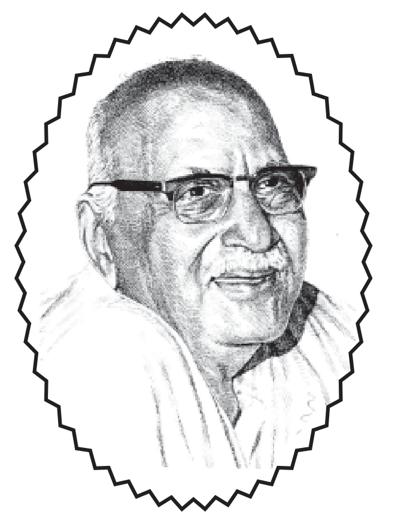

॥ श्रीहरिः ॥
सुखी होनेके उपाय

हनुमानप्रसाद पोद्दार
गीतावाटिका प्रकाशन, गीतावाटिका - गोरखपुर के मूल ग्रंथ
— सरल एवं सुगम पठन के लिए नवीन प्रस्तुति।
॥ ॐ श्रीपरमात्मने नमः ॥
नम्र निवेदन
भारतभूमिको देवभूमिकी संज्ञा दी जाती है। इस भूमिपर परमेश्वरका विविधरूपोंमें अनेक बार अवतरण हुआ। सृष्टि-संचालनके लिये जब परिस्थितियाँ अपरिहार्य हो जाती हैं तब भगवानका अवतरण होता है। इससे पूर्व भगवान् अपने पार्षदोंको परिकर सहित धरापर भेजकर अपना कार्य कराते हैं। ऐसे अनेक ऋषि, संत और महात्मा हुए हैं जो इस प्रयोजनसे धरापर आये और अपना निर्दिष्ट कार्य करके भगवद्धाम चले गये। ऐसे महापुरुषोंकी कथनी-करनी और जीवनके बाह्यरूपमें समानता होती है। उनका जीवन ही उनका संदेश होता है। उनका जीवन मौन व्याख्यान होता है जिसकी छाप अमिट होती है।
ऐसे ही ऋषियोंमें भाईजी श्रीहनुमानप्रसादजी पोद्दारका नाम अग्रगण्य है। उनका जीवन सर्वाकर्षक था और उनके कार्य आज भी मानवमात्रको सत्यपथपर चलनेके लिये प्रेरित करते हैं और करते रहेंगे। उनका बाह्य जीवन जहाँ लोकव्यवहारकी दृष्टिसे सर्वथा अनुकरणीय है वहीं उनका अन्तरजीवन मानव शरीरके चरम लक्ष्य भगवत् साक्षात्कारसे कहीं आगे अपने इष्टके साथ एकाकार हो गया। जिसका रहस्य अन्तर्जगतके एक संतने बताया ।
श्रीभाईजीकी इस स्थितिको बहुत कम लोग ही जान सके लेकिन उनके जीवन और कार्यको देखकर अगणित लोग आकर्षित हुए और अपने लोकाचार और साधनाके सम्बन्धमें मार्गदर्शन चाहते। ऐसे ही लोगोंके आग्रहपर श्रीभाईजीको अपना कुछ अमूल्य समय प्रतिदिन इस कार्यके लिये देना पड़ता। धीरे-धीरे यह प्रवचन, सत्संगका कार्यक्रम बन गया। इन्हीं प्रवचनोंको कुछ महानुभाव आदर और प्रेमवश रिकार्ड कर लिये। ये प्रवचन अतिशय मार्मिक और हृदय-स्पर्शी हैं जिनमें गूढ़ तत्त्वोंकी भी सरलतम व्याख्या हैं जिन्हें कोई सच्चा जिज्ञासु हृदयंगम कर ले तो उसका जीवन निश्चित रूपसे परिवर्तित हो जायेगा।
इन प्रवचनोंका विशाल भण्डार है। इसका लाभ सर्वसाधारणको मिले इस दृष्टिसे इसे श्रीबृजदेवजी दूबे द्वारा लिपिबद्ध कराकर प्रकाशित करनेका कार्य भगवत्कृपासे चल रहा है। अबतक ‘ब्रजभावकी उपासना’, प्रभुको आत्मसमर्पण, ‘रस और आनन्द’, ‘ग्रेमका स्वरूप’ तथा ‘प्रेम और प्रेमी’ प्रवचन संग्रह प्रकाशित हो चुके हैं। जिन्हें श्रद्धालु पाठकोंने हृदयसे स्वीकार किया है। इसी श्रृंखलामें प्रस्तुत संग्रह आपके हाथोंमें सौंपकर हर्षानुभूति हो रही है। इस संग्रहमें लोक व्यवहारसे लेकर मानव जीवनके परम लक्ष्य भगवत्प्राप्तिकी साधनाको जिस तरह सरल, सरस और सुबोध ढंगसे दृष्टान्तोंक द्वारा समझाया गया है वह सर्वजनोपयोगी है। हमारा विश्वास है कि जो भी इसका अनुशीलन करेंगे उन्हें उनके भावानुसार अवश्य लाभ होगा। इस पुस्तकमें जो भी त्रुटियाँ दृष्टिगोचर होंगी वह हमारी अल्पज्ञतावश अपनी है जिन्हें सुधी पाठक ध्यानमें लायेंगे तो उन्हें सुधारनेकी चेष्टा की जायेगी। और, अन्तमें जिन श्रीभाईजीकी कृपासे यह कार्य चल रहा है उनके श्रीचरणोंमें प्रणत निवेदनके साथ--त्वदीयं वस्तु गोविन्द तुभ्यमेव समर्पये।
— प्रकाशक
॥ ॐ श्रीपरमात्मने नमः ॥
१. साधनामय जीवन
मन जिस प्रकारकी भावनामें रहता है, मनमें जो चीजें रहती हैं, उसी प्रकारसे, उसी भावसे वह मनुष्य जगत्को देखता है। जिसके मनमें बुरा भाव है वह जगतमें सर्वत्र बुराई ही देखता है। वह उन्हीं बुरे भावोंको देखता है और उन्हींको ग्रहण करता रहता है। जिसके मनमें षडविकार काम, क्रोध, मोह, मद, लोभ और मत्सर भरे रहते हैं उसको भगवान्में भी ये दीखते हैं। उसकी मनकी आँख वैसी ही बन जाती है। जिसके मनका जैसा भाव है वैसा उसका स्वरूप और जैसा अपना स्वरूप उसी प्रकारकी उसकी जगतमें अनुभूति होती है। परन्तु यह मिथ्या अनुभूति है। जैसे रंग असली दूसरा हो और अगर किसी अन्य रंगका चश्मा आँखपर लगा है तो चश्मेका रंग उस रंगमें दीखता है। हालाँकि वह रंग नहीं है। दूसरा रंग है। हरे चश्मेवालेको हरा दीखता है और नीले चश्मेवालेको नीला दीखता है। इसी प्रकार सत्यपर, भगवान्के स्वरूपपर हमारी दृष्टिमें एक आवरण आ जाता है। उस आवरणके कारणसे हम भगवान्के वास्तविक रूपको नहीं देख पाते हैं। हम विकृत देखते हैं।
नाहं प्रकाशः सर्वस्य योगामायासमावृतः।
मूढ़ोऽयं नाभिजानाति लोको मामजमव्ययम्॥
(गीता ७/२५)
भगवान््ने कहा-मैं योगमायासे ढका हुआ हूँ इसलिये जगतमें सबके सामने नहीं होता। इसीलिये जो मूढ़ लोग हैं वह मुझ अजर, अविनाशीको नहीं जानते ।
वास्तवमें पर्दा भगवान्पर नहीं है। पर्दा हमारी आँखोंपर है और यह हमारा ही डाला हुआ है।
अपुनपो आपुन ही विसर्यो।
जैसे स्वान काँच-मंदिरमें भ्रमि-भ्रमि भूसि मर्यो ॥
(भजन-संग्रह १५६)
अपने आप हमने अपनेको विसरा दिया है। अपने अर्थात् आत्मस्वरूप । अपनपा अर्थात् भगवानको देखनेकी आँखें। इसको हमने भुला दिया। इसलिये हमारी आँखोंपर नाना प्रकारके परदे आ गये। रंग चढ़ गये। और, उस रंगसे हम विभिन्न प्रकारसे अपने विभिन्न भावोंसे जगत्को देखते हैं। जगतमें सर्वत्र भरे भगवानको जगह हम न मालूम क्या-क्या देखते हैं और क्या-क्या सुनते हैं।
शास्त्रकारोंने कहा है कि अगर न देख सको, वैसी आँखें जबतक न मिल जायँ तबतक कम-से-कम मनसे ऐसी भावना करो। पहले मनमें निश्चय करो फिर भावना करो। बुद्धिसे निश्चय हो जाय कि जो कुछ हैं वह भगवान् ही हैं। भगवान् दिखते नहीं हैं तो मनसे भावना करो कि भगवान् दीखते नहीं हैं परन्तु हैं वहीं। इस प्रकार बार-बार समस्त भूत-प्राणियोंमें, समस्त जगत्में भगवान्की भावना करते रहनेसे हमारी मनकी आँखोंमें, बुद्धिकी आँखोंमें भगवान् उतर आयेंगे। और, जब हम बुद्धिको आँखोंसे, मनको आँखोंसे भगवानको देखने लगेंगे तब फिर कभी इन आँखोंके सामने भी भगवान् दीखने लगेंगे। ऐसा होना कोई बड़ी बात नहीं है। तन्मयता जब मनको बढ़ती है तभी आँखोंके सामनेके रूप बदल जाते हैं। और, जहाँ सत्यका दर्शन होता है--केवल बाहरी तन्मयता नहीं वहाँ तो फिर भगवानको दीखनेमें कोई आश्चर्यको बात नहीं है। सब जगह भगवान् दीखते हैं।
साधनामें कई बार इस तरहकी स्थिति साधककी होती है कि वह स्वयं आश्चर्य करता है कि मैं देख रहा था क्या और मुझे दीख गया क्या। श्रीअरविन्द एक बार कोर्टमें थे तो अपने पक्षके और विपक्षके वैरिस्टरोंको तथा जजको श्रीकृष्णके रूपमें देखा। उन्होंने लिखा है कि मुझे दीख रहा था कि सब श्रीकृष्णके ही श्रीकृष्ण बैठे हैं। जज भी श्रीकृष्ण हैं नौकर भी श्रीकृष्ण हैं। इस प्रकार उन्होंने लिखा है। जब तन्मयता होती है तब ऐसा होता है। तन्मयता क्या है? चित्तकी वृत्ति जब एक वस्तुमें तदाकार हुई तब आँखके सामने वही वस्तु आ जायेगी। यह कोई कल्पना नहीं है। यह बिल्कुल प्रैक्टिकल बात है। इसे कोई भी आदमी करके देख सकता है।
ध्येयाकार वृत्ति यदि पूर्णरूपसे हो जाय, किसी वस्तुके आकारवाली वृत्ति अगर पूरी बन जाय और दूसरी वृत्ति न आये तो आँखके सामने भी वही वस्तु दीखेगी जो उसकी वृत्तिमें है। आँख खोलकर ध्यानका अभ्यास पूर्ण हो जानेपर यह हम, आप सभी देख सकते हैं। यह केवल ध्यानकी तन्मयताकी मानसिक ध्येयाकार वृत्तिके परिणामको बात है। और, जहाँपर वस्तु ठीक सामने आ जाती है वहाँ तो कहना ही क्या है? हमारा यह मन जगत्को विकृतरूपमें देखता है। हमारा यह मन जगत्को बुरे रूपमें देखता है और हमारा ही यह मन भगवदाकार हो जाय तो सारे जगतमें भगवानको देखता है, भगवानको देख सकता है, क्योंकि यह सत्य है कि वास्तवमें इस जगत्के रूपमें भगवान् ही अभिव्यक्त हैं। भगवानने कहा है कि सारे रूपोंमें मैं ही अपनी अव्यक्त मूर्तिसे विद्यमान हूँ।
“मया ततमिदं सर्वं जगदव्यक्तमूर्तिना”
(गीता ९/४)
सारे जगतमें अव्यक्त मूर्तिके द्वारा मैं ही व्याप्त हूं। केवल आवरण-पर्दा है उससे लोगोंको में दीखता नहीं हूँ। वह पर्दा कभी हट जाय तो भगवान् सामने हैं ही।
इसीलिये साधना करनी है तीन तरहसे। मनके द्वारा यह भाव करे कि सब कुछ भगवान् हैं। बुद्धिके द्वारा यह निश्चय करे कि सब भगवान् हैं और अपने शरीरकी चेष्टाके द्वारा प्रत्येक क्रियासे भगवानको पूजा करनेका भाव करे। मन और बुद्धिके द्वारा ही निश्चय होता है। भगवान्ने इन्हीं दोनोंको माँगा है। ‘मय्येव मन आधत्स्व मयि बुद्धिं निवेशय’ (गीता १२/८)
“मय्यर्पितमनोबुद्धि” (गीता ८/७)
उन्होंने कहा--मनको मेरेमें लगाओ और बुद्धिको मेरेमें आविष्ट कर दो। मन और बुद्धि मुझे सौंप दो। इस प्रकारसे भगवानने आज्ञा दी है।
इसलिये मनके द्वारा सर्वत्र भगवानको देखनेका भाव करें। और, बुद्धिके द्वारा निश्चय करें कि सर्वत्र भगवान् ही हैं। और कोई वस्तु है ही नहीं। ऐसा मन और बुद्धिका निश्चय करके अपनी प्रत्येक क्रिया भगवत् पूजाके भावसे करे। अपनी प्रत्येक क्रियाके द्वारा भगवानको संतुष्ट करनेका भाव रखे। हैं भगवान् ही। बुद्धिका निश्चय भगवान् हैं। मनका भाव भगवान् हैं। जब ऐसा होगा तब हमारी जो क्रिया होगी वह भगवान्के साथ ही होगी। हमारा बोलना-चालना, व्यवहार करना, देखना-सुनना सभी। जब मन-बुद्धिके साथ यह निश्चय है कि सब भगवान् हैं तब यह सब चीजें भगवानके साथ होंगी।
इसलिये प्रत्येक क्रियामें भगवान्के साथ सम्पर्क कर लें। मेरी यह क्रिया भगवान्को संतुष्टिके लिये है। मेरा बोलना, खाना-पीना, हिलना, सोना, बात करना, किसीसे मिलना-जुलना या किसीके साथ व्यवहार करना यह सब भगवानके लिये है। व्यवहारमें जबतक व्यावहारिक ज्ञान है तबतक व्यवहार होगा व्यवहारके अनुसार। उसमें आपत्ति नहीं है। परन्तु भावमें और निश्चयमें वह भगवान् हैं और हम भगवान्की पूजा कर रहे हैं। यह क्रिया भगवानके प्रीत्यर्थ कर रहे हैं। उनकी संतुष्टिके लिये कर रहे हैं। अपने लिये नहीं। खाना-पीना, सोना-बैठना, बातचीत करना, व्यापार करना और सारे काम करना। जो कार्य जिसके जिम्मे हो वही उसका वास्तविक स्वकर्म है। और ‘स्वकर्मणातमभ्यर्च्य’ (गीता १८/४६) अपने-अपने कर्मके द्वारा मनुष्य भगवान्को पूजा करे। जिसका जो कर्म हो उस कर्मके द्वारा पूजा करे। जिससे जो व्यवहार हो उसमें यह निश्चय करे कि इस रूपमें भगवान् हैं और मनसे भाव करे कि यह भगवान् दीखें तथा क्रिया करते समय यह याद रखें कि यह भगवान् हैं। क्रिया जो हो वह तो हो स्वाँगके अनुसार लेकिन भाव यह रहे कि मेरी यह क्रिया भगवान्के साथ हो रही है। यह साधन है। इसे श्रीमद्भागवतके एकादश स्कन्धमें मृत्युञ्जययोग कहा गया है।
भगवान्ने उद्धवको उपदेश देते समय मृत्युञ्जययोग कहा है। मृत्युञ्जय योग अर्थात् मृत्युपर विजय प्राप्त करा देनेवाला योग। यह योग क्या है? इससे मनमें भगवानके साथ सम्पर्क हो गया। इसमें देर नहीं लगती है यदि यह निश्चय हो जाय तो क्षणभरका कार्य है। सगाई हो गयी और लड़कीने सुन लिया कि सगाई हो गयी। अब इससे सुननेमें कितनी देर लगी। बस, सुन लिया और मन तुरंत बदल गया। उस लड़कीने मान लिया कि मैं अमुककी हो गयी। उसमें देर नहीं लगी।
मन और बुद्धि इन दो में निश्चय होता है। बुद्धि निश्चय करती है और मन भावना करता है। मन संकल्प-विकल्पात्मक है। संकल्पको वस्तुका ही बार-बार मनन करना, इसका नाम चित्त है। चिन्तन करनेवाला चित्त, संकल्प-विकल्प करनेवाला मन और निश्चय करनेवाली बुद्धि। मन और चित्त एक ही है। वास्तवमें तो ये चार करण जो हैं वह एक ही अन्तःकरणके चार वृत्तियोंके रूप हैं। इनमें मन और चित्तको किसी किसीने दो माना है और किसी-किसीने एक माना है। मनके द्वारा यह भावना हो गयी कि सब भगवान् हैं और बुद्धिके द्वारा निश्चय हो गया कि सब भगवान् हैं। अब जो क्रिया होगी वह इस मन, बुद्धिके अनुसार होगी।
प्रत्येक क्रियामें यह भाव हो जाय कि यह क्रिया जो कुछ मैं कर रहा हूँ-जो कुछ बोल रहा, जो कर रहा हूँ, खा रहा हूँ यह सारा कुछ भगवान्के साथ हो रहा है। इस प्रकार भगवानके साथ मन और बुद्धिका सम्पर्कित हो जाना प्रत्येक कर्मको भगवान्को पूजा बना देता है। इसीको श्रीमद्धागवतमें कहा है-मृत्युञ्जययोग-मृत्युपर विजय प्राप्त करा देनेवाला योग। यह संसारकी जो भी खुराफात हमसे होती है यह पहले हमारे मनमें होती है। जितनी इन्द्रियाँ हैं यह सब चीजोंको ग्रहण करती हैं मनकी सहायतासे और सौंप देती हैं ले जाकरके मनको । यह नियम है। आँखके सामने चाहे कैसी भी चीज आ जाय यदि आँखके साथ उस समय मन नहीं है तो उस चीजको आँख ग्रहण नहीं करती है। कानके सामने कैसा भी शब्द आ जाय परन्तु यदि कानके साथ उस समय मन नहीं है तो उस चीजको कान ग्रहण नहीं करता है। यह नियम है। कोई कितना भी जोरसे बोलता हो और हम पास बैठे हों लेकिन मन कहीं और लगा हो तो हम बाठदमें कह देंगे कि भई, तुम बोल तो बहुत जोरसे रहे थे लेकिन मेरा मन कहीं और था, मैंने ध्यान नहीं दिया। फिरसे बताओ क्या कहा? यह क्या चीज है? बिना मनके इन्द्रिय किसी विषयको ग्रहण नहीं कर सकती है। मनकी सहायतासे इन्द्रिय विषय ग्रहण करती है और ग्रहण करके वहाँ ले जाती है? उसके अपने पास उसे रखनेकी कोई जगह नहीं है। इन्द्रियका कार्य है उसे ग्रहण कर लेना। परन्तु उसे याद कौन रखेगा? जैसे यह कहें कि आज बादामकी बर्फी बड़ी अच्छी थी, बड़ी स्वादिष्ट रही। जितनी देरतक वह जीभ पर रही उतने देरतक उसने रसको ग्रहण किया। परन्तु यह बहुत अच्छी थी इसे वर्षोंतक उसकी स्मृति रखनेवाला मन है। वह चीज जाती है मनमें । विषयको ग्रहण करती है इन्द्रिय मनकी सहायतासे और फिर वह मनको दे देती है। यदि मन संसारके विषयोंमें विषयाकार वृत्तिसे न लगे तो वह चीज मनमें नहीं आती है। और, यदि वही मन उसके साथ भगवानको जोड़कर लगा दे। बहुत सुन्दर प्रभात बेला है और किसी पक्षीका सुन्दर कलरव सुनाई दिया तो उसी समय मनने कह दिया कि देखो, इतनी सुन्दर सुरीली आवाज बनानेवाला कैसा है? इसका निर्माता कितना अच्छा, कितना सुन्दर होगा। किसी पुष्पको देखा खिला हुआ तो देखा कि उसमें कितने विचित्र सुन्दर रंग हैं, उसका सौरभ है तो तत्काल उसके रचयिताकी ओर मन गया कि देखो न! कितना सुन्दर है। पेड़में तो कुछ था ही नहीं सिर्फ हरी-हरी टहनियाँ थीं और उसमेंसे यह कितना सुन्दर पुष्प निकला है। कैसे कलियाँ खिलीं और यह कितने वर्णका है, इसमेंसे कैसी निराली सुगन्ध आ रही है। तब तत्काल भगवान् याद आ गये।
इसी प्रकार प्रत्येक वस्तुमें, प्रत्येक क्रियामें, प्रत्येक दर्शनमें, प्रत्येक श्रवणमें और प्रत्येक गन्धमें तथा प्रत्येक रसमें निरन्तर भगवानके साथ सम्पर्क जोड़ लें। कुछ भयानक दीखे तो वहाँ भी जोड़ लिया। आऽहाऽ ! आज तुम बड़े भयानक बनकर आये हो। नामदेवजीके जीवनमें आता है कि वे एक बार घूमते हुए किसी गाँवमें पहुँच गये। वहाँ लोगोंने सोचा कि नामदेवजी तो आ ही गये हैं। इसलिये इनसे कुछ काम लेना चाहिये। वहाँ एक घर था जिसके बारेमें लोगोंका विश्वास था कि वहाँ भूत रहता है। उस घरमें कोई ठहरता नहीं था। उन लोगोंने सोचा कि इन्हें क्या भूत खायेगा। और खायेगा भी तो इनके लिये कौन रोनेवाला है? इनको वहीं ठहराया जाय। नामदेवजीको उस भूतहा घरमें ठहरा दिया। रातमें संकल्पसे या किसी भी तरहसे भूत महाराज पधारे। वह लम्बा-चौड़ा, काला-कलूटा भयानक शरीर था। उसे देखकर नामदेवजी खूब हँसे। और बोले-आज तो तुम खूब बनकर आये हो, ‘भले बने हो लम्बकनाथ’--यह पद गाया। बस, जहाँ भगवत् भावना हुई वहीं वह स्वरूप परिवर्तित हो गया। और, भगवान् सामने प्रकट हो गये। भगवान् तो उसमें भी हैं न! ऐसा कौन प्राणी है, कौन स्थान है और कौन-सी वस्तु है जिसमें भगवान् नहीं हों। हमारी आँख भगवान्को देखनेकी नहीं है।
भगवान् प्रत्येक वस्तुमें सर्वदा, सर्वथा और सर्वत्र हैं ही। हम यदि भगवानको अपनी आँखोंसे देखने लगें तो भगवान् सर्वत्र दिखायी दें। मृत्युमें भी भगवान् दिखायी दें। नामदेवजीने उस भूतमें भगवानको देखा । उन्होंने अग्निमें भगवानको देखा। साँपोंके अन्दर प्रह्मादने भगवान्को देखा। यह विष्णुपुराणमें आया है। जब प्रह्वादको साँपोंके बीच डाल दिया कि साँप उन्हें इस लें। वहाँ बड़े-बड़े विषधर सर्प थे। तब प्रह्नादके मनमें आया कि इन सबमें भी तो मेरे भगवान् ही हैं। जो भगवान् आत्मरूपसे मुझमें हैं वही भगवान् साक्षात् इन साँपोंके रूपमें हैं। साँपोंके बच्चे कहीं साँपसे डरते हैं क्या? साँपोंके बच्चोंको साँप मुँहमें भी रख लेते हैं। अपनी जीभ लगाते हैं। जहर उगल देते हैं। सब कुछ करते हैं तो क्या साँपके बच्चे मर जाते हैं? यह सब भगवान् ही हैं। बस, जहाँ यह भाव आया वहाँ सब ठीक। अब साँप कौन काटे और काटे तो प्रह्लाद मरे कैसे? आँख बदल गयी। सर्वत्र भगवानके दर्शन होने लगे। प्रह्वादने बताया कि सब जीवोंमें भगवान् हैं । प्रह्लादको जब महलके छतसे गिराया गया तब उन्होंने सोचा कि नीचे और ऊपर तो वही हैं। हम तो उसीकी गोदमें जायेंगे न! बस, उसीकी गोदमें उतरते हैं, उसीकी गोदमें रहेंगे। जहाँ गिरना है वहाँ भी वही है। शून्यमें भी वही है। ‘खं वायुमग्निं सलिलं महीं च’ (श्रीमद्भा० ११/२/४१)
साराका सारा भगवान्का स्वरूप है। प्रह्वादको ऐसा भान हुआ। मानों कोई फूलोंका गद्दा बिछा हुआ है। उसपर जाकर प्रह्लाद आनन्दसे बैठ गये। लोगोंने देखा कि प्रह्लादको कुछ नहीं हुआ। दृष्टि जब इस प्रकारकी हो जाती है तब सर्वत्र भगवान् ही दिखायी देते हैं ।
सीय राममय सब जग जानी। करडँ प्रनाम जोरि जुग पानी ॥
(रा०्च०मा०/बाल/७/२)
समस्त जगत्में मन और बुद्धिसे भगवानका भाव करके अपनी-अपनी क्रियाके द्वारा, जिसका जो काम है उससे भगवान्की पूजा करें। उस पूजामें किसी और बाहरी सामग्रीको आवश्यकता नहीं है। सामग्री अपने आप बन जाती है मनकी । मन सामग्रीके अनुकूल क्रिया करवा देता है। किसी व्यक्तिसे यदि बात कर रहे हैं तो बात जैसी करनी है वैसी करेंगे परन्तु उसमें जो अन्तरका विष रहता है--कहीं द्वेष है, कहीं ईर्ष्या है, कहीं क्रोध है, कहीं काम है, कहीं लोभ है, कहीं द्रोह है, इन वस्तुओंके भावोंको साथ लेकर जब हम बात करते हैं तो वह दूषित चीज है। और, यदि इन भावोंकी जगह यह भाव आ जाय कि इनके साथ स्वाँगके अनुसार बरतना है। हैं तो ये वही। कड़ा बोलते हैं परन्तु बोलते हैं इनकी आज्ञासे। कोई क्रोध, द्वेष या काम रखकर नहीं। तब कड़ा बोलना बहुत पसन्द है।
निकुञ्जलीलामें भगवान् श्रीकृष्णके बड़े-बड़े मधुर भाव आते हैं। अगर कभी श्रीकृष्णके मनमें यह आया कि आज गोपियाँ गाली दें तब काम बने। इस सुखको इच्छामें दो भाव होते हैं-वाम भाव और दक्षिण भाव। कभी-कभी वाम भावसे बड़ी प्रसन्नता होती है। तब वहाँ मान होता है। राधारानी मान करके बैठ जाती हैं और श्रीकृष्ण मनुहार करते हैं तो मानतीं नहीं। और, गोपांगनाओंको भगवान्की स्तुतिसे मतलब नहीं है और भगवान्के तिरस्कारसे भी मतलब नहीं है। उनको मतलब है भगवान्के सुखसे ।अगर कहीं वे गाली सुननेसे सुखी हों तो वे गाली सुना देंगी। इनको कोई आपत्ति नहीं है। यदि कहीं इनको डाँटने-फटकारनेसे सुख मिले तो वे डाँट देंगी। यह बड़ा ऊँचा भाव है। हमारे साधनाके व्यवहारमें उस तरहकी गाली नहीं। मर्यादित कटु व्यवहार यदि वहाँपर आवश्यक है यह समझते हुए कि इस प्रकारका खेल आवश्यक है तो उसमें द्रोह बुद्धि नहीं, क्रोध बुद्धि नहीं और किसी प्रकारका बदला लेनेकी बुद्धि नहीं, कोई हानि पहुँचानेकी बुद्धि नहीं। इस प्रकार दूषित बुद्धियोंसे रहित केवल भगवद् भावसे उसके साथ वार्तालाप हमने किया। चाहे वह वार्तालाप कड़ा ही हो। उसमें कोई आपत्तिकी बात नहीं। लेकिन जहाँ मनका भाव शुद्ध रहेगा, वहाँ जितने दोष हैं, जो हमारे जीवनमें विष हैं, जो हमें बार-बार मारते हैं और यमलोक ले जाते हैं, ये मिट जायेंगे।
जब हमारी बुद्धि और मन यह निश्चय कर लेगा कि अमुक भगवान् हैं और हम इसके साथ व्यवहार कर रहे हैं तब व्यवहारमें सदभाव आ जायेगा। ‘सदभावे साधुभावे च’। सदभावका अर्थ है कि ये जितने मनके विकार हैं वे क्रियाके समय न रहें और इन विकारोंके स्थानपर भगवत् प्रीतिका भाव रहे। चाहे वह क्रिया कैसी भी हो। इसमें आपत्ति नहीं। क्रिया तो होगी स्वाँगके अनुसार ही। पितामह भीष्मको अर्जुन सिरमें बाण मारते हैं। उनका सिर फूट जाता है लेकिन क्या भीष्म नाराज होते हैं। और, अर्जुन द्वेषसे मारते हैं क्या? भीष्म इस बातको चाहते हैं कि मेरे सिरपर बाणोंका तकिया लग जाय। भीष्मको अनुकूलता इसमें है और भीष्मकी अनुकूलताको सिद्ध करनेके लिये अर्जुन भीष्मके मस्तकको तीन तीक्ष्ण बाणोंसे फोड़ डालते हैं। मस्तकको तीक्ष्ण बाणोंसे फोड़ डालनेकी क्रिया प्रीति उत्पन्न करनेवाली होती है यदि वह अनुकूल हो। और, प्रतिकूलतामें किसी व्यक्तिके साथ आप मीठी वाणी बोलिये और मनमें आपके छल-कपट भरा हुआ है और वह इस बातको जानता है तो आपकी मीठी वाणी उसे जहरीली लगेगी। वह कहेगा कितना मीठा बोल रहा है और कितना बदमाश है। यह मीठा बोलकरके मेरा नाश करना चाह रहा है ।
इसलिये बाहरी क्रियामें उतनी बात नहीं है। बाहरी क्रियामें जहाँ आवश्यक हो वहाँ वैसा करें। डॉक्टर लोग ऑपरेशनमें अंगोंको काट डालते हैं। छः-सात इंच गहरा घाव कर देते हैं। तब क्या कोई भी रोगी सफल ऑपरेशन होनेपर डॉक्टरको गाली देता है? अथवा बुरा मानता है? वह अंगको काटकर फेंक दिया तब वह सोचता है मेरा यह अंग बेकार हो गया था यदि वह नहीं कटता तो सारा अंग बेकार हो जाता। इसलिये यह इतना पैर काट दिया। डॉक्टर साहबने बहुत अच्छा किया। और अंग तो बच गया। यह अनुकूलता है।
कहनेका तात्पर्य यह है कि यदि हमारे भावमें दोष न हो और भगवत् प्रीतिका भाव हो तो क्रिया यदि कठोर भी हो तो उस कठोर क्रियामें मन कठोर नहीं होगा। उस कठोर क्रियामें मनमें सद्भाव रहेगा, मनमें रहेगा प्रीतिका भाव, मनमें रहेगा सुख पहुँचाने और हित करनेका भाव। इसलिये क्रियामें आपत्ति नहीं आयेगी । परन्तु भगवदभावसे क्रिया करनेपर क्रियाका दोष निकल जायेगा। क्रियामें दोष क्या है? उस क्रियामें दोष नहीं है, दोष है मनके भावमें। बुरे भावसे की गयी कोई क्रिया बहुत बुरी होती है।
माँ मनमें स्नेह भरकर और क्रोधरहित होकर दूसरी ओर मुँह करके हँसे और बच्चेकी तरफ आँख लाल करे उसे डाँट दे और चपत भी लगा दे तो माँके इस भावमें कहीं बुराई है क्या? है नहीं, हो सकती नहीं। वह तो स्नेहसे भरी है। इसी प्रकारसे जो कुछ भी हमारे द्वारा दोष बनते-क्रियाओंमें दोष, ये दोष बनते हैं तभी जब हमारे मनमें दोष होता है। मनमें यदि सद्भाव है तो सदभावसे की गयी क्रियामें यदि कोई भूल भी हो जाती है तो वह माफ होती है। क्योंकि वहाँ सद्भाव है। सदभावसे की गयी क्रियामें कोई दोष आयेगा नहीं। उसका फल बुरा नहीं हो सकता। यदि कहीं कोई भूल हो जाती है तो उस भूलको भगवान् क्षमा कर देते हैं क्योंकि नीयतमें बुराई नहीं थी। नीयतकी बुराई ही बुराई होती है।
इसलिये तीन बातें करें। एक, बुद्धिके द्वारा यह निश्चय करें कि सब भगवान् हैं। दूसरा, मनके द्वारा भगवान् देखनेका भाव करें और तीसरा, अपनी प्रत्येक क्रिया भगवानको पूजा है-इस भावसे क्रियाको सम्पन्न करें। तब क्या होगा कि सारा जीवन पूजामय बन जायेगा। दिनभरके समस्त कार्य पूजा बन जायेंगे और भगवान्की प्रसन्नता पद-पदमें और पल-पलमें प्राप्त होगी। और, अपने-आप बिना चेष्टाके मनके सारे दोष निकल जायेंगे।
जब हम कोई कर्म भगवान्के लिये करेंगे तो स्वाभाविक ही भगवान्के अनुकूल करनेकी चेष्टा करेंगे। जिसके लिये हम कर्म करते हैं यदि उसके अनुकूल नहीं होंगे तो हमारे कर्म बहुत दिनोंतक नहीं चलेंगे। वह नाराज होकर कर्मको स्वीकार नहीं करेगा। अथवा हम ही कर्म करना छोड़ देंगे। हमारे घरमें यदि एक दिनके लिये भी अतिथि आता है और हम अगर समझदार हैं तो अतिथिको अनुकूलता देखते हैं। उसकी अनुकूलताके अनुसार बर्ताव करना ही उसकी प्रीतिका कारण होता है।
इसलिये जब हम भगवान्के लिये कार्य करेंगे, भगवत्प्रीत्यर्थ कार्य करेंगे तो हमारा प्रत्येक कार्य उनके अनुकूल होगा। और, उनके अनुकूल होनेका अर्थ है कार्य करनेमें जो षडविकार होते हैं--दोष होते हैं ये निकल जायेंगे। काम, क्रोध, लोभ, मोह, मद और मत्सर ये छः विकार हैं। इन्हींक और बहुतसे रूप हैं। जब ये आते हैं तो इनका पूरा कुनबा इकट्ठा हो जाता है। एकके बाद एक आते जाते हैं। श्रीमद्धागवतमें इन विकारोंके परिवारका विशद वर्णन है। जहाँ व्यक्ति अपना सिक्का जमाता है वहाँ अपने परिवारको बुलाता ही है। यह स्वाभाविक बात है। फिर, इनका परिवार जहाँ छा गया वहाँ दैवीय सम्पत्ति छिप जाती है, भाग जाती है। वह डरके कारण वहाँ नहीं रहती है। इसलिये यदि ऐसा करेंगे तो यह बुराईका परिवार वहाँ नहीं आयेगा। यह करके देख लीजिये। भगवत् भावसे एक दिन क्रिया करके देखिये आपके मनमें दोष नहीं आयेंगे। ये दोष तभी आते हैं जब हम इनको रहने देते हैं।
अर्जुनने सोचा कि भगवान्ने कह दिया है कि कामनासे ही सारे पाप होते हैं और कामना रहती है मनमें। तब क्या करें? भगवान्ने देखा कि इससे अर्जुन डर न जाय तब भगवान्ने कहा--अर्जुन! तुम इन्द्रियोंके गुलाम नहीं हो।
इन्द्रियाणि पराण्याहुरिन्द्रियेभ्यः परं मनः।
मनसस्तु परा बुद्धिर्यो बुद्धेः परतस्तु सः॥
एवं बुद्धेः परं बुद्ध्वा संस्तभ्यात्मानमात्मना।
जहि शत्रुं महाबाहो कामरूपं दुरासदम्॥
(गीता ३/४२-४३)
भगवान््ने कहा-इस स्थूल शरीरसे, कर्मेन्द्रियोंसे ज्ञानेन्द्रियाँ श्रेष्ठ हैं, उत्तम हैं, बलवान हैं। इनसे मन श्रेष्ठ है, बलवान हैं। मनसे बुद्धि श्रेष्ठ है और बुद्धिसे श्रेष्ठ, उससे परे आत्मा है। और, वह आत्मा तुम हो। इसलिये अपने आपको बलवान् समझकर इस कामरूपी बैरीको मार डालो। तुम महाबाहु हो, बड़े बलवान् हो।
कामरूपी बैरीको मार डालना आत्माके अधिकारमें है। आत्माका बल कामके बलसे बहुत बड़ा है। परन्तु यदि इस आत्माने अपनेको निर्बल मानकरके परास्त हो गया बुराइयोंसे तब ठीक नहीं है। महाभारतके शान्ति पर्वमें आया है कि इन बुराइयोंसे कभी हार न मानो। हार मानी कि ये बुराइयाँ सवार हो जाती हैं। इन बुराइयोंसे लड़ता रहे तो विजयी अवश्य होगा। क्योंकि आत्माका बल असीम है। चोरोंमें कितना बल होता है? अपने यहाँ कहा जाता है कि चोरोंके पैर नहीं होते। चोर हिम्मत बहुत करते हैं लेकिन जहाँ शोर सुना वहाँ भागे। इसी प्रकार इन दोषों-काम, क्रोध, लोभ, मोहादिमें बल नहीं होता है। इनमें तभीतक बल होता है जबतक इनके बलसे आदमी अपनेको परास्त मानकरके, हारा हुआ मानकर इनके वशमें रहता है। यदि आत्माकी ओर देखें और भगवान्के बलको अपने साथ रक्खे और अपनी क्रियाको भगवान्को अर्पण करनेका भाव रक्खे तो फिर भगवान्के भोगको कोई छीन नहीं सकता है। जबतक हम अपने लिये भोग रखते हैं तबतक कोई छीन सकता है। परन्तु जब भोग भगवानका हो गया तो भगवान्की चीज हो गयी। उसकी रक्षा भगवान् करेंगे।
तुलसीदासजी महाराज एक दिन बैठे थे तो कोई मनमें पूर्व स्मृतिको एक तरंग-सी आ गयी। वे भगवान्से बोले कि प्रभो! अब मेरे वशकी बात नहीं है। यह आपका घर है और आपके घरमें चोर आवे?
यह हृदय भवन प्रभु तोरा। इहाँ आय बसे बहु चोरा॥
इन चोरोंसे आपका घर लुट जायेगा। आप सावधान हो जायेँ। इसमें भाव यह है कि भगवान् स्वयं रक्षा करते हैं अपने चीजको । अपनी प्रत्येक क्रियाको यदि हम भगवानको सौंप दें तो हमारे क्रियाकी पवित्रताको रक्षा भगवान् करेंगे। हमारी क्रियामें अपवित्रता नहीं आने पायेगी। उसमें काम, क्रोध, लोभ और मोह आदि नहीं आने पायेंगे क्योंकि यह भगवानका भोग है। यह भगवान्की सामग्री है। उसकी तरफ कोई देख नहीं सकता है।
सीताजी अशोक वाटिकामें अकेली थीं। चारों ओर राक्षसियाँ थीं। लेकिन वे भयभीत नहीं थीं। रावणके सामने वे प्रचण्ड देवीका रूप धारण करके फटकारती हुई बोलीं-खबरदार! जो मेरी ओर देखा। रावण डर जाता है। इसमें बात यही है कि हमारी प्रत्येक क्रिया यदि भगवान्के लिये हो तो प्रत्येक क्रिया अपने आप विशुद्ध हो जायेगी। इसे करके देखिये बिल्कुल प्रैक्टिकल बात है। मनमें भगवत् भाव करके भगवत्पूजाके भावसे जिस क्रियाको करेंगे उस क्रियामें काम, क्रोध, लोभ नहीं आयेंगे। क्योंकि भगवदभाव साथ हैं। भगवदभाव भगवान्की अनुकूलता चाहता है।
इसलिये तीन बातें करनेकी हैं और इसे हम सब कर सकते हैं। और, प्रत्येक कार्यमें कर सकते हैं। कार्यमें कोई आपत्ति नहीं है। अध्यापक अपना कार्य करे, डॉक्टर अपना कार्य करे, न्यायाधीश अपना कार्य करे, व्यापारी अपना कार्य करे, नौकर अपना कार्य करे, भंगी अपना कार्य करें, माताएँ अपना कार्य करें। सब कार्य करें, परन्तु करें भगवान्के लिये और यदि कहीं उनमें मन लग जाय, उन्हें देखते हुए करें तो बहुत सुन्दर हो। भगवानके लिये रोते हुए करें और उनका गुण गाते हुए करें तब तो कहना ही क्या?
मथुरा के ब्रजदेवियोंकी महिमा गाते हुए श्रीमद्भागवतमें आया है--
या दोहनेऽवहनने मथनोपलेपप्रेज्जेद्ड
नार्भरुदितोक्षणमार्जनादौ ।
गायन्ति चैनमनुरक्तधियोऽश्रुकण्ठ्यो धन्या
व्रजस्त्रिय उरुक्रमचित्तयानाः ॥
(श्रीमद्भा०१०/४४/१५)
ये व्रजदेवियाँ धन्य हैं। सारा कार्य करते हुए--दोहन करते हुए, बच्चोंको खिलाते हुए, धान कूटते हुए, घर लीपते हुए, चौका लगाते हुए, लोरी गाते हुए, रसोई बनाते हुए, गाय दुहते हुए भी आँखोंसे धीरे-धीरे मीठे आँसू बहते रहते हैं। दुःखके आँसू नहीं। दुःखके आँसू मीठे नहीं होते हैं। उसमें सुख नहीं मिलता है। प्रेमके आँसूमें बहुत सुख मिलता है। उनके आँसू बहते रहते हैं, वाणी गद्गद रहती है और धीरे-धीरे श्रीकृष्णका गुण गाया करती हैं। सामने देखती हैं और सारा कार्य करती रहती हैं। वे धन्य हैं ।
इस प्रकारक जहाँ वृत्ति हो जाय वहाँ पाप-ताप कहाँ रहेंगे? वहाँसे पाप-ताप दूर भागते हैं। वहाँ न दुःख आता है न वहाँ पाप आता है। वहाँपर दिन-रात भगवान् खेलते रहते हैं। मृत्युमें भी और जीवनमें भी। संसारकी किसी भी परिस्थितिमें कोई अन्तर नहीं पड़ता है।
यं लब्ध्वा चापरं लाभं मन्यते नाधिकं ततः।
यस्मिन्स्थितो न दुःखेन गुरुणापि विचाल्यते ॥
(गीता ६/२२)
‘गुरुणापि दुःखेन न विचाल्यते’-महान्से महान् भारी-से-भारी दुःख भी यदि आ जाय तो वह विचलित नहीं होता है। और, वह उससे ऊँचा कोई लाभ नहीं मानता है। वैसी स्थिति होती है। उसकी साधना ऐसी होती है कि भगवत् भाव करके भगवत् प्रीत्यर्थ हम अपने कार्यको करें। कार्योको बदलनेकी आवश्यकता नहीं है। कार्योमें भाव बदल दिया जाय तो कार्य अपने आप बदल जायेगा ।
यशोदा मैया और अन्य गोपियोंका पहला काम उठकरके हाथ धोकर गाय दुहना था। गाय दुहने जब गोपी जाती है तो सबसे पहले अपने मनमें सोचती है कि हाथ साफ रहे जिससे उसमें कोई ऐसी चीज न आ जाय जिससे दूध खराब हो जाय क्योंकि इसे कन्हैयाको पिलाना है। सबसे पहले यही बात आती है कि कन्हैयाके लिये उसे जमाना, कन्हैयाके लिये मन्थन करना, कन्हैयाके लिये मक्खन निकालना और कन्हैयाके लिये उसे रखना। कन्हैया आयेगा और इसे खायेगा। सारा कार्य कन्हैयाके लिये। रातको सोती हैं तो कन्हैयाके लिये, जागती हैं तो कन्हैयाके लिये। सिवाय कन्हैयाके और कोई बात ही नहीं । जब ऐसा जीवन हो जाय कि सारा कार्य भगवानके लिये होवे तो आनन्द ही आनन्द हो।
हम लोगोंको इस प्रकारकी साधना करनी है, चेष्टा करनी है, प्रयत्न करना है। उससे जीवनमें कुछ नहीं बदलेगा लेकिन भाव बदल देनेसे जीवन परिवर्तित हो जायेगा। हम ऐसे ही रहेंगे। शरीर रहेगा परन्तु जो बड़ी भारी चीज है जीवनमें जो शत्रु अन्दर बैठे हैं ये सब भाग जायेंगे और पवित्रता आ जायेगी। जितना भी निरानन्द है, दुःख है, संताप है वह सारा का सारा इन शत्रुओंके कारण ही है। न गरीबीसे है, न निरीहतासे है, न बीमारीसे है और न मृत्युसे है। ये जो विकार हैं इन्हीं विकारोंके कारणसे सारा दुःख है। यदि ये विकार न हों तो अवस्थासे, परिस्थितिसे कोई दुःख नहीं है। अवस्था तो शरीरकी होती है। और, अपमान तथा भाव नामका होता है। दो चीजें हैं यह--नाम और रूप। जहाँ नाम-रूपमें अहंता है, जहाँ नाम-रूपके साथ कामना-वासना है वहाँ सारा गड़बड़ है। नाम-रूप या तो रहे नहीं अथवा दोनों भगवानको अर्पित हो जायँ। उसके बाद नाम-रूपका कुछ भी होता रहे। आप देख लीजिये जितना भी कष्ट होता है वह शरीरको लेकर होता है। और, जो अपमान होता है यह सारा-का-सारा मनका होता है। अगर मनमें गाली न माने तो अपमान नहीं होगा।
गोलोकधामसे अवतरण होनेके लिये जो बात राधाजीकी हुई, उसके लिये कोई निमित्त बनायें। तब श्रीदामजीसे राधाजीने कहा कि गोलोकधामसे ब्रजमें कैसे अवतरण करें? तब शापकी क्रिया हुई। उससे कार्य बन गया। इसमें कोई आपत्ति नहीं। आपत्ति तो होती है दूषित भावमें। अगर दूषित भाव न हो और नाम रूपके साथ हमारा सम्पर्क न रहे तो कष्ट नहीं होगा। अपमान नामका होता है और कष्ट शरीरको होता है। बीमार होता है शरीर और मरता भी शरीर ही है। न आत्मा मरता है न आत्मा बीमार होता है। और, अपमान होता है नामका । जितना अपमान होगा और जितनी निन्दा होगी वह सब कुछ नामका होगा। अमुक की होगी, आत्माकी नहीं होगी ।
जब भगवान्को समर्पित हो गया हमारा नाम और रूप तब उसके बाद यह नाम और रूप फिर हमारा नहीं रहेगा। कुछ भी हुआ करे । यह बात भक्तोंकी भाषामें है कि लोक-लाज, कुल-कानि, वेद-धर्म, देह-धर्म, लोक-धर्म इन सबका परित्याग करके भगवानको भजें। इसका अर्थ क्या है? यह परित्याग अपने-आप हो जायेगा। जबतक हम उसके नहीं हो जाते तबतक ही ये चोर पीछे लगे रहते हैं ।
तावद् रागादयः स्तेनास्तावत् कारागृहं गृहम्।
तावन्मोहोऽङ्घ्रिनिगडो यावत् कृष्ण न ते जनाः॥
(श्रीमद्भा०१०/१४/३६)
ब्रह्माजीने भगवान् श्रीकृष्णसे कहा-हे श्रीकृष्ण! मैंने सभी चीजें देखीं और मेरी समझमें ये बात आयी कि ये रागादि जो चोर हैं यह तभीतक पीछे लगे रहते हैं-स्तेन्-और तभीतक यह घरका जेलखाना भी रहता है और तभीतक मोहकी बेड़ियाँ पैरोंमें पड़ी रहती हैं। कबतक? जबतक वह आपका नहीं हो जाता है। जबतक जन आपके नहीं हो जाते तबतक घर भी जेलखाना रहेगा। तभीतक ये राग-द्वेषादि चोर भी पीछे लगे रहेंगे। ये लूटनेवाले चोर हैं। भगवान्ने गीतामें कहा है-‘’परिपन्थिनौ (३/३४) ये राग-द्वेष परिपन्थी हैं, लुटेरे हैं, बटमार हैं। ये लूट लेंगे। ये स्तेन हैं-चोर हैं। ये चोर कबतक रहते हैं जबतक तुम भगवानके न बन जाओ। ये घर जेलखाना कबतक रहेगा? जबतक तुम भगवान्के नहीं बन जाते। भगवान्के बन जायेंगे तो फिर यह भगवानका मंदिर बन जायेगा। और, यह मोहकी बेड़ी कबतक रहेगी? जबतक तुम उनके नहीं हो जाओगे। उनके हुए तो ये बेड़ियाँ टूटीं, घर मन्दिर बन गया और रागादि सारे भाग गये। अगर रागादि रहेंगे तो भगवान्में लगकर धन्य हो जायेंगे, पवित्र हो जायेंगे और पवित्र कर देंगे।
इसलिये हमें भगवानका बनना है। भगवान्का बननेका अर्थ है कि भगवानको सर्वत्र देखकरके भगवानको पूजाके लिये अपने प्रत्येक कार्यको घर बैठे करना है। जो अभी कर रहे हैं वह करते रहें। जहाँ भगवत् भाव आया कि दोष अपने आप चला जायेगा। जैसे प्रकाशके आनेसे अन्धकार अपने आप चला जाता है। कोई बोले कि प्रकाश करनेके लिये हम बल्ब जला देंगे लेकिन अंधेरेको हटानेके लिये क्या करेंगे? जब प्रकाश हो गया तो अंधेरा भाग गया। अंधेरेके मिट जानेका नाम ही तो प्रकाश है। यदि अंधेरा रहेगा कहाँ? जब तुमने प्रकाश कर दिया तो अंधेरा भाग गया। अंधेरेके मिट जानेका नाम ही तो प्रकाश है। यदि अंधेरा रहा तो प्रकाश हुआ कहाँ? और, प्रकाश हुआ तो अंधेरा कहाँ रहा?
भगवान् जब मनमें आ गये, भगवान् जब भाव और बुद्धिमें आ गये, भगवान् जब आ गये क्रियामें तो पाप-तापका जो तम--अन्धकार है यह रहेगा नहीं। इसलिये किसी भी प्रकारसे चाहे भगवानके सौन्दर्य-माधुर्यको देखकरके उसमें मन अर्पण कर दो, चाहे भगवानके ऐश्वर्यको देखकर कर दो अथवा किसी भी भावनासे अपना मन और बुद्धि हम भगवानको सौंप दें और हमारी क्रिया भगवत्प्रीत्यर्थ होने लगे तो हमारा जीवन साधनामय हो जाय। फिर वह जीवन अन्तिम जीवन होगा।
बहूनां जन्मनामन्ते ज्ञानवान्मां प्रपद्यते ।
वासुदेवः सर्वमिति स महात्मा सुदुर्लभः॥
(गीता ७/१९)
भगवान् कहते हैं-बहुत जन्मोंके अन्तमें, वह अन्तिम जन्म होता है जब ज्ञानी भक्त मुझे इस प्रकार भजता है। किस प्रकारसे? कि सारा जगत् वासुदेवमय है। सब वासुदेव हैं--इस प्रकारसे भजन करनेवाला सुदुर्लभ महात्मा भक्त होता है। वह उसका अन्तका जन्म होगा। फिर पुनर्जन्म होगा नहीं। सब ठीक हो जायेगा। तब हम या तो भगवद्धाममें उनके पार्षद होकर आनन्द करेंगे और यदि पहलेसे मिल जानेकी इच्छा है तो सायुज्य मुक्ति हो जायेगी। दोनों तरफसे कार्य बन जायेगा।
इस प्रकार कार्य करनेका अवसर सबको प्राप्त है। यह सबके लिये है। कोई छोटा-बड़ा, जाति इत्यादिकी इसमें कोई बात नहीं है। छोटी जाति-बड़ी जाति, ब्राह्मण-शूद्र, विद्वान्-अविद्वान्, पुरुष-स्त्री कोई भी हो।
पुरुष नपुंसक नारि वा जीव चराचर कोइ।
सर्व भाव भज कपट तजि मोहि परम प्रिय सोड ॥
(रा०च०मा०/उत्त८७क)
इसलिये सबका अधिकार है। सबके हाथमें अभी समय है। सभी कर सकते हैं। सब समझते हैं। बस, अपनेको करना है। करनेमें और कुछ करना नहीं है, केवल भाव बदलना है। और, भाव बदलनेमें देर नहीं लगती है। भगवान्के साथ सम्बन्ध जोड़ लिया जाय। सम्बन्ध ज्यों जोडेंगे, जुड़ जायेगा। इसमें देर नहीं लगती है। सम्बन्ध तो जुड़ा है ही। केवल मान लेना है। तब मृत्यु आनेपर भी भय नहीं होगा। कबीरदासजी कहते हैं-‘आई गवनवा की साड़ी’
वे कहते हैं कि गवनेकी साड़ी आ गयी है। गवना अर्थात् द्विरागमन संस्कारकी साड़ी आती है ससुरालसे। लड़कियाँ कहती हैं .... अभी उमर मोरी बाली, आई गवनवाकी साड़ी ‘। कबीरदासजी मृत्युके समयका वर्णन करते हैं कि पालकी आयी है। उसे चार आदमी ले जाते हैं। और, प्रियतम स्वयं आये हैं मृत्युके रूपमें और मुझे ले जा रहे हैं। जब यह भाव रहेगा तो मृत्युमें भी वे दीखेंगे और जन्ममें भी वे दीखेंगे। सब जगह आनन्द ही आनन्द दीखेगा। मौतमें भी मुकुलावा (गवना) दीखेगा, जब भगवानके हो जायेंगे। यह कबीरजीके वाक्य हैं और बिल्कुल सत्य बात है। मृत्युको विभीषिका कबतक है? जबतक यह शरीर हम हैं। आत्मापर जब दृष्टि गयी तो मौत मर गयी। मौतका डर तभीतक है जबतक हम यह मानते हैं कि यह हम हैं। यह निश्चेष्ठ शरीर हम हैं। तब तो डरो मौतसे। शरीर तो जायेगा ही और मौत आयेगी ही। और, यदि शरीरके अन्दर ध्यान गया तथा आत्मामें स्थिर हो गये तो मौत मर गयी। सीधी बात है कि सबकी मौत मरी हुई है और सब मरते हैं। यही तो आश्चर्य है। कबीरदासजी कहते हैं कि मौत है नहीं और सभी मरते हैं यह बड़े आश्चर्यकी बात है। आत्मा कभी मरती ही नहीं। आत्मा यदि मर जाय तो फिर किसका जन्म होगा। आत्मा ही रहता है और इसीलिये जन्म भी होता है।
यह सीधी बात है। इसे सब कर सकते हैं। फिर भगवानके साथ मौज करो। एक बात और भगवान् सब बननेको तैयार हैं। बेटा बननेको तैयार, नौकर बननेको तैयार, पति बननेको तैयार, भाई बननेको तैयार, गुरु बननेको तैयार, पति बननेको तैयार, भाई बननेको तैयार, गुरु बननेको तैयार, दास बननेको तैयार हैं। आप जो चाहे बना लें। वे कहते हैं सिर्फ मुझसे सम्बन्ध जोड़ लो। मुझे अपना बना लो। अपने आपको मेरा रूप बना लो। हमारे साथ जुड़ जाओ। जैसे तुम जुड़ोगे वैसे हम जुड़नेके लिये तैयार हैं। जो तुम मानोगे वही हम मान लेंगे। यह हमारे हाथकी बात है। हम वैसा बन जायँ तो सब लोग निहाल हो जायेँ।
॥ ॐ श्रीपरमात्मने नमः ॥
२. अपनी निर्बलता और भगवान्की कृपा
भगवान् बड़े दयालु हैं और हमलोग भी अपनेको भगवान्का मान लेते हैं; फिर भगवान् हमारे हो जाते हैं। जब हम भगवान्के हो जाते हैं और जब हम भगवानके अनुकूल कार्य करना चाहते हैं, जब हम भगवान्को प्रसन्न करनेके लिये ही जीवित रहना चाहते हैं तब स्वाभाविक ही उनकी रुचिका अनुसरण हम अपने आप करते हैं। यह स्वाभाविक बात है कि जब किसीकी प्रसन्नताके लिये हम कार्य करें, किसीको प्रसन्न करना है, अपने घरमें आये हुए किसी अतिथिको प्रसन्न करना है, किसीसे स्वार्थवश कोई कार्य निकालना है तो उसे प्रसन्न करना है। तब जिसको प्रसन्न करना होगा उसके अनुकूल बनना पड़ेगा। प्रतिकूल बनकर हम किसीको प्रसन्न नहीं कर सकते। यह एक साधारण नियम है।
जब हम भगवान्को प्रसन्न करनेकी इच्छा रखेंगे तो स्वाभाविक ही इस बातको देखेंगे कौन-कौनसे कार्य भगवानको पसन्द हैं और कौनसे नापसन्द हैं। भगवानको नापसन्द कार्योको, भगवानके अरुचिकर कार्योंको हम अपनेआप स्वाभाविक ही छोड़ देंगे। हमारा कदाचार नष्ट हो जायेगा और हममें सदाचार अपनेआप आ जायेगा। भगवानके हो जानेपर सारे पाप-ताप नष्ट हो जाते हैं। उसकी यह युक्ति है कि जब हम भगवान्के अनुकूल कार्य करेंगे तो भगवान्के अनुकूल जो कार्य हैं वे कभी बुरे कार्य नहीं हो सकते हैं। सदाचार ही भगवान्के अनुकूल है। भगवानका हो जानेपर अपनेको भगवानका मान लेनेपर जब हम भगवान्के अनुकूल कार्य करना चाहेंगे तो स्वाभाविक ही हमारी सारी क्रियाओंमें सद्भाव आ जायेगा। भगवानको अनुकूलता आ जायेगी और धैर्य आ जायेगा। वास्तवमें भगवानके अनुकूल कार्यका नाम ही धर्म है। भगवान्के प्रतिकूल सारा अधर्म है। उसके बाद क्या होगा? यह थोड़ी समझनेकी बात है।
जब हम किसीकी सेवा करते हैं, जब हम किसीको प्रसन्न करना चाहते हैं तो उसकी रुचि क्या है? वह चाहता क्या है उसे हम जानना चाहेंगे। और, रुचिको जानते-जानते कुछ दिनों बाद उसके मनको जान जायेंगे। उसके मनमें क्या है? वह वास्तवमें क्या चाहता है? ऐसा माना गया है कि ज्ञानसे भक्ति होती है और भक्तिसे यथार्थ ज्ञान होता है। तब भगवानमें प्रवेश होता है अथवा भगवान्के लीला राज्यमें प्रवेश होता है।
ब्रह्मभूतः प्रसन्नात्मा न शोचति न कांक्षति।
समः सर्वेषु भूतेषु मदभक्तिं लभते पराम् ॥
भक्त्या मामभिजानाति यावान्यश्चास्मि तत्त्वतः॥
ततो मां तत्त्वतो ज्ञात्वा विशते तदनन्तरम् ॥
(गीता १८/५४-५५)
यह गीताके दो शरक पराभक्ति प्रसंग के हैं। इनका अर्थ हम इस प्रकार करें कि सदाचार, सद्भावका साधन करते-करते हमें भगवान्का ज्ञान होता है। बिना ज्ञानके प्रेम नहीं होता है। आरम्भमें यदि हम यह जाने ही नहीं कि श्रीकृष्ण कैसे हैं, कितने सुन्दर हैं, कितने मधुर हैं और कितने ऐश्वर्यवान् हैं, भगवान् कैसे हैं, जब हमें कुछ भी ज्ञान नहीं होगा तब हम उनसे प्रेम कर ही नहीं सकते । इसलिये प्रेमके लिये ज्ञानको आवश्यकता है। हमने पहले भगवान्के लौकिक रूपको जाना। उनका ज्ञान हुआ। ज्ञान होनेपर देखा ये इतने वृहद् हैं तो उनके प्रति हमारी भक्ति जागी ।
‘समः सर्वेषु भूतेषु मदभक्तिं लभते पराम्’ भगवान्ने कहा है--‘मदभक्तिम्’ । इस प्रकार होनेके बाद उसको मेरी भक्तिको प्राप्ति होती है फिर मेरी पराभक्तिकी। मेरी भक्ति प्राप्त होनेके बाद क्या होता है? ‘भक्त्यामामभिजानाति यावान्यश्चास्मि तत्त्वतः’। यह बहुत सावधानीसे समझनेका प्रसंग है । जब हम किसीके साथ प्रेम करते हैं तब उसका हृदय खुलता है । एक आदमीको हमने ऊपर-ऊपरसे जाना कि यह महात्मा है, यह धनी है। उसके पास कितना धन है, वह किस दर्जेका महात्मा है, वह किस प्रकारका महापुरुष है? उसके पास किस प्रकारको साधन-सम्पत्तियाँ हैं? उसके मनमें क्या-क्या विचित्र भाव भरे हैं? उसके जीवनमें क्या-क्या विशेषताएँ हैं-इन सबका पता हमें तब लगेगा जब हम प्रेमके द्वारा उसके अंतरंग हो जायेंगे। वह समझ लेगा कि यह मेरा है। जब वह यह समझ लेगा तब अपना हदय खोल देगा। तब वह हमारे सामने अपने हृदयको बात--गुप्त बात--रहस्यकी बात कह देगा। आप सबने गीतामें इस बातको पढ़ा है कि अर्जुन भगवान्का हो गया। भगवान्ने अर्जुनसे बहुत-सी बातें कहीं और अन्तमें भगवानने उनकी परीक्षा लेनेके लिये कहा--
इति ते ज्ञानमाख्यातं गुह्यादगुह्यतरं मया।
विमृश्यैतदशेषेण यथेच्छसि तथा कुरु ॥
(गीता १८/६३)
मेरे द्वारा गुह्यसे गुह्यतर ज्ञान तुमसे कहा गया। अब तुम सोच समझकर जो इच्छा हो वह करो। जो तुम्हें ठीक लगे वह करो। फिर अर्जुनकी आँखोंमें आँसू आ गये। अर्जुनने सोचा कि भगवान् यह तीसरी बात क्यों कहने लगे कि तुम्हारी जो इच्छा हो वह करो। यह तो परायेको कहा जाता है। अर्जुनका हदय विगलित हो गया। उनके आँखोंमें आँसू आ गये। तब भगवान्ने हाथ पकड़ लिया और कहा--भैया! ऐसा नहीं है। सुनो-
सर्वगुह्यतमं भूयः श्रृणु मे परमं वचः।
इष्टोऽसि मे दृढ़मिति ततो वक्ष्यामि ते हितम्॥
(गीता १८/६४)
अर्जुन! तुम मेरे प्यारे हो। इसलिये जो बात सब प्रकारसे छिपी हुई है वह कहता हूँ। एक होता है गुह्य, एक गुह्यतर, एक गुह्यतम और एक सर्वगुद्यतम । छिपी हुई बातको कहते हैं-गुह्य । जो छिपी हुईमें छिपी हुई है उसे गुह्यतर। छिपी हुईमें छिपी हुईको गुह्यतम और जो उसमें भी छिपी हुई हो वह है सर्वगुह्यतम। ‘जो बात किसीसे कहनेकी नहीं है वह बात अर्जुन मैं तुमसे कहता हूँ’--भगवान््ने कहा। उन्होंने क्या कहा? उन्होंने कहा--तुम भटकते क्यों हो? इतना ज्ञान सुननेकी आवश्यकता क्या है? तुम-
मन्मना भव मदभक्तो मद्याजी मां नमस्कुरु ।
(गीता १८/६५)
सब कुछ तो मैं ही हूँ। तुम मेरेमें मन लगाओ। मेरे भक्त बनो। मेरी पूजा करो। मुझे नमस्कार करो-भगवानने कहा। कोई भला आदमी व्याख्यान देने बैठे और कह दे कि तुम मेरी पूजा करो, मेरे भक्त बनो तब लोग क्या कहेंगे? यह बात कहनेमें नहीं आती। या तो यह बात छल करनेवाले दाम्भिक लोग कहते हैं, ठगनेवाले या बेशर्म लोग कहते हैं अथवा अपने अन्तरंग भक्तके सामने भगवान् कहते हैं। भगवानने अन्तरंगतामें अर्जुनसे कहा-भैया! तुम मेरी शरणमें आ जाओ और सब धर्मोको छोड़ दो। ‘सर्वधर्मान्परित्यज्य मामेकं शरणं व्रज’ (गीता १८/६६)
यह गुह्यतम बात भगवान्ने अर्जुनसे कहा। गुह्यतम बात कब कही जाती है? आज तो हमारी बाहरी जान-पहचान है। बहुत मीठे बोलते हैं। लेन-देनका व्यवहार भी है। परन्तु हदयकी बात आप नहीं बोलते हैं। जब आपसे प्रेम होगा। जब आप समझेंगे कि यह मेरा है और मैं इसका हूँ--अन्तरंगता आ जायेगी तब पर्दा हटेगा। उसके बाद आप अपने अन्दरकी बात, अपने हृदयकी बात बतायेंगे कि भैया! हम ऐसे हैं।
“भक्त्या मामभिजानाति यावान्यश्चास्मि तत्त्वतः”
भक्तिके द्वारा मैं कैसा और क्या हूँ यह वह जानता है। और, जाननेके बाद क्या होता है-‘विशते तदनन्तरम्’-जानते ही मेरे लीला-राज्यमें उसका प्रवेश हो गया, मुझमें प्रवेश हो गया। कहनेका अर्थ यह है कि पहले थोड़ी जानकारी होती है। जानकारीके बाद प्रेम होता है। प्रेमसे वास्तविक जानकारी होती है। असली जानकारीके बाद लीलामें प्रवेश हो जाता है।
जब हम भगवान्के हो जायेंगे तब स्वाभाविक ही हम भगवान्के अनुकूल कार्य करेंगे। यह बात ध्यानमें रखनेकी है कि हम किसीके हो भी जायँ और उसके प्रतिकूल कार्य करें। यह दोनों बातें नहीं हो सकती हैं। यदि हम किसीके हो गये तो उसके अनुकूल बन गये। हमारा प्रत्येक कार्य उसके अनुकूल होगा। अनुकूल कार्य कौन-सा है? जिसमें उसकी रुचि है। जो वह चाहता है। इससे हम भगवान्की रुचि देखते रहेंगे कि वे क्या चाहते हैं। इसलिये सदाचार अपने आप आ जायेगा। इसके बाद रुचि देखते-देखते उनका मन हमारे सामने प्रकट हो जायेगा। वह अपने-आपको खोल देंगे। वे अपने रहस्यको बता देंगे। वह अपनी छिपी चीजको दिखा देंगे। वे अपना पर्दा हटा देंगे। उस समय उनका जो असली रूप है वह हम देखेंगे। इसीलिये यह आदिपुराणका वचन है जिसमें अर्जुनसे भगवान् श्रीकृष्ण कहते हैं--
मन्माहात्म्यं मत्सपर्या मच्छुद्धां मन्मनोगतम्।
जानन्ति गोपिकाः पार्थ नान्ये जानन्ति तत्त्वतः ॥
गीतामें भी आया है यावान्यश्चास्मि तत्त्वतः” (१८/५५) और यहाँ भी आया है ‘तत्त्वतः’। भगवान्में क्या विशेषता है, भगवान्की क्या महिमा है, भगवान्की पूजा कैसे होनी चाहिये, भगवानमें कैसी श्रद्धा होनी चाहिये और भगवान् क्या चाहते हैं? इन बातोंको हम शास्त्रके द्वारा ऊपर-ऊपरकी बात सब जान लेते हैं । कोई महापुरुष हो, उसकी पूजाका विधान सब लोग ऊपरसे जान लेते हैं। परन्तु उस महापुरुषको अमुक चीज खानेका खास शौक है वह बताता नहीं है क्योंकि यह साधारण बात तो है नहीं । वहाँ तो जो पब्लिकमें भोग रखा जाता है वह रख दिया गया नियमानुसार । परन्तु जो अन्तरंग होगा उससे वह कह देगा कि भई, मुझे इस चीजका शौक है। यह चीज मुझे गुपचुप ला दिया करो और हम खा लिया करेंगे। ऐसा होता है। केवल खानेकी ही बात नहीं है। हमारे मनमें कई तरहकी बातें होती हैं। वह सब बातें हम पब्लिकमें नहीं कह सकते । सबके सामने वही बातें कहते हैं जो सबके सामने कहनेके लिये होती हैं । परन्तु अपने मनकी बात--अन्तरंग बात हम वहाँ करते हैं जहाँ हमें संकोच नहीं होता है । इसलिये यह सिद्ध है कि जिसके सामने हमारा संकोच निकल गया, जो अन्तरंग हो गया उससे कहते हैं ।
भगवान्की क्या महिमा है-‘मन्माहात्म्यम्’ भगवानको सेवा कैसे होनी चाहिये-‘मत्सपर्या’, भगवानमें श्रद्धा कैसे करनी चाहिये-मच्छ्रद्धां और मन्मनोगतम्--भगवान्के मनमें क्या है इन सारी चीजोंको शास्त्रसे हम लोग जानते हैं। जो पूजाकी पद्धति है वह हम जानते हैं। उस पद्धतिके अनुसार ही पूजा करते हैं। जैसे कोई राजगद्दीपर आसीन राजा है उसकी किस विधिसे पूजा होनी चाहिये, राजाका कैसा सम्मान होना चाहिये, दरबारमें किस पोशाकमें कैसे बैठना चाहिये--यह सब नियम बने हुए हैं और उन नियमोंके अनुसार बर्ताव होता है। परन्तु उस महाराजाके मनमें कोई और अपनी बात हो--व्यक्तिगत जो नियमोंमें नहीं है परन्तु जो उसके लिये प्रीतिकर है उस बातको वह उसीसे कहता है जो अन्तरंग है। उससे चुपके-चुपकेसे कह देगा। राजदरबारमें दीवानसे नहीं कहेगा, मन्त्रीसे नहीं कहेगा क्योंकि राजाका अन्तरंग वह दीवान नहीं है, मंत्री नहीं है।
इसीलिये भक्तिके जो पाँच भाव हैं-शान्त, दास्य, सख्य, वात्सल्य और मधुर । इसमें थोड़ी-सी बात दास्यकी ले लीजिये। एक राजा है और उसकी सब प्रजा हैं। प्रजाके नाते सब राजाके भक्त हैं। राजा बड़ा सदाचारी है, बड़ा शिष्ट पुरुष है, प्रजापालक है । वह हर प्रकारसे श्रद्धाके योग्य है। प्रजाके नाते सब उसकी भक्ति करते हैं। सबका एक-सा दर्जा है। अब कल्पना कीजिये उसी प्रजामेंसे किसी एकको राजाने महलमें नौकर रख लिया। राजाका व्यक्तिगत नौकर हो गया। राजदरबारके नाते जैसे और प्रजा है वैसा वह है ही। उसके कारण वह राजाका प्रिय पात्र है ही। उसके नाते राजा उसका पालन करते ही हैं। उसके नाते राजाके लिये नियम उसको मालूम है ही। परन्तु जब वह अन्तरंग दास हो गया तब महलमें गया। राजदरबारमें बैठना और महलमें बैठना अलग-अलग बात है। वहाँ कपड़े भी उतारते हैं और कहते हैं जरा, हाथ धुलाओ मगर दरबारमें यह बात नहीं कहते हैं। नौकरसे बार-बार अपने मनकी बात कहते हैं और दाससे आज्ञा देते हैं कि यह कार्य करो। जो प्रजाजनमें था वह अब निजी दास हो गया तो और उनके समीप आ गया न। उसके सामने वह बात राजा कह देते हैं जो उनकी अपनी व्यक्तिगत चाह होती है। जिसे दरबारमें नहीं कह सकते। यह स्वाभाविक बात है। इसलिये वह और अन्तरंग हुआ और उसे मनकी बात मालूम हुई।
भगवान्ने कहा--जब मुझमें पराभक्ति होती है तब उस भक्तिके द्वारा मैं कैसा हूँ, क्या हूँ-यह सब जानते हैं। आदिपुराणमें भगवानने कहा कि मेरी महिमा क्या है, मेरी पूजा कैसे होती है, मुझमें श्रद्धा कैसे की जाती है और मेरे मनमें क्या है यह साधारणतः सब जानते हैं परन्तु तत्त्वतः नहीं जानते हैं । तत्त्वतः तो वह जानता है जिसका मेरे मनमें प्रवेश है। जो मेरे मनको जान गया है। जो मेरे अन्तरंग स्वभावसे परिचित है। जो मेरी वास्तविक महिमासे परिचित है वह तत्त्वतः जानता है। तब वहाँपर कहा भगवान्ने-मेरी महिमाको, मेरी पूजाको, मेरी श्रद्धाको और मेरे मनकी बातको तत्वतः जानती हैं केवल गोपियाँ और कोई नहीं जानता है ।
मन्माहात्म्यं मत्सपर्यां मच्छरद्धां मन्मनोगतम्।
जानन्ति गोपिकाः पार्थ नान्ये जानन्ति तत्त्वतः॥
गोपियाँ क्यों जानती हैं? क्योंकि अत्यन्त अन्तरंगतामें आनेपर जब दिलमें यह आ जाता है कि मैं इसका हूँ, यह मेरा है। कहीं धोखेकी सम्भावना नहीं, कहीं किसी प्रकारको परायेपनकी सम्भावना नहीं, कहीं किसी प्रकार कुछ लेने-देनेका व्यवहार नहीं, बिल्कुल अपनापन होता है। अपनेके सामने ही हृदय खुलता है । इसलिये जब हम भगवान्के अपने हो जायेंगे तब क्या होगा कि हमारे सामने भगवान्का हृदय खुल जायेगा । उस समय हम जान सकेंगे कि भगवान् क्या चाहते हैं? रुचि तो जान ली जाती है बार-बार देखनेपर। और, रुचिसे आगेकी चीज है--मनोगत भाव। रुचि एक चीज है परन्तु इस समय हमारे मनमें क्या है यह दूसरी चीज है। हमारा मन कब किस प्रकारका है इस बातको वह जानता है जिसका हमारे मनमें प्रवेश है। यह कल्पनाकी बात नहीं है। इसे आप घरमें करके देख लीजिये। जिसके साथ आप अन्तरंगता करेंगे और वह जान जायेगा कि सच्ची अन्तरंगता है तो उसके हृदयकी बात आपको मालूम होने लगेगी । एक प्रकारका स्वाभाविक मनोवैज्ञानिक प्रभाव होगा कि उसकी बात आपके हृदयमें आने लगेगी। वह क्या सोचता है उसे आप सोचने लगेंगे। वह क्या देखता है उसे आप देखेंगे। वह क्या चाहता है उसे आप चाहने लगेंगे। इस तरहसे होनेके बाद भगवान्के मनकी बात आपके मनमें आने लगेगी।
पहले भगवान्के बनिये। भगवान्के बननेके बाद आप स्वाभाविक ही भगवान्के अनुकूल कार्य करने लगेंगे। भगवानके अनुकूल कौन-से कार्य हैं? जो भगवानको रुचिकर हैं। उनकी रुचि जानिये। रुचि जाननेके बाद क्या होगा कि भगवानके रुचिकर कार्य अपने आप हमारे मनमें प्रतिध्वनित होने लगेगा। इसके बाद क्या होगा कि रुचि ही नहीं भगवानका मन हमारे सामने प्रकट हो जायेगा। भगवान्के मनमें एक आवरण रहता है। यद्यपि वह आवरण भगवान्के मनमें नहीं रहता है बल्कि हमारे मनमें रहता है फिर वह आवरण भंग हो जायेगा। भगवान् मुक्त हृदयसे, भगवान् मुक्त मनसे हमारे सामने खड़े हो जायेंगे। तब हम देखेंगे कि भगवान्के हदयमें क्या है? उस समय हमसे भगवान्की बात छिपी नहीं रहेगी। वह क्या चाहते हैं, इसे हम जान लेंगे।
इस प्रकारको स्थिति प्रेमराज्यमें प्राप्त होती है। इसीलिये यह सबसे ऊँची बात है। ज्ञान और भक्तिका विरोध नहीं है । दोनोंका तत्त्वतः फल एक ही है परन्तु केवल जहाँ जानकारी है वहाँ ज्ञान-कार्यमें हदयकी जानकारी नहीं होती है। और, जानकारी जब बढ़कर आत्यन्तिक अन्तरंगता’ होती है तब हृदयकी बात अपने आप खुल जाती है। तब असली जानना होता है। इसलिये गीताके श्रोकोंका यह अर्थ है।
ब्रह्मभूतः प्रसन्नात्मा न शोचति न कांक्षति।
समः सर्वेषु भूतेषु मद्भक्तिं लभते पराम्॥
(गीता १८/५४)
वह सारे जगत्में सभी प्राणियोंको समान देखता है। ब्रह्मभूत है, न सोच करता है, न आकांक्षा करता है, सारे प्राणियोंमें समभावापन्न है। इस प्रकारका जब होता है तब ‘मदूभक्ति लभते पराम्’ मेरी--श्रीकृष्णकी पराभक्ति प्राप्त होती है। और, उस भक्तिके द्वारा ‘भक्त्यामाम्’--मुझ श्रीकृष्णको, मुझ भगवान्को जैसा जो कुछ मैं हूँ वैसा वह जानता है। यावान्यश्चास्मि-जैसा मैं हूँ वैसा ही वह तत्त्वसे जानता है। जाननेके बाद विशते तदनन्तरम् - मुझमें उसका प्रवेश हो जाता है। दोनों घुलमिलकर एक हो जाते हैं । लीलाराज्यमें उसका अधिकार हो जाता है। वह लीला राज्यमें जा पहुँचता है और भगवान्के साथ मिल जाता है।
यह भगवानके मनकी बात जाननेके लिये क्या होना चाहिये? हमें भगवान्के अनुकूल बनना चाहिये। उसके बादकी बात यह है कि हम भगवान्के अनुकूल आचरण करें। तब जो रही-सही कमी होगी होनेमें वह अपने आप पूरी हो जायेगी। जबतक हम भगवान्के नहीं होते तभीतक सारे विघ्न हैं। हम भगवानके हो जायँ तब तो भगवान् अपने आप रक्षा करते हैं।
त्वयाभिगुप्ता विचरन्ति निर्भया विनायमानीकपमूर्धसु प्रभो।
(श्रीमद्भा० १०/२/३२)
ब्रह्माजी गर्भ स्तुतिमें कहते हैं-महाराज ! आपके द्वारा जो संरक्षित हैं वह निर्भय विचरते हैं। कैसे विचरते हैं? वे जो विघ्लॉंके सरदार हैं उनके सिरपर पैर रखकर वह आगे बढ़ते हैं। विघ्लॉंसे डरनेकी बात नहीं है। ‘त्वयाभिगुप्ता --वह आपके द्वारा संरक्षित हैं न। इसलिये विघ्न उनका कुछ बिगाड़ नहीं सकते हैं। वे जहाँ विघ्न देखते हैं, वह सामने आता है तो विघ्नके सिरपर पैर रख देते हैं । विघ्नका सरदार दब जाता है और वे आगे बढ़ जाते हैं निर्भय होकर ।
भगवान्के होनेपर साधना तय होती है। साधनामें तभीतक विघ्न है जबतक साधनामें हम अपने पुरुषार्थका, अपने साधनका अभिमान करते हैं। हम कर लेंगे अपने पुरुषार्थके द्वारा, हमारे समान है कौन? जब यह गर्व मनमें आता है तो साधनकी महत्ता नष्ट हो जाती है। उसके स्थानपर अभिमान बढ़ जाता है और भगवान्को अभिमान सुहाता नहीं है।
एक बारकी बात है। द्वारिकामें भगवान् महलमें आसीन थे। ऐसे दृष्टान्तोंमें यह नहीं मानना चाहिये कि कहीं श्रीकृष्णका नीचापन और श्रीरामका ऊँचापन है अथवा श्रीरामका नीचापन है और श्रीकृष्णका ऊँचापन है। यह केवल भगवान्को दिव्य लीलाएँ हैं, जीवोंके कल्याणके लिये। भगवान् श्रीकृष्ण द्वारिकामें विराजमान हैं। सत्यभामाजी कहने लगीं-आपलोग सीताकी बड़ी बातें करते हैं। सीता तो जमीनसे हलके द्वारा उत्पन्न हुईं। भला उसमें कौन-सा सौन्दर्य होगा। उसमें कौन-सी अच्छी बात होगी। भगवान् मुस्कुरा कर रह गये। इतनेमें गरुड़जी बैठे थे, चक्र सामने थे। उन लोगोंके गर्वको बातें बहुत हुई थीं। भगवान्ने सोचा कि आज इन सबका गर्व हरण करना है। भगवान् गरुड़से बोले-तुम गन्धमादन पर्वतपर जाओ। वहाँ हनुमान तप कर रहे हैं। उनसे जाकर कहो कि भगवान् राघवेन्द्र और भगवती सीता दोनों विराजमान हैं और तुम्हें बुला रहे हैं। तुम यदि श्रीकृष्ण और रुक्मिणीका नाम ले लोगे तो हनुमान आयेंगे नहीं। उनको रुक्मिणी और श्रीकृष्णसे मतलब नहीं है। तुम कहना-भगवान् राघवेन्द्र और सीताजी बैठे हैं और तुम्हें शीघ्र बुला रहे हैं। साथ लेकर आना, बहुत जल्दी । गरुड़ने कहा-अभी लेकर आता हूँ। यह कौन-सी बड़ी बात है। भगवान्ने चक्रसे कहा-तुम एक काम करो। हनुमान आ रहे हैं। हम लोग यहाँ अब राम और सीताके रूपमें रहेंगे । इसलिये कोई बाहरसे आ जाय, यह ठीक नहीं है। चक्र ! तुम बाहर पहरा दो। कोई आने न पाये। चक्रने कहा--ठीक है। ऐसा ही होगा। फिर भगवान्ने सत्यभामासे कहा-तुम सीता बनो। और, हम राम बनकर बैठते हैं। नाटककी तैयारी हो गयी। नाटकका स्टेज बन गया । सत्यभामाजी सीता बनीं। भगवान् श्रीकृष्ण भगवान् राघवेन्द्र बने। चक्र पहरेपर बैठे और गरुड़ हनुमानजीको लाने चले।
जहाँ हनुमानजी बैठे थे वहाँ गरुड़जी पहुँचे। गरुड़जीकी जो गति है उसको कहते हैं-मनोगति। उनका जितना मन हो उतनी उनकी गति है । कोई बन्धन नहीं है। गरुड़जीने हनुमानजीसे कहा-महाराज ! भगवान् राघवेन्द्र और जगत्जननी सीता द्वारिकामें विराजमान हैं और आपको शीघ्र बुलाया है। हनुमानजीने कहा--ठीक है, आप जायें मैं आता हूँ। गरुड़जीने कहा--नहीं, आप चलें। वे शीघ्र बुलाये हैं। फिर हनुमानजीने कहा--आप जायें मैं आता हूँ। गरुड़जीने कहा--नहीं, आप चलें । वे शीघ्र बुलाये हैं। तब हनुमानजीने गरुड़के पंख पकड़कर फेंके तो वे समुद्रमें जाकर गिरे। फिर किसी तरह पंख फड़-फड़ाकर निकले । उधर हनुमानजी चले और जब महलके द्वारपर पहुँचे तो वहाँ चक्र महाराज पहरा दे रहे थे। उन्होंने रोका तब हनुमानजीने कहा--मुझे जाने दें । मुझे भगवान् राघवेन्द्रने बुलाया है। उनके दरबारमें मेरा कभी प्रवेश-निषेध है ही नहीं। जहाँ राघवेन्द्र हैं वहाँ मैं निर्बाध जा सकता हूँ। चक्रने कहा-मुझे किसीको अन्दर न जाने देनेकी आज्ञा है। तब हनुमानजीने चक्रको उठाकर मुँहमें दबा लिया और अन्दर पहुँचे । इतनेमें देखा भगवान् राघवेन्द्र बैठे हैं । उन्हें प्रणाम किया । सीताजी पहचानमें नहीं आयीं। तब हनुमानजीने कहा--सरकार! आज यह नई बात कैसे है? आपने माँ जगज्जननीके बदले किस चुडैलको बैठा लिया है। इसमें तो कोई सौन्दर्य है ही नहीं। कहाँ जगज्जननी माँ सीता और कहाँ यह । तब सत्यभामाजीका सिर नीचा हो गया । इतनेमें गरुड़जी अपने पंखोंको हिलाते हुए आये। उन्होंने देखा कि हनुमानजी बैठे हैं। तब उनसे पूछा--आप पहले आ गये। हनुमानजीने कहा-मैंने तो कहा था। आ रहा हूँ शीघ्र । अब गरुड्जीको जो गतिका अभिमान था, वह नष्ट हो गया। भगवान्ने कहा--हनुमान! तुम आये कैसे? पहरेदारने रोका नहीं । हनुमानजीने कहा--प्रभो ! आपके दरबारमें क्या कोई हनुमानको रोक सकता है। तब हनुमानजीने मुँहमेंसे चक्रको बाहर निकाला। इस प्रकार भगवान्ने तीनोंके गर्वका छालन कर दिया। भगवान्ने सत्यभामासे कहा अब अपने रूपमें आओ । फिर हनुमानजीने उन्हें प्रणाम करके प्रस्थान किया।
भगवान्ने सत्यभामासे कहा कि तुम सीताको निन्दा किया करती थी । उन्होंने कहा-महाराज ! आज मालूम हो गया। चक्रसे कहा--तुम्हें अपने बलका बड़ा अभिमान था। उन्होंने कहा--सरकार! था तो परन्तु आज सारा गर्व चूर हो गया। भगवान्ने गरुड़से कहा--तुम्हें अपनी चालपर बड़ा गर्व था। तुम्हें ऐसा लगता था कि तुम्हारे समान चलनेवाला कोई नहीं है। गरुड़ने कहा-महाराज ! ऐसा मैं भी मानता था परन्तु आज वह गर्व चूर हो गया। भगवानका एक नाम गर्वापहारी है।
जब साधक अपने साधनपर गर्व करता है। जब वह कहता है कि मैं अपने साधनसे प्राप्त कर लूँगा। तब वह चाहे ऊपर उठ गया हो पर परन्तु ऐसे गिरता है कि उसे पता ही नहीं चलता।
जे ग्यान मान बिमत्त तव भव हरनि भक्ति न आदरी।
ते पाइ सुर दुर्लभ पदादपि परत हम देखत हरी ॥
बिस्वास करि सब आस परिहरि दास तव जे होइ रहे।
जपि नाम तव बिनु श्रम तरहिं भव नाथ सो समरामहे ॥
(रा०्च०मा०/उत्तर/१३/३)
वेद कहते हैं--हे नाथ! जो ज्ञानके अभिमानमें मतवाले हैं, सम्भव है कि वे अपने तपके द्वारा ‘सुर-दुर्लभ पदादपि’--देवताओंको दुर्लभ पदार्थ भी प्राप्त कर लें परन्तु-- परत हम देखत हरी ‘--हम देखते हैं कि वे गिर जाते हैं । और, जो आपकी कृपापर विश्वास करे, सारी आशाओंको छोड़ दे और आपका दास हो जाय वह केवल आपका नाम लेकर सहज तर जाता है।
इसीलिये जब हम भगवान्के हो जायेंगे तब भगवान्की रक्षा हमें प्राप्त हो जायेगी । भगवान् अपनी रक्षामें हमें ले लेंगे। जहाँ कहीं भी त्रुटि होगी उसे भगवान् दूर कर देंगे। कोई साधारण व्यक्ति यदि सरकारका अफसर हो जाय तो वह साधारण कहाँ रहा? सरकार उसके साथ हो गयी। गरीबसे गरीब घरकी लड़की यदि राजाकी रानी हो जाय तो वह गरीब घरकी नहीं रहती। थी वह गरीब घरकी परन्तु आज तो वह राजरानी है । इसी प्रकार जब हम भगवानके हो जाते हैं तब भगवानको रक्षामें आ जाते हैं।
तानि सर्वाणि संयम्य युक्त आसीत मत्परः।
वशे हि यस्येन्द्रियाणि तस्य प्रज्ञा प्रतिष्ठिता॥
(गीता २/६१)
एक बार इन्द्रियोंको रोककर और मेरे बनकर बैठ जाओ। फिर अपने आप मैं रक्षा करूँगा। मत्परः--भगवान्के परायण हो जाओ। भगवान्के परायण हो जानेपर, भगवान्पर निर्भर करनेपर, अपने आपको भगवान्का दास बना लेनेपर सब तरहसे भगवान् उसकी रक्षा करते हैं। उसको फिर संसारके वस्तुओंकी परवाह नहीं होती है। वह चाहता नहीं है। यदि भगवान् देते हैं तो कोई ले लेता है और कोई उसे अस्वीकार कर देता है। ये भक्त-प्रेमी लोग बड़े विकट होते हैं।
दक्षिण भारतमें दो भक्त हुए स्त्री-पुरुष। जिनमें एक नाम था राँका और दूसरेका नाम था बाँका। राँका पति थे और बाँका उनकी पत्नी थीं। वे अत्यन्त दरिद्र थे और भगवान्के परम भक्त थे। उनको भगवान्का ही आश्रय था। हम लोग कई जगह भूल कर जाते हैं जब हम यह मानते हैं कि धनसे, पदसे, अधिकारसे संसारकी वस्तुओंसे, संसारके सुखोंसे भगवान्की कृपाका नाप-तौल होता है। पता नहीं भगवान्की कृपा कब किस रूपमें आयेगी? इसी रूपमें आये सो बात नहीं है। उनके विनाशके रूपमें भी आती है। जब भगवान्की कृपाका वह अवलम्बन करता है तब सब जगह भगवान्की कृपा देखता है। वह वस्तु नहीं देखता है। वस्तुको प्राप्तिमें कृपा हो सकती है और वस्तुके विनाशमें भी कृपा हो सकती है; उससे बढ़कर। इसलिये वस्तुका कोई महत्त्व नहीं है।
जो गरीब हैं जिनके पास पैसा नहीं, जिनके पास अधिकार नहीं, धन नहीं, मिल्कियत नहीं, एक दिनकी पूजा नहीं करता, जानता नहीं, जो संसारसे अंजान हैं, लोग जिनको तुच्छ मानते हैं वे भगवानके परम भक्त हो सकते हैं। इसे कौन जानता है। राँका-बाँका ऐसे ही थे। उन्हें कोई नहीं जानता था। परन्तु वे भगवान्के परम भक्त थे। वे रोज दोनों जंगलमें जाकर लकड़ी लाते थे। और, लकड़ीका बोझा इतना ही जिससे उनका कार्य चल जाये। उनमें कोई संग्रह, भोगकी आसक्ति नहीं थी। अधिक लाकर जमा करनेकी प्रवृत्ति नहीं थी। लकड़ीका एक बोझा लाते । उस बोझको बाजारमें बेच देते । उससे जितना पैसा मिलता उसमेंसे आधे पैसे दूसरेको दे देते । हमारे यहाँ शास्त्र कहते हैं कि कमाईका दशांश दान दे देना चाहिये। राँका-बाँका उस आधे पैसेसे अपना पेट भरते और रात-दिन भगवानका भजन करते निरन्तर। ऐसे लोग सबसे ऊँचे हैं। भगवान्ने गीतामें कहा है--
योगिनामपि सर्वेषां मद गतेनान्तरात्मना ।
श्रद्धावान्भजते यो मां स मे युक्ततमो मतः॥
(गीता ६/४७)
जो श्रद्धावान हैं और जो अन्तरात्मासे मुझको भजते हैं वे सारे योगियोंमें परम योगी हैं।
नामदेवजी सिद्ध महात्मा थे। उन्होंने उनके दारिद्र्यको देखा कि पहननेको कपड़ा नहीं, बैठनेको जगह नहीं, सोनेको झोपड़ी नहीं । इतनी दरिद्रता थी। तब एक दिन नामदेवजीने भगवान्से प्रार्थना को कि महाराज! ये आपके इतने महान् भक्त हैं। आपके प्रेमी हैं। इनको इतना दारिद्र्य, इनकी यह दशा है। आपसे इसे कैसे देखा जाता है? भगवानने कहा--इनकी यह दशा देखकर, बड़ी प्रसन्नता होती है। मैं इनके साथ-साथ रहता हूँ। जहाँ बहुत है वहाँ नहीं रहता। नामदेवजीने कहा--महाराज! आप रहते तो हैं । परन्तु ये बेचारे भूखों मरते हैं। आप सोचिये। भगवान्ने कहा-ये लेते नहीं हैं। इनको दूसरी चीजसे प्रेम है। आप देकर तो देखिये--नामदेवजीने कहा। भगवान्ने कहा-अच्छा! तुम देखना। कल सबेरे ये जब जायँ लकड़ी काटने तब उस समय रास्तेमें तुम अमुक जगह खड़े हो जाना। उन्होंने कहा--ठीक है। जब वे जंगलमें जाने लगे तब भगवान््ने अपनी मायासे एक सोनेके मोहरोंकी थैली भरकर वहाँ डाल दी। उसका कपड़ा पारदर्शी था। मुहरें बाहरसे दीखती थीं । राँकाजी मस्त होकर भगवान्का कीर्तन करते हुए चले जा रहे थे। उन्हें बाहरी होश था नहीं। उनका पैर उस थैलीपर पड़ा। पैर पड़ते ही छन5की आवाज हुई। आवाज होनेपर उन्होंने देखा तो सोनेकी मोहरें थीं। तब वे जल्दी-जल्दी उसपर धूल डालने लगे । इतनेमें बाँकाजी आ पहुँची । उन्होंने कहा-सरकार! क्या कर रहे हैं? यह धूलि क्यों डाल रहे हैं? बताइये तो? उन्होंने कहा--इसलिये धूल डाल रहे हैं कि ये सोनेकी मोहरे थीं। इन्हें देखकर कहीं तुम्हारा मन न विचलित हो जाय। इसलिये धूल डाल रहा हूँ। बाँकाजी बड़े आश्चर्यसे बोलीं--इस धूलपर धूल डालनेसे क्या लाभ है? राँकाजीने तो समझा कि मोहर है, धूल डाल दें। परन्तु बाँका समझती है कि यह धूल है। फिर आप धूलपर धूल क्यों डालते हैं। वे आगे गये। तब वहाँ भगवान्ने लकड़ीके बोझे बाँधकर रख दी थी। इनके मनमें आया कि इसे तो कोई बाँध गया है। इन लकड़ियोंको हम कैसे लें? यह तो उनकी चीज है। दूसरेका हक कैसे लें? वे लौट आये। बाँकाजी कुछ बोलीं नहीं लेकिन राँकाजीने कहा-देखो, इन मोहरोंको देखनेका यह फल मिला कि आज भूखे रहेंगे।
इसका तात्पर्य यह है कि संसारकी किसी वस्तुके होने न होनेसे भगवत्कृपाका सरोकार नहीं है। एक विशाल सम्पत्तिके स्वामी सम्राटपर भगवान्की कृपा हो सकती है। और उससे भी कहीं अधिक कृपा एक दरिद्रपर हो सकती है। जिसके पास कोई वस्तु नहीं है। किसी वस्तुके होने न होनेसे भगवान्की कृपा तय नहीं होती है । हृदयमें, भगवान्के प्रति जिसके मनमें महान्-महान् कृतज्ञता भरी है, जो पल-पलमें भगवान्के प्रति अपनेको समर्पित करता है, जो भगवान्के राजीमें राजी है, जिसको भगवान्का मनोरथ पता है, जो भगवान्के मनको बात निरन्तर करता रहता है, जो भगवानके सिवाय और किसीको जानता-मानता नहीं है। इस प्रकारका जो भगवानका प्रेमी है उसके लिये संसारकी किसी वस्तुका कोई लोभ नहीं। अगर वस्तु आती है तो वह समझता है कि भगवान्की चीज सेवाके लिये मिली है। ईमानदारीसे सेवा करो। और, जाती है तो समझता है कि वह भगवानकी चीज थी, भगवान्ने ले लिया। वह अब हमें अपनाना चाहते हैं। अपने पास रखना चाहते हैं। यह बड़े आनन्दको बात है । वे दें तो आनन्द और लें तो भी आनन्द है। हमें तो केवल उनकी चाकरीमें रहना है।
भगवान्की चाकरीमें कौन रहता है? चाकरका स्वभाव क्या है? आजकलकी यूनियनकी जगह दूसरी है और आजकलके मालिक भी दूसरे हैं। दोनोंमें अन्तर आ गया है। सेवक क्या हैं? चाकर कौन हैं? जो अपने आपको स्वामीकी रुचिमें समर्पित कर दे। और, मालिक कौन है? जो सेवकको अपना हृदय दे दे वह स्वामी है और जो स्वामीकी रुचिमें अपने जीवनको समर्पित कर दे वह सेवक है। दास्य भक्ति इसीका नाम है। हनुमानजी दास्य भक्तिके आचार्य माने जाते हैं। हनुमानजीके मनमें कभी यह गर्व आता ही नहीं है कि अमुक कार्य मेंने किया है। वह तो मानते हैं कि सारा-का-सारा कार्य भगवान् राघवेन्द्रकी शक्तिसे उनकी प्रेरणासे, उनके बलसे होता है। मैं तो कुछ करने लायक ही नहीं हूँ। मैं तो बन्दर हूँ। ‘साखा ते साखा पर जाई’--यही तो मेरा कार्य है। और क्या मैं कर सकता हूँ। जरा भी अभिमान नहीं आया। लेकिन रामको रुचि देखते हैं। उनका इतना ऊँचा भाव है कि भगवान् रामके सामने नहीं आते।
एक बारकी बात है जब अयोध्यामें भगवान् रामका राजतिलक हो गया। उसके बाद तय होना था कि सभी लोग भगवान् रामको सेवा करें। हनुमानजी भी सेवा करें। तीनों भाई और सुग्रीव आदि इकट्टे हुए। उन लोगोंने मंत्रणा को कि ऐसा करो कि हम लोगोंको अधिक सेवा मिले और हनुमानको जरा कम मिले । कोई उपाय सोचो । उन्होंने सेवा की एक सूची बनाई। भगवान्को कौन-कौन-सी सेवा अपेक्षित है उसकी एक लम्बी लिस्ट बना दी। और, किस समय कौन-सी सेवा होगी उसका समय भी लिख दिया। उन सेवा कार्योके आगे सेवा करनेवालेका भी नाम लिख लिया। हनुमानजीके लिये उसमें कोई जगह नहीं रही। उस सूचीको ले जाकर भगवान् राघवेन्द्रके सामने रख दिये और बोले-महाराज ! अस्तव्यस्तता हो रही थी। कभी कोई आवे, कभी कोई आवे । व्यवस्था ठीक नहीं हो रही थी। हम लोगोंने विचार किया कि सेवा कार्य सुव्यवस्थित हो। इसलिये हमने सभी सेवा कार्यकी सूची बना दी है। आप इसे देखकर स्वीकार कर लें। भगवान्ने देखा फिर मुस्कुराये। उसमें हनुमानका नाम नहीं था। बोले--ठीक है, सब कार्य इसमें आ गया परन्तु हनुमानका नाम नहीं है। उन लोगोंने कहा-महाराज! अब कोई सेवा बची नहीं इसलिये उनका नाम कहाँ लिखें। भगवान्ने कहा--ठीक है और उन्होंने उसपर हस्ताक्षर कर दिये। तब हनुमानजी आये। उन्होंने कहा--महाराज ! एक प्रार्थना है । भगवान्ने कहा--बोलो, हनुमान ! हनुमानजीने कहा--महाराज! एक सेवा बच गयी है। वह मुझे दी जाय। भगवान् राघवेन्द्रने कहा--इसमें तो कोई सेवा बची नहीं है। यदि बची है तो वह तुम्हारी है। हनुमानने कहा-महाराज ! आप कोई मामूली आदमी तो हैं नहीं । आप राजाधिराज हैं। जब आपको जम्हाई आवे उस समय सामने कोई सेवक रहे जो चुटकी बजा दिया करे। भगवान्ने इस कार्यको हनुमानजीको सौंप दिया। लोगोंने कहा--यह किस समय लिखा जाय? तब हनुमानजीने कहा--यह तो राघवेन्द्र सरकारसे पूछिये । मैं क्या बताऊँ? तब रामजीने कहा--मैं क्या बताऊँ? जम्हाईका भी कोई समय होता है क्या? रातको आ जाय, दिनमें आ जाय, रास्तेमें आ जाय, महलमें आ जाय, उठने, बैठने, नहाने, सोनेमें कभी भी आ सकती है। लोगोंने कहा--समय क्या लिखें। भगवान्ने कहा-सब समय लिखो । आठों प्रहर हनुमानकी सेवा रहेगी। अब सभी लोग हैरान हो गये। हमलोग तो समय-समयपर सेवा करेंगे और हनुमान तो हमेशा सेवामें रहेंगे। इसे हम विरोध मानें परन्तु बात क्या है? बात सच्ची है। यह सूझ क्यों आयी? जिनके मनमें सेवाका भाव जागृत है उनको सेवाका अवसर मिलता है । और, जो सेवासे जी चुराते हैं उनके सामने सेवाका अवसर आकर चला जाता है।
जो भगवान्का हो जाता है उसे भगवान् सदा अपने समीप रखनेमें प्रसन्नताका अनुभव करते हैं। यदि दूर भेज देते हैं तब भी वह नाराज नहीं होता है। परन्तु इससे भगवानको अनुकूलता प्राप्त हो जाती है। इसलिये हम भगवान्के हो जायँ--यह एक बात है। दूसरी बात, हम भगवान्के अनुकूल कार्य करें, उनकी रुचिके अनुसार कार्य करें। जब यह हो जायेगा तब हमारी रुचि अलग नहीं रहेगी। हमारी आकांक्षा अलग नहीं रहेगी। भक्त कौन है? जो अपनी सारी आकांक्षाओंको, अपनी सारी चाहोंको, अपने सारे मनोभिलाषको, भगवान्के चाहमें मिला दे। अपनी अलग चाह रहे ही नहीं। अपनी चाह न पूरी हो तो कोई परवाह नहीं । केवल और केवल भगवान्की चाह पूरी हो। तब क्या होगा? उसे भगवान् महत्त्व देंगे कि यह मेरा है। उसके द्वारा वह कार्य करायेंगे भगवान् जिस कार्यसे भगवानका गौरव बढ़ता है। उसको भगवान् अपने उस स्तरपर रखेंगे जिस स्तरपर रखनेसे भगवान् अपने आपको सुखी अनुभव करेंगे। यह बड़ी महत्त्वकी बात है। और, इसके हम सभी अधिकारी हैं। यह चीज बहुत बड़ी है और बहुत सस्ती भी है। सस्ती इसलिये कि इसमें और किसी प्रकारके विद्याकी, कर्मकी, किसी विशेष ज्ञानको, किसी बहुत बड़ी साधनाको, योगधारणाको, षड्चक्र भेदनको, कुण्डली जागरणको कोई आवश्यकता नहीं है। यह सब भी मार्ग हैं और सब ठीक हैं । परन्तु इसमें तो केवल भावकी आवश्यकता है। हम भावसे अपनेको भगवानका बना लें। अपनेको अपना न रखें। अपनेको जगत्का न रखें। अपनेको विषयोंका न रखें। अपनेको कामना, वासना, आसक्ति और ममताका गुलाम न रखें। केवल भगवानका बना लें ।
यह ममता, आसक्ति और कामना फिर रहेंगी ही नहीं। यदि आप किसी अपने मकानकी रजिस्ट्री कर दें और फिर उसपर अपना हक जमाने जायेंगे तो आप निकाल दिये जायेंगे। इसलिये यह ममता आदि अपने आप निकल जायेगी। यह तो जबतक भगवान्में ममता नहीं होती है तभीतक यह जगत्को ममता हमारे पीछे पड़ी रहती है। जब भगवान् हमारे हो गये और हम भगवान्के हो गये तो हमारी ममताकी सारी चीजें भगवान् छीन लेंगे। और, यह जीवोंका सर्वोच्च लक्ष्य है। चाहे कोई उस रूपमें माने या न माने परन्तु जीव भगवानका हो जाय तो उसकी सारी कामना-वासना, आसक्ति, ममता सब जाकर भगवान्के चरणोंमें समर्पित हो जाय। भगवानका हो जाय। तुलसीदासजी कहते हैं-
या जगमें जहँ लगि या तनुकी प्रीति प्रतीति सगाई।
ते सब तुलसिदास प्रभु ही सों होंहि सिमिटि इक ठाँई॥
(विनय-पत्रिका/१०३)
यह प्रार्थना बड़ी सुन्दर है । उन्होंने कहा--इस जगत्में इस शरीरको लेकर जहाँ तक प्रीति, प्रतीति और सगाई--प्रेम, विश्वास और आत्मीयता यह सारी-की-सारी प्रीति भगवान् राघवेन्द्रमें लग जाय। सारा विश्वास भगवान्में जाकर समर्पित हो जाय और सारा अपनापन-आत्मीयता भगवान्से हो जाय।
एक भरोसो एक बल एक आस विश्वास।
एक राम घन स्याम हित चातक तुलसीदास ॥
(दोहावली/२७७)
दूसरे किसीका भरोसा नहीं, दूसरेका बल नहीं, दूसरेका विश्वास नहीं, दूसरा कोई है ही नहीं। एक भगवान् ही हमारे हैं। यह भगवान् कैसे हैं? जैसा आपका मन है वैसे हैं। भगवान्से सम्बन्ध होनेमें जितनी सीधी बात है वैसी जगत्में कहीं है ही नहीं । जिस रूपमें चाहे उस रूपमें हम उनको भज लें। जो सम्बन्ध चाहें वह सम्बन्ध बनावें । जब चाहे तब भज लें। जैसे चाहें वैसे भज लें। भगवान् सब तरहसे अपने हैं और अपनानेको तैयार हैं। वे दोषोंपर ध्यान देते नहीं हैं। वे केवल गुणोंको देखते हैं। वे जरासे गुणपर रीझ जाते हैं और बड़े-से-बड़े दोषोंको भूल जाते हैं। यह भगवान्का स्वभाव है।
इसीलिये भगवान्का स्वभाव देखकर हम लोगोंको स्वाभाविक ही उनका हो जाना चाहिये। यह जीवन जा रहा है। हम लोग यहाँपर इकट्रे हुए हैं गंगाके तटपर । यह इसलिये नहीं कि दो-तीन महीनेका सैर करना । मसूरी और नैनीतालके बदले ऋषिकेशमें रहना बड़ा अच्छा है । गंगा-स्नान भी हो जायेगा, कुछ सत्संग भी सुन लेंगे। कुछ महात्माओंके दर्शन भी हो जायेंगे। यह अच्छा है--बहुत अच्छा है तथापि जब जीवनकी ओर देखना है तो इतनेसे काम नहीं चलेगा। हमें तो जीवनको लगा देना है भगवान्की ओर तभी हमारे जीवनकी वास्तविक सार्थकता है। यहाँ आकर हमें कुछ छोड़ना चाहिये। और वह छोड़नेकी एक ही चीज है अगर मनसे कर सकें कि जगत्की प्रीतिको छोड़ दें और भगवान्से प्रीति कर लें। विषयोंकी प्रीतिका परित्याग कर दें। यह होगा कैसे? यह ऐसे होगा कि आप भगवान्के हो जायँ फिर भगवान् अपनी चीजको अपने-आप ठीक करेंगे।
तुलसीदासजी महाराजने अपने आपको भगवान्को सौंप दिया। वे एक दिन बैठे थे तो मनमें जरा-सा सांसारिक भाव आया तो बोले--महाराज! देखो, अब आपकी इज्जत आपके हाथ है।
यह हृदय भवन प्रभु तोरा। यहाँ आय बसे बहु चोरा ॥
उन्होंने कहा--भगवन् ! यह शरीर आपका महल है। यहाँ चोर आ बसे हैं। आप लुट जायेंगे। मुझे पता नहीं। लुटें कैसे? जिस हृदयमें भगवान् बैठे हैं, जो हृदय भगवान्का हो गया वह लुटेगा कैसे?
रुक्मिणीकी रक्षा करनेके लिये ब्राह्मण रातके समय आया और आकर कहा भगवान्से और पत्रिका दी। रुक्मिणीने उसमें लिखा था--नाथ! ‘सिंहके भक्ष्यको शृगाल ले जाना चाह रहा है। आपकी वस्तुको शिशुपाल ले जाना चाहता है। आप रक्षा नहीं करेंगे? और, रही मेरी बात तो आप यदि सौ जन्मोंतक नहीं मिलेंगे तो दूसरेकी ओर देखना नहीं है। मुझे तो आपकी ओर ही देखना है। वह पत्रिका मिली त्योंही भगवान्ने कोई सेना इकट्ठी नहीं की। भगवान्ने दाऊजीको खबर नहीं दी। वहाँ कितनी बड़ी सेना लिये चेदिराज, जरासन्ध आदि उपस्थित थे। कितनी अक्षौहिणी सेना थी वहाँपर। परन्तु श्रीकृष्णने रुक्मिणीकी पुकार सुनकर उसकी रक्षाके लिये बस दारुकको बुलाया और कहा-रथ तैयार करो। रथसे तुरन्त चल दिये कि सबेरे पहुँचना है और रुक्मिणीको बचाना है। बादमें जब दाऊजीको पता चला कि श्रीकृष्ण-श्यामसुन्दर अकेले गये हैं तब वे सारी सेना लेकर बादमें पहुँचे । भगवान् वहाँपर अकेले चले गये। क्यों? इसलिये कि भक्तकी पुकार थी।
जो उनका हो गया, जिसने कहा-मैं आपका हूँ उसकी रक्षाका सारा भार वे वहन करते हैं। कोई भी पाप-ताप, कोई भी दूसरा उसकी ओर देख नहीं सकता है। जो उनका हो गया उसके ओर, संसारके दोष, संसारके दुःख, संसारके पाप देख नहीं सकते । इसलिये हम भगवान्के हो जायँ। और, यदि कहीं होनेमें देर लगे तब अपने आपको जैसे चुम्बकके सामने लोहा चला जाय तो चुम्बक खींच लेता है उसी प्रकार अपनेको लोहा बना दें और अपने चुम्बकके सामने ले जायँ और कहें--हे नाथ! मैं आ गया। आप अपने आप खींच लो। आप अपनी दयासे, अपनी करुणासे, अपनी प्रीतिसे, अपने विरदको देखकर हमारी ओर झाँको और हमें ले लो। हम प्रस्तुत हैं। आपके चरणमें समर्पित होनेके लिये हम आये हैं। जो कुछ होता है सब उनकी कृपासे ही होता है। हमारे पास कौन-सी कीमत है जिसको देकर हम भगवान्को खरीद लेंगे? हमारे पास कौन-सा साधन है? इन्द्रियाँ हमारे वशमें नहीं हैं। मन हमारे वशमें नहीं है। हमारा जीवन नाना प्रकारके विश्नोंसे परिपूर्ण है। थोड़ा-सा जीवन है। किस बलपर, किस पुरुषार्थपर और किस साधनाकी कीमतको लेकर हम भगवान्से कहेंगे कि इसके बलपर हम आपको खरीद लेंगे। हमारे पास जो कुछ है वह केवल दैन्य है । गरीबी है, दीनता है, नालायकपना है। इस नालायकपनेपर वह रीझ जायँ तो वे रीझते हैं। यदि हम कहें--हम नालायक हैं, हम पतित हैं, हम अधम हैं, हमारे पास पुरुषार्थ नहीं है। यमुनाचार्यजीने कहा--
न धर्मनिष्ठोऽस्मि न चात्मवेदी न भक्तिमांस्त्वच्चरणारविन्दे।
अकिञ्चनोऽनन्यगतिः शरण्यं त्वत्पपादमूलं शरणं प्रपद्ये ॥
(श्रीआलवन्दारस्तोत्र/२५)
अर्थात् न मैं धर्मनिष्ठ हूँ, न मैं भक्त हूँ, न ही मैं ज्ञानी हूँ। मैं तो अधम हूँ। अकिञ्चन हूँ, अनन्यगति हूँ और शरणागतरक्षक आपके चरण-कमलोंकी शरण आया हूँ। आप बचाइये।
अभूतपूर्व मम भावि किं वा सर्व सहे मे सहजं हि दुःखम्।
किन्तु त्वदग्ने शरणागतानां पराभवो नाथ न तेऽनुरूपः॥
(श्रीआलवन्दारस्तोत्र/२८)
हे नाथ! मेरे लिये यह कौन नई बात है। मैंने तो कितने दुःख आजतक सहे हैं। और भी सह लेंगे। परन्तु मैं आपके शरणमें आ गया फिर मैं यदि इन दोषोंके द्वारा हरा दिया गया--आपके शरणागतका पराभव होना आपके योग्य नहीं है--यह आपको शोभा नहीं देता।
इसलिये अपने सारे दैन्यको लेकर, अपनी सारी दीनताको लेकर अपने सारे अधमाईको लेकर, अपने सारे पामरपनको लेकर, पापसे भरे जीवनको लेकर, मलसे भरे शरीरको लेकर हम भगवान्से कहें--हे नाथ! हम तुम्हारे हैं। दूसरा हमारा कोई नहीं है। दूसरेकी हमें कोई आशा नहीं है। तुम्हारी ही केवल आशा है। तब भगवान् कहेंगे-तुम्हारा मल हम धो देंगे। तुम मेरी गोदमें आ जाओ । तुम्हें पाप-तापसे मुक्त कर देंगे। तुम मेरे हो।
॥ ॐ श्रीपरमात्मने नमः ॥
३. हमारेमें दोष क्यों रहते हैं?
श्रीमद्धागवतमें एक प्रसंग आता है भगवान् कपिल एवं माता देवहूतिका संवाद। उसमें भगवान्ने एक जगह कहा है कि एक मनुष्य भगवान्के विग्रहकी बड़ी निष्ठाके साथ बड़े उपचारोंके साथ पूजा करता है। बड़ा अच्छा है। परन्तु समस्त प्राणियोंमें जो व्याप्त भगवान् हैं उन भगवान्की यदि वह उपेक्षा करता है तो उसकी पूजासे मैं प्रसन्न नहीं होता। दूसरी बात भगवान्ने ही कही है गीतामें । अर्जुनके हृदयमें एक मूक प्रश्नका उदय हुआ कि ऐसे भगवान्का रूप बताया जाय जो भगवान् सर्वत्र हो, सदा हो, सबके लिये हो और जिसकी पूजा सब कर सकें तथा पूजाके लिये बाहरी सामग्रीकी आवश्यकता नहीं हो। ऐसा भगवान्, ऐसी पूजा-पद्धति और ऐसी पूजाकी सामग्री जाननेकी इच्छा है। और, इसका फल हो जाय जीवनकी सफलता। अर्जुनका यह मूक प्रश्न था, इसका उत्तर भगवान्ने दिया--
यतः प्रवृत्तिर्भूतानां येन सर्वमिदं ततम्।
स्वकर्मणा तमभ्यर्च्य सिद्धिं विन्दति मानवः॥
(गीता १८/४६)
इस शरोकके आधेमें तो भगवानके स्वरूपका निर्णय किया कि ऐसा भगवान् कौन-सा है। चौथाई शोकमें पूजाकी पद्धति और सामग्रीका वर्णन किया और चौथाई श्रीकमें फल बताया। ऐसे भगवान् कौन-से हैं? यतः प्रवृत्तिर्भूतानां-जिससे सारे भूतोंका प्रवर्तन हुआ, जिससे सब निकले। और, येन सर्वमिदं ततम्-जो सबमें व्याप्त है, सबमें फैला हुआ है। इस प्रकारके वे भगवान् हैं कि जिनसे सब निकले और जो सबमें व्याप्त है। तब वह कहाँ नहीं हैं, कब नहीं और किसके लिये नहीं हैं। इसलिये वे सदा हैं, सबमें हैं और सबके लिये हैं। उन भगवान्की पूजा करें। कैसे करें? पूजाकी पद्धति क्या है और उसकी सामग्री क्या है? ‘स्वकर्मणा तमभ्यर्च्य उन भगवान्को पूजा करो अपने कर्मोके द्वारा। जिसका जो निर्दोष कर्म है उस कर्मके द्वारा पूजा करे। तब क्या होगा? “सिद्धिं विन्दति मानवः”--मनुष्यको जीवनमें सफलताको प्राप्ति होगी । सिद्धि अर्थात् सफलता । किसको? मानव जीवनके चरम और परम उद्देश्यकी सिद्धि ।
गाँधीजी कहा करते थे कि मेरा जो स्वराज्यका प्रयास है यह स्वराज्यके लिये नहीं है। स्वराज्य तो माध्यम है। इसके द्वारा मैं चाहता हूँ- आत्मसाक्षात्कार, भगवत्प्राप्ति। भगवत्प्राप्तके लिये स्वराज्य-साधना। मुख्य लक्ष्य भगवत्प्राप्त है जो जीवनकी परम और चरम सिद्धिका सूचक है। उसके लिये जो साधन है वह साधन यहाँ भगवान्ने बताया है--स्वकर्म अर्थात् जिसका जो निर्दोष कर्म है, कर्तव्य है। उस कर्तव्यका बहुत थोड़े शब्दोंमें परिभाषा दे दी कि समस्त भूतोंमें व्याप्त भगवानको सेवा। समस्त भूत प्राणियोंमें व्याप्त भगवानको पूजा कैसे करें? अपने-अपने कर्मके द्वारा करें। जैसे यह हमारा शरीर है इसमें जो चेतन है वह एक है। शरीरके प्रत्येक अंगमें, अंशमें, स्तरमें उसी एक चेतनाका प्रसार है और एक अनुभूति है। शरीरमें कहीं भी चोट लगेगी तो एकको अनुभूति होगी। हमारे पैरमें चोट लगी, सिरमें चोट लगी तो दर्द हुआ। हम बीमार हो गये। कोई पूछेगा कि क्या हो गया तो पहले बतायेंगे हम बीमार हो गये। सिरमें दर्द है यह बादमें बतायेंगे। सारे शरीरमें जिस प्रकार ‘अहम्’ फैला है उसी प्रकार सारे विश्व-ब्रह्माण्डमें आत्म चेतन भगवान् फैले हुए हैं। उन भगवान्की सेवा करे वैसे ही जैसे हाथ अपना कार्य करता है, पैर अपना कार्य करता है, आँख अपना कार्य करती है, नाक अपना कार्य करती है। सभी यदि एक-सा कार्य करने लगें तो ठीक नहीं। अलग-अलग कार्य आवश्यक है। प्रकृतिके राज्यमें कभी यह सम्भव नहीं है कि सब एक-सा कार्य करें। ऐसा न हुआ है और न होगा।
रूसमें साम्यवाद है। जहाँतक वहाँपर रोटी कपड़ेका सवाल है वहाँतक सभीको इसका स्वागत करना चाहिये । लेकिन कोई कहे कि हम मस्तिष्कमें समानता ला देंगे। यह सम्भव नहीं है। क्या वहाँ सभी समान वैज्ञानिक मस्तिष्कवाले हैं? सभी क्या समान शरीर-बल-सम्पन्न हैं? बुद्धि, बल, कद, परिमाण, शक्ति-ये सबके विभिन्न हैं। इनमें कभी एकता नहीं हो सकती । यह सिद्धान्तको बात समझ लेनी चाहिये कि सब बातोंमें जीवोंकी समानता सम्भव नहीं है। आवेशमें इसके लिये कार्य हो लेकिन वह सफल नहीं होगा। एक आदमीके शरीरमें इतना बल है कि वह दो मन, चार मन वजन उठा सकता है और दूसरा इतना दुर्बल है कि पाँच सेर उठानेमें उसको कष्ट होता है। हम कहें कि दोनों समान भार उठायें तो ऐसा नहीं हो सकता। हमारे शास्त्रोंमें सिद्धान्तको बात है कि जब प्रकृतिमें विषमता होती है तब सृष्टिकी उत्पत्ति होती है। जहाँ प्रकृति साम्य है, जहाँ सत्त्व, रज और तम साम्यावस्थामें हैं वहाँ जगत् नहीं है । प्रकृतिमें जब विक्षोभ होता है, विषमता होती है तब संसार प्रकट होता है। इसलिये जबतक संसार त्रिगुणात्मक है तबतक तीनों गुणोंकी समता बनी रहेगी--यह हो नहीं सकता।
इसलिये यहाँपर बर्तावमें, व्यवहारमें, बुद्धि-कौशलमें, कदमें, रंगमें पूर्ण एकता कभी हो नहीं सकती और यदि होनेकी बात हम करें तो वह हमारी वाचालता सिद्ध होगी। आँखसे कानका काम करें, कानसे नाकका काम करें ऐसा नहीं हो सकता। लेकिन यदि आत्माको अधूरा मानें तो वहाँ सारी खराबी पैदा हो गयी। हाथमें चोट लगी तो हमें लगी, पैरमें चोट लगी तो हमें लगी लेकिन हाथका काम पैर नहीं कर सकता और पैरका काम हाथ नहीं कर सकता। सेवा पैरकी और हाथकी एक-सी होनी चाहिये । दोनों एक हीके अंग हैं । घृणा कहीं नहीं होनी चाहिये । विद्वेष कहीं नहीं होना चाहिये। पक्षपात कहीं नहीं होना चाहिये। परन्तु जिसका जो कार्य हो वह उस कार्यमें भलीभाँति मिलकर करना चाहिये। यह समता आ नहीं सकती है। गीतामें एक शोक है उसके कई तरहके अर्थ होते हैं परन्तु उसमें इतने स्पष्ट शब्द हैं कि उससे अर्थमें गड़बड़ी नहीं की जा सकती है।
विद्याविनयसंपन्ने ब्राह्मणे गवि हस्तिनि।
शुनि चैव श्वपाके च पण्डिताः समदर्शिनः॥
(गीता ५/१८)
इसका शब्दार्थ है कि विद्या विनय सम्पन्न ब्राह्मणमें, गायमें, हाथीमें, कुत्तेमें और चाण्डालमें विद्वान् व्यक्ति समदर्शी होता है। मनुष्यको बात छोड़ दे इसमें तीन पशु जातिका नाम लिया है--गाय, हाथी और कुत्ता। अब इन तीनोंमें सभी प्रकारसे विषमता है । परिमाणमें विषमता है। कितना विशाल हाथी है और कुत्ता कितना छोटा। हाथी इतना खाता है कि उसके एक समयका भोजन अगर कुत्तेपर डाल दिया जाय तो वह मर जायेगा। गायका दूध सब पीते हैं। पदार्थ विज्ञानके लोग जानते हैं कि गायके दूधमें विशेष गुण है। गायका दूध पिया जायेगा लेकिन कुतियाका दूध नहीं पिया जायेगा भले ही समानता हो। इसी प्रकार सवारी हाथीकी होगी, कुत्तेकी नहीं होगी। मूल्यमें भी अन्तर, कदसमें अन्तर, भोजनमें अन्तर, भोजनके परिमाणमें अन्तर है। गाय मांस नहीं खायेगी लेकिन कुत्ता मांस खायेगा। परन्तु, क्या कुत्ते, गाय और हाथीकी आत्मामें अन्तर है? क्या हाथीको तकलीफ दूसरी होती है? क्या हाथी और कुत्तेकी चोटमें अन्तर रहेगा?
इसी प्रकार आत्मामें समता और व्यवहारमें विषमता हो। सोना-सोना एक सा होता है। व्यावहारिक, पारमार्थिक और पारिभाषिक सत्ता अलग-अलग होती है। व्यवहारमें सोना एक-सा रहता है। जब गहना उसका नहीं बना था तब सोना और गहना बनेगा तब सोना तथा गहना गल जायेगा तब भी सोना रहेगा। लेकिन जहाँ बना हुआ गहना है वहाँ उसके साथ दो चीजें और आ जाती हैं-एक नाम और दूसरा रूप। गहनेका अमुक नाम है और उसका अमुक काम है। जहाँ नाम और रूप सोनेको प्राप्त हो गया वहीं उसमें व्यवहार आ गया। व्यवहारमें उस नाम-रूपके अनुसार व्यवहार होगा। अन्यथा नहीं हो सकता। एक वजनका यदि सोना है तो हाथके कड़े और गलेकी कण्ठीका मूल्य समान होगा। दोनों सोना एक-सा है इसमें अन्तर नहीं परन्तु हम यदि चाहें कि गलेमें पहने जानेवाली कंठीको हाथमें पहन लें और हाथमें पहननेवाले कड़ेको गलेमें पहनना चाहें तो यह पहनना सम्भव नहीं होगा। पीतलकी थाली और पीतलका लोटा दोनोंका वजन समान है लेकिन व्यवहारमें उनका प्रयोग अलग-अलग है।
इसलिये व्यवहारमें विषमता रहना द्वेष नहीं है बशर्ते कि वह घृणासूचक न हो। भेद-सूचक न हो। व्यवहार-भेद हो। आत्मभेद न हो । प्रेमभेद न हो। प्रेम और आत्मामें भेद हो नहीं। व्यवहारमें भेद हो। हाथका कार्य हम पैरसे नहीं ले सकते और पैरका कार्य हाथसे नहीं ले सकते । यद्यपि दोनों हमारे ही हैं । खायेंगे हम मुँहके द्वारा ही, नाकके द्वारा नहीं खायेंगे, आँखके द्वारा नहीं खायेंगे। ऐसा किया भी नहीं जा सकता है। आँख, नाक और मुँह तीनों ही हमारे हैं। इसी प्रकारसे आत्मामें भेद नहीं, प्रेममें भेद नहीं और व्यवहारमें भेद हो। इसलिये कर्मभेद है। स्वकर्मणाका अर्थ यही होता है। अगर कर्ममें भेद न हो तो अपना कर्म कहनेकी आवश्यकता नहीं होती। किसी भी कर्मके द्वारा पूजा करे। जैसे स्टेजपर नाटक हो रहा है। नाटकमें विभिन्न दृश्य हैं, विभिन्न प्रसंग हैं और उसमें जो अभिनेता हैं वे अलग-अलग अपने पात्रके अनुसार सजकर आते हैं । यदि उस नाटक कम्पनीका मालिक सेवकका अभिनय कर रहा है तो उसे वहाँ स्टेजपर यह जानते और मानते हुए भी कि हम नौकर नहीं हैं और जिनका मालिकका अभिनय है वे भी यह जानते हुए कि हम मालिक नहीं हैं परन्तु स्टेजपर अपने स्वाँगके अनुसार उन्हें अभिनय करना आवश्यक होता है। नहीं तो खेल बिगड़ जाता है। लोग कहते हैं कि अभिनेता ठीक नहीं है, खेल खराब हो गया। खेल-अभिनय बिगड़े नहीं ।
भगवान्ने कहा है--‘समाचर’--भली भाँति कर्मका आचरण करो परन्तु करो--तदर्थ और मुक्तसंगः (गीता ३/९) आसक्तिको छोड़कर करो और भगवान्के लिये करो, एकके लिये करो। सारे कर्म जब इस एकके लिये अपने-अपने क्षेत्रमं ठीक होंगे तो सब तरफसे इस एकको पुष्टि होगी। देश हमारा एक विराट स्वरूप है और हम सब उसके अंग हैं । अपने-अपने अंगोंमें अपने-अपने क्षेत्रमं एक दूसरेको बचाते, रक्षा करते-सेवा करते हुए अपना-अपना कार्य करें तो देशको बड़ी पुष्टि मिलती है। किसान अपना कार्य करे, मजदूर अपना कार्य करे, डाक्टर अपना कार्य करे, जज अपना कार्य करे, वकील अपना कार्य करे-स्वकर्म करे और करे ईमानदारीके साथ। कार्य करे दूसरेको लूटनेके लिये नहीं । कार्य करे सेवाकी भावनासे । सबकी सेवाकी भावनासे, दूसरेको हानि न पहुँचानेकी भावनासे । और, ईमानदारीसे जो स्वकर्म होता है उससे देशकी सेवा अपने आप बन जाती है। यदि एक विभागका, एक क्षेत्रका व्यक्ति यह चाहे कि हमारे विभाग, क्षेत्रकी तरक्की हो जाय और दूसरेका चाहे नाश हो जाय। दूसरा भी यही चाहे, तीसरा भी यही चाहे तो जो पारस्परिक विकासमें शक्तिका व्यय होता वह व्यय होने लगेगा पारस्परिक विनाशमें। जहाँ शक्तिका व्यय दूसरेके विनाशमें होता है वहाँ अपना भी विनाश होता है। क्योंकि दूसरा भी तो हमीं हैं। यदि एक हाथ दूसरे हाथको नुकसान पहुँचाना चाहे तो वह अपनेको ही नुकसान पहुँचायेगा। दूसरेको नहीं । सबके कार्य अलग-अलग हैं, क्षेत्र अलग-अलग हैं और सबको कार्य करना है। एक ही शरीरकी पुष्टिके लिये कार्य। सब लोग चाहें कि सभी मिनिस्टर हो जायेँ, सभी व्यापारी हो जायँ, सभी लिपिक हो जायेँ, सभी प्रबन्धक हो जायँ। तब कहीं संसारमें कार्य चल नहीं सकता। अपने-अपने जगहपर सभीकी आवश्यकता है । परन्तु सब यह मानें कि हम सब मिलकर एक हैं। अपने-अपने कार्यके द्वारा एक ही पुष्टि करते हैं-स्वकर्मणा तमभ्यर्च्य ।
एक भगवान्की पुष्टि अपने कर्मसे करते हैं। कौन-से भगवान् की? जो सबमें व्याप्त है उसीसे सब निकले हैं इसलिये सभी एक हैं । उस एककी सेवाके लिये एकको पुष्टिके लिये स्वकर्मके द्वारा, जिसका जो काम, जिसका जो अभिनय है वह करें। इसमें आसक्ति, राग और द्वेष न करते हुए। ममता न रखते हुए यदि अपने-अपने क्षेत्रकी पुष्टि करें तब सबकी पुष्टि होगी। सब बढ़ेंगे। सबकी शक्तिका संवर्द्धन होगा। यदि कहीं हमारे मनमें जरा-सा भी यह आ गया कि हमारी पुष्टि हो हम अपनी पुष्टिके लिये करते हैं, इसमें अगर दूसरेका कुछ नुकसान होता हो तो हुआ करे। तब पहले उपेक्षा होगी। यह एक बहुत समझनेका विषय है कि जहाँ परहितकी अपेक्षा है वहाँ स्वहित आ जायेगा और जहाँ परहितके विनाशको अपेक्षा है वहाँ स्वहित होगा नहीं। जहाँ परहितकी उपेक्षा है वहाँ स्वहितकी भी उपेक्षा हो गयी और जहाँ परहितका विनाश है वहाँ स्वहित भी नष्ट हो जायेगा।
इस प्रकार सेवाके द्वारा अपना संवर्धन करे। अपने आपको बचाये । इसमें कोई आपत्तिकी बात नहीं । एक फर्मकी कई शाखाएँ हैं । जिसके जिम्मे जो शाखा है उसे देखें, उसे सम्भाले । यह उसकी जिम्मेदारी है। परन्तु उसी फर्मकी दूसरी शाखाको जानबूझकर नुकसान पहुँचाकर अपना लाभ करना चाहे तो वह प्रबन्धक असलमें उस फर्मका द्रोही है। वह ठीक, ईमानदार कार्यकर्ता नहीं है। इसीको हम अपने स्थानपर समझ लें। अपना-अपना कर्म सब करें, बिना राग-द्वेषके और सबकी उन्नति चाहते हुए, सबका भला चाहते हुए तब देशको सेवा अपनेआप होगी ।
ठीक यही बात भगवान्के लिये है। जब हम यह देखेंगे कि सबमें भगवान् व्याप्त हैं। तब,
अब लौं कासो बैर करौं।
कहत पुकारत प्रभु निज मुख सों घट घट हौं बिहरौं।
उमा जे राम चरन रत बिगत काम मद क्रोध।
निज प्रभुमय देखहि जगत केहि सन करहिं बिरोध ॥
(श्रीरामचरितमा०/उत्तर/११२/)
विरोध किसके साथ करें सारा जगत तो प्रभुमय है। सबमें हमारे प्रभु बिराज रहे हैं। सभीके रूपमें विभिन्न स्वॉगोंमें एक ही प्रभु अभिव्यक्त है।
“मैं सेवक सचराचर रूप स्वामि भगवन्त”
(श्रीरामचरितमा०/किष्कि०/३)
यह भारतीय दर्शनका एक विशेष महत्त्व है। भारतीय दर्शन केवल मनुष्यमें ही आत्मा नहीं मानता, केवल चेतनमें ही आत्मा नहीं मानता है, अपितु वह तो जड़में भी भगवानको देखता है। जड़ वस्तुके लिये भी वह चाहता है कि उसका नुकसान न हो, इसकी हानि न हो, इसे दुःख न पहुँचे। जगदीश चन्द्र बसुने सिद्ध कर दिया है कि पेड़में भी प्राण होते हैं।
खं वायुमग्निं सलिलं महीं च ज्योतींषि सत्त्वानि दिशो तद्रुमादीन्।
सरित्समुद्रांश्च हरे शरीरं यत् किञ्च भूतं प्रणमेदनन्यः ॥
(श्रीमदुभा०/११/२/४१)
आकाशमें, जलमें, अग्रिमें, वायुमें, पृथ्वीमें, पहाड़में, समुद्रमें, सरितामें, सभी जगह भगवान् व्याप्त हैं। जब सबमें भगवान् व्याप्त हैं तो किसका नुकसान करें? किसके साथ हम बैर करें? किसको हम हानि पहुँचावें? जिसको हम हानि पहुँचायेंगे वह हमारे भगवान्की हानि होगी ।
गीतामें भगवान्ने जहाँ भक्तकी परिभाषा दी है, भक्तके लक्षण बताये हैं वहाँ बाहरी लक्षणोंका वर्णन नहीं किया है। वे भी आवश्यक हैं । जिस क्षेत्रमें हों उस प्रकारका हमारा वेश भी हो तो ठीक है। लेकिन वेश ही स्वरूप नहीं है। वेश तो अयोग्य भी धारण कर सकते हैं। सन् १९२० की बात है। किसीने गाँधीजीको लिखा कि आपके जो चेले हैं उन्होंने हमें ठगा है। तब गाँधीजीने लिखा कि तुमने कैसे मान लिया कि वे मेरे अनुयायी हैं । बोले--आप जैसा खादी टोपी पहनते हैं वैसा वे भी पहनते हैं। गाँधीजीने कहा-वे पहनते हैं तो क्या, मैं किसीको नहीं कहता कि तुम चोरी करो, किसीको ठगो या मैंने किसीको ठगा हो तो सिद्ध करो तो मैं मान लूँगा कि मेरे अनुयायी हैं। और, हमारा वेश बनाकर जो अपना कार्य करे वह मेरा चेला कहाँसे हो गया?
इसलिये बाहरी वेशका कोई महत्त्व नहीं है। बाहरी वेष हम चाहे जैसा अपना बना लें। इससे कुछ नहीं होता। हमारे अन्तरमें वह चीज होनी चाहिये जो हमारे स्वरूपका ठीक-ठीक निर्देश करनेवाला होता है। जो जहाँ-जहाँ है वह वहाँ-वहाँ अपने कर्मके द्वारा भगवान्को पूजे । यह जगन्नाटक है और हम सब इसमें अभिनेता हैं ।
भगवान्ने गीताके बारहवें अध्यायके तेरहवें श्रोकमें भक्तके लक्षण बताये हैं। वहाँ उन्होंने बाहरी वेषपर ध्यान उतना नहीं दिया कि इस प्रकार तिलक करें, रामनामी पहनें, गलेमें कंठी बाँध लें । इनका विरोध नहीं है। इन सबका भी अपने-अपने क्षेत्रमें, अपने-अपने स्थानपर महत्ता है। उनका होना लाभदायक है। यह हानिकारक कदापि नहीं हैं। साधुका वेष भी किसी किसीको बचा देता है। लेकिन यदि यह ठगनेके लिये है तो तिलक भी अच्छा नहीं और खादीकी टोपी भी अच्छी नहीं है।
एक सच्ची घटना है। इसे कोई आक्षेप न समझेगा। बम्बईमें रिजर्व बैंक था। यह बहुत पहलेकी घटना है। उस बैंकमें यूरोपियन मैनेजर थे। बैंकने एक व्यापारीके खातेमें भूल की और पचास हजार रुपये बैंकवालोंने उनके खातेमें ज्यादा दे दिया। उस व्यापारीने अपना हिसाब मिलाया तो उतने रुपये ज्यादा आये । व्यापारी बैंक मैनेजरके पास गया और कहा--आप अपना एकाउंट देखिये आपके हिसाबमें भूल प्रतीत होती है । उन्होंने कहा-देखेंगे। जब देखा तो उनके समझमें नहीं आयी। उन्होंने कहा हमारा एकाउंट ठीक है। फिर देखा लेकिन वह भूल पकड़में नहीं आयी। तब व्यापारीने भूल बतायी और कहा आपका पचास हजार रुपया मेरे खातेमें अधिक आया है इसे आप ले लीजिए। फिर वह भूल देखी गयी तो सही पायी गयी। वह रुपया बैंकने वापस लिया। इस बातका उस बैंक मैनेजरपर इतना प्रभाव पड़ा कि वह दंग रह गया। उसने पूछा कि आपने ऐसा क्यों किया। व्यापारीने उत्तर दिया-मेरे भगवानका यही आदेश है कि किसी भी प्रकारसे दूसरोंका पैसा घरमें नहीं रखना चाहिये । यदि भूलसे भी आ जाय तो उसे वापस कर दे और जानकर तो ले ही नहीं । उसने पूछा--आप किस भगवान्को मानते हैं? वे रामानन्द सम्प्रदायसे थे। बातचीत हुई वह प्रभावित हुआ और उस व्यापारीके प्रति उसकी बड़ी श्रद्धा हुई । वे तिलक लगाते थे। वह बोला--ये लोग बड़े ईमानदार होते हैं। इसके बाद उस प्रबन्धकका विलायत ट्रांसफर हो गया। जो नये मैनेजर आये उससे उन्होंने कहा--ये तिलक लगानेवाले जो लोग आवें, उन सबको ईमानदार समझना । ये बड़े सच्चे और अच्छे आदमी हैं। उन्होंने मेरा पचास हजार रुपया लौटा दिया। इनकी धार्मिक मान्यता है कि ये पराया पैसा नहीं रख सकते । रामानन्द भगवानका यही आदेश है । यह बात प्रचारित हो गयी। ठगोंने सोचा कि अब अपना काम बनाओ। तिलक लगानेमें तो कुछ लगता है नहीं। ठगोंने तिलक लगाना शुरू किया। जो अच्छे सच्चे साधु हैं वे इसमें बदनाम हो जाते हैं । कुछ व्यापारी जो ठीक नहीं थे उन्होंने भी तिलक लगाना शुरू कर दिया। अब उनपर बड़ा विश्वास बैंक मैनेजर करने लगा कि इनका रुपया डूबेगा नहीं । उसने ओवरड्राफ्ट कुछ लोगोंको दे दिया। थोड़े ही दिनोंमें चार-पाँच लाख रुपये ले लिये और बैंक आना बंद कर दिया। तब उसकी प्रतिक्रिया हुई और बोला--उन लोगोंको अन्दर मत आने देना। इसका अर्थ क्या है? इसका अर्थ है न तो रामानन्द सम्प्रदायपर आक्षेप, न तिलक लगानेपर आक्षेप, न वेषपर आक्षेप। ये सब अपने जगहपर बड़े सुन्दर हैं। परन्तु जिन लोगोंने इनके द्वारा बुराई की, इनके द्वारा लाभ उठाया, इनके नामपर दूसरोंको ठगा, उन ठगोंकी बात है। वे चाहे गाँधी टोपी पहनकर ठगे या गाँधीजीका नाम लेकर ठगे और चाहे तिलक लगाकर ठगे। बाहरी वेशका महत्त्व होते हुए भी अन्तरको जैसी चीज सच्ची होती है वैसी बाहरकी नहीं हो सकती है।
इसलिये गीताके बारहवें अध्यायमें भक्तका वर्णन करते हुए भगवान् बाहरी चीजोंका नाम नहीं लिये। सबसे पहले जहाँसे आरम्भ किया--
अद्वेष्टा सर्वभूतानां मैत्रः करुण एव च।
निर्ममो निरहंकारः समदुःखसुखः क्षमी॥
(गीता १२/१३)
भगवान्ने जो चीज बताई उसमें सबसे पहले कहा कि समस्त प्राणिमात्रमें द्वेषरहित हो। ‘भूतद्रोह तिष्ठद नहिं कोई’ भगवानको सबसे बुरा क्या लगता है? जो दूसरोंसे द्वेष करता है। वह समझते हैं कि यह तो मुझसे ही द्वेष करता है। दूसरा भी तो वही है। भगवान्ने कहा कि सारे प्राणियोंमे-उन्होंने अमुक जातिमें, अमुक वर्गमें, अमुक वर्णमें, अमुक देशमें, अमुक वेषमें द्वेष करे या न करे। उन्होंने किसीका नाम नहीं लिया। कहा प्राणीमात्रमें देष मत करो। लेकिन द्वेष न करना नकारात्मक चीज है। इतना ही नहीं, उन्होंने कहा-मैत्रः करुण एव च। सबके साथ मैत्री करो । मित्र वह है जो मित्रके दुःखको बताता है। जो दुःखमें हिस्सा नहीं लेता है, सुखमें हिस्सा लेता है वह मित्र नहीं, स्वार्थी है। सुखके समय मित्र बननेवाले बहुत हैं परन्तु दुःखके समय जो मैत्री धर्मका निर्वाह करता है वही वास्तविक मित्र होता है। दुःखमें जो गले लगा ले, दुःखमें जो उसको अपने बराबर समझे और अपनी अपेक्षा हीन अवस्थामें जिसको समान समझे वही वास्तविक मित्र भावापन्न है । मित्रके दुःखको अपना दुःख मान ले। अपना दुःख इस प्रकार माने कि उसे अपना दुःख बनाना चाहे केवल मान न ले। मित्रका दुःख दूर हो भले ही अपनेपर दुःख आवे ।
एक बड़ी सुन्दर यूरोपियन कथा है। दो दोस्त रहे। उनमें किसी एकको फाँसीकी सजा हो गयी । दूसरेने यह सोचा इसकी फाँसीकी सजा समाप्त हो जाय भले ही मुझे फाँसी हो जाय। उसने योजना बनाई कि तुम घर चले जाओ। घरवालोंसे मिलना जरूरी है। तब उसने आवेदन पत्र भेजा कि मैं घर जाना चाहता हूँ। फिर राज्यकी ओरसे कहा गया कि तुम्हारे बदलेमें कोई यहाँ रहे जबतक तुम वापस न आवो तबतक। और, तुम न आवो तो तुम्हारे बदलेमें वह सजा भुगत ले। ऐसा कोई व्यक्ति तुम्हारी जमानतके लिये हो तो तुम जा सकते हो। उसका मित्र तो तैयार था ही। उसने अपने मित्रका नाम लिखवा दिया। सभी कागजात तैयार हो गये तब उसका मित्र उसकी जगह जेलखानेमें आ गया। यह मित्र अब यह सोचने लगा कि कोई ऐसा कारण बन जाय कि यह वापस न आये तो बहुत अच्छा । तीन महीने व्यतीत हो जायँ और उसके प्राण बच जायँ तो बहुत अच्छा होगा। अंतिम दिन आ गया। जेलमें बन्द उसके मित्रको फाँसीके तख्तेपर ले जाया गया। फिर उसने कहा-तुम लोग देर क्यों कर रहे हो? जल्लादोंने कहा--अभी समय नहीं हुआ है। इतनेमें दूर घोड़ेकी टाप सुनायी दी और कोई कह रहा था--मैं आ गया। फाँसी मत लगाओ मैं आ गया। इतनेमें वह पहुँच गया। अब दोनोंमें तकरार होने लगी कि तुम्हें फाँसी नहीं होनी चाहिये । तुम देरसे आये और वह कहने लगा कि मेरी जगह तुम्हें क्यों फाँसी हो?
इस प्रकारका जहाँ मृत्युके लिये उत्साह होता है वहीं प्रेम धर्मका वास्तविक विकास है। आजकल तो हम सभी लोग मित्र बन जाते हैं। यह खबर राजाके पास पहुँची कि किसे फाँसीपर चढ़ाया जाय। फाँसी एक ही को होनी है और दो लोग तैयार हैं । यहाँ बचनेके लिये नहीं मरनेके लिये लड़ाई हो रही है । राजा स्वयं आये। उन्होंने कहा--मामला क्या है? उन्हें सारा वृत्तान्त बताया गया। राजाने पूछा-तुम लोग कौन हो? उन दोनोंने कहा--हम मित्र हैं। राजाने कहा-तुम दोनों मित्रोंकी सजा माफ कर दी जाती है। तुम मुझे अपना मित्र बना लो। ऐसे मित्र हों फिर क्या कहना है?
‘मैत्रः करुण एव च’ (गीता १२/१३) बुद्ध धर्ममें मैत्री भावनापर बहुत जोर दिया गया है। यदि हम प्राणीमात्रके साथ मित्र भावना जागृत कर लें तो जगतका बहुत-सा दुःख अपने आप दूर हो जाय। इसमें छीना-झपटी नहीं होता। छीना-झपटी तो जहाँ देना नहीं है, लेना है वहाँ होती है । जहाँ दोनों देनेवाले हों वहाँ दोनोंको मिलेगा। जितने झगड़े होते हैं वह इसीलिये होते हैं कि प्रत्येक पक्ष लेना ही चाहता है देना कोई नहीं चाहता है।
अपनी संस्कृतिमें दो चीज थी-त्याग और कर्तव्य । अब इसमें विकृति आ गयी है। इसके स्थानपर अब आ गया-अर्थ और अधिकार। जहाँ सब त्याग करें वहाँ अर्थ रहेगा। और, जहाँ कर्तव्यका पालन करें वहाँ सबका अधिकार रहेगा। केवल अर्थ और अधिकारके लिये लड़ाई होगी तो घर-घरमें होगी, मुहल्ले-मुहल्लेमें होगी, गाँव-गाँवमें होगी, देश-देशमें होगी, विश्वके हिस्से-हिस्सेमें होगी क्योंकि इसका स्वरूप ही यही है । परन्तु जो सबमें भगवानको देखता हो। सबमें भगवानको देखकर जो सेवाको भावनासे कर्म करेगा तब किसीका बुरा हमारे द्वारा जानबूझकर होगा ही नहीं। कोई अपना बुरा करता है क्या? अपना बुरा हम अज्ञानमें, आवेशमें भले कर लें परन्तु अपनी बुद्धि जहाँतक कार्य करती है वहाँतक अपना बुरा कोई कर नहीं सकता है और यह बुद्धि यदि सबमें आ जाय कि सब भगवान्के स्वरूप हैं, सब एक आत्मा है तब यह बात अपने आप होगी।
एक बात बहुत ध्यानमें रखनेकी है कि यदि जगत्में कभी सच्ची शांति आयेगी, सच्चा सुख आयेगा और सच्चा युद्ध विनाश होगा तो वह होगा आध्यात्मिकतासे ही, भौतिकतासे होगा ही नहीं। भौतिकताका विरोध नहीं है। हमारे यहाँ पुरुषार्थ चतुष्टयमें अर्थ भी है और काम भी है। अर्थ और कामका निष्कासन नहीं है। परन्तु अर्थ और काम हों धर्म नियंत्रित और उनका लक्ष्य हो मोक्ष । इस प्रकारसे यदि होता है तो अर्थ और काम दोनों पवित्र हो जाते हैं। अर्थ वह ठीक जो सबको सुख पहुँचाये और काम वह जो सबकी कामना पूर्ण करे। थोड़ेसे क्षेत्रमें जब अर्थ और काम आकरके सीमित हो जाते हैं तब गंदे हो जाते हैं । उनका जितना ही विस्तार हो उतने ही ये पवित्र हो जाते हैं । इसलिये जब यह भाव होगा कि सारे जगत्में भगवान् भरे हैं तब मैत्री भावना होगी । उसके बाद एक और बड़ी सुन्दर चीज आयेगी। मैत्री भावनामें बराबरी है। लेकिन जहाँ विशेष दुःख है वहाँ बराबरीसे काम नहीं चलता है।
विपति काल कर सतगुन नेहा
विपत्तिकालमें एक करुणा होनी चाहिये जिससे हृदय रोने लगे। विपत्तिको देखकर जिसका हृदय करुणार्द्र नहीं होता है वह असुरमानव होता है। तीसरी बात, भगवान्ने कही है--करुण एव च’। करुणार्द्र हृदय हो। किसीके दुःखको देखकर जिसे सहन नहीं हो, दूसरेका दुःख अपना दुःख बन जाय। हिन्दू धर्ममें दयाकी बड़ी सुन्दर परिभाषा है। दया और सेवाकी दुकान नहीं खुलती है। जहाँ दुकान खुलती है वहाँ व्यापार होगा। वह सेवा करेगा फिर उसका बदला चाहने लगेगा। बदला न मिले तो वे सेवा क्यों करें? बदला चाहे जैसे मिले। आज मिले, कल मिले, दस दिन बाद मिले या दस वर्ष बाद मिले। सेवा और दया व्यापार नहीं होते।
जहाँ दयामें अपने परायेका भेद है वहाँ ठीक नहीं है। एक नीति बड़ी अच्छी है सेना की । शत्रुका सैनिक घायल हो या अपना घायल हो । यद्यपि शत्रु पक्षके सैनिकको कैद कर लेंगे, यह अलग चीज है लेकिन शत्रुपक्षके घायल सिपाहीकी दवा करेंगे, सेवा करेंगे। ईमानदारी यही कहती है। दूसरे यदि न करें तो यह उनकी बेईमानी है। रेडक्रासवाले जहाँ पहुँच गये वहाँ उनकी सेवा शुरू हो गयी भले ही सैनिक शत्रुपक्षका हो । वह सैनिक ठीक हो जायेगा तो जेलमें दे देंगे, केस चलेगा यह अलग चीज है। इसी प्रकार दयामें यदि अपने-परायेका भेद हो तो समझना चाहिये कि वास्तविक दया वृत्ति उत्पन्न नहीं हुई। हमारेपर हो तो दया करें और दूसरेका हो तो हम निर्दय हो जायँ। आजका मानव ऐसा ही हो गया है। पशु-पक्षियोंका विनाश होता है मनुष्योंकी रक्षाकी भावनासे। मनुष्यके लिये दवा बने, और चीज बने भले ही और जीव मारे जायेँ। हमारे यहाँ सरकार कसाईखाने खोल रही है। किसी सरकारने आजकल हमारे यहाँ हिंसाकी योजना नहीं बनाई। मनुष्यकी वृत्ति जिस प्रकारकी होती है उसी प्रकारका कार्य स्वाभाविक ही मनुष्य करता है।
यदि अपने-परायेका भेद कर दे, मित्र-शत्रुका भेद कर दे तो दया नहीं है। जिस किसीको विपत्तिमें देखे उसका दुःख-विपत्ति अपने अन्दर आ जाय, उसका दुःख अपना दुःख बन जाय और अपने दुःखको मिटानेकी चेष्टा करे तो इसका नाम है दया। यह चेष्टा अन्दरसे होती है। इसमें दिखावापन नहीं होता। उसमें बदला पानेकी इच्छा नहीं होती है। उसमें नामकी इच्छा भी नहीं होती। अपने लिये हम दौड़ते हैं, प्रयास करते हैं, कहीं आते-जाते हैं, मुलाकात करते हैं । यदि यही बात दूसरेके लिये हो जाय तब जो काम होगा वह असली होगा। दया इसीका नाम है-जो भेदभावरहित पर-दुःख-निवारणको भावनासे कार्य हो। करुणा भी इसीका रूपान्तर है। समस्त प्राणियोंमें दुःख देखकर दया जाग उठे।
“निर्ममो निरहंकारः समदुःखसुखः क्षमी”
(गीता /१२/१३)
दया करें लेकिन कहीं मेरा न मान बैठें। दया करें, सेवा करें, प्रेम करें । प्रेममें देना है, लेना नहीं । सेवामें देना है, लेना नहीं। दयामें देना-लेना नहीं है। जहाँ ममता आयी कि लेना आ गया। भरतने जहाँतक हरिणके बच्चेको दया करके रक्षाकी तबतक भरत फँसे नहीं । परन्तु जहाँ मेरा बच्चाका भाव आ गया वहीं फँस गये। उनके दो जन्म हुए। इसलिये दया करे, प्रेम करे, द्वेष न करें परन्तु कहींपर ममता न करे। यह हमने किया, हम बड़े श्रेष्ठ, हम कर्तव्यशील, हम धर्मात्मा, हम भक्त, हम ज्ञानी हैं-ये मत माने । जहाँ यह ‘हम’ आया वहाँ औरोंके प्रति तुच्छताकी बात आ जायेगी। किसी भी बातको लेकर यदि यह भाव आया कि हम बड़े हैं तब दूसरोंको छोटा मान लेंगे। यह स्वाभाविक है। बड़ा होना ही छोटेकी अपेक्षासे होता है। यदि कोई छोटा न हो तो बड़ा कैसे होगा? बड़े होनेका अर्थ ही है कि वह किसीको छोटा मानता है। छोटेकी अपेक्षासे ही बड़ा सिद्ध होता है वरना बड़ा सिद्ध ही नहीं होता है। अहंकार बड़प्पनकी घोषणा करता है। इसलिये भगवान् कहते हैं--निरहंकार बनो--अहंकाररहित हो। और, ‘समदुखसुख: क्षमी’--अपने सुख-दुःखमें समान रहे। इसे भगवान्का दिया हुआ मंगल वरदान माने ।
भक्त दो बात समझता है। ये दो भाव हैं--एक नीचा भाव और दूसरा ऊँचा भाव। नीचे भावमें मंगल विधान मानता है और ऊँचेभावमें मानता है प्रेमास्पदका सुख । मंगल-अमंगल नहीं मानता है। वह मानता है कि भगवान् जो करते हैं वह मंगल ही करते हैं। वे अमंगल कर ही नहीं सकते । हम जिसे दुःख मानते हैं उसमें भी मंगल है और जिसे सुख मानते हैं उसमें भी मंगल है। हमारा अमंगल होगा ही नहीं। यह विश्वासकी बात है। इसलिये वह सुख-दुःखमें सम रहता है। और, जहाँ प्रेमकी बात है वहाँ तो बड़ी सुन्दर भावना है। वह कहता है कि यदि प्रेमास्पद किसी भी बातमें दुःखी होता हो और यदि वह हमारे लिये दुःखको भी चीज हो तो वह दुःख हमें हजारों-लाखों सुखोंकी अपेक्षा अधिक सुख देनेवाला है। इसलिये भक्त सुख-दुःखमें सम होता है। वह भेद नहीं करता है। और, किसीको दण्ड मिले यह भाव भक्तमें कभी नहीं आता है। एक अक्रोधी होता है और एक क्षमी होता है। दोनोंमें अन्तर है। किसीने हमारा बुरा किया और बुरा करनेवालेके प्रति हमारे शरीरमें, हमारे जीवनमें, हमारे अधिकारमें उसका बुरा करनेकी शक्ति होते हुए भी क्रोध नहीं हुआ, कोई विकार नहीं हुआ इसका नाम है--अक्रोध। बुरा करनेकी शक्ति न रहनेपर यदि क्रोध नहीं आता है तो उसकी महत्ता इतनी नहीं है। उसके क्रोधका दमन तो अपने आप हो जाता है। क्योंकि उसे डर रहता है कि एक मारेंगे तो दो खाना पड़ेगा। कहीं आवेशमें एक मार देता है तो उसे दो खाना पड़ता है। लेकिन यदि बुद्धि जाग्रत रहती है तो ऐसा नहीं करता। क्रोध भी विवेकसे डर जाता है । इसलिये बुरा करनेवालेके प्रति मनमें विकार न होना, क्षोभ न होना अक्रोध कहलाता है। और, बुरा करनेवालेका बुरा न हो, इसकी व्यवस्था कर देना--इसका नाम सम है। प्रतिशोधको भावना बड़ी लम्बी चलती है। एक व्यक्तिने हमें दस गाली दी और हमने बीस दे दी। फिर हम तो उससे दुगने सरदार हो गये । इसमें कोई बात बची नहीं । इसके बदलेमें दस गाली दी तो बराबर हो गये, बदला ले लिया। लेकिन कोई कहे कि मैं अपनी जबान गन्दी नहीं करूँगा। गन्दे आदमीके साथ क्यों अपनी जबान गन्दी करे। जाकर पुलिसमें रिपोर्ट कर दिया कि अमुकने गालियाँ दी । यहाँ बदला लेनेकी भावना है। लेकिन कोई दूसरा यह सोचे कि कौन अदालतमें जाय वहाँ भी न्याय मिलेगा नहीं, परेशानी ऊपरसे रहेगी। भगवान् सब देखते हैं, वे परम न्यायकारी हैं। वे अच्छेका अच्छा और बुरेका बुरा फल देंगे ही। हमने भगवान्से शिकायत कर दी कि इसके बुरेका फल आप इसे अवश्य दें। हमने यह प्रार्थना कर दी। यह भी बदला लेनेकी भावना है। लेकिन कोई यह भी न करे और सोचे कि हमें बदला लेना ही नहीं है। दस वर्षके बाद किसीने उनका अपमान किया, मारा, फटकारा तो हमें बात याद आ गयी कि देखो, भगवानके घरमें न्याय है। कितनी खुशीकी बात है। इसने मुझ निर्दोषको गलियाँ दी थीं। आज देखो क्या हुआ। यह भी बदलेकी भावना ही है। चाहे यह गालियाँ उसे किसी अन्य कारणसे मिली हों परन्तु इसने अपने खातेमें कर लिया। हमारे खातेमें जो बदला लेनेकी बात थी वह उस खातेमें जमा कर लिया। अर्थात् हमने अपने प्रतिशोधको भावनाका आज प्रकाश कर दिया। यहाँतक हमारे मनमें प्रतिशोधकी भावना रहती है।
यदि हम सबको भगवान् मानें तो बदलाको भावना ही नहीं आयेगी । फिर तो यह होगा कि यह जो घाव हमें लगा है यह प्रियतमके हाथकी मार है। प्रेमी कहता है-बड़े जोरकी चपत लगी गालपर परन्तु लगी है प्रियतमके हाथकी। उनके करका कोमल स्पर्श कपोलसे हो गया-इसमें जो सुख मिला ‘मार’ की जो पीड़ा है, उसके सामने क्या चीज है । और, चपत लगाये, और मारे तथा वह प्रसन्न हो और हमें अपना स्पर्शदान देता रहे । कितना सुन्दर भाव है। हमारे अन्दर यह बात आती नहीं है। यदि आ जाय तो फिर हमारा बुरा कोई करेगा नहीं। जो भगवान् हमारे भीतर हैं वही उसमें भी हैं। हमारे भगवान् जागेंगे तो कुछ दिनोंमें उसके भी जाग जायेंगे । यह ख्याल रखें कि पहले अपने भगवानको जगायें और अपने शैतानको सुला दें तो दूसरेमें भी ऐसा होगा। यदि हम चाहें कि दूसरेमें भगवान् जाग जायें और हम उन भगवान्की पूजा करें वैरभावसे तो उनके भगवान् भी वैरी बन जायेंगे।
जहाँ भगवत् प्रेम होता है वहाँ यह सब बातें अपने आप जागृत हो जाती हैं। इसीलिये कहा है कि भगवत् प्रेमका जो मार्ग है-साधन है उसमें कहीं भी रूक्षता कटुता नहीं है, उसमें कोमलता है। कोमलता क्यों है? इसलिये कि यहाँ विशुद्ध अनुरागसे सेवाको भावना है। सब जगह भगवान् हैं। सब जगह अपने भगवान्की नित्य पूजा हो। उनके भगवान् कहीं जाते थोड़े हैं। वे तो नित्य उनके साथ रहते हैं। गोपियों के भगवान् निरन्तर गोपियोंके साथ रहते हैं। वे क्षणभरके लिये भी विलग होते नहीं हैं। क्योंकि विलग होनेपर गोपी रह नहीं सकती है। हमारा अस्तित्व भगवान्के अस्तित्वपर है। हम यदि अभी हैं तो भगवान्को हमारे साथ रहना है। हमें छोड़कर भगवान् अलग नहीं रह सकते यदि उन्हें हमें रखना है। या तो वे हमें रखें ही नहीं और यदि रखना है तो उन्हें हमारे साथ, हमारे अन्दर उन्हें रहनेको मजबूर होना पड़ेगा। यदि हम नरकमें जायेंगे तो उन्हें नरकमें जाना पड़ेगा। हम अकेले रह नहीं सकते। यह सिद्धान्त है। हमारी सत्ता उनकी सत्तापर निर्भर है। हमारा अस्तित्व उनके अस्तित्वपर है। हम हैं तो वे हैं ही। और, वे हैं तभी तो हम हैं नहीं तो हम रहते नहीं। इस बातको प्रेमी प्रत्यक्ष देखता है। वह उसको मूर्तिमान बना लेता है। यह प्रेमीकी विशेषता है। वह उस व्यापकको अपने सामने मूर्तिमान बनाकर खड़ा कर देता है । वह श्यामसुन्दर नवनीलनीरदवर्ण, मुरलीमनोहर, पुष्पगुच्छधारी, मयूरपिच्छमुकुटधारी भगवान् उसके सामने प्रकट हो जाते हैं और नाचते रहते हैं । जब वह प्रकट होते हैं तब जगत्में उनका माधुर्य छा जाता है। श्यामकी बंसरी जब बजती है तो सारा जगत् उस समय मुग्ध हो जाता है। सारे जगत्में यदि माधुर्य भरना हो आज या लाख वर्षके बाद हो तब जिनको जगत्को चिंता हो उनके लिये यदि जगत्को सुखी बनाना हो, जगत्को माधुर्यसे भरना हो तो सारे जगतमें सौन्दर्य और माधुर्यके सिन्धु भगवानको भर लें। सबमें श्यामसुन्दरको देखें तो अपने आप जगतमें सौन्दर्य-विस्तार होगा। और, उनको भूलकर उनकी माधुरीका विस्तार न करके यदि हम किसी भी क्षेत्रमें चाहे उसका नाम आध्यात्मिक हो या उसका नाम पारमार्थिक हो, हम राग-द्वेषको लेकर मधुरताके बदले रीक्षताको लेकर, सौन्दर्यके बदले भयानकताको लेकर हम चलेंगे तो वह भयानकता हम दूसरोंके सामने रख रहे हैं। वह लौटकर हमारे पास आ जायेगा। दर्पणमें हमारा मुख वैसा ही दीखेगा जैसा हमारा मुँह है। संसारमें हमें बदला वही मिलेगा जो हम देते हैं। यह सिद्धान्त है। हम जो बीज बोयेंगे वही हमें फलरूपमें पैदा होकर मिलेंगे। यह सिद्धान्त है। बीज जैसा है फल वैसा ही होगा, दूसरा नहीं होगा। हम यदि जगत्को भगवान् देंगे, सौन्दर्य-माधुर्य देंगे तो जगतमें सर्वत्र सौन्दर्य-माधुर्यके दर्शन होंगे। इसलिये जगत्में भक्तके लिये यह आवश्यक नहीं है कि कहाँ जाकर क्या बोले? बोलना तो दुकानदारी है। वह भक्त जगत्को अपने जीवनसे भगवान्को दे ।
॥ ॐ श्रीपरमात्मने नमः ॥
४. आँखोंमें श्याम समा जायँ
श्रीनारायण स्वामीका एक बड़ा सुन्दर दोहा है--
नारायण जाको दूगन सुन्दर श्याम समाय।
फूल पात फल डार में ताको वही लखाय॥
यह बड़ी सुन्दर चीज है। जो साधनाकी सम्पन्नतामें प्राप्त होती है। पत्र, पुष्प, फल शाखा सभीमें श्यामसुन्दरके दर्शन होते हैं जिनकी आँखोंमें वह प्यारा समा गया। उसको दूसरा कुछ नहीं दीखता है। एक कविकी उक्ति है कि कुछ सखियाँ इकट्ठी हुई और श्यामसुन्दरकी चर्चा करने लगीं। उनके पास किसी दूसरी चचकि लिये अवकाश नहीं । एक ही बात रहती--श्यामसुन्दरकी चर्चा। जैसे आँखोंमें श्यामसुन्दर उसी प्रकार वाणीमें भी श्यामसुन्दर, मनमें भी श्यामसुन्दर । उनको एक प्रश्न उठा कि हमारा श्यामसुन्दर काला कैसे हो गया? तब एक सखीने बतायी बहुत सुन्दर बात कि-
कजरारो अँखियानमें बस्यो रहत दिन-रात।
पीतम प्यारो हे सखी, तातें साँवर गात॥
यह बड़ी सुन्दर विनोदकी बात तो है ही साथ ही उनके प्रेमका बड़ा सुन्दर निर्देशन भी है। परन्तु सिद्धान्तको चीज नहीं है। सीधी बात है कि काजल भरी आँखोंमें दिन-रात बसा रहता है इसलिये काजल लग-लग करके काला हो गया है। कोई काजलकी कोठरीमें रहे और काला न हो यह कैसे सम्भव है। यह तो बिलकुल सीधा अर्थ है। परन्तु आँखोंकी पुतलीमें जो बसा रहता है वह सिद्धान्तको चीज है। हमारी आँखोंके सामने जो वस्तु आती है वही हमारी पुतलीमें बसती है। जब जो चीज आवे वही। गोपीकी आँखमें ऐसा जादू है। उसकी आँखके सामने श्यामसुन्दरके सिवाय कोई आये नहीं। और, यदि आवे तो वह श्यामसुन्दर होगा। कितना बड़ा यह प्रेमका चमत्कार है। और, इसे यदि सिद्धान्तसे कहें तो भगवान्ने कहा है--
यो मां पश्यति सर्वत्र सर्वं च मयि पश्यति।
तस्याहं न प्रणश्यामि स च मे न प्रणश्यति॥
(गीता ६/३०)
आँखें और मन सभी उस एकको ही देखती हैं, दूसरा कोई है ही नहीं। नारायण स्वामीजीका दोहा बड़ा सुन्दर है कि जब आँखोंमें दृगोंमें भगवान् समा जाते हैं, श्यामसुन्दर, जब आँखोंमें अपना स्थान बना लेते हैं, दूसरे किसीको आने नहीं देते हैं तब उनके सिवाय और दीखेगा क्या?
“जिन आँखिनमें वह रूप बस्यो उन आँखिनसे फिर देखिये क्या”
जिन आँखोंमें वह रूप बस गया उनको दूसरा कौन-सा रूप खींच सकता है जिसको वे आँखें देखें। आँखोंका तो परम फल यही है कि आँखोंने श्यामसुन्दरको देख लिया और जिसने देखा वह बिक गया। जिसकी आँखोंने श्यामसुन्दरको एक बार आँख भरकर देख लिया उसका सारा कुल, सारा लोक-परलोक, उसके सारे भोग-मोक्ष सदाके लिये मिट गये। वह श्यामसुन्दरका हो गया। व्रजांगनाओंपर माइकलने लिखा है उसका हिन्दी अनुवाद है--
जिसने देखा कभी नयनभर मोहन रूप बिना बाधा।
वही जान सकता है क्योंकर कुलकलंकिनी है राधा॥
कुलकलंकिनी--बड़ा बुरा शब्द है। और, भले आदमियों, भली स्त्रियों और भले लोगोंके लिये यह शब्द सर्वथा अग्राह्य है। कुलको कलंक कौन लगाये? परन्तु इसका अर्थ दूसरा है। जैसे चोरोंके गिरोहमें कोई आदमी चोरीसे मुख मोड़ ले, चोरी करना छोड़ दे तो वह चोरोंके कुलका कलंक हो जाता है । हिरण्यकशिपुने प्रह्वादसे बड़े जोरसे कहा कि तुम हमारे कुलके कलंक हो। हमारा यह दानव कुल सर्वथा और सर्वदा विष्णु विरोधी है। उस कुलके असुर द्रोहीको भजने लगे हो इसलिये तुम कुलकलंकी हो। इसी प्रकार, सारे कुलका बन्धन--संसार सागरके दोनों कूलमें जो व्यक्ति फँसा है वह इनसे छुटकारा कब पाता है? जब वह श्यामसुन्दरकी ओर खिचता है। जब भगवान्का प्रबल आकर्षण होता है, जब उनकी मोहन मुरली बजती है, जब वे खींचते हैं किसीको अपनी ओर तो सारा कुल-मान, सारा लोक-परलोक, सारी भुक्ति-मुक्ति, सारा सुख-दुःख बह जाता है इस प्रवाहमें, उस प्रेम सरिताके प्रवाहमें अपना कुछ शेष रह नहीं जाता। क्या हो गया? हुआ यह कि राधाने बिना बाधाके उस मोहनरूपको देख लिया। जिसने भी देखा, किसी भी कालमें, आज भी और इसके बादमें जो देखेंगे सबका यही हाल होगा।
भगवान्के सच्चिदानन्दमय सौन्दर्य-माधुर्यका, सुन्दरताका अर्थ केवल शरीरकी सुन्दरता ही नहीं है। यह तो बाह्य-सौन्दर्य है। सुन्दर तो आत्मा ही है । सुन्दर तो भगवान् ही हैं। जिसने उस सुन्दरको, उस अत्यन्त मधुरको, उस सौन्दर्य-माधुर्य-सुधा-निधिको देख लिया, उसमें अवगाहन कर लिया वह इस कुलके लिये कलंकी हो गया। यह विषयोंका कुल, भोगोंका कुल और भोगोंकी कुल-परम्परा, यह विषयोंकी गुलामी, यह इन्द्रियोंकी दासता, यह मनका पारतन्त्र्, यह सब धुल गया उसके जीवनमेंसे । इसलिये इस प्रकारके जीवनवालोंके लिये उसका जीवन कलंकी हो गया। भगवान् श्यामसुन्दरके लिये जो राधा कुल-कलंकिनी बनी वही तो वास्तवमें कुल-उद्धारिणी है। सारे कुलको पावन करनेवाली वही है। प्रह्लादका नाम दैत्य-कुलमें कलंकी है। परन्तु उस प्रह्मादके कारणसे कुल तर गया। जब प्रह्मादसे भगवान्ने कहा--वर माँगो। तब उसने कहा-भगवन्! यदि आप वर देना चाहते हैं तो वर माँगनेकी इच्छाका ही नाश कर दीजिये। कभी माँगनेका मन ही न हो। यदि देना ही चाहते हैं तो मेरे पिता दैत्य थे। उन्होंने आपका बड़ा विरोध किया। आपको बहुत गालियाँ दीं। आप मेरे पिताको क्षमा कर दें। उनकी दुर्गति न हो। उनका उद्धार हो जाय। भगवान् प्रसन्न हो गये। उन्होंने कहा--यह मेरे भक्तका स्वरूप है। जिस पिताने जीवनभर सिवाय मारनेके कुछ नहीं किया। विष दिया, हाथियोंसे कुचलवाया, साँपोंसे डँसवाया, छतपरसे नीचे फेंकवाया, मारनेके लिये कृत्या उत्पन्न करवायी । कोई ऐसा कठिनसे कठिन कार्य नहीं जो उसने प्रह्लादको मारनेके लिये न किया हो। और, आज हिरण्यकशिपुकी सद्गतिके लिये उसीके अत्याचारसे पीड़ित जिसके लिये भगवान् रो रहे हैं कि बेटा! देर हो गयी, तुम मुझे माफ करो-
“क्षन्तव्यमङ्ग यदि मे समये विलम्बः” ।
यह माफी माँगनेवाले उन भगवान्से प्रह्लाद चाहता है उस पिताको सद्गति । भगवान् प्रसन्न हो गये । उन्होंने कहा-प्रह्णाद! जहाँ तेरा जन्म हुआ उसके एक पिताकी कौन कहे, उसकी इक्कीस पीढ़ियाँ तर गयीं ।
इस दैत्यकुल-कलंकने दैत्यकुलका उद्धार कर दिया। इस कुलकलंक शब्दको सुनकर लोग डर जाते हैं कि राधा-कुल-कलंकिनी है तो हम कुल कलंक कैसे बनें? ऐसा कुल कलंक तो कुलोज्ज्वल करनेका परम साधन है। जो विषय संसारमें फँसा हुआ यहाँ अयोग्य सिद्ध हो गया--जिसने झूठ, बेईमानी, अन्याय, अत्याचारसे धन कमानेकी इच्छा छोड़ दी और फकीरी धारण करके दुःख पाता हुआ अपने इस कुलका नाम डुबोता हुआ जो भगवान्के शरणमें पहुँच गया, इस प्रकारका जो कुल-कलंकी है वही तो कुलका उद्धारक होता है।
अब राधाका नाम लेकर, गोपीका नाम लेकर लोग तरते हैं । गोपीने पतिको छोड़ा, प्रह्लादने पिताको छोड़ा, भरतने माँको छोड़ा, विभीषणने भाईको छोड़ा, बलिने गुरु शुक्राचार्यको छोड़ा परन्तु छोड़ा किसके लिये? जो सबका परमपति है। जो सबका गुरु है, जो सबकी माता है, जो सबका भाई है उसके लिये।
तज्यो पिता प्रहलाद, विभीषन बंधु भरत महतारी।
बलि गुरु तज्यो, कंत ब्रज-बनितन्हि भये मुद-मंगलकारी ॥
(विनय-पत्रिका/१७४)
तुलसीदासजीने पाँच नाम गिनाये। उन्होंने कहा--अपनी तो बात अलग, अपने तो हो ही नहीं ऐसा परन्तु यदि कोई अपना प्यारा से प्यारा भी ऐसा हो तो क्या करें? उस रामद्रोहीका साथ छोड़ दे । क्यों? इसलिये कि वह करोड़ों बैरियोंसे भी अधिक बड़ा बैरी है।
जाके प्रिय न राम-बैदेही।
तजिये ताहि कोटि बैरी सम, जद्यपि परम सनेही ॥
तज्यो पिता प्रहलाद, बिभीषन बंधु भरत महतारी।
बलि गुरु तज्यो कंत ब्रज-बनितन्हि, भये मुद-मंगलकारी ॥।
नाते नेह रामके मनियत सुहृद सुसेब्य जहाँ लौ।
अंजन कहा आँखि जेहि फूटै, बहुतक कहौं कहाँ लौं॥
तुलसी सो सब भाँति परम हित पूज्य प्रानते प्यारो।
जासों होय सनेह रामपद, एतो मतो हमारो ॥
(विनय-पत्रिका/१७४)
आँखमें सुरमा क्यों लगाते हैं? इसलिये कि आँखकी रोशनी बढ़े । और, जो सुरमा आँख फोड़ दे उसे तो दूर हटा देते हैं । इसी प्रकार हम किसीके माता हैं, किसीके पिता, किसीके भाई, किसीके गुरु, किसीके पति हैं। यदि हम उन संबंधियोंको नरकमें ढकेलनेका आयोजन करते रहें तो क्या हम उनके स्नेही हैं? नहीं, हम करोड़ों बैरियोंके समान उनके त्याज्य हैं। तब ये त्याग करनेवाले क्या कुल-कलंकी थे। क्या प्रह्माद कुल-कलंकी? क्या विभीषण कुल-कलंको? क्या भरत कुल-कलंकी ? यही तो कुलको उज्ज्वल करनेवाले हैं। जिन लोगोंने भगवान्के लिये अपनेको समर्पित कर दिया, उसको पाकर पृथ्वी धन्य हो गयी, उसको पाकर कुल उज्ज्वल हो गया, उसको पाकर पृथ्वीके लोकपाल, देवता, सब परम पुलकित हो गये, पितर लोग नाचने लगते हैं। ऐसा वर्णन आता है कि जब किसी कुलमें किसी भक्तका, वैष्णवका उदय होता है तब पितर लोकमें उल्लास छा जाता है कि हमारे उद्धारकी बेला आ गयी। देवता लोग प्रमुदित हो जाते हैं कि हमारे लिये अब सुअवसर आ गया। और, भगवान् भी सोचते हैं कि अपने लिये खेलने योग्य हृदय अब मिलेगा ।
जिन हदयोंमें कुवासनाएँ-संसारकी गंदगी भरी, जिन हदयोंमें भोगोंका रोग भरा उन हदयोंमें भगवान् कैसे खेलें? जो भगवान्के लिये खाली किया हुआ, सजाया हुआ, दैवी-सम्पत्ति आदिसे सुसज्जित हृदय है उस अन्तस्तलमें भगवान् आकर क्रीड़ा करते हैं, खेलते हैं । वह बनता है भगवान्की लीला-स्थली। भक्तका हृदय भगवान्की लीला-स्थली है । उसको छोड़कर भगवान् कभी जाते नहीं, जा सकते नहीं । अतएव सर्वथा और सर्वदा प्रेम हो जानेपर क्या होता है कि-‘फूल पात फल डारमें
ताको वही लखाय”।
हमारी आँखोंमें क्या समा रहा है? इसे जरा अपनी अन्दरको आँखोंसे देखिये। हमारी आँख मन्दिरमें जाकर, भगवान्की श्रीमूर्तिके सामने जाकर भी गहनोंको देखेगी, पोशाकको देखेगी। भगवानको नहीं देखेगी। जब भगवानका प्रसाद हम खाने बैठेंगे तो हमारी जीभ प्रसादके स्वादको देखेगी, प्रसादको आत्माको नहीं देखेगी। यह बड़ी विलक्षण चीज है। प्रसादमें स्वाद नहीं होता है । प्रसादमें भगवान् होते हैं । प्रसादका स्वाद तो जीभकी चीज है।
एक रघुनाथजी भक्त थे। वे पहले बहुत धनी थे। कालान्तरमें वे बड़े गरीब हो गये। उनकी बड़ी बुरी अवस्था हो गयी। भीख माँगने लगे पेट भरनेके लिये। पुरीमें मन्दिरके सामने भीखमंगोंकी टोलीमें खड़े रहते भीख माँगनेके लिये। इनकी पत्नी किसी राज्यके दीवानकी लड़की थीं। उनके श्वसुरको जब पता चला कि वह भीखमंगा हो गया। उसकी कोई सम्पत्ति नहीं रही । तब उसने सोचा कि कौन पूछे चलो लड़कीका दूसरा ब्याह कर देते हैं । वह जमाना दूसरा था। जब दूसरे ब्याहका नाम सुनकर वाग्दानदत्ता भी अपने आपको गाली सुनना मानती थी। दूसरे विवाहकी बात तय सुनकर रघुनाथजीकी पत्नीको विक्षोभ हुआ। उसने सोचा कि कैसे उन्हें खबर करें। किसी प्रकार चेष्टा करनेपर पता लगा कि रघुनाथ इस समय पुरीमें भीखमंगेके रूपमें रहता है। रघुनाथ बहुत भक्त थे और उनकी पत्नीमें भी भगवान्की बड़ी निष्ठा थी । उसने भगवान्को याद किया कि महाराज! किसी प्रकार बचाओ मेरे सतीत्वको। एक ब्राह्मण मिल गया जिसे भगवान्ने भेजा एक यात्रीके रूपमें। उसने अपने पतिको पत्र लिखा किस प्रकार मेरा विवाह होनेकी बात हो रही है। आप जहाँ हों, जैसे हों, आकर ले जायंँ। पत्र उनके पास पहुँच गया । उसने जगन्नाथजीको याद किया। कुछ ऐसी व्यवस्था हुई कि वह दूसरे दिन वहाँ आ पहुँचा। वह अपने श्वसुरके मकानके सामने एक पेड़ था वहाँ रातमें रुका। प्रातःकाल जब लोग उठे तो उन्होंने पहचान लिया है कि यह तो वही है। लोकलाजवश उसे अन्दर ले गये। ऊपरसे तो लोग उससे अच्छा बोले परन्तु उनके अन्दर तो जहर भरा था। वे लोग सलाह किये कि अब क्या करें? जहाँ बुरी नीयत होती है वहाँ बुरी बात ही बुद्धिमें आती है। रघुनाथके श्वसुर-सालोंने मिलकर तय किया कि इसे जहर देकर मार दें। उसके बाद तो कोई पूछेगा नहीं क्योंकि हम तो राज्यके दीवान हैं । यह बात उस लड़कीने सुन ली। वह चौकन्नी हो गयी और पता करने लगी इन लोगोंकी योजना। उसके मनमें भय था। बंगालमें एक मिठाई होती है ‘संदेश’। संदेश रघुनाथको प्रिय था यह बात उन्हें पता थी । उन लोगोंने रसोइयेसे कहा संदेशमें विष मिला दो और उसे सबसे ऊपर रख दो। जिससे वह सबसे पहले संदेश खायेगा और खाते ही मर जायेगा। यह सब बात तय हो गयी। इसे रघुनाथकी पत्नीने सुन लिया। रघुनाथ और उनकी पत्नीको अलग-अलग रखा गया था। मिलनेपर प्रतिबंध था। उसके मनमें बड़ी खलबली मची । उसने सोचा कि इन्हें बचाना तो है। किसी प्रकार चेष्टा करें। उसने पत्तेपर लिख दिया कि इसमें जहर है, खाना नहीं और किसी प्रकार रसोइयेसे मिलकर उस पत्तेको संदेशमें लगा दिया। इन लोगोंने तो सोचा था कि यह खाते ही मर जायेगा और रातमें इसके शरीरको ठिकाने लगा देंगे और कोई बहाना बना देंगे कि हैजा हो गया या और कुछसे यह मर गया। क्या करें? इस प्रकार उपक्रम बन गया। जब रघुनाथके पास थाली गयी तो उन्होंने कहा-में तो भगवान्का प्रसाद लेता हूँ। इन लोगोंने कहा-कैसे? उन्होंने कहा-मेरी झोलीमें ठाकुरजी हैं इनको भोग लगा दें । फिर ठाकुरजीको भोग लगाकर उनके सामने थाल रख दी गयी। वह खाने बैठा और सबसे पहले संदेशको उठाया। उसमें एक पत्ता खोंसा गया था। उस पत्तेको निकाला तो देखा कि लिखा है उसपर--इसमें जहर है, खाना नहीं । अब रघुनाथके मनमें यह बात आयी कि यह जहर है या प्रसाद है। यही परीक्षा होती है आदमीकी कि भगवानका भोग लगकर आया है। हमने इनसे कहा कि हम भोजन यूँ ही नहीं करते हैं । हम तो प्रसाद खाते हैं । जो जहर भगवान्को भोग लग गया वह जहर मेरे लिये भोजन नहीं प्रसाद है। और, प्रसादको यह सोचनेवाला वह दिल कैसा जो सोचे कि इसे खानेसे मर जायेंगे। वह बेचारी दूरसे देख रही थी, काँप रही थी कि वे कहीं इसे खा न लें। और, इसने संदेश उठाया और भगवान्को सिर नवाया, प्रणाम किया और कहा--भगवान् ! आपको याद करते हुए यह आपका प्रसाद मैं खा रहा हूँ। वह जहर जानकर भी उसे प्रसाद स्वरूप खा लिया। आज तो हमारे प्रसादमें अगर जरा-सी गंध भी आ जाय तो कहेंगे कि भले ही ठाकुरजीको भोग लग गया है इसे कैसे खायँ। हमारे ठाकुरजी तो पत्थरके हैं? रघुनाथजीके ठाकुरजी, ठाकुरजी थे पत्थर थे नहीं। भगवानका भोग लगा। भगवान्ने सोचा आज चमत्कार दिखलाना है। थोड़ी ही देरमें रघुनाथके प्राण निकल गये । अब सारे घरमें खुशी मनायी जाने लगी। सब प्रसन्न हो गये कि काम बन गया। घरमें यदि कोई दुःखी था तो मात्र वह लड़की जिसकी शादी रघुनाथसे हुई थी।
प्रतिकूलता अनुकूलतामें यह सम्बन्ध होता है कि प्रतिकूलतामें किसीकी मृत्युमें सुख होता है और अनुकूलतामें दुःख होता है। यह स्वाभाविक बात है। वह रोते हुए अलग जाकर बैठ गयी और भगवान्से प्रार्थथा करने लगी। भगवन् ! पति मर गया, कोई बात नहीं। मैं उसके साथ सती हो जाऊँगी। परन्तु इसने आपका प्रसाद खाया है । प्रसाद खाकर यदि यह मर गया तो क्या प्रसाद खाकर कोई आजतक मरा है? वह बड़ी आर्त्त होकर भगवान्को पुकारने लगीं । आजके हमलोग अविश्वासी लोग यह कैसे समझें कि विश्वासमें कितनी शक्ति होती है। और, विश्वासियोंके लिये भगवान् कैसे और कहाँ-कहाँ कार्य करते हैं। हम इस चीजका अन्दाजा नहीं लगा सकते। अपनी संदेहकी वृत्तिसे हम इन सब बातोंको कपोल कल्पना, मिथ्या, कवियोंकी कल्पना, लेखकोंके रोचक वाक्य या लोगोंको धोखेमें डालनेकी भक्त बने लोगोंकी धोखेबाजी, जालसाजी कह देते हैं। परन्तु जिनको विश्वास है वे जानते-मानते हैं। उसके प्रार्थना करते ही उसके आसपास जो लोग थे उन्होंने देखा कि विष कोठरीमें बैठा हुआ वह जो प्रसाद ले रहा था, मर गया था। उस कोठरीमें एक प्रकाश छा गया। उन लोगोंने खिड़कीसे देखा कि इतना प्रकाश कैसे आ गया? कोई बिजली तो चमकी नहीं थी। औरोंको तो नहीं लेकिन उस लड़कीको दिखायी दिया कि इस प्रकाशपुञ्जसे एक सुन्दर विग्रह निकला । भगवानका प्राकट्य हुआ। और, भगवानने जाकर उसे गोदमें ले लिया। सिरपर हाथ फेरा। और, हाथ फेरते ही वह जाग गया, उठ बैठा। फिर प्रकाश लुप्त हो गया। इसके बाद उस लड़कीने जाकर कोठरीकी किवाड़ खोल दी और जाकर पूछा तो उन्होंने कहा--कोई बात नहीं; प्रसाद खाया था। दूसरे दिन वहाँसे निकल गये। पीछेसे फौज गयी। जिसे भगवान्ने मार भगाया। यह लम्बा इतिहास है।
भगवान्के प्रसादमें हमलोग स्वाद देखते हैं । प्रसादमें भगवान्को नहीं देखते। हम मूर्तिमें गहने देखते हैं । मूर्तिके अन्दर भगवान्को नहीं देखते। हमलोग किसी संगीतमें स्वर देखते हैं, उस संगीतमें आत्मा जो रस है उसे नहीं देखते हैं । हम किसी अच्छे फूलमें सौन्दर्य देखते हैं परन्तु उस सौन्दर्यका जो मूल है जहाँसे सुन्दरता आयी जिसे लेकर फूल सुन्दर बना उसको नहीं देख पाते। फलकी मिठास देखते हैं लेकिन फलकी आत्माको नहीं देख पाते। परन्तु जिनके जीवनकी आँखोंमें, जिनके हृदयको आँखोंमें श्यामसुन्दर समा जाते हैं उनको फूलमें, पत्तेमें, डालीमें, पत्रमें सबमें श्यामसुन्दर दिखायी देते हैं। दूसरा कुछ नहीं दीखता है।
पहले जब तक प्रेम न हो, ऐसी आँखें न हों तबतक ऐसा अभ्यास करे। मानकर करे, कल्पनासे करे, विश्वाससे करे कि सारे प्राणियोंमें सबमें भगवान् हैं ।
तुलसी या संसारमें सबसों मिलिये धाय।
ना जाने किस वेषमें नारायण मिल जायँ ॥
पता नहीं किस जगह, किस वेषमें नारायण मिल जायँ। इसलिये किसीसे भी द्वेष न करो। किसीको नीचा मत मानो। किसीका अपमान मत करो। किसीको दुःखी मत बनाओ। सबका सुख, सबका हित, सबका सम्मान, सबकी पूजा भगवत् बुद्धिसे करो तो सर्वोत्तम है। आत्मबुद्धिसे करो तो बड़ा अच्छा। और, बदला पानेके लिये करो तब भी बुरा नहीं। लेकिन पता नहीं किसमें कौन है। पीछे पछताना पड़ता है।
दमयन्ती मौसीके यहाँ गयी । दीना, खिन्ना, परित्यक्ता कहाँ जाय? उस अवस्थामें उसने सोचा कि कहीं जाकर दमयन्ती नाम बताऊँगी तो मेरे स्वामीकी बदनामी होगी। अर्धवस्त्रा सती दमयन्तीको अकेले जंगलमें छोड़ दिया। गरीबीमें घरवाले भी पराये हो जाते हैं। गरीब मित्रको, गरीब भाईको, गरीब सम्बन्धीको बड़े लोग भाई कहनेमें शरमाते हैं। यह संसारका स्वभाव होता है। दमयन्तीने सोचा कि दासी बनकर रहना है। जबतक दिन न फिरें तबतक समय व्यतीत करना है। वह अपने मौसीके यहाँ गयी और बोली--मुझे अपने पास रख लो । मैं किसी पुरुषको सेवा नहीं करूँगी । बिछौने नहीं बिछाऊँगी। पुरुषको धोती नहीं धोऊँगी। घरमें झाड़ दूँगी, बर्तन माजूंगी और घरमें सब काम करूँगी। उसकी मौसी पहचान नहीं सकी और उसे रख लिया। दमयन्ती सर्वगुण-सम्पन्ना थी । परन्तु जब मौसीको पता चला कि यह बेटी दमयन्ती थी तो उसके दुःखका पार नहीं रहा। मैंने इससे दासीपनका कार्य करवाया । इस बेटीसे मैंने जूठे बर्तन मॅजवाये। पाण्डव जब विराटनगरमें सेवक बनकर रह रहे थे और जब बृहन्नला बने अर्जुनने कौरव सेनाको परास्त किया। नाम हुआ विराट कुमारका कि उसने मारा परन्तु जब वह आकरके भेद खोला, उसने पितासे कहा-महाराज ! जो आपके चरणोंमें ये सेवक बैठे हैं ये पाँचों पाण्डव हैं । इन्हींके कारण मेरी विजय हुई है। जो बृहन्नला घरके अन्दर रहकर गीत-संगीत सिखाया करती थी वह साक्षात् पार्थ-अर्जुन हैं । इन्हींकी बदौलत में जीत गया हूँ । मैं जीता नहीं हूँ। मुझे तो रथसे बाँध दिया था कि मैं कहीं भाग न जाऊँ। जीतनेवाले ये लोग हैं। उस समय विराट आसनसे नीचे उतर गये और युधिष्ठिरको बैठाया ऊपर और कहा--महाराज! बड़ी गलती हुई। मुझसे बड़ा अपराध हो गया। मैंने पहचाना नहीं ।
इसलिये चाहे पहचानें या न पहचानें इतना ध्यान रखें कि इन सबके अन्दर इनके बाहर, ब्राह्मण, चाण्डाल, पशु-पक्षी, जड़-चेतन सबमें हमारे भगवान् भरे हैं। अतएव प्रणमेद अनन्य-सबको प्रणाम करे, सबका हित चाहें ।
एक सच्ची घटना है। राजस्थानमें एक सज्जन थे। उनका बड़ा कारोबार था। दूसरे प्रदेशोंमें कारोबार था। बड़े सेठ लोग परदेशोंमें कम जाया करते हैं। उनके मुनीम लोग जाया करते हैं। एक बार एक सेठका लड़का परदेशको दुकानपर गया। बहुत दिन हो गया, वह आया नहीं । उस समय चिठ्ठी-पत्री भी कासीदोंके द्वारा भेजी जाती थी। संदेशवाहक लोग थे। वे ले जाते थे। कारोबार चलता रहता था। आजकलकी तरह नहीं; न सरकार, न टैक्स, न कैश मेमो कुछ था नहीं। सीधा-सादा ईमानदारीका कार्य था। जब उस सेठका लड़का छः माह व्यतीत होनेपर भी नहीं आया तो उसके पिताको बड़ी वेदना हुई कि न जाने क्या बात हुई । वहाँ दुकानमें घाटा लग गया। लोगोंने साथ छोड़ दिया। मुनीम आदि वहाँसे भाग गये। वह अकेला वहाँ दुःखी रह गया। समाचार कौन दे? पैसा पास था नहीं। ये यहाँपर धनी थे। इनको मालूम नहीं कि वहाँपर कारोबारकी यह हालत हो गयी। इन्होंने साचा कि हम खुद जायँ और जाकर बेटेकी खबर लें। उधर वह लड़का जब वहाँ परेशान हो गया तो उसने भी सोचा कि कुछ राह खर्च जुटाकर चलो घर चलें। पिताजी सम्पन्न हैं ही सारा कार्य बन जायेगा। उधर लड़का चला देशके लिये और इधर सेठ चले लड़केसे मिलने उसके यहाँ। रास्तेमें एक धर्मशाला थी। इधरसे सेठ आये और उधरसे लड़का आया। लड़का पहले पहुँचा था। वह धर्मशालाकी एक कोठरीमें रुक गया। उस बेचारेको दमा थी। उसे बड़े जोरकी खाँसी आ रही थी। कपड़े इत्यादि भी उसके ठीक नहीं थे। वह कोठरीमें अन्दरसे बन्द करके बैठा खाँस रहा था। नींद आ नहीं रही थी। कुछ देरके बाद वहीं संयोगसे सेठ आये। सेठने एक अच्छा कमरा लिया। वह कमरा उस कोठरीके बगलमें ही था। सेठ आरामसे सो गये। वह बेचारा तो खाँसीसे परेशान था। उसको खाँसी आये तो सेठकी नींद टूट जाय। उन्होंने धर्मशालाके प्रबन्धकको कहा--यह किसे यहाँ रख दिये हो । इसे निकालो अभी यहाँसे । रातभर खों-खों करता रहा, मेरी नींद हराम हो गयी। तुम भी ऐसे आदमीको टिका देते हो। रोग फैलता है । मैनेजरने कहा--बाबूजी ! गरीब मालूम पड़ता है । अभी लड़का ही है। देखनेमें अच्छा लगता है। किसी अच्छे घरानेका लगता है। बेचारेको खाँसी हो गयी है। आपका क्या लगता है? सेठने कहा--नहीं, एक अदने आदमीके लिये हम अपनी नींद हराम करें? और, तुम जैसे आदमीको ऐसे कार्योके लिये प्रोत्साहन दें। यह नहीं हो सकता। उसे बाहर निकालकर अलग रखो। वह मैनेजर चला गया। थोड़ी देर बाद फिर उसे बुलाकर कहा कि देखो, तुम अभीतक उसे निकाले नहीं । तुम बात नहीं मानोगे तो मैं तुम्हारे सेठसे शिकायत कर दूँगा। तुम्हारी नौकरी चली जायेगी । यात्रियोंको तकलीफ देनेके लिये तुम्हें यहाँ रखा गया है? भले आदमी यहाँ आकर ठहरें और तुम उनके आराम-तकलीफका कोई ख्याल न रखो। ऐसे गन्दे आदमीको अन्दर टिका लो। वह डर गया और जाकर उस लड़केसे कहा-भैया! तुम बाहर जाकर उस चबूतरेपर सो जाओ । उसने कहा-भैया! बड़ा जाड़ा लग रहा है। हमारे पास कपड़े हैं नहीं। खाँसी पहलेसे आ रही है। बाहर जायेंगे तो नींद नहीं आयेगी। मैनेजर बोला-कुछ भी हो। मुझे अपना पेट पालना है। मैं अपनी नौकरी पहले देखूँगा। उसे बाहर निकाल दिया। वह बेचारा बाहर जाकर चबूतरेपर बैठ गया। खाँसी और बढ़ी। सबेरे सेठजी जल्दी उठे और कम्बल ओढ़कर हाथमें लोटा लिये जंगलकी ओर जाने लगे। वह खाँस रहा था। सेठने कहा-अभी तक मरा नहीं। अन्दर थे तब भी वही परेशानी और बाहर निकले तब भी वही परेशानी है। वह लड़का कुछ बोला नहीं । सेठ जबतक लौटकर आये तबतक उजाला हो गया था। फिर वह खाँसा तब सेठने कुछ भला-बुरा कहा। उसने कहा-बाबूजी ! में भी भले घरका लड़का हूँ । मेरे पिताजी बहुत धनी हैं । मैं परदेश गया। वहाँ मुझे घाटा लग गया। अब मैं लौट रहा हूँ। आप मुझपर खींझते क्यों हैं? अब सेठको आवाज पहचानी लगी । उसने नजदीक आकर देखा तो सोचा यह तो मेरा ही लड़का मालूम पड़ रहा है। बोले-अरे ! राजकुमार तुम ! वह बोला--पिताजी आप! अब दोनोंके रोनेके तार नहीं टूटे। उसके पिताके पश्चात्तापका कोई ठिकाना नहीं। उन्होंने कहा-मैं कितना बड़ा पापी, अत्याचारी और अन्याय करनेवाला हूँ। अपने बीमार लड़केको कपड़े देनेको दूर रहे, दवाका प्रबन्ध करना दूर रहा, सेवा करना दूर रहा मैं तो वज्र-हदय उसे बाहर निकलवा दिया। कितना बड़ा पाप किया। वह लगा रोने। बेटेने कहा-पिताजी ! आपने पहचाना नहीं। इसलिये आपसे गलती हो गयी। वह बेटा था ही। उसका सारा प्रबन्ध किया कराया। परन्तु उनका बेटा नहीं होता तो क्या किसीका बेटा नहीं रहता। किसीका बेटा तो होता। कोई उसके पिता तो रहते। वह अगर मान लेते कि मेरा ही बेटा होता तो क्या हर्ज होता। उसके दुःखमें यदि वह सहानुभूति दिखलाते तो क्या बुरी चीज होती? और, उसे कहीं भगवान् मान लेते फिर क्या बात होती। उनके लिये उसमेंसे भगवान् प्रकट हो जाते ।
ऐसे ही ईसाइयोंमें कई संत हुए-सेंट फ्रांसिस, रानी एलिजाबेथ। इनके जीवनको जब देखते हैं तो हदय झुक जाता है इनके चरणोंमें। जिन्होंने आजीवन कोढ़ियोंकी सेवा की। अपने जीवनका बलिदान दिया। जिनके पास कोई नहीं जाता उन कुष्ठरोगियोंके पास जाकर ये उनकी मरहम-पट्टी करते रहे। धन्य हैं ये। कहना दूसरी बात और उसे करना अलग बात है।
यदि हम सबमें भगवान् देखें और वह सेठ यदि ऐसा देखनेवाला होता, माननेवाला होता तो क्या उसके द्वारा दुर्व्यवहार होता? नहीं पहचाना बेटेको तो क्या हुआ? वह आदमी तो है। वह दुःखी तो है। हमने उसकी सहायता नहीं की, सेवा नहीं की परन्तु उसको दुःखमें क्यों डालते? हमारा हृदय वज्र-सा कैसे होता? परन्तु होता यह है कि हम भगवान्को नहीं जानते-पहचानते । इसलिये हमें जगत्में सब पराये दीखते हैं। सब दूसरे हैं और हमारा ‘स्व’ एक छोटी-सी सीमामें आकर सीमित हो जाता है। यूरोपमें तो आजकल परिवार--फेमिलीका अर्थ बहुत सीमित हो गया है। यूरोपमें माँ-बाप फेमिलीमें नहीं हैं। बड़े बच्चे फेमिली मेम्बर नहीं हैं। स्वयं वे, उनकी पत्नी और छोटे बच्चे ही फेमिलीमें हैं। जैसे-गाय-बैलोंके जब दूसरे ब्यानसे बच्चा होता है तो पहलेवालेसे प्रेम नहीं रहता है। यह पशुता जब मनुष्यमें आती है तब मनुष्य फिर मनुष्य नहीं रह जाता है। देवताकी बात अलग रही। भक्त, ज्ञानी और प्रेमीकी बात अलग रही।
जब भगवान्के प्रेममें मस्ती आती है, जब भगवान्का प्रेम आँखोंमें छाकर प्रेमरूप भगवान्को हृदयमें ले जाता है। जब हृदयका प्रेम-समुद्र छलकने लगता है तब वह आँखोंमें आकर भर जाता है। प्रेमके आँसू बहते हैं और सर्वत्र श्यामसुन्दरके दर्शन होते हैं । सिद्धान्तकी बात है । उस गोपीकी आँखोंके काजलमें भगवान् बसे कैसे? उस गोपीकी आँख ऐसी बन गयी जिसको सर्वत्र, सर्वदा और सर्वथा केवल अपने श्यामसुन्दर ही दीखते और कोई कहीं दीखता नहीं । कोई कहीं उसकी कल्पनामें नहीं आता। जब ऐसा हृदय हो जाता है तो उसके पहले ही ये जगत्के सुख-दुःख मिट जाते हैं। संसारके सारे दुःखोंको हम स्वरूपसे सुख बना लें यह कभी किसीका आजतक हुआ नहीं, हो सकता नहीं और होगा नहीं ।
एक देवी थीं । उसका पुत्र मर गया। वह बहुत जगह गयी लेकिन समाधान नहीं हुआ। उसका इकलौता लड़का था। वह बहुत दुःखी थी । माँका हृदय था। किसीने बताया कि बुद्ध भगवान् आये हैं। उनके पास जाओ । वे भगवान् हैं। वे सबकुछ कर सकते हैं। वह भगवान् बुद्धके पास गयी। भगवान् बुद्धने कहा--बहन! ठीक है। तुम्हारा बेटा जिन्दा हो सकता है। तुम एक काम करो। जिस घरमें कोई न मरा हो उस घरकी थोड़ी-सी धूल लाओ । वह एक घरमें गयी और अपनी व्यथा कही। फिर कहा कि भगवान् बुद्धने कहा है कि तुम जिस घरमें कोई न मरा हो उस घरकी थोड़ी धूल लाओ तो हम तुम्हारे बेटेको जिन्दा कर देंगे। उन्होंने कहा--हमारे यहाँ तो दो ही महीने हुए पिताजी मर गये हैं। वह ढूँढ़ती रही लेकिन ऐसा कोई घर उसे नहीं मिला जहाँ मौत न आयी हो। वह लौटकर भगवान् बुद्धसे बोली-महाराज ! ऐसा कोई घर है ही नहीं, मुझे मिला ही नहीं।
संसारके दुःखोंको कोई स्वरूपसे सुख बना ले ऐसा नहीं हो सकता। मौत बन्द हो जाय, बुढ़ापा बन्द हो जाय, बीमारी बन्द हो जाय, धनका घटना बन्द हो जाय, घरवालोंका मरना बन्द हो जाय, यह नहीं हो सकता। भगवान् सब अच्छा करते हैं । परन्तु कोई यह चाहे कि हमारे जीवनमें प्रतिकूलता आये ही नहीं। केवल सुख हो जाय, सब अनुकूल हो जाय यह कभी होता नहीं है। सुखमें भगवानको देखना है और प्रतिकूलतामें भगवानको देखना है । अपमानमें भगवानको देखना है और मानमें भगवानको देखना है। पत्तेमें, फूलमें और डालीमें सबमें हमें भगवान्को देखना है। भगवानको देखनेवाली यदि आँख बन जाय तो सारा दुःख मर जायेगा। यदि मौत आयेगी तो कहेंगे आओ, प्यारे! गले लग जाओ । प्रियतम ! तुम मौत बनकर आ गये हो। क्या दूसरा कोई मौत बन सकता है? यह हमारे प्रियतम-प्यारे ही मौत बनकर आये हैं, गले लग जाओ, आलिंगन करो और ले चलो हमें अपने घर। कितना सुन्दर भाव है। डर नहीं मौतसे, डर नहीं दुःखसे, डर नहीं अपमानसे, डर नहीं पीड़ासे क्योंकि सर्वत्र श्यामसुन्दरका सुखद स्पर्श प्राप्त होगा। स्पर्श केवल चमड़ीका ही नहीं वह तो स्पर्श है आत्माका आत्मासे स्पर्श । भगवान्का स्पर्श चमड़ीसे नहीं होता। चमड़ीका स्पर्श दूसरा है । भगवानका जो स्पर्श होता है वह अन्तरात्मासे होता है।
‘आत्मारामो ऽप्यरीरमत्’ ( श्रीमद्भा० १०/२९/४२)
रासमें आत्मारामने रमण किया। आत्मरमण किया। यह क्या चीज है? बस, यही भगवान्को सर्वत्र देखना है । सर्वत्र पाना है। इसके पहले करना क्या है? बस वही बात--आँखोंमें श्यामसुन्दरको समा देना है। यह साधना है। हमारी आँखोंमें श्यामसुन्दर आकर बस जायँ। इसका साधन क्या है? कल्पनासे हम पहले सर्वत्र श्यामसुन्दरको देखना शुरू करें। फिर होगा क्या? श्यामसुन्दर सत्य हैं। श्यामसुन्दर सबमें हैं। श्यामसुन्दर प्रत्यक्ष ही हैं, सदा हैं। एक आवरण है, बस। हमने जहाँ उन्हें देखनेकी प्रबल इच्छा की त्योंही भगवान् उस परदेको हटा देंगे। यही चीर-हरण लीला है। जब परदा हटेगा तब क्या होगा? भगवान् और जीवके बीच, ब्रह्म और जीवके बीचमें मायाका जो एक आवरण है जिसको लेकर हम भगवान्को नहीं देख पाते वह हट जाता है।
“नाहं प्रकाशः सर्वस्य योगमायासमावृतः” (गीता ७/२५)
योगमायासे समावृत भगवान् सबको नहीं दिखायी देते हैं । मायाका परदा हटा तो भगवान् वहाँ है ही। जब हमारी सच्ची अभिलाषा होगी, हमारी इच्छा तीव्र व पूर्ण होगी, अनन्य होगी तब तत्काल परदा हट जायेगा। फिर प्रत्येक फूलको कलीमें, प्रत्येक पुष्पके गन्धमें, प्रत्येक फलके सौन्दर्यमें, प्रत्येक सर-सरितामें, प्रत्येक प्राणीमें, प्रत्येक स्थानमें, प्रत्येक परिस्थितिमें, प्रत्येक वस्तुमें हमें मंगलमय भगवान्के दर्शन होंगे । प्यारे भगवान्के दर्शन होंगे। परमप्रेष्ठ भगवान् हमें तुरन्त मिल जायेंगे। हर जगह मिल जायेंगे। इसलिये ऐसी आँख बना लें। आँख बनानेका अर्थ क्या है? यही कि हम भगवान्को सर्वत्र, सर्वदा देखनेका प्रयत्न करें । और, जो भी हमारी इस क्रियामें बाधक हो, जो भगवानको न देखने दे और जगत्को सामने लाकर रख दे तथा भगवानको हमारे चित्तसे हटा दे और भोगोंमें लगा दे वह विद्या अविद्या है। वह मित्र अमित्र है। वह मुक्ति परमबन्धन है। यह मान ले आदमी कि जो भगवान्में लगा दे वह साधन है और जो भगवान्से हटा दे वह असाधन है। जो भगवानमें लगा दे वह अपना परमप्रिय बन्धु है।
तुलसी सो सब भाँति परम हित पूज्य प्रानते प्यारो।
जासों होय सनेह राम-पद, एतो मतो हमारो ॥
(विनय-पत्रिका १७४)
मीराबाईको तुलसीदासजीने पत्र लिखा उसका अन्तिम पद यह है। वही सब प्रकारसे हमारा परम हितैषी, वही पूजनीय, वही प्राणसे प्रिय जिसके द्वारा भगवत्चरणारविन्दमें हमारा स्नेह-प्रेम हो जाय। बस, यही ग्राह्य है बाकी, सब त्याज्य है। इस प्रकार निरन्तर सब जगह भगवान्को देखनेका प्रयत्न करे।
॥ ॐ श्रीपरमात्मने नमः ॥
५. सुखी होनेके सर्वोत्तम उपाय
भगवानमें विश्वास और जगत्के भोगोंसे निराशा ये दोनों चीजें बड़े साधनसे, बड़े भाग्यसे मिलती हैं । जगत्से जबतक आशा रहती है--जगत्के पदार्थोंसे, सम्बन्धियोंसे, स्थितियोंसे तबतक मनुष्यका भगवान्पर विश्वास नहीं है।
मोर दास कहाइ नर आसा। करइ तौ कहहु कहा बिस्वासा ॥
(रा०च०मा०/उत्तर०/४५/४)
जबतक संसारके पदार्थोपर, प्राणियोंपर, परिस्थितियोंपर, अवस्थाओंपर भरोसा और आशा है तबतक भगवान्पर विश्वास नहीं है। इस प्रकार संसारका यह पदार्थ मिल जायेगा, इस प्रकारको स्थिति हो जायेगी, अमुक आदमी हमारे साथ इस प्रकार बर्ताव करेगा, इस प्रकारको धारणा और उस धारणासे सुखकी आशा ये जबतक मनुष्यके मनमें रहती है तबतक यह सत्य है कि उसका भगवान्पर विश्वास नहीं है। भगवद्-विश्वासी पुरुष जगत्की परिस्थितियोंकी परवाह नहीं करता है। जगत्के पदार्थोंसे ऐसी आशा नहीं रखता और जगत्के प्राणियोंसे आशा नहीं रखता है। दूसरोंकी आशा उससे जहाँतक बनता है वहाँतक पूरी करता है परन्तु दूसरोंसे आशा नहीं रखता है। व्यवहारमें हम बातचीत करें वह अलग चीज है परन्तु यदि आशा दूसरोंसे होगी तब आशा पूर्ण न होनेपर दुःख होगा। यह कसौटी है आशा थी कि नहीं। हम कह दें कि हमें किसी वस्तुको आशा नहीं हैं परन्तु उसके मनमें यदि विपरीत हो जानेपर दुःख हो तो समझना चाहिये कि आशा थी। और, भगवान्पर विश्वास होनेपर जो स्थिति है वही मंगलमयी है यह विश्वास हो जाता है। तब दुःख नहीं रहता है। यदि भगवान् चाहें तो स्थिति पलटते देर नहीं लगती है । और, स्थिति पलटनेमें यदि मंगल नहीं समझते तो जो स्थिति है वही मंगलमयी है यह विश्वास हो जाता है। तब दुःख नहीं रहता।
जितना भी दुःख है वह विपरीत भावनामें है। ऐसा होना चाहिये था परन्तु नहीं हुआ। बस, दुःख हो गया। और, जो हुआ है वह मंगलमय है यह विश्वास है तो दुःख नहीं होगा। भगवानका विश्वास तीन चीजें करता है-दुःखोंको हरता है, भय हरता है और चिन्ताको हरता है। भगवानमें विश्वासी पुरुष ही भगवानका शरणागत होता है। नहीं तो शरणागत हो कैसे? वह सोचता है कि इसकी शरणागतिसे क्या लाभ होगा?
बिनु बिस्वास भगति नहिं तेहि बिनु द्रवहिं न रामु।
राम कृपा बिनु सपनेहूँ जीव न लह बिश्रामु॥
(रा०च०मा०/उत्तर०/९०क)
जीवको शांति क्यों नहीं मिलती? इसलिये कि वह भगवत्कृपाका अनुभव नहीं करता। भगवत्कृपाका अनुभव क्यों नहीं होता? भगवान्के प्रति भक्ति नहीं है। और, भक्ति क्यों नहीं होती? इसलिये कि विश्वास नहीं है। इसलिये सबका मूल विश्वास है। विश्वास होगा तब अपनेआप शरणागति होगी । जिनमें हमारा विश्वास है, उनके चरणोंमें हम लुट पड़ेंगे । हमारा विश्वास उनके प्रति हमारे मनमें एक ऐसी दृढ़ भावना उत्पन्न कर देगा कि इनके शरणमें ही हमारा कल्याण है। परन्तु जहाँ विश्वास डगमग होगा वहाँ शरणागतिमें व्यभिचार होगा। व्यभिचारका अर्थ यह है कि पूरा-पूरा जीवन अर्पण नहीं होगा। मनमें भय रहेगा कि इनका तो ठीक है परन्तु अमुक-अमुक चीज होगी तब न काम होगा। भगवान्पर विश्वास तो ठीक है परन्तु भगवान् भी किसीके द्वारा ही करायेंगे न। भगवान् भी किसी दूसरी प्रक्रियासे, किसी साधनसे न हमारा काम करेंगे, खुद थोड़े करेंगे। जितना ऐसा सोचेगा उतना ही विश्वास कम होगा। भगवान्पर विश्वास जब सर्वाशमें होता है तब उसका नाम विश्वास है। और, जहाँ विश्वासमें व्यभिचार है वहाँ पूर्ण समर्पण नहीं है। जैसे पतिव्रता पत्नी अपने पतिके सिवाय और किसीसे भी पति-सुखको आशा नहीं करती है। अगर जरा-सी भी आशा पति-सुखकी दूसरेसे है तो भरोसाका सर्वथा परित्याग करनेवाला होता है। यदि दूसरेकी आशा-भरोसा बीचमें है तो उतने अंशमें भगवानके विश्वासमें कमी है। और, जितने अंशमें विश्वासमें कमी है उतने ही अंशमें शरणागतिमें, समर्पणमें कमी है। सन्देह रहे कि यदि यह काम न हो तो? विश्वासी पुरुषको तो विलक्षण स्थिति होती है। वह यह नहीं सोचता है कि यह काम होना चाहिये। काम भी वह सोचे और उसे करे भी वह। जैसे छोटा बच्चा अज्ञातवश कभी कल्पना भी नहीं करता है कि माँ मेरे लिये ऐसा कपड़ा सिलवाये और इस समय सिलवाये । माताको खुद चिन्ता रहती है कि अब भादोंका महीना है जाड़ा आनेवाला है तो पहलेसे कपड़ा मँगवाकर सिलवा लें तो बच्चा जाड़ेमें पहनेगा। इसी प्रकार शिशुकी भाँति शरणागत वही होता है जिसका भगवानमें पूर्ण विश्वास होता है। भगवानको शरणागति विश्वासके बिना सम्पन्न नहीं होती है। यह सिद्धान्त है। जितना-जितना विश्वासकी कमी रहती है उतना-उतना आदमी अटकता है। दूसरी ओर जाता है कि यह काम तो उनसे करा लें परन्तु अमुक काम तो उसीसे होगा न। इसलिये अमुक काम उनसे करावें और इतना काम इनसे करावें। यहाँ विश्वासकी कमी आ जाती है।
एक भरोसा एक बल एक आस विस्वास।
एक राम घन स्याम हित चातक तुलसीदास ॥
(दोहावली २७७)
तुलसीदासजीने कहा कि हम तो चातककी तरहसे एक भगवान् रामचन्द्रपर विश्वास रखते हैं । हमारा भरोसा है एक उन्हींपर और हमारे एकमात्र बल वही हैं । यदि भरोसेमें, आशामें, विश्वासमें भगवान्के साथ किसी दूसरेको भी लाकर बैठा दिया तो भगवान्के बलमें, भगवान्की कृपामें, भगवानके सौहार्दमें और भगवान्की शक्तिमें कुछ कमी मालूम हुई न कि ये सब काम नहीं कर सकेंगे। शरणागत तो इतना विश्वासी होता है कि वह काम भी नहीं सोचता है वह चाहता है कि काम भी यही सोचें। उसके लिये जो कुछ भी है वह वही सोचें और जो कुछ करना है वह भी वही सोचें। जो चाहिये वह सोचें और उसका जुगाड़ वह सोचें। वह क्या सोचता है? केवल शरणागत होकरके चिन्तन करता है। भगवान् गीतामें प्रतिज्ञा करते हैं-
अनन्याश्चिन्तयन्तो मां ये जनाः पर्युपासते।
तेषां नित्याभियुक्तानां योगक्षेमं वहाम्यहम् ॥
(गीता ९/२२)
ये बड़े सीधे शब्द हैं। इसमें व्याख्याकी आवश्यकता नहीं । भगवान् कहते हैं-अनन्य लोग मेरा ही स्मरण करते हैं और मेरी उपासना करते हैं । इस प्रकार जो नित्य मुझमें लगे रहते हैं--नित्याभियुक्त लोग उनको जो वस्तु प्राप्त है उसकी रक्षाका भार मैं लेता हूँ। और, जो अप्राप्त है उसे प्राप्त करानेका भार मैं लेता हूँ। वहन शब्द ढोनेको कहते हैं जैसे भार ढोना, बोझ ढोना। भगवान् कहते हैं उसके योग और क्षेमका भार मैं वहन करता हूँ।
शरणागत तो योग-क्षेमकी परवाह नहीं करता है। वह निर्धन्द्, नित्यसत्वस्थ रहता है।
“निर्द्वन्द्वो नित्यसत्त्वस्थो निर्योगक्षेम आत्मवान्।”
(गीता २/४५)
उसके लिये तो सुख आवे या दुःख वह नि्हन्द् रहता है। वह तो एकमात्र सत्यस्वरूप भगवान्में स्थित है। वह आत्म परायण है। वह योग-क्षेमकी परवाह न करके केवल मेरा चिन्तन करता है। वह तो मेरे शरण होकरके मेरा हो गया। और, जो मेरा हो गया उसको कब क्या चाहिये और उसके किस चीजकी रक्षा होनी चाहिये यह बात मैं सोचूँगा और करूँगा। अर्जुनके जीवनमें गीताके बाद यह बात प्रत्यक्ष है।
अर्जुन कुछ भी कर बैठते लेकिन भगवान् उसके सुरक्षाकी व्यवस्था पहलेसे कर देते। ऐसी एक नहीं अर्जुनके जीवनकी अनेक घटनाएँ हैं जहाँ सारी चिन्ता भगवानको है। यहाँतक कि भगवान्ने लीलासे प्यारका स्वरूप दिखलाते हुए कहा कि जबतक कर्णके पास इन्द्रको दी हुई शक्ति रही तबतक मुझे रातको नींद नहीं आती और दिनमें भोजन नहीं कर सका। कहीं अर्जुनको कर्ण मार न दे। यहाँतक कहा कि जब-जब कर्णके सामने अर्जुनका रथ आता तब-तब मैं कर्णको बुद्धिको मोहित कर देता और कर्ण उस शक्तिको भूल जाता। अर्जुनको चिन्ता ही नहीं है। वह इस बारेमें सोचता ही नहीं है परन्तु श्रीकृष्णको चिन्ता पहलेसे लगी है । अर्जुनका रथ भीष्मके वाणोंसे जल गया। इन्होंने स्वयं रथ बनकर, घोड़े बनकर सबकुछ बनकर उस रथको बनाये रखा। अन्तमें जब युद्ध समाप्त हो गया और अपने शिविरमें पहुँचे तब अर्जुनसे कहा--अर्जुन! आज तुम पहले उतर जाओ। और अपने तमाम शस्त्रोंको उतार लो। अर्जुनको यह नई बात लगी। एक नियम होता है कि रथी पहले नहीं उतरता है। पहले सारथी उतरता है और घोड़ोंको लगाम थाम लेता है तब रथी उतरता है। परन्तु आज सारथी तो ऊपर बैठे हैं और कहते हैं कि तुम पहले उतरो और अपने शस्त्रास्त्रॉको उतार लो। अर्जुन निश्चय कर लिये थे-‘करिष्ये वचनं तव’। वह उतर गये और शस्त्रास्त्रोंको उतार लिये । फिर श्रीकृष्ण रथसे कूदे और उनके कूदते ही रथ जल गया। हनुमानजी जो ध्वजापर बैठे थे वे ऊपर चले गये। देखा कि हनुमानजी ऊपर चले गये और रथ घोड़े समेत जल रहा है, धर्मराज और अन्य पास आ गये और बोले-महाराज ! यह क्या हुआ? बोले--यह तो हुए बहुत दिन हो गये। यह आज नहीं हुआ। इसे तो मैंने अपनी शक्तिसे अपने जीवनसे बनाये रखा था। इस प्रकार योगक्षेमं वहाम्यहम् ।
यहाँकी चिन्ता और आगेकी चिन्ता भगवान् करेंगे। वह जहाँ ले जाना चाहेंगे ले जायेंगे।
तेषामहं समुद्धर्ता मृत्युसंसारसागरात् ।
भवामि नचिरात्पार्थ मय्यावेशितचेतसाम् ॥
(गीता १२/७)
भगवान्ने कहा-जिन्होंने अपना चित्त मेरेमें प्रवेश कर लिया है वे मेरे शरण हो गये हैं। मेरा भजन करते हैं। उन लोगोंको संसार सागरसे तुरन्त पार करनेवाला मैं हूँ । समुद्धर्ता यानि भलीभाँति। उन्हें रास्तेमें भी कोई तकलीफ नहीं होती है। एक आदमी गंगाको पार करे तैरकर । तैरनेमें कष्ट होता है। कहीं जल-जन्तु बीचमें आ जाय तो कष्ट । कहीं भँवरमें पड़ जाय तो कष्ट। कहीं धाराके प्रवाहमें आ जाय तो बहनेकी आशंका रहती है। कहीं वह जहाजके कप्तान बन जायँ और अपनी जहाजमें बैठा लें तब सरलतासे पार चले जायेंगे। समुद्धर्ता अर्थात् जैसे-तैसे पार जाना नहीं । कष्ट पा करके पार उतर गये--ऐसा नहीं । समुद्धार-उद्धार होनेमें भी आराम रहे। कष्ट न हो। इस प्रकारसे मैं पार कर देता हूँ। भला, भवसागरसे समुद्धार करनेका जिम्मा भगवान् ले लें तब और क्या चाहिये? अपने तो जगत्के मामूली-मामूली दुःखोंके उद्धारके लिये भगवान्को भूलकर भोगोंका आश्रय करते हैं ।
भगवद् विश्वास नहीं होता और जगत्के प्राणी-पदार्थों और अवस्थाओंपर आशा लगी रहती है। इसीलिये शरणागति नहीं होती है। इसीलिये दुःखपर दुःख आते हैं । दुःखोंका अवसान पदार्थोंकी प्राप्तिसे होता ही नहीं है। और, पदार्थोंकी सहायतासे भी दुःखोंका अवसान नहीं होता है। दुःखोंका अवसान तो वहाँ होता है जहाँ दुःख नहीं है। अपना अवसान हो गया, उस जगह पहुँच गये जहाँ दुःख है ही नहीं । ‘आत्यन्तिक सुखमश्नुते’--जहाँ आत्यन्तिक सुख है वहाँ दुःख है ही नहीं। वह है भगवान्के चरणारविन्द।
जबतक हम भगवान्पर विश्वास न करके, उनका भजन न करके, भोगोंपर आशा करके भोगोंका भजन करते हैं तबतक मायाका चक्र हमपर लगा ही रहता है।
दैवी ह्लोषा गुणमयी मम माया दुरत्यया।
मामेव ये प्रपद्यन्ते मायामेतां तरन्ति ते॥
(गीता ७/१४)
भगवान्ने कहा-मेरी माया बड़ी दुरत्यय है। इस मायासे कोई आदमी अपने पुरुषार्थसे पार हो जाय यह बहुत कठिन है। इस मायासे पार कौन जाते हैं? मेरी गुणमयी माया जो जगत्को मोहित करनेवाली है इससे पार कौन जाते हैं? ‘मामेव ये प्रपद्यन्ते’--जो मेरे ही शरण हो जाते हैं, प्रपन्न हो जाते हैं ।
“शिष्यस्तेऽहं शाधि मां त्वां प्रपन्नम्”। (गीता २/७)
अर्जुन प्रपन्न हो गये। बस, काम बन गया। ‘मामेव ये प्रपद्यन्ते’-मेरे ही प्रपन्न हो जाते हैं, मेरी ही शरण आ जाते हैं वे इस मायासे पार होते हैं। भगवानकी शरणमें कौन जाता है? जो भगवानमें विश्वास करनेवाला होता है।
भगवद्विश्वास और विषयकी आशा इन दोनोंमें बड़ा विरोध है। विशेष विरोध नहीं है। विषय भी भगवान्की पूजाके लिये रहे तो कोई आपत्ति नहीं है। सुखको, समृद्धिको, आरामकी, शान्तिको, उन्नतिको, उद्धारकी, प्रगतिकी ये जितनी भी शुभ आशायें हम विषयोंसे करते हैं यह दुराशा है क्योंकि उनमें यह चीज है नहीं। जो चीज जहाँ नहीं है वह कहाँसे मिलेगी। तुलसीदासजीने कहा है कि मृग-जलसे किसीकी तृष्णा मिटी हो तो विषयोंसे तृष्णा मिटे। पानी जहाँ है ही नहीं, केवल बालूमें लहरियाँ पड़ी हैं और बालू तप्त है और हम चाहें कि यह बालू हमारी प्यास बुझा दे तब बुझायेगा कैसे जब वहाँ पानी है ही नहीं । इसीलिये जबतक मनुष्य जगत्की, जगत्के पदार्थोकी, भोगोंकी, भोग-वस्तुओंकी और जगत्के सम्बन्धियों और प्राणियोंकी आशा करेगा तबतक कदापि वह सफल नहीं होगा। परन्तु सबसे बड़ी मुश्किल यह है कि हम कहते सुनते तो हैं परन्तु कहने-सुननेवालोंके मनपर भी देखा जाता है कि मोह पड़ा हुआ है, विषयोंकी आशा है और भगवानमें पूरा विश्वास नहीं है। भगवानमें पूरा विश्वास हो तो विषयोंको आशा रहे नहीं और विषयोंकी आशा है तो भगवानमें पूरा विश्वास है नहीं ।
जहाँ राम तहाँ काम नहिं जहाँ राम नहिं काम।
तुलसी कबहुँक रहि सके रवि रजनी एक ठाम ॥
जैसे सूर्य और रात्रि दोनों एकसाथ एक जगह नहीं रह सकते इसी प्रकारसे भोग और भगवान् एक साथ नहीं रह सकते। भोग या तो भगवान्के दास होकर रहेंगे और नहीं तो नहीं रहेंगे। अगर भोग रहते हैं भगवान्के समकक्ष होकर तो वहाँ भगवान् छिप जायेंगे। हमारे हदयोंमेंसे भगवान् छिपे हुए हैं। क्योंकि जिस विश्वाससे भगवान् प्रकट होते हैं वह विश्वास हममें नहीं है। भगवान्को तो आवश्यकता है नहीं कि उनको कोई माने तब वे कोई चमत्कार दिखलायें। हम यदि विश्वास नहीं करते हैं तो भगवान्की कृपासे वंचित रह जाते हैं ।
बिनु बिस्वास भगति नहिं तेहि बिनु द्रवहिं न रामु।
राम कृपा बिनु सपनेहूँ जीव न लह विश्रामु॥
(रा०च०मा०/उत्त९०क)
रामकी कृपाके बिना तो जीवको शांति मिलती नहीं है। और, सबपर नित्य बरसनेवाली रामकृपाका अनुभव बिना विश्वासके होता नहीं है। इसलिये भगवान्पर विश्वास हो और भोगोंसे निराशा हो।
“आशा हि परमं दुःख नैराश्यं परमं सुखम्”।
भगवान् कहते हैं--‘निराशीनिर्ममो भूत्वा (गीता ३/३०) आशा छोड़कर, ममता छोड़कर युद्ध करो। भागवतमें आया है कि जगत्को आशा ही परम दुःखरूप है और जगत्से निराशा ही परम सुख है। परन्तु यह जगत्को आशा, विषयोंकी आशा तबतक हमारे मनसे दूर नहीं होगी जबतक भगवान्पर विश्वास नहीं होगा। जितने भी संत-महात्माओंके चरित्र हैं, संतोंकी वाणी है वह इसी बातको सिद्ध करनेके लिये है जिससे हमारा भगवान्पर विश्वास हो जाय। कोई स्थिति अगर भगवान्के विश्वासको हटा देती है तो फिर विश्वास कहाँ है। वह विश्वास तो परिस्थितिपर है। अमुक परिस्थिति हो तब तो भगवान्की कृपा और अमुक परिस्थिति हो तब भगवान्की कृपा नहीं । यहाँ तो कृपा निर्भर कर रही है परिस्थितिपर। भगवान्की कृपा अखण्ड है, अपार है, अनन्त है, अचल है, सर्वदा है और सर्वथा है--यह बात तो नहीं मानी गयी। परिस्थितिके अधीन भगवान्के कृपाकी मान्यता हुई। अगर हमारे मनके अनुकूल परिस्थिति है तो भगवान्की कृपा और मनके प्रतिकूल परिस्थिति हुई तो भगवान्की कृपा नहीं हुई। कहते हैं लोग कि उसपर तो भगवान्की बड़ी कृपा है और हमपर तो भगवान्का कोप हो रहा है। न मालूम क्या बात है कि भगवान्की कृपा तो हमपर होती ही नहीं है। होती नहीं का क्या अर्थ है? हमारे अनुकूल परिस्थिति आती नहीं है। वह स्थिति आ जाय तब भगवान्की कृपा और न आवे तो कृपा नहीं। हमने परिस्थितिको कृपा मान लिया। यदि कृपापर विश्वास हो तो परिस्थिति कुछ भी हो। भगवद्विश्वासी पुरुषको प्रत्येक परिस्थितिमें भगवान्के कृपाकी अनुभूति होती है। परिस्थितिमें भगवान्की कृपाका तिरस्कार और सत्कार हो तो परिस्थितिकी महत्ता है, कृपाकी महत्ता नहीं है। कृपाकी महत्ता क्यों नहीं है? इसलिये कि विश्वास नहीं है। यह तो सीधा अमंगल हो रहा है, इसमें कृपा कहाँ है? हमारा जो मंगल है उस मंगलको भावना हमारे मनकी कल्पनाकी है। भगवान् जो करते हैं वह मंगल करते हैं यह हमारा विश्वास नहीं है।
इसलिये भगवद्विश्वास साधकके लिये परम आवश्यक है और सबके लिये आवश्यक है। जगत्में जो भी सुखी होना चाहता है उसके लिये सर्वोत्तम साधन है-भगवद्विश्वास।
“मसकहि करइ बिरंचि प्रभु अजहि मसक ते हीन।”
(रा०्च०मा०/उत्तर/१२२-ख)
भगवान् यदि चाहें तो मच्छरको ब्रह्मा बना दें और ब्रह्माको मच्छरसे भी हीन कर दें।
‘मेटत कठिन कुअंक भालके’ (रा०च०मा०/बाल/३१/९)
भालके जो कठिन कुअंक है वह भगवान्की कृपा हो तो मिट जायेँ।
गरल सुधा रिपु करहिं मिताई। गोपद सिंधु अनल सितलाई।
(रा०च०मा०/सु० ४/२)
उनकी कृपासे उलटा काम हो जाय। वह तो कर्तुम् अकर्तुम् अन्यथा कर्तुम् समर्थ हैं। इसीलिये उनका नाम भगवान् है। परन्तु हम उनपर छोड़ें तब न। उनपर छोड़ दें, सर्वथा उनपर निर्भर हो जायँँ, सर्वथा मनमें कामादि दोष न रहे।
भक्तिं प्रयच्छ रघुपुङ्गव निर्भरां मे ।
कामादिदोषरहितं कुरु मानसं च।
(रा०्च०मा०/सुन्दर/श्रोक-२)
जबतक हमारे मनमें कामादि दोष भरे हुए हैं और जबतक उन दोषोंके कारणसे हम जगत्के प्राणी-पदार्थकी आशा रखते हैं और भगवान्पर विश्वास नहीं करते तबतक हम भगवान्पर निर्भर कहाँ हुए। और, निर्भर हुए बिना भगवान् अपने मनकी क्यों करें? करते तो अपने मनकी ही हैं परन्तु हमें नहीं जँचता इसलिये कि भगवान् अपने मनकी करके हमारा मंगल कर देंगे। हम अपने मनके मंगलमें भगवान्की कृपा मानते हैं। अपने मनका मंगल न मिलनेपर भगवान्की अकृपा मानते हैं । इसलिये हमारे मंगल-अमंगलकी कल्पना हमारे मनमें प्रधान है। भगवान्की कृपा प्रधान नहीं है। इसलिये हम दुःखी हैं और यह दुःख कभी मिटनेका नहीं है। क्योंकि कहीं आशा पूरी होगी तो नई आशा आ जायेगी। और, आशा पूरी नहीं होगी तो न पूरा होनेका दुःख होगा। क्योंकि जगत्की आशा कभी पूरी होती ही नहीं है।
बुझै न काम अगिनि तुलसी कहुँ, विषय-भोग बहु घी ते।
(विनय-पत्रिका/१९८)
जैसे आगमें घी डालते जाओ तो आग बुझेगी नहीं । इसीप्रकार भोगोंकी प्राप्तसे भी कामनाकी आग नहीं बुझेगी। इसीलिये भोगोंकी आशासे यहाँ कभी सुख न किसीको मिला है, न मिल सकता है और न मिलेगा। भोगोंकी आशा तो छोड़नी ही पड़ेगी यदि सुखी होना है तो। जहाँ यह आशा छूटी फिर प्रत्येक अवस्थामें सुख है। पाँच-सात चीजें हमने ऐसी मान रखी हैं जिनका नाम दुःख है-निन्दा, अपमान, शरीर रोगी हो गया, धन नहीं रहा, खाने-पीने-पहननेका आराम नहीं रहा, लोग पूछनेवाले नहीं रहे इत्यादि। इन्हीं सबका नाम तो दुःख है न। ये सब चीजें जो शरीर नश्वर है उसके साथ नश्वरताके साथ लगी है। जिनके पास है उनकी भी रहेगी नहीं । इनका तो वियोग होगा ही। इनसे सम्बन्ध छूटेगा ही। इनसे ममत्व रहेगा ही नहीं। ऐसी अवस्थामें यह हमारा बनाया हुआ दुःख है। अगर हम यह समझ लें कि हमारे भगवान् ही इन दुःखोंका विधान करते हैं हमारे मंगलके लिये। हमारे भगवान् ही इन दुःखों के रूपमें आकर अपना स्पर्श कराते हैं। विश्वास ही तो है। भाव पलटा और ये चीज मनमें आयी कि इन चीजोंका स्वाद न लो।
श्रीमद्भागवतमें एक शोक कुन्तीका कहा है परन्तु बड़े विश्वासका है। वह कहती है कि महाराज! हमें आप जहाँ-तहाँ विपत्ति ही दो।
“विपदः सन्तु नः शश्वत्तत्र तत्र जगदगुरो।”
(श्रीमद्भा०/१/८/२५)
कुन्तीने अपना नाम नहीं लिया--हम लोगोंको। हम जो आपके हैं-हम सबको, एक दो बार नहीं-‘शश्वत्’-जब-जब आपके मनमें देनेकी बात आये तब-तब विपत्ति दें। ‘विपदः सन्तु न: शश्वत्’-हम लोगोंको बराबर विपत्ति ही विपत्ति मिले। कोई कहे हमारे पास विपत्ति है नहीं तो कहाँसे दें? बोले-नहीं। आप जगत्के गुरु हैं, जगत्के ईश्वर हैं, जगत्की शक्ति आपके पास है। आप दे सकते हैं। भगवानने कहा-विपत्ति क्यों माँगती हो? इसलिये कि
“भवतो दर्शनं यत्स्यादपुनर्भवदर्शनम्।
(श्रीमद्भा० १/८/२५)
उस विपत्तिमें आपके दर्शन हुए। यह विश्वास है। भगवान्के दर्शन जिसमें मिले वही सम्पत्ति है। और, भगवान्के दर्शनोंको जो हटा दे वह विपत्ति है।
“कह हनुमंत बिपति प्रभु सोई। जब तव सुमिरन भजन न होई”
(रा०च०मा०/सु०/३१/३)
जब तुम्हारा साधन नहीं होता, तुम्हारा भजन नहीं होता तब विपत्ति आ गयी। नहीं तो विपत्ति है ही नहीं। इसलिये साधक लोग विषयी लोगोंसे उलटे मनवाले होते हैं। विषयी जहाँ मान चाहते हैं वहाँ साधक मानसे डरते हैं। विषयी जहाँ स्तुति चाहते हैं वहाँ साधक स्तुतिसे डरते हैं, निन्दाको अपनाते हैं। विषयी जहाँ भोग सुख चाहते हैं वहाँ साधक भोग-सुखसे डरते हैं। कहीं इनमें मन न फँस जाय। यदि कहीं अपनाना पड़ता है तो डरते-डरते अपनाते हैं। जैसे कोई आदमी किसी फिसलन भरी जगहमें जाय और वह जैसे फूँक-फूँककर पग रखे कि जरा-सा फिसला कि गिरा इसी प्रकारसे कहीं भोगोंमें साधकोंको रहना पड़ता है तो बड़े चौकन्ने रहते हैं कि कहीं फिसल न जायँ। यह तो फिसलनेकी जगह है। जरा-सा भगवान्की विस्मृति हो जायेगी और भोग आकरके सवार हो जायेंगे। अभी दुःख क्यों है? भोगियोंको देखकर दुःख है। सब एक-सा हो जायँ तो दुःख रहे ही नहीं। सब राजाओंका राज चला जाय तो सभी बैठे रहेंगे और जो चिन्तित होगा वह आत्महत्या कर लेगा। सारे लोगोंकी जिम्मेदारी गयी। एकका छिनता तो बड़ा अत्याचार-अनाचार कहलाता। इसी प्रकार भोगकी महत्ता हमारे मनमें है कि अमुकके पास भोग है और हमारे पास नहीं है। उसके पास इतना बड़ा मकान है और मेरे पास रहनेकी झोपड़ी नहीं है, इसलिये दुःखी है। अमुकका इतना सम्मान है और हमारा सम्मान नहीं है। अमुककी संसारमें बड़ी प्रशंसा होती है और हमारी निन्दा होती है। लोग क्या कहेंगे? अरे, अपने कान बंद कर लो। लोगोंको मत देखो, उन्हें मत सुनो। लोग अपना कह-सुन करके चुप हो जायेंगे। पागलको लोग कुछ कहते हैं तो अपने हारकर थोड़ी देर बाद भाग जाते हैं। कहाँ तक कहेंगे? सुननेवालेको कहेंगे। निन्दा उसकी होती है जो निन्दाको निन्दा मानता है। प्रशंसा उसकी होती है जो प्रशंसाको प्रशंसा मानता है।
तुल्यनिन्दास्तुतिर्मौनी संतुष्टो येन केनचित्।
(गीता/१२/१९)
अर्थात् स्तुति और निन्दामें समान और मौनी--खुद कोई विचार करता नहीं, मनमें मौन है और संतुष्ट है। निन्दा मिले तो, स्तुति मिले तो, मान मिले तो, अपमान मिले तो, धन मिले तो, निर्धनता मिले तो वह येनकेनचित्-कुछ भी प्राप्त हो जाय तो सबमें संतुष्ट है। भगवानमें रमता हुआ वह संतुष्ट है। उसीमें वह रमता है।
मच्चिता मद्गतप्राणा बोधयन्तः परस्परम् ।
कथयन्तश्च मां नित्यं तुष्यन्ति च रमन्ति च॥
(गीता/१२/१९)
वह भगवान्में रमता है और भगवानमें संतुष्ट है। उसके लिये जगत्का स्वरूप संतोष और असंतोष कारण नहीं है। जिनकी आँख जगत्को देखनेकी है वे कहेंगे कि बेचारा राजा था और अब भिखमंगा हो गया। पहले बड़ा सुखी था अब उसे कितना दुःख आ गया। लेकिन साधक लोगोंकी उक्तियोंको सुनेगा नहीं और सुनेगा तो मन ही मन हँसेगा कि देखो, बेचारे कितने भोले हैं। जो जगत्के पदार्थोमें सुख-दुःखकी कल्पना करते हैं । उसको सुख-दुःख नहीं होगा। संसारकी निन्दा-स्तुति, मान-अपमान ये आने-जानेवाले हैं-
ये हि संस्पर्शजा भोगा दुःखयोनय एव ते।
आद्यन्तवन्तः कौन्तेय न तेषु रमते बुधः ॥
(गीता/५/२२)
जगत्के जितने भी भोग हैं वे दुःखयोनि हैं। यह भगवान्ने सिद्धान्त बतलाया है। ये भोग दुःखयोनि हैं--दुःखोंकी उत्पत्तिके स्थान हैं। यही तो मोह है कि दुःखोंकी उत्पत्तिके स्थान हैं भोग और उनके लिये हम रोयें। वे मिलें तब उनके लिये सुखी होवें। भगवान् जानते हैं कि यह कितना भोला है। जहर पीकरके अमर होना चाहता है।
तुलसिदास हरिनाम-सुधा तजि, सठ हठि पिअत विषय-विष
माँगी।
(विनय-पत्रिका/१४०)
तुलसीदासजी कहते हैं कि विषयरूपी जहरको माँग-माँगकर पीता है। तब भगवान् हँसते हैं। यह दुःखको लेकर सुखी होना चाहता है। जो भोग दुःखयोनि हैं वह सुख देंगे कहाँसे । भोगोंमें आस्था, भोगों में ममता, भोगोंके लिये चेष्टा, भोगोंका संचय, भोगोंकी प्राप्ति ये सबके सब दुःख पैदा करनेवाले हैं क्योंकि वह हैं दुःख रूप । ‘दुःखालयमशा श्वतम्’
(गीता/८/१५ )--भगवान्ने घोषणा की कि यह जगत् दुःखालय है और
अनित्य है। इसमें जो सुख है वह केवल भगवान् हैं। अगर जगतमें भगवान्को देखें, भगवानको पकड़ लें और भगवान्के साथ मनको जोड़ लें तब तो यहाँ दुःख है नहीं। नहीं तो यहाँ सुख है नहीं। जगत्के दो ही रूप हैं। मिला-जुला रूप नहीं है। हम जिसको सुख मानते हैं वह भी दुःख ही है। सुख आयेगा लेकिन दुःख लेकर। या तो जगत् भयानक दुःखरूप है अथवा भोगपर आस्था मिटी, भगवानमें विश्वास हुआ तो जगत् भगवानको लीला होनेके कारणसे दुःख रूप नहीं रहेगा। नये-नये दृश्य आयेंगे परन्तु देख-देखकर राजी रहेंगे कि कितना अच्छा खेल खेलता है। कभी बाघ बनकर आ गया, कभी बादल बनकर आ गया, कभी तूफान बनकर आ गया और कभी सूरज बनकर आ गया। कभी सुखका रूप धरकर आ गया और कभी दुःखके रूपमें आ गया। कैसा लीलामय है। यह कैसी-कैसी लीलाएँ करता है। यह लीला देखो और मौजमें रहो। फिर ये दुःख नहीं रहेंगे। ये सब भगवान्की लीलाएँ रहेंगी।
सच्ची बात यह है कि हम सब मोहमें पड़े हुए हैं। सत्संग करते हैं, सत्संग सुनते हैं परन्तु हमारी दृष्टि भोगोंपर लगी है कि ऐसा हो तो काम बने । यह कहते-करते मर जायेंगे । यूँ करते-करते ही तो लोग हमारे सामने मर रहे हैं। यह अवस्था नहीं होनी चाहिये--ऐसा होना चाहिये इसी उधेड़बुनमें पड़े रहते हैं ।
अनेकचित्तविश्वान्ता मोहजालसमावृताः ।
प्रसक्ताः कामभोगेषु पतन्ति नरकेऽशुचौ ॥।
चिन्तामपरिमेयां च प्रलयान्तामुपाश्रिताः।
(गीता/१६/१६-११)
मरनेके अन्तिम क्षणतक इसी चिन्तामें डूबे रहते हैं और वही सोचते मर जाते हैं। यह किया नहीं, यह करना है, ऐसा होना चाहिये, उसको ऐसा करना चाहिये, यह हुआ नहीं, इतना और कर लेंगे।
इदमद्य मया लब्धमिमं प्राप्स्ये मनोरथम्।
इदमस्तीदमपि मे भविष्यति पुनर्धनम् ॥
असौ मया हतः शत्रुर्हनिष्ये चापरानपि।
ईश्वरोऽहमहं भोगी सिद्धोऽहं बलवान्सुखी ॥।
(गीता १६/१३-१४)
यह हमारा प्रमाद भरा बकवाद है। चाहे बोलकर करें चाहे जीवनसे करें इसी बकवादमें लगे हुए और चिन्ताओंसे घिरे हुए हम मर जाते हैं। और, जब आदमी मर जाता है फिर लोग उससे वैर भी छोड़ देते हैं। और, प्रेम भी क्या करे वह तो मर गया। कितने दिन रोयें उसके लिये । बस, वह जगत्से अलग हो गया, और, जगत् उसे भूल गया। यही दशा होती है। फिर दुःखोंकी कल्पना, सुखकी कल्पना करके भोगोंपर विश्वास किया तो जीवन दुःखी रहेगा।
यह बात सोचकर धारण कर लेनेकी है कि भोगोंकी आशा कभी सुखदायिनी हो ही नहीं सकती क्योंकि भोगोंमें सुख है ही नहीं। और, भगवान्में विश्वास हुए बिना भोगोंकी आशा मिटती नहीं है। भगवान्पर विश्वास होते ही भगवान्ूकी शरणागति हो जाती है। और, शरणागति प्राप्त होनेपर सारा जिम्मा भगवान् ले लेते हैं। यहाँ-वहाँ दोनों जगहकी जिम्मेवारी वे लेते हैं। और, भगवान्के जिम्मा लेते ही हम निर्भय और निश्चिन्त हो जाते हैं। यहाँ भी निश्चिंत रहे और भगवान् अपनी गोदमें अपने साथ रखेंगे; चाहे जहाँ ले जायँ-मंगल ही मंगल है। यह परम सुन्दर चीज है। यह हम अपने जीवनमें लायें तब तो हमारा जीवन सार्थक है। नहीं तो जीवन कालके अधीन है ही। भगवान् ही कालस्वरूप हैं, अनादि हैं। जब सृष्टिका सृजन होता है तो पहले भगवान् कालका स्मरण करते हैं ।
“एकोऽहम् बहुस्याम”
काल भगवान्का स्वरूप है और यह निरन्तर चलता है। सब चीजें रुक जायेंगी लेकिन काल नहीं रुकेगा। समय व्यतीत होना बन्द नहीं होगा। यह काल देवता रुकेंगे नहीं। मौत आ ही जायेगी। चाहे हम रोते रहें या हँसते रहें। चाहे अपने मनमें कलपते रहें चाहें मनमें संतोष करके रहें । काल तो मानेगा नहीं और मृत्यु आ जायेगी । मृत्यु आयी कि यहाँका सब समाप्त हो जायेगा ।
हम पहले कहीं तो थे। किसी न किसी जगह हम पहले थे। चाहे कुत्ता, बिल्ली हों, चाहे देवता हों, आदमी हों वहाँ हमारा परिवार होगा ही। हमें क्या आज उसकी चिन्ता है? आज उसका स्मरण करते हैं क्या? यदि कोई बता दे कि पहले तुम्हारा वह परिवार था तब कहेंगे रहा होगा। अब तो यह है। यही हाल यहाँ भी होगा। यहाँसे जब मर जायेंगे तो जैसे उसको भूल गये वैसे ही इसको भूल जायेंगे। सम्बन्ध टूट जायेगा। इसलिये यहाँसे सम्बन्ध पहलेसे तोड़कर भगवान्से जोड़ लें। और, भगवान्के नाते इसकी सेवा करें। सेवा करनेमें आपत्ति नहीं है। परन्तु भोग-आस्था करके, भोगोंमें विश्वास करके भोगोंकी प्राप्तिमें सुख-दुःखकी कल्पना करके हम रहेंगे तो जीवनमें तीन चीजें मिलेंगी। अशान्ति, दुःख और पाप । भोगोंकी आस्थावाले जीवनमें तीन चीज अवश्यमेव रहती है--निरन्तर चित्त अशान्त रहता है और अशान्त है तो सुख कहाँ? ‘अशान्तस्य कुतः सुखम्’ (गीता २/६६) । दुःख रहता है। भोगोंकी आस्था मनमें है तो पाप बने बिना रहेगा नहीं । जहाँ-जहाँ भोगपर विश्वास है वहाँ-वहाँ अशान्ति और दुःख है ही। फिर वहाँ किसी न किसी रूपमें थोड़ा बहुत पाप बनता ही है। यह हम सबके जीवनका अनुभव है।
भोगोंपर आस्था, भोगोंपर विश्वास और भोगोंमें आसक्ति यदि है तो अशांति, दुःख और पाप ये तीन चीजें उसे मिलेंगी। और, आगे जाकर इसका फल होगा-‘नरकेऽनियतं वासो’ (गीता १/४४), प्रसक्ताः कामभोगेषु पतन्ति नरकेऽशुचौ (गीता १६/१६) - जो काम और भोगमें आसक्त हैं वे अशुचि नरकोंमें गिरेंगे। यह जीवनका परिणाम है। यह नहीं चाहिये तो भगवान्में आस्था करो। भगवान्पर विश्वास करो। शरणागत हो जाओ तब तुरन्त अशांति मिट जायेगी। तुरन्त दुःख मिट जायेंगे जीवनमें पाप होगा ही नहीं । सब भगवान्की सेवा होगी । यहाँ सुखसे रहे, शांतिसे रहे, निष्पाप रहे और उसका फल होगा भगवान्के चरणोंकी प्राप्ति । मुक्तिको प्राप्ति, भोगकी प्राप्ति, भगवान्के दिव्यलोककी प्राप्ति, उनकी सेवाकी प्राप्ति, कुछ भी नाम दें।
ये दोनों चीजें हमारे सामने हैं और ये दोनों चीजें हम मानव देहमें कर सकते हैं। उसे करनेकी शक्ति भगवान्ने हमें दी है। अब अपना विचार, अपनी रुचि, अपनी इच्छा, अपना ज्ञान काम आता है। इसलिये जिसको जो रुचिकर हो वह वही करे।
॥ ॐ श्रीपरमात्मने नमः ॥
६. सेवाका वास्तविक रूप
अखिल चराचर विश्वके रूपमें अभिव्यक्त भगवान्के नाते आप समस्त महानुभावोंके और माताओंके चरणोंमें मेरा नमस्कार।
मैं जो कुछ बोलता हूँ वह अपने एक ही विषयपर बोलता हूँ। कूप मण्डूक-सा बन गया हूँ । दूसरी चीजें अगर आती हैं तो उस एकके लिये ही आती हैं। इसलिये कहीं मेरे किसी शब्दसे कोई ऐसी बात निकल जाय जो किन्हीं सुननेवालेके मनके कुछ विपरीत हो तो वे मेरी विवशता समझकर मुझे क्षमा करें। यह सबसे पहले प्रार्थना है। दूसरी बात यह है कि जो कुछ मैं कहता हूँ वास्तवमें उसमें मेरा कुछ महत्त्व तो है ही नहीं और यदि हो भी तो जब मैं सबकी बात नहीं मानता, सबका मत जब मुझे स्वीकार नहीं होता तो मैं यदि यह आशा करूँ कि मेरी इस बातको सब स्वीकार कर लें तो यह पागलपन है, दुराशा है। यह दुराशा किसीको किसीसे नहीं रखनी चाहिये । रुचि वैचित्र्य है, मत विभिन्नता है और अपने-अपने मतमें सभी ईमानदार हो सकते हैं परन्तु सबका मत सब विषयोंमें एक हो जाय, यह कभी जगत्में हुआ नहीं । यदि ऐसा होता तो संसारका शायद कुछ दूसरा रूप होता। मत विभिन्नताको लेकर जो निर्णय होता है वह नहीं होता। वह संसारमें एक तानाशाही होती। भगवान् जो करते हैं वह अच्छा ही करते हैं--यह समझ करके अपने-अपने क्षेत्रमं अपने कामसे, अपने शुद्ध मतके अनुसार अपनेको ईमानदार रहना चाहिये ।
हम सबसे पहले आत्मा हैं। उसके बाद हम मानव हैं। उसके बाद हम भारतीय हैं। उसके बाद हम अमुक प्रान्तीय हैं। उसके बाद हम अमुक जातिवाले हैं। उसके बाद हम अमुक गाँववाले हैं। फिर अमुक परिवारवाले हैं। यदि हम सबसे पहले निरन्तर इस बातको ध्यानमें रखें कि हम आत्मा हैं और, समस्त विश्व-ब्रह्माण्डमें एक ही आत्माका प्रसार है, विस्तार है। तब जैसे कोई जानबूझकर अपने आप अपना बुरा नहीं करता है, अपने आपका जानबूझकर अहित नहीं करता, हानि नहीं पहुँचाता और अपने हितके लिये स्वाभाविक सचेष्ट और सक्रिय रहता है उसी प्रकार यदि हमारा आत्मभाव जगतमें विस्तृत हो तो स्वाभाविक ही हमारे द्वारा जानबूझकर ऐसा कोई कार्य बनेगा ही नहीं जिसमें दूसरोंका अहित, असुख समाया हुआ हो। यहाँ तो जीवमात्रकी बात है।
सर्व भूतस्थमात्मानं सर्वभूतानि चात्मनि।
ईक्षते योगयुक्तात्मा सर्वत्र समदर्शनः ॥
(गीता ६/२९)
समस्त प्राणियोंमें आत्मा और आत्मामें समस्त प्राणी। आत्मा ही सबमें अन्वयातिरेकसे ओतप्रोत है । आत्माके सिवाय कुछ नहीं है। उस दृष्टिसे सबके सुख दुःखमें जब आत्मोपम बुद्धि हो जाती है तब अपने-अपने क्षेत्रका कार्य विभिन्न होनेपर भी एक ही की सेवाके लिये होता है। जैसे हमारे शरीरके विभिन्न अंग हैं, विभिन्न इन्द्रियाँ हैं, विभिन्न अवयव हैं। वे सब परस्पर भिन्न-भिन्न आकारवाले हैं और परस्पर उनके सम्बन्ध हैं परन्तु कार्य अलग-अलग हैं और सबका कार्य एक ही दृष्टिको लेकर होता है कि शरीरको आराम मिले। इसको तकलीफ न हो। इसका हित हो। कार्य सबके एकसे नहीं, रुचि सबकी एकसी नहीं, आकार सबके एकसे नहीं, प्रणाली एकसी नहीं है । अपने-अपने कार्यमें लगे रहकर सिद्धिको प्राप्त करते हैं । ‘स्वकर्मणा तमभ्यर्च्य सिद्धिदं विन्दति मानवः’ (गीता १८/४६)
अपने कर्मके द्वारा सर्वत्र अनुस्यूत सबमें विस्तृत भगवानको पूजा सब करें । इसलिये हमारे कार्य विभिन्न होना कोई आश्चर्यको बात नहीं । और, अपने-अपने कार्यमें संलग्न रहना भी आवश्यक है। यदि कार्यमें अस्तव्यस्तता हो जाय--आँखका काम नाक करना चाहे और नाकका कार्य आँख करना चाहे तो दोनोंमें ही गड़बड़ी हो जाती है। इसी प्रकार व्यवस्थित रूपसे अपना-अपना कार्य सब करें। अपने-अपने क्षेत्रमें करें परन्तु करें उस विराटकी सेवाके लिये, सुखके लिये, समृद्धिकि लिये और हितके लिये। तब सबके कार्य भिन्न-भिन्न होते हुए भी उनके द्वारा भगवान्की--उस एककी पूजा होती है। कार्यमें एक बात प्रधानरूपसे देखनेकी है--
इन्द्रियस्येन्द्रियस्यार्थे रागद्वेषौ व्यवस्थितौ ।
तयोर्न वशमागच्छेत्तौ ह्यस्य परिपन्थिनौ ॥
(गीता ३/३४)
भगवान् कहते हैं कि प्रत्येक इन्द्रियके प्रत्येक विषयमें राग-द्वेष डेरा डाले हुए बैठे हैं। काम अलग-अलग होंगे लेकिन काम अलग-अलग होनेसे हम राग-द्वेषके वशमें न हो जायँ । ‘तयोर्न वशमागच्छेत्तौ’--हम उन काम-क्रोधके वशमें न हो जायँ। वे परिपन्थी हैं, बटमार हैं-राहमें लूट लेनेवाले हैं। राग-द्वेष रहित चित्तसे अपने-अपने क्षेत्रमें जहाँ जो काम करे और हितकी दृष्टिसे करे तब कार्य विभिन्न होनेपर भी उसमें हानि नहीं होती है बल्कि लाभ होता है। कहीं-कहीं कड़ाई भी की जाय तो कोई हर्ज नहीं है । प्रत्येक जगह एक नीतिसे कार्य नहीं होता है। बच्चा अगर हाथ आगमें डालने जाता है और माता-पिता यदि सजग हैं, सावधान हैं और बच्चेको जबरदस्ती रोक लेंगे और वह अज्ञान बच्चा रोके जानेपर शायद वह महसूस करे कि हमारे खेलमें, हमारे आनन्दमें माताने बाधा दी, इन्होंने हमारा अहित किया ऐसा शायद मान ले। परन्तु जिनके अन्तरमें हित भरा हुआ है वे माता-पिता बच्चेकी इस बातकी कोई परवाह नहीं करेंगे। वे बच्चेका हित चाहेंगे। हितकी भावनासे और द्वेषकी भावनासे जो बर्ताव होता है वह ऊपरसे एक होनेपर भी उनमें बड़ा अन्तर होता है। हम किसीको चोट पहुँचानेके लिये एक क्रिया करें और उसको रोगमुक्त करनेके लिये एक क्रिया करें जैसे डॉक्टर ऑपरेशन करता है तो अंग काटता है और छुरा मारनेवाला भी अंग काटता है, दोनोंके द्वारा छुरेका प्रयोग होता है, दोनोंके द्वारा शरीरमें घाव होता है और दोनों घावोंको भरनेमें समय भी लगता है परन्तु जहाँ सर्जनका हिताकांक्षासे शल्य क्रिया करनी है वह और चीज है और जहाँ द्वेष बुद्धिसे लोभसे, कामसे, क्रोधसे, हिंसासे किसीको चोट पहुँचाना यह और चीज है ।
इसलिये क्रियाके बाह्यरूपपर बहुत निर्भर नहीं करना है। यद्यपि बाह्य रूप भी अच्छा है तो और अच्छा है। सोना और सुगन्ध जैसी व्यवस्था यदि हम अपने जीवनमें कर सकें कि जिसमें बाहर भी मिठास रहे और अन्दर तो मीठा रहे ही तो दोनों चीज उत्तम है। लेकिन कदाचित् बाहर न भी रहे, किसीको उसकी इच्छाके विरुद्ध कड़वी दवा देनी ही पड़े, पागलको यदि जंजीरमें बाँधना ही इष्ट हो तो उसमें आपत्ति नहीं परन्तु अन्दर मिठास--हितकी भावना, अन्तर-जीवनमें प्रेम भरा होना चाहिये । तब सब अपने आप ठीक होता है। अगर अन्दर यह हितको भावना रहे, आत्मभावना रहे तो जितने कार्य राग-द्वेषको लेकर बुरी भावनासे होते हैं वे फिर नहीं होंगे। ये जितने भी आजके हृवन्द्ण-समस्याएँ हमारे सामने हैं इन सबका एक ही उपाय है कि हम राग-द्वेषसे रहित होकर जिसके विरोधमें कार्य करते हैं उसके प्रति भी हितकी भावना रखें। बहुत बार ऐसी गलती हो जाती है जब हम आपसमें एक दूसरेका किसी बातको लेकर सच्चे हृदयसे भी विरोध करते हैं उस समय सम्हालना मुश्किल हो जाता है। उस समय राग-द्वेष आ जाते हैं । पहले-पहले आदमी यह सोचता है कि हम विशुद्ध भावनासे कार्य करेंगे। सभी क्षेत्रमें केवल राजनीतिमें ही नहीं, धार्मिक और आध्यात्मिक क्षेत्रमें भी जहाँ मनुष्य अलग होकर कार्य करना चाहता है वहाँपर भी जहाँ विवाद होगा, जहाँ एकके मतको खण्डन करनेकी प्रवृत्ति होगी, आवश्यकता होगी वहाँ अगर सावधान नहीं रहे तो मतवादको लेकर विरोध हो यह अलग चीज है। एक व्यक्तिके प्रति दूसरे व्यक्तिका विरोध द्वेष पैदा कर देगा और जहाँ द्वेष पैदा होगा वहाँ एक सुनिश्चित सिद्धान्त है कि रागमें दोष भी गुण दिखता है। और, द्वेषमें गुण भी दोष दिखता है। यह स्वाभाविक बात है।
जहाँपर भी किसीके प्रति हमारे मनमें द्वेषका अंकुर उत्पन्न हो गया और द्वेष भावका पोषण हुआ वहाँ उसकी भलाई भी हमारी आँखोंमें बुराई प्रतीत होगी । क्योंकि हमारी आँखकी दृष्टि बदल गयी। और, जहाँ हमारा राग है वहाँपर हमारी आँख इतनी बदली हुई होती है कि दूसरेका दोष भी हमें गुण दिखता है। क्योंकि हमारी आसक्ति है, राग है। हम देखते हैं अपने घरोंमें अपने जीवनका बर्ताव देखते हैं । अपने घरके किसी बच्चेसे दूसरे बच्चेकी लड़ाई हो गयी तब स्वाभाविक ही यदि बहुत छानबीन नहीं करते तो अपने बच्चेका दोष कम मालूम होता है और दूसरेका ज्यादा मालूम होता है। कहीं नहीं भी होता है । जहाँ विचारशीलता है, जहाँ गहराईसे देखना होता है वहाँपर नहीं होता है । परन्तु होना बहुत संभव है । इसलिये जहाँ यह मेरा है और वह पराया है, वहाँ होना सम्भव है।
देशभक्ति बड़ी अच्छी चीज है। यह होनी ही चाहिये परन्तु देशभक्तिके लिये दो चीज विचार लेना आवश्यक है। यह श्रीअरविन्दकी पुरानी व्याख्या है कि देशभक्तिका एक अर्थ दूसरे देशोंका विनाश करना नहीं है। दूसरे देशोंकी अवनति नहीं करना है। उन्हें गिराना नहीं है। अपने देशका उत्थान करना है। अपने देशको प्रगतिके मार्गपर ले जाना है। अपने देशके अभावोंको मिटा देना है। परन्तु इन अभावोंको मिटानेमें दूसरे देशमें अभाव पैदा कर दे, दूसरे देशमें दारिद्रय पैदा कर दे, वहाँ दुःख दावानल जल उठे, यह देशभक्ति आदर्श नहीं बल्कि दूषित है। दूसरी चीज देशभक्तिके लिये समझनेकी है कि देशभक्त व्यक्ति अपनेको देशके साथ मिला दे। एक सुन्दर बात है कि देशभक्तिका अर्थ है--देशात्मबोध। देशके साथ आत्माका तादात्म्य हो गया। देशका स्वार्थ देशभक्तका स्वार्थ हो जाता है। देशकी हानि देशभक्तकी हानि होती है। देशकी इज्जत उस व्यक्तिको इज्जत हो जाती है। अर्थात् उस व्यक्तिके स्वार्थमें और देशके स्वार्थमें कहीं भेद नहीं होता है । और, यदि देशभक्तका स्वार्थ देशके स्वार्थसे भिन्न हो गया और कहीं देशभक्तका स्वार्थ देशके स्वार्थसे लड़ने लगा तथा देशभक्तका स्वार्थ देशके स्वार्थपर विजयी हो गया तो वह देशभक्त देशके लिये हानिकारक है। जहाँ बदला पानेकी इच्छा है और बदला भी व्यक्तिगत वहाँ स्वार्थ प्रधान रहता है।
सेवक धर्म यह होना चाहिये कि सेवकको पुरस्कारमें क्या मिले? सेवा करनेकी विशेष सुविधा मिले । सेवा करनेका अधिक सौभाग्य मिले । सेवा करनेकी अधिक शक्ति प्राप्त हो। यह सेवकका, उसकी सेवाका विशुद्ध फल है। और, यदि वह सेवक उसके बदलेमें किसी प्रकारका व्यक्तिगत मान, सम्मान, अर्थ, धन-सम्पत्ति, अधिकार इत्यादि चाहता है तो वह कहीं आवश्यकता पड़नेपर यदि बुद्धिमें विभ्रम हो गया तो इन सब कार्योके लिये देशके स्वार्थको शायद कभी भूल भी जाय।
पुराने युगकी बात है जो मुझे याद है जब बंगालमें क्रांतिकारी युग था। मुझे इसका अनुभव इसलिये है कि मैं उसमें था। उस समय मैंने यह देखा था लेकिन आज वह स्वप्न हो गया है। नौजवान लोग १६-१८-२० वर्षके तेजस्वी, आकर्षक जिनका चमत्कारी आचरण और स्वभाव था वे बिना किसी बदलेको कल्पनाके केवल देशके लिये अपना रक्त दे देना, अपनी बलि देकर देशके स्वराज्य प्रासादके नींवके रोड़े बन जाना। यह उन लोगोंमें मैंने देखा था। किसीमें कोई भी स्वार्थकी भावना नहीं थी। वहाँ ये बुरा कार्य भी करते थे यद्यपि उसका समर्थन नहीं है। बुरा कार्य किसी भी स्थितिमें नहीं करना चाहिये। गाँधीजी कहा करते थे कि उद्देश्य अच्छा हो और साधन यदि बुरा हो तो यह ठीक नहीं है। वह उद्देश्यको बिगाड़ देगा। और, वहाँ हुआ भी वैसा ही। उस समय नौजवान डाका डालते थे। डाका डालनेकी पद्धति बड़ी अच्छी। उस घरको चुनते थे जिस घरमें पर्याप्त धन है, प्रत्येकका नहीं । जब वे डाका डालने जाते थे तो पहले जाकर माताओंको प्रणाम करते थे । बहनोंके आगे हाथ जोड़ते, बेटियोंको बेटी कहते और कहते--माताओं ! देशके लिये हमें धनकी आवश्यकता है, और आपके पास धन है। आप दे दो। यदि नहीं देते हैं तो देशका तकाजा है कि हम जबरदस्ती लेंगे। आपका धन देशके काम आना चाहिये। लोग दे देते थे उनका सौजन्य देखकर । और, यदि कहीं कड़ाई करनी पड़ती तो उनका नियम था कि मातृजातीयके लिये वे इतने सावधान रहते कि हाथ लगाना तो दूर रहा एक शब्द भी नहीं कहते थे। डाकेसे जो पैसा मिलता उसमेंसे एक पैसा भी अपने व्यक्तिगत कार्यमें लेना उन्हें स्वीकार नहीं होता चाहे प्राण चले जायेँ । उन्हें जो कुछ रुखा-सूखा अपनी समितिके आदेशसे मिलता उसके अतिरिक्त उनका किसी भी वस्तुपर कोई अधिकार नहीं रहता । सारा अधिकार उस समितिका रहता जो देशके लिये कार्य कर रही है। यह वास्तविक देशभक्ति है। जहाँ हम अपने लिये देशको बेचते नहीं हैं। और, जहाँ हमारा स्वार्थ देशको भूल गया। हमारे स्वार्थने जहाँ देशके स्वार्थको भुला दिया और कहीं देशको बेच दिया तब तो हम पतित हैं। देशभक्तिकी बात बहुत दूरकी हो गयी। देशभक्तमें अपने भारतीय दृष्टिकोणके अनुसार तो यह बात है ही परन्तु देशभक्तकी सार्वजनिक व्याख्यामें भी उत्तम देशभक्त हमें उसीको मानना चाहिये जो दूसरे देशोंकी हानि न करके अपना कल्याण चाहता हो। उनके कल्याणमें अपना कल्याण माने यह और भी उत्तम है। परन्तु एक कर्तव्य होता है कि दोनों घर हमारे हैं परन्तु इसकी जिम्मेदारी मेरी और उसकी जिम्मेदारी उसकी हो। जैसे दो भाई हैं उनमें आपसमें बँटवारा हो गया। यदि घरमें आग लग जाय तो दोनोंको बचाना अच्छा परन्तु पहले हम अपनेको बचायेंगे। यह पाप नहीं है, दोष नहीं है। यदि यह चाहे कि हमारा बच जाय और उसका जल जाय यह दोष है। और, हम अपनेवालेको बचानेमें उसका जला दें यह और भी ज्यादा दोष है। यदि हम अपने जिम्मेवालेको बचाते हैं तो यह साधुता चाहे न हो, कर्तव्यको सीमामें यह है और यह दोषको बात नहीं है।
इस प्रकारसे प्रत्येक प्राणी जो जिस देशका है, जो जिस समाजका है उसका अंग है। समाज व्यक्तियोंके समूहका नाम है । समाजोंके समूहका नाम देश है। देशोंके समूहका नाम विश्व है और विश्वोंके समूहका नाम भगवान् है। इसलिये भगवान्की ओर देखते हुए, भगवान्की सेवाके लिये विश्ववासीसे लेकर एक छोटे-से घरका निवासी भी अपनी-अपनी सीमामें अपने-अपने कार्योंको उन भगवान्की पूजाके लिये करता रहे तो सबके अंगोंकी पुष्टि होती है। प्रत्येक देशका प्रत्येक प्राणी देश है। क्योंकि वह देशका अंग है। और, यदि हमारे सारे अंग अपने-अपने स्थानपर ठीक रहें--हाथकी अंगुली भी ठीक, पैर भी ठीक, नाक भी ठीक, आँख भी ठीक और सब अपना कार्य ठीक-ठिकानेसे सावधानीके साथ, दूसरेको दुःख न पहुँचाते हुए उनका अहित न करते हुए कार्य करते रहें तो शरीर पुष्ठ होगा, शरीरका संरक्षण होगा, संवर्धन होगा। शरीर उन्नत होगा। उसमें कोई रोग-दोष नहीं आयेंगे। परन्तु यदि हम किसी एक सीमामें अपनेको बाँध दें। सीमामें रहना दोष नहीं है। सीमामें तो व्यक्ति रहेगा ही। विश्वका हित चाहते हुए भी साढ़े तीन हाथके शरीरको एक जगह ही रखेगा। सारे विश्वमें शरीर व्याप्त नहीं होगा परन्तु आत्मा व्याप्त होगी। मन व्याप्त होगा। इसलिये अपने छोटेसे क्षेत्रमें निवास करना बुरी चीज नहीं है परन्तु मनका निवास छोटे क्षेत्रमें न हो। आत्माका निवास छोटे-से क्षेत्रमें न हो; वह विश्वव्यापी हो। कम-से-कम देशव्यापी तो हो। अगर ऐसा हो तो जो आज हमारे देशमें भाषाको लेकर, प्रान्तोंको लेकर, दलको लेकर, वादोंको लेकर जो विरोध है वह बहुत कम हो जायेगा। उसमें द्वेष रहेगा नहीं । जब द्वेष नहीं रहेगा तब हमारी दृष्टि ठीक रहेगी। अपना दोष हमें उतना ही दिखायी देगा जितना दूसरेका क्योंकि आँखपर कोई दूसरा चश्मा नहीं लगा है । चश्मा लग जानेपर वास्तविकता नहीं दिखायी देगी। हम बेईमान नहीं, हमारी नीयत खराब नहीं परन्तु जब हमें दिखता ही ऐसा है तब हम क्या करें? इसलिये हमारी दृष्टि ठीक बनी रहे । जैसा है वैसा ही देखें। अपना दोष भी देखें और दूसरेका भी देखें। परन्तु अपने दोषकी ओरसे आँख न मूंद ले और दूसरेका दोष बड़े रूपमें न दिखायी दे। तुलसीदासजीने कहा है--
“आप पापको नगर बसावत, सहि न सकत पर खेरो”
(विनय पत्रिका/ १४३)
अर्थात् अपने तो आपका पापका नगर बसाता है और दूसरेके खेरे गाँवको भी सह नहीं सकता। उसके पापका बखान करता है बड़े विस्तारसे और अपने पापको भी छिपा लेता है । इस अवस्थामें उसके द्वारा अपना ही उपकार नहीं होता है तो समाजका उपकार क्या होगा, देशका क्या होगा, विश्वका क्या होगा?
इसलिये सुधारक सबसे पहले अपने आपको सुधारे । यह बिल्कुल सार्वजनिक बात है। हम ठीक होकर जगत्को ठीक चीज दे सकेंगे और यदि हम गलत चीज लिये हुए हैं तो हम जगत्को देंगे क्या? जो हमारे पास है वही तो देंगे। हम जिस थैलेको लेकर बाँटने निकले हैं उसमें यदि विष भरा है तो अमृत बाँटेंगे कहाँसे? उसमें यदि अमृत भरा है तो दूसरा कोई विष माँगे भी तो हम देंगे कहाँसे? क्योंकि हमारे पास है ही नहीं । हमारे पास अमृतके सिवाय और कुछ है नहीं । इसलिये हम अपने लिये अमृतका संग्रह कर लें और उस अमृतका वितरण करें। हम किसी समाजमें रहें वहाँ ऐसा कर सकते हैं।
मजदूर और मालिक ये दो सारे क्षेत्रके अन्दर हैं । हैं दोनों मनुष्य, हैं दोनों आत्मा । अगर दोनोंके मनमें यह चीज आ जाय कि वह भी मानव और हम भी मानव । एक श्रम करता है और दूसरी पूँजीकी सुरक्षा करता है श्रम करनेवालोंको देनेके लिये। यह सीधी बात है मान लेनेकी कि पूँजी किसी व्यक्तिको नहीं है। पूँजी है भगवान्की । आप लोगोंको आश्चर्य होगा जो नहीं जानते हैं यह बहुत प्राचीन भागवतका शोक है जिससे आजका कम्यूनिज्म (साम्यवाद) आगे नहीं बढ़ता है। आजके कम्यूनिज्ममें रोटी, कपड़ेकी एकता है परन्तु आत्माकी एकता नहीं है। लेनिनके मरनेके बाद रूस लेनिनका अपमान कर सकता है । उनमें आपसमें इतना विरोध होता है कि एक दूसरेकी हत्याका आयोजन होता है। यह राग-द्वेष है कि सत्ता पाकर अपने मतके विरोधीका अस्तित्व मिटा दें । परन्तु हमारे यहाँ कहते हैं-
यावद श्वियेत जठरं तावत् स्वत्वं हि देहिनाम्।
अधिकं योऽभिमन्येत् स स्तेनो दण्डमर्हति॥
(श्रीमद्भा० ७/१४/८)
यह नारदजीके वाक्य हैं। इसका अर्थ है कि जितनेसे अपना पेट भरे उतनेपर अपना हक है। इससे ज्यादापर जो अपना अधिकार मानता है वह चोर है-स्तेन है और उसे दण्ड मिलना चाहिये। यह आजका नहीं अति प्राचीन वैण्णवोंका परमादरणीय ग्रंथ है और उसमें परम वैष्णव परमादरणीय भगवदभक्त नारदजीके वाक्य हैं। यह बिल्कुल सीधी बात है परन्तु इसमें द्वेष नहीं है। इसमें राग नहीं है इसमें अपने स्वत्वका विस्मरण हटा लेना है। और, समाजके स्वत्वको, भगवानके स्वत्वको मान लेना है। ईमानदारीसे उनकी सेवामें लगाना है। हमारे हिंदू शास्त्रोंके अनुसार जिसके पास पूँजी है वह स्वत्वाधिकारी नहीं है। वह ट्रस्टी है। समाजका धन उसके पास ट्रस्टके नाते है। और, ट्रस्टके नियमानुसार जब-जब जिसको आवश्यकता हुई उसको देता रहे । अपना उसमें हक माने नहीं । ईमानदारीमें रंचभर खलल न आने दे और कर्तव्यसे चूके नहीं तब समाजका धन समाजके पास रहेगा। व्यक्तिका सरप्लस (अधिशेष) समाजका है । वहाँ तो उसका कुछ है नहीं । वहाँ तो कपड़ा और भोजन उसका है और उतना ही समाज उसको देता है।
इस सिद्धान्तको यदि मालिक मान ले कि मालिक और मजदूर दोनों ही एक ही चीजके संवर्धन करनेके दो अंग हैं। एक सज्जन आये थे उन्होंने बतलाया जापानकी हड़तालका हाल। वहाँपर एक कारखानेमें हड़ताल हो गयी। दोनों तरफ सदभाव था। मजदूरोंने हड़ताल करके उस मिलपर अपना कब्जा कर लिया और मिलके संचालकोंको यह भान नहीं कि मिलपर कब्जा करनेपर मिलकी किसी चीजको नुकसान पहुँचेगा किसी मजूदरके द्वारा। उन्हें यह आशंका नहीं थी। उन्होंने कब्जा दे दिया। प्रबन्धनको प्रबन्धसे अलग कर दिया और सारा प्रबन्धन मजदूरोंने ले लिया। अब मजदूरोंने हड़तालकी अवधिमें ऐसा कार्य किया कि जितना उत्पादन था उसका डेढ़ गुना हो गया। तब मजदूरोंने कहा--हमारा वेतन डेढ़ गुना होगा क्योंकि हमने उत्पादन डेढ़ गुना करके दिखा दिया। यह मंजूर हो गया। यहाँ सदभाव था। इसमें यह नहीं कहना चाहिये कि अमुक दोषी है और अमुक निर्दोष है। हमारे यहाँ तो न कभी मालिक ऐसा करना स्वीकार करेंगे और दुर्भाग्यकी बात है कि मजदूर भी ऐसा नहीं करते । मुझे क्षमा करेंगे, मैं स्पष्ट कहूँगा। इस देशमें आज यह प्रवृत्ति बढ़ रही है कि काम कम करो। काम क्यों कम करें? पैसा ज्यादा लें यह ठीक। हमारा पेट नहीं भरता, पैसा तुम्हें ज्यादा देना होगा। हम भी आदमी, तुम भी आदमी परन्तु यह मिल्कियत तुम्हारी, यह कारखाना तुम्हारा इस भावसे यदि मालिकको अलग मानकर कारखानेको नुकसान पहुँचावें और देशका उत्पादन कम हो जाय तो यह राष्ट्रका अहित होगा मालिकका नहीं । और, इसमें मजदूरका भी हित नहीं होगा।
मजदूरोंमें दो प्रवृत्ति होनेकी आवश्यकता है। एक तो यह कि काम कम करनेकी, तोड़फोड़ और मनकी दुर्भावनासे हानि न पहुँचे । दूसरी बात यह कि जिनका सहयोग लेकर हम कार्य करते हैं उनके प्रति हमारा व्यक्तिगत द्वेष न हो। उनको चोट पहुँचाना हम नहीं चाहें । मजदूरोंको यह दोनों बात माननी चाहिये। और, जिनके हाथमें प्रबन्धन है उनको यह मानना चाहिये कि हम जो कमाते हैं यह मजदूरोंकी बदौलत कमाते हैं । सारा श्रम इनका है । यदि ये श्रम न करें तो वे हाथपर हाथ धरे बैठे रह जायँ। हम कुछ भी नहीं कर सकते। इसलिये हमारे इस कार्यमें वास्तवमें इनका हिस्सा है | न्यायका हिस्सा है। यदि हम उस न्यायिक हिस्सेको नहीं देते हैं तो हम बेईमानी करते हैं । उनका न्यायका हिस्सा उन्हें बिना माँगे दें। और, साथ ही साथ वे मजदूरी करते हैं इसलिये हमसे नीचे हैं, इस भावनाको निकाल दें। उनमें और हमारेमें अन्तर क्या है? पैर चलता है। यदि पैर न चले तो सारा शरीर पंगु होकर बैठ जाय। और, कहीं यदि मस्तिष्क बिगड़ जाय तो हाथ-पैर सारे-के-सारे ही अस्त-व्यस्त हो जायँ। उसे पागलखानेमें बन्दी होना पड़े। इसलिये छोटे-बड़ेका सवाल नहीं है।
एक व्यक्ति श्रमसे देशका पोषण करता है और दूसरा बुद्धिसे करता है। वह श्रम अधिक नहीं कर सकता। बुद्धिवाला अपने क्षेत्रमें यह कह सकता है कि मैं अमुक कार्य करता हूँ जो मजदूर नहीं कर सकता है। और, मजदूर भी कह सकता है कि तुम आकर मेरे जगह फावड़ा चलाओ तो वह हार जायेगा एक घंटेमें ही। उस कार्यको नहीं कर सकता है । इसलिये दोनोंके कार्यकी महत्ता है। और, कार्य सबका एक-सा नहीं हो सकता है। रूसमें भी जो वैज्ञानिक हैं जो नवीन आविष्कार करते हैं वे मजदूरोंकी श्रेणीमें नहीं हैं। वे फावड़ा लेकर खेतोंमें नहीं जाते। वे यदि जायँ तो आविष्कार होना बन्द हो जायेगा। हमें किसी खेतमें आलू उगाना है, किसीमें धान उगाना है, किसीमें ईख उगाना है । यदि हम सबमें धान ही उगायें या आलू ही उगायें तो समाज नहीं चल सकता।
टॉलस्टायकी एक कहानी है। किसीने सोना चाहा। बोला--हम जिसे हाथ लगायें वह सोना हो जाय तो देवताने कह दिया कि हो जायेगा। सुबह उसे खानेके लिये थाली आयी तो उसमें हाथ लगाया। वह रोटी सोना हो गयी। पानीको हाथ लगाया तो पानी सोना हो गया। अपने कपड़ेको हाथ लगाया वह सोना हो गया। इससे उसे मुसीबत आ गयी। वह दुःखी हो गया। फिर बोला--महाराज! मैं जैसा था वैसा ही कर दो । मुझे सोना नहीं बनना है । इसलिये सबकी महत्ता है। सबकी आवश्यकता है समाजको । हमारे अंगोंमें भी चश्मा आँखके लिये आवश्यक है लेकिन नाकके लिये नहीं। यदि कोई कहे कि नाक नहीं लगाता है तो आँख क्यों लगाये। आँखसे हमें देखना है यदि इसमें खराबी आ गयी है तो चश्मेकी आवश्यकता है ।
इसलिये समताके साथ ही साथ विवेक आवश्यक है। अविवेकयुक्त न तो समता अच्छी है और न ही विषमता। जैसे डॉक्टर किसीकी जाँच करता है और उसे पता चल गया कि इसे टी०बी० है तो वह कहेगा साबुन लाओ हाथ धोयेंगे--साफ करेंगे। कहीं कीटाणु न आ गये हों। अभी हमारे सेठजीका ऑपरेशन बाँकुड़ामें था। मैं वहाँ था। जो सर्जन थे वे अपने कपड़े अलग पहने । वे कपड़े जिस पेटीमें थे उसमेंसे वे हाथसे न निकालकर चिमटेसे निकाले और निकालकर हाथमें प्लास्टिकके दास्ताने पहनकर फिर उसे पहना। और, यह कहा कि जबतक हम ऑपरेशन करें इसे कोई हाथ न लगायेगा। नहीं तो कहीं कीटाणु आ जायेंगे। यह आवश्यक चीज है। इसे विज्ञानने स्वीकार किया है। जब कपड़ेमें कीटाणु आ सकते हैं तो जिस गिलासमें मुँह लगाकर जल पी लें तो क्या मुँहसे कीटाणु गिलासपर नहीं जा सकते हैं? यह क्या चीज है? पुराने जमानेकी बात है एक बार मैं ट्रेनसे जा रहा था। मेरे साथ और कई लोग थे। स्टेशनपर चाय आयी। मैं तो कूपमण्डूक आदमी हूँ। चाय पीता नहीं । एक सज्जनने चाय पी और प्यालीमें दो-तीन घूँट बच गयी । बैरा उन प्यालियोंको इकट्ठा किया और ले जाकर उन प्यालियोंकी बची हुई चायको केतलीमें डाल दिया। मैंने उससे पूछा कि तुमने सबकी जूठी चाय केतलीमें क्यों डाल दी। उसने कहा कि क्या धनको बर्बाद करें? यह बची हुई चाय है। दो कप हो जायेगी और फिर काम आ जायेगी । इसको यदि फेंके तो देशके धनकी बर्बादी करें। उसकी यह युक्ति मेरे समझमें नहीं आयी । यह चीज मैंने देखी है। अरे, शुद्धि न मानो परन्तु सफाई तो मानो। सफाई न माननेका नाम यदि प्रगति हो जाय तो पहले डॉक्टरोंसे कहना पड़ेगा कि किसी कीटाणुजनित रोगीको देखनेपर हाथ धोना छोड़ दे और उसी हाथसे खाने लगे। ऑपरेशनमें चोंगा पहननेकी जरूरत नहीं और चाकुओंको स्टरलाइज करनेकी जरूरत नहीं । क्यों ऐसा करते हैं? इसलिये कि कीटाणुओंका भय है।
एक बात आवश्यक है कि जो हम घृणासे, नीचा मानकर और अपनेको ऊँचा मानकर छूत करते हैं वह पाप है। उसको दोष नहीं मैं कहता, वह पाप है। घृणा पाप है। यदि अपना अंग सड़ा हुआ हो तो क्या हम अपने अंगसे परहेज नहीं करेंगे। अपने घरमें यदि अपने पिता, माता, भाईको कहीं कोई ऐसा संक्रामक रोग हो गया तो डॉक्टर कहेंगे, मैं कहूँगा कि इनकी सेवा करें लेकिन अपनेको बचावे भी । इनकी सेवामें अपनेको खपा दे परन्तु बच्चोंको वहाँ न जाने दें। इसमें क्या हमारी उसके प्रति घृणा है? नहीं। इसी प्रकार जहाँ सयुक्तिक, साधार, घृणारहित प्रेमयुक्त जहाँ छूत है वह छूत रहनी चाहिये और यह विज्ञान सम्मत है। परन्तु उस छूतमें कहीं घृणा आ जाय कि अमुक जातिका है, अमुक प्रकारका है, नहीं छूयेंगे। हम ऊँचे हैं। यह चीज ठीक नहीं है।
इसलिये प्रत्येक चीजमें विवेक, परहित, सेवा, आत्मभावना यह यदि साथ रहे तो कोई भी क्षेत्र बुरा नहीं है। अपने-अपने क्षेत्रमें सब अपनी-अपनी बुद्धि, हैसियत और शक्तिके अनुसार सेवा कर सकते हैं। महात्मा गाँधीजीका बड़ा सुन्दर सिद्धान्त है कि सारा कार्य अहिंसाके द्वारा ही करना है। सत्यके द्वारा ही करना है। और, यह सत्य है भी कि यदि अहिंसाकी पूर्ण प्रतिष्ठा हो जाय तो हिंसकमें भी अहिंसा वृत्ति आ जाती है। यह सिद्धान्त बिल्कुल सत्य है। ऐसा प्राचीन कालमें हुआ भी है। अब भी हो सकता है। परन्तु समाजमें ऐसा हो जाय यह बहुत कठिन है। किसी व्यक्तिमें हो सकता है। वशिष्ठजीमें था परन्तु सभी ऋषियोंमें था ऐसी बात नहीं है। इसलिये समाजके सामने समाजोपयोगी चीज आती है। आदर्श ऊँचा होना चाहिये इसमें कोई संदेह नहीं और महात्माजीका आदर्श बड़ा ऊँचा है। लेकिन साथ ही साथ यदि कहीं ऑपरेशनकी आवश्यकता हो तो ऑपरेशन बुद्धिसे उसमें आपत्ति नहीं होनी चाहिये । हित दृष्टि रहनी चाहिये। आत्मभावना होनी चाहिये। जरा भी द्वेष नहीं होना चाहिये। भगवान्ने तीन बातें अर्जुनसे कहकर लड़नेकी आज्ञा दी। भगवान् जानते थे कि अर्जुन इतना स्वाभिमानी है कि आज तो कहता है कि नहीं लड़ूँगा परन्तु जब ये कहेंगे कि भाग गया कायर कहींका तो सहा नहीं जायेगा। दौड़कर आयेगा, लड़ेगा और द्वेष बढ़ेगा, पाप होगा। तब भगवान्ने कहा कि तुम लड़ोगे जरूर, मानोगे नहीं तो लड़ो इस प्रकार--
“निराशीर्निर्ममो भूत्वा युध्यस्व विगतज्वरः” (गीता ३/३०)
तुम आशा, ममता और कामनाको छोड़कर लड़ो। और, लड़ो मेरे लिये। मैं कहता हूँ कि सभी कर्मोंको मेरेमें निक्षेप करते चले जाओ। ‘मयि सर्वाणि कर्माणि संन्यस्याध्यात्मचेतसा’ (गीता ३/३०)
इसलिये आवश्यकता पड़नेपर लड़े। ऐसा नहीं कि हमें गीताका उपदेश मिल गया तो हम सबको मारेंगे। यह चाकू वहीं आवश्यक होता है जहाँ अन्दर घाव हो गया और डॉक्टरोंने एक्सरे करके बता दिया कि यह घाव बिना ऑपरेशनके ठीक नहीं होगा। किसीका यदि होमियोपैथिक दवासे या प्राकृतिक चिकित्सासे अच्छा होता हो तो मत काटें। परन्तु यदि ऐसा सम्भव न हो तो वहाँ हितकी भावनासे कार्य करें । यहाँ तक गीतामें छूट है। गीता सर्वथा अहिंसक शास्त्र है। गीता अहिंसाका समर्थन करती है। और, यह जो हिंसा है यह हिंसा भी अहिंसामूलक हिंसा है--हितमूलक हिंसा है। इसका अर्थ यह नहीं कि मैं हिंसाका समर्थन करता हूँ। हिंसाका बड़ा विरोध है। यदि कोई चींटी मर जाती है तो मेरे मनमें होता है कि चींटी क्यों मर गयी? किसीका मरना मुझसे देखा नहीं जाता । मैं किसीके मरनेका समाचार सुनता हूँ तो मेरी सारी बुद्धि खो जाती है और मैं रोने लगता हूँ। एक छोटी बहन थी। उसके पतिका देहान्त हो गया तो घरवालोंने मुझसे कहा कि जाकर उसे समझा दो । यह रतनगढ़की बात है। मैं गया समझाने और मैं ही पहले रोने लगा। मैं समझा नहीं सका। किसीके मारनेकी बात सोचना ठीक नहीं है । मैंने अपना एक बार ऑपरेशन करवाया है। जो सर्जन होता है वह हितकी भावनासे ऑपरेशन करता है। आत्मभावनासे करता है। द्वेष भावनासे नहीं करता है। इसमें यह कहा जाय कि यह सम्भव नहीं तो ऐसी बात नहीं है।
ऊँची-से-ऊँची बात सम्भव है । यदि नहीं होती है तो उसमें हमारे विश्वासकी कमी होती है। हमने ऐसा देखा है। यह कहना नहीं चाहिये लेकिन देखा है इसलिये कह रहा हूँ। भगवान्पर विश्वास करके जो लोग निर्भर हो गये हैं और जिनकी निर्भरता सर्वथा अनन्य हुई है तो भगवान्ने उनका कार्य किया है। अब इसको न माननेवाले न मानें। मैं उनको माननेके लिये बाध्य नहीं करता । लेकिन अपना जो अनुभव है उसे कोई कह दे कि भूल जाओ, गलत मान लो तो इसे हम गलत कैसे मान लें । जिस चीजको मैंने खाया है वह चीज अगर मेरे पास नहीं है तो मैं आपको नहीं दे सकता। उसका स्वाद मैं बिना आपको दिये बता नहीं सकता परन्तु यदि मैंने अनुभव किया है तो मैं कैसे मान लूँ यदि आप उसका खण्डन करते हैं या तर्कसे सिद्ध मैं नहीं कर सकता। वह है नहीं यह मैं नहीं मान सकता क्योंकि मैंने उसे खाया है। इसी प्रकारका मेरे जीवनका अनुभव है, एक जगह नहीं कई जगह।
जहाँ भगवान्पर हमने बिल्कुल निर्भरताके साथ अपने आपको छोड़ दिया वहाँ सीधे किसी जरियेसे नहीं भगवान्ने वह कार्य किया है। और, गाँधीजीके जीवनका यह अनुभव भी है। मैं उनके साथ बहुत दिनोंतक रहा। वे मुझे अपने परिवारका एक व्यक्ति मानते थे। हालाँकि उनकी बहुतसी बात मेरी समझमें नहीं आती थी। खण्डन करनेवाला मैं कौन होता हूँ? लेकिन उनका जो भगवद्विश्वास था उससे मुझे बहुत लाभ हुआ। उनको मैंने इतना विश्वासी पाया कि जिसे वे शायद सार्वजनिकरूपसे न कहें लेकिन उन्होंने इसका प्रयोग किया और प्रयोगके द्वारा भगवद्विश्वासको सिद्ध किया उन बातोंमें जिनमें भौतिकताके बिना काम नहीं चल सकता है। ऐसी बात मैंने भी अपने जीवनमें देखी है। एक बार नहीं कई बार देखी है। और, हमने अपने दूसरे मित्रोंके भी जीवनमें देखी है। यह कहने-सुननेकी बात नहीं है। जो चीज बिल्कुल असम्भव है जिसे हमारी बुद्धि स्वीकार नहीं करती, हमारा तर्क जहाँ बिल्कुल विरोधी होता है वहाँ मैंने यह चीज देखी है। हम भी मानते थे कि यह बात कभी नहीं हो सकती है वहाँपर वह बात ऐसे आश्चर्यजनक ढ़गसे हो गयी। आप कहेंगे कि काठकारी न्यायसे यह घटना घट गयी। आप ऐसा मानें, मैं आपको ऐसा माननेपर दोष नहीं लगाता । मेरा तो विश्वास है कि वह चीज वैसे ही भगवान्ने की और आज भी कर सकते हैं।
हमारा विश्वास यदि पक्का हो, हमारे विश्वासमें यदि कोई कमी न हो तो दूसरेकी बुराईका पलट जाना कोई आश्चर्यकी बात नहीं है। आजका जो विचार-विज्ञान है जिसमें (0au९॥ऽs( विचार) -सोचके द्वारा परिवर्तन हो सकता है। अगर हम किसीके हृदयको पलटना चाहते हैं तो उसके प्रति मैत्री भावना अपने संकल्पसे हम रोज भेजते रहें। उसका मन पलटता रहेगा। और, हमारी मैत्री भावना यदि प्रबल हुई तो उसकी शत्रु-भावनाको दबाकर अपना कार्य वहाँपर कर देगी। यदि हम शत्रुभावनाका पोषण करें तो मित्र शत्रु हो जायेगा। जैसे आप मेरे सामने बैठे हैं और किसी तीसरेने आकर मुझसे कहा कि ये जो यूँ हाथ करके बैठे थे वह आपका तिरस्कार करनेके लिये बैठे थे। मैंने कहा--नहीं-नहीं, ऐसा नहीं हो सकता है। उनका मेरे प्रति इतना प्रेम है कि जो कभी किसी प्रकारसे हट नहीं सकता। उनकी मेरी प्रीत कभी घट नहीं सकती । वे मेरा कभी किसी प्रकार तिरस्कार करें इसकी मैं कभी कल्पना नहीं कर सकता। मैंने यह कह दिया। दूसरे सज्जन ठीक थे ही । दो दिन बाद किसी औरने कहा कि देखिये, जो आपके सामने खड़े थे आपका मजाक उड़ानेके लिये। मैंने समझा कि बार-बार लोग कह रहे हैं तो ऐसी बात कहीं हो ही। तब मैंने किसी तीसरेके सामने समालोचना की कि देखिये साहब यह बात तो मैं मानता नहीं हूँ और वे वैसे हैं भी नहीं परन्तु बार-बार यह बात आ रही है तो कहीं उनका मन पलट गया हो, कहीं दुर्बुद्धि आ गयी हो। उन्होंने यह सुना और उनके पास गया। उसने कहा कि देखिये साहब आप तो इतना प्रेम करते हैं और वे आपको दुर्बुद्धि बताते हैं। वे कहते हैं कि आपकी बुद्धि मारी गयी। लोग अपनी ओरसे बढ़ा-चढ़ाकर कह देते हैं। वह समझा कि देखो, मेरे मनमें यह दोष कभी आया ही नहीं । हम इसको अच्छा आदमी मानते थे। और, यह लोगोंके सामने मुझे दुर्बुद्धि बताता है। जब ऐसा बताता है तो ऐसा ही सही। अब हम सोचकर करेंगे। अब आपकी जो सरलता थी वह सोचनेमें आ गयी । अब जब कभी सामने आये तो ऐसी चेष्टा की कि जिससे मुझे ज्ञात हो गया कि मेरे मनमें आपके प्रति कुछ रोष है। मेरे मनमें द्वेष पहले आ गया था तो दोष दिखा मुझे अधिक तब मैंने कहा कि जो तुम लोग कह रहे थे वह बात सच्ची है। हमने आज देख लिया। फिर मैंने उनसे कहा आप जो कह रहे थे वह ठीक है। इस प्रकार लड़ाई हो जायेगी ।
इस प्रकारसे दुर्भावना यदि हम किसीके प्रति, व्यक्तिके प्रति, समाजके प्रति, पार्टीके प्रति, देशके प्रति पोषण कर लेते हैं तो हमारी दुर्भावना हमारे विचार वहाँ पहुँच जाते हैं और संक्रमित होते हैं और उसको दूषित बना लेते हैं। इसलिये मनुष्यको चाहिये कि अपने विचारोंको हमेशा शुद्ध रक्खे, सात्त्विक रखे। दूसरोंको हम अपने विचारोंका अमृत दें। अपने विचारोंका माधुर्य दें। अपने विचारोंसे उसे सम्मान दें। तब उसके मनमें यह चीज आयेगी। और, वह यदि आपका शत्रु भी है तो सम्भव है कि वह पलट जाय। हम अपने विचारोंसे दूसरोंको वैरी बना लेते हैं, मित्र बना सकते हैं । और, जहाँ हम द्वेष भावापन्न होकर दूसरेकी बात सोचेंगे वहाँ हमारा द्वेष हममें संक्रमित होकर हमें दोष दिखला देगा।
इसलिये प्रत्येक क्षेत्रमें-हम चाहे मजदूर हों, चाहे मालिक हों या कोई भी क्षेत्र हो अपने आपको राग-द्वेषसे बचाते हुए देशको, समाजको, व्यक्तिकी, राष्ट्रको सेवाकी भावनासे हमारे जो कार्य होंगे वह कार्य सर्वथा निर्दोष होंगे।
॥ ॐ श्रीपरमात्मने नमः ॥
७. सुखद भविष्यकी तैयारी
जैसे आजकल प्रथा है कि प्रेसीडेन्ट कुछ वर्षोंके लिये होते हैं फिर नया चुनाव होता है। उसी प्रकार किसी एक देशमें यह प्रथा थी कि प्रतिवर्ष वहाँके शासक बदले जाते थे। राजा बदल दिये जाते थे। जब राजा बदले जाते थे तब पुराने राजाके सभी कपड़े उतरवा लिये जाते थे और एक लंगोटी पहना दी जाती थी और वदनपर एक चद्दर डाल दिया जाता था तथा उसे नौकामें बैठाकर उस पार जंगलमें छोड़ दिया जाता था। जहाँ कोई बस्ती नहीं रहती थी। यह प्रथा चली आ रही थी। उस पार छोड़ गये जो इस प्रकारके मनुष्य रहते वे बेचारे दुःख पा-पाकरके मर जाते । वे कष्ट उठाते थे। न तो वहाँ कोई सामान रहता न कोई खानेको चीज रहती, घोर जंगल था। यह बात सभी जानते थे। सालभरके बाद यहाँसे चले जाना है यह भी सभी जानते थे। परन्तु कुछ करते-कराते नहीं थे।
एकबार किसीको वह स्थान मिला। वह कुछ समझदार था। समझदार वह जो अपना अगला काम बना ले। जो भविष्यको देखे वह समझदार | उसने अधिकार मिलते ही पूछा मंत्रियों एवं अन्यसे कि हमारा कितने दिनका अधिकार है? उसे बताया गया कि एक वर्षका। उसने फिर पूछा--सालभरमें अधिकारकी कोई सीमा है? कोई सीमा नहीं है--यह उत्तर मिला। आप जो चाहें सो कर सकते हैं । एक सालतक आपकी सारी बात पूरी-की-पूरी ज्यों-की-त्यों मान लेंगे। आप कुछ भी दें-लें, कुछ भी करें, किसीको बसावें, किसीको उजाड़ें--आपका पूरा अधिकार है। तब उसने अपने मनमें निश्चय किया कि जब सालभरके बाद यहाँसे जाना ही है और कहीं जाना है तो जहाँ जाना है उस स्थानका पता लगावें। और, पहले वहाँकी व्यवस्था करें। यहाँ साल भर जो रहना है उसमें जो जिम्मेदारीके कार्य मिले हैं उनको निभायेंगे ईमानदारीके साथ । जितनी ऊपरकी चीजें हैं--नाच, मुजरा, तमाशा, बन्दगी, अभिनन्दन, पार्टी, दावत इन सब कामोंमें समय खोना, ऐश-आराममें समय खोना, इन्द्रियोंके भोगोंमें समय खोना तो मूर्खता है क्योंकि एक साल बाद तो ये सारे समाप्त हो जायेंगे। उन्होंने सभी फालतू कार्योकी जिनकी जरूरत जीवनमें नहीं है; केवल आडम्बर, कौतूहल और भोग-लिप्साको लेकर किये जाते हैं उन सब कार्योंको बन्द करवा दिया। लोग तो नये राजा हैं उनसे कुछ लेना है, काम कराना है, अपना स्वार्थ सिद्ध करना है यह सोचकर आते ही हैं । उनके पास भी आये और बोले--हमने अमुक जगह बड़ा इन्तजाम किया है, बड़ा सुन्दर नाच होगा। सभी महाराजा वहाँ पधारते रहे हैं, आपको भी पधारना चाहिये। उसने कहा--हमें अवकाश नहीं है। कुछ दिनोंतक तो लोग आये फिर सोचने लगे कि यह तो मनहूस आदमी है। यह कहीं आयेगा-जायेगा नहीं, इसे छोड़ो ।
संसारका यही स्वरूप है। संसारको हमने पकड़ रखा है । संसारने हमको नहीं पकड़ा है । हम दूसरोंका नाम तो झूठे लेते हैं, अपने ही फँसते चले जाते हैं। अपने यदि अलग हो जायँ और संसारवालोंको दीख जाय कि इनसे अपना स्वार्थ नहीं सिद्ध होगा तो अपने आप सब छोड़ देंगे। और, सम्बन्ध रखेंगे भी तो ऊपर-ऊपरसे सभ्यताके नाते। माँ-बाप बूढ़े हो गये और लड़के बड़े शीलवान हैं फिर भी उनके पास समय नहीं कि वे उनके पास बैठें। वे निकम्मे नहीं हैं, कामकाजी हैं। पिताजी-माताजीके लिये नौकर रख देंगे, डॉक्टरसे कहलवा देंगे कि आकर देख जाया करो, दवाका प्रबन्ध कर देंगे लेकिन उनके पास बैठकर दिनभर उनकी बात सुनें और वे बीचमें हमारे काममें दखलन्दाजी करें, हस्तक्षेप करें ऐसा नहीं होता। वे पिताजीको समझा देंगे आप भगवान्का नाम लो। आप पड़े रहो। आपके पास आदमी है । सेवामें कोई कमी नहीं है। हम लोग कामकाजी आदमी हैं। हमारे पास कहाँ फुर्सत है कि आपके पास बैठें। और, आजकी दुनिया दूसरी है और आपकी दूसरी है। आप बीच-बीचमें बोल देते हैं और हमारा काम बिगड़ जाता है। आप चुपचाप रहा करें। मतलब यह कि उनसे कोई काम अपना नहीं है। निकम्मे आदमीसे कोई काम नहीं । संसारमें जबतक स्वार्थ है तबतक प्रेम है।
“जब लग जासों रहत स्वार्थ कुछ तब लग तासों प्रेम”
जबतक स्वार्थ है तबतक तो प्रीति है और जहाँ देखा कि अब इससे स्वार्थ नहीं सधता तब उपेक्षा है। जहाँ स्वार्थमें किसी प्रकारकी अड्चन आने लगी तो द्वेष है।
जब लोगोंने देखा कि राजा साहब तो कुछ काम करते नहीं हैं तो क्या व्यर्थमें आयें, खुशामद करें। इसलिये लोगोंने आना छोड़ दिया। उन्होंने सोचा बड़ा अच्छा हुआ, पिण्ड छूटा। लोग ज्यादा सताते अब अपने आप सब काम निपट गया। अब वह अपना राज-काज देखने लगे और यह आदेश दे दिया कि नदीके उस पारका सारा जंगल आबाद करवाया जाय। नगरके नगर वहाँ बसे। और, यहाँका सामान वहाँ भेजा जाय । ग्यारह माह पूरे होनेतक वहाँ सारी व्यवस्था हो जाय और वहाँका सारा कार्य पूर्ण हो जाय । यह राजाज्ञा थी, सामानकी कमी थी नहीं और इसी बातपर शासनका पूरा जोर था। नदीके उस पारका घोर जंगल आबाद हो गया । यहाँसे अच्छी-अच्छी चीजें वहाँ हो गयीं। अब सालभर पूरा होते ही इनके कपड़े उतरवाये गये, कोपीन दे दी गयी और चद्दर दे दिया गया। कहा गया कि नावमें बैठो तो वे नावमें बैठ गये। नाव चली तो ये हँसते हुए चले। उनसे पूछा गया कि इसके पहले तो सब रोते हुए गये थे; आप हँसते हुए क्यों जा रहे हैं? उसने कहा-सभी यहाँ हँस रहे थे इसलिये रोते हुए गये। मैंने यहाँ हँसना छोड़ दिया इसलिये हँसते हुए जा रहे हैं। यहाँ राग करते, ममता करते, फँसते तो हम भी खाली हाथ रोते हुए जाते। हमने अपना आगेका सारा काम कर लिया। जहाँ जाना है वहाँ हमारे लिये यहाँसे अधिक सुख मौजूद है। यह दृष्टान्त दिया है महात्मा चरणदासजीने अपने एक ग्रंथमें।
कहनेका तात्पर्य यह है कि हमारी जो उम्र है यह बिल्कुल नपी-तुली है। प्रत्येक श्वासका हिसाब है कि इतने श्वास आयेंगे। और, जहाँ श्वास पूरी हुई फिर उसके बाद जाना ही है। डॉक्टरकी सामर्थ्य नहीं कि एक हस्ताक्षर तक करने योग्य बना दे। इसलिये जो कुछ भी करना है उसे अभी कर लें। और, जो करनेके लिये ही यह मानव जीवन मिला है, उसे सबसे पहले करना है उसे अभी कर लें । यहाँके लिये तैयार रहें । तैयार रहनेका अर्थ यही है कि मन कहीं अटके-भटके नहीं और आगेके लिये तैयार रहे। आगेके लिये तैयारी यही करनी है कि भगवान्में हमारा मन लगा रहे। भगवान् हमें ले जानेके लिये प्रस्तुत रहें । यह तो आगेकी तैयारी है। इसके लिये करना है कि यहाँ कोई ममता-आसक्ति न रह जाय। जो कुछ भी यहाँका बन्धन है वह ममता और आसक्तिका बन्धन है। यह मेरा है--यह ममता है। ममता ही बाँधती है। इसलिये जगत्के प्राणी, पदार्थों और परिस्थितिमें ममता न रहे। सब छूटेगा यह निश्चित बात है। और, ऐसा छूटेगा कि फिर हम उससे सम्बन्ध रख नहीं सकेंगे। प्रेत होकर भटकें, रोयें भले ही। मैंने प्रेत योनिका अध्ययन किया है। मैंने प्रेतसे बातचीत की है। मुझे ज्ञात है। प्रेत लोकमें बड़ा कष्ट होता है। यहाँकी वासनाओंको लेकर, यहाँकी ममताओंको लेकर, यहाँकी आसक्तिको लेकर, यहाँके वैर-विरोधको लेकर । इसलिये यहाँका खाता चुकता करके जाना चाहिये । यहाँका खाता अर्थात् राग-द्वेष, ममताका खाता यहाँ चुकता हो जाय तब तो बड़ी आसानीसे आगे शान्ति मिलती है। नहीं तो महाराज इतना भयानक कष्ट मिलता है कि असह्य होता है और वहाँ जीव निरुपाय होता है। कुछ कर पाता नहीं है तथा उसका मन रात-दिन जलता रहता है।
प्रेतयोनिमें जो निम्न कोटिके प्रेत होते हैं उनको नरक-यातना तो भोगनी पड़ती ही है उसके अतिरिक्त उनका मानस-क्लेश इतना भयानक होता है कि जिसे किसी प्रकारसे वे मिटा नहीं सकते हैं । मनुष्य कर्म-स्वतन्त्र है लेकिन प्रेत नहीं। वहाँ तो ऐसी बुरी दशा होती है कि जिसका कोई ठिकाना नहीं। यहाँ किसी चीजमें मनकी आसक्ति रखकर ममता रखकर हम यदि मरे तो यहाँके प्राणियों-पदार्थोंसे तो हमारा शरीरका सम्बन्ध विच्छिन्न हो जायेगा परन्तु मनका सम्बन्ध रहेगा। मनका जो सम्बन्ध रहेगा वह बड़ा दुःखदायी होगा भविष्यके लिये। इसलिये जहाँतक बने यहाँका खाता चुकता कर दे। अपने आपको भगवान्के चरणोंमें सौंप दें। ममता सारी-की-सारी भगवानके चरणोंमें केन्द्रित कर यहाँकी ममताको उठा ले। नहीं तो मरते समय भी कष्ट होता है। मरते समय जिसकी ममता, आसक्ति और द्वेष यहाँ नहीं है वह आरामसे मरता है। लेकिन जिसका मन यहाँ अटकता है उसको मरना तो पड़ता ही है, कोई उपाय नहीं है परन्तु उसको इतना क्लेश, इतना कष्ट होता है मरते समय कि जिसको वह भुक्तभोगी ही जानता है। उसका हम अन्दाजा नहीं कर सकते हैं।
इसलिये पहलेसे ही यह तैयारी शुरू कर दे। पता नहीं कब प्राण निकल जायँ, कोई ठिकाना तो है नहीं कि इतने वर्षके बाद ही मरेंगे। अतएव पहलेसे तैयार रहे और जब उसके समझमें आ जाय तभी से यहाँसे अपना सम्बन्ध मनसे छोड़ दे। एक प्रश्न होता है कि कैसे छोड़ दे, छूटता ही नहीं है? अगले कष्ट और अगले लाभकी सम्भावनाओंका विश्वास हमें नहीं है। अन्यथा अपने आप छोड़ दे। किसी चीजको यदि न छोड़नेसे भयानक कष्ट होनेवाला होता हो तो उस चीजको लोग गंगामें फेंक देते हैं। प्यारीसे प्यारी चीजको फेंक देते हैं। शरीरके अन्दर जब मवाद हो गयी है, पैर काटना पड़ेगा तभी बचेगा तब वह कटवाना नहीं चाहता है परन्तु समझता है कि बिना काटे बचेंगे नहीं इसलिये अंग काटनेके लिये सहमत हो जाता है। अगले कष्टकी, दुःखकी संभावनामें यदि विश्वास होता है तो यहाँका त्याग करनेमें कष्ट नहीं होता है। और, अगले विशेष लाभकी संभावना होती है तब भी उस त्यागमें कोई कठिनता नहीं होती है।
यह समझनेकी बात है कि जिस साधनमें और जिस त्यागमें कठिनताका अनुभव है वह स्वाभाविक नहीं है। वह थोपा हुआ है। इंग्लैण्डका एक राजा था एडवर्ड अष्टम । एक स्त्रीमें उसका भाव हो गया। वह राजघरानेकी नहीं थी। उससे कहा गया कि तुम्हें राज्यका अधिकार त्यागना पड़ेगा। राज्यके जो अमुक-अमुक नियम हैं वह छोड़ने पड़ेंगे । तुम्हारी कोई भी सत्ता राज्यके नियमानुसार नहीं रह जायगी । उसने मंजूर कर लिया और लिखित दे दिया। क्या बात है? किसी एकमें चाह वह गन्दीसे गन्दी बात हो, मनुष्यका जब भाव होता है तब उसमें उसके लाभको संभावनाको देखकर आदमी उससे बड़े लाभकी संभावनाका परित्याग कर देता है। चाहे वह लाभ उसका मोहमूलक ही हो।
भगवानमें बड़ा लाभ और भोगोंमें बड़ी हानि है। भोगोंमें रचे-बसे रहनेपर आगे महादुःख है और भगवान्के लिये त्याग करनेमें आगे महासुख है। इन बातोंमें अगर विश्वास हो तो भोगोंका त्याग सहज होता है। सुखपूर्वक होता है और उत्साहपूर्वक होता है। जल्दीसे जल्दी इन भोगोंको छोड़कर इस आफतसे कैसे बाहर निकलें। वह चीज लोगोंको बड़ी सुन्दर दीखती है और उसका त्याग करते हैं तो लोग आश्चर्य करते हैं।
सनातन गोस्वामीजीका नाम था--दबीर खास। ये हिन्दू ब्राह्मण थे परन्तु प्रायः आधे मुसलमान-से थे। बंगालके एक राज्यकी राजधानी थी--गौड़। वहाँके बादशाहके दो भाई राज्यके दीवान थे। सनातन और रूप। बड़े भाईका नाम था दबीर खास और दूसरेका नाम था शाकर मल्लिक। उनको महाप्रभुका थोड़ा-सा संग मिला था। उससे उनका हृदय जागा। आजकल क्या हो रहा है? हम बड़े ऊँचे-ऊँचे साधक बने हुए हैं परन्तु जीवन पलटा कहाँ। महाप्रभुके कालमें ये दबीर खास, शाकर मल्लिक, रघुनाथ गोस्वामी, जीव गोस्वामी और जगन्नाथ माधव सरीखे महापापीका जीवन कितना त्यागमय कितना पुण्यमय हो गया इसका कोई ठिकाना है। दबीर खास और शाकर मलिकने कहा कि अब राज्यमें नहीं रहेंगे । उन्हें वह कार्य खारा लगने लगा। हम लोग तो केवल रामायण पढ़ लेते हैं, गीता पढ़ लेते हैं परन्तु हमारे हृदयमें न गीता आयी न रामायण आया । ‘जन्ममृत्युजराव्याधिदुःखदोषानुदर्शनम्’ (गीता १२/८) हम पढ़ते हैं लेकिन इसे जीवनमें कितना देखते हैं। हम तो उसीमें रचे-बसे रहते हैं। रामचरितमानसमें आया है--
रमा बिलासु राम अनुरागी। तजत बमन जिमि जन बड़ भागी।
(रा०च०मा०/अयो०/३२३-८)
बड़भागी जन रमाके बिलासको उल्टी-बमनको भाँति त्याग देते हैं और हम तो उसे पी जाना चाहते हैं। बमन मानते ही नहीं अमृत मानते हैं। असली चीज जीवनमें आनी चाहिये।
उन दोनों भाइयोंने कहा कि अब राज्यमें नहीं रहेंगे। तब रूप तो निकल गये परन्तु सनातन नहीं निकल पाये। बादशाहने देखा कि इनके निकल जानेपर तो राज्य चलना मुश्किल हो जायेगा। यही सबकुछ थे। तब इनको कैद कर लिया। सनातनजी जेलमें चले गये और इनका मन वृन्दावनके लिये मचल रहा था। तब क्या करें? जेल इन्हींके मातहतीमें थी। जेलर आदि सब जानते थे। किसी प्रकारसे ये जेलसे निकले। एक नौकरको साथ लिया और कौपीन पहनकर चल दिये। रास्तेमें कुछ ठग पीछे पड़ गये। ये तो सब राज-काज जानते थे। इन्होंने नौकरसे पूछा कि तुम्हारे पास कुछ है क्या? वह बोला--नहीं, महाराज । तब ठग क्यों पीछे लगे हैं-इन्होंने फिर पूछा। ठग तो मायाको देखकर आते हैं। कुछ होगा अवश्य । तब उसने कहा कि शायद आगे काम आये तो मैंने सोनेकी छः मुहरें ले लीं । उन्होंने कहा--यह इन्हें दे दो। नौकरने उन मुहरोंको ठगोंको दे दिया। वह देनेके बाद भी ठग पीछे लगे रहे तब सनातनने समझा कि मालूम पड़ता है इसने कुछ रख लिया है। उन्होंने पूछा तो नौकरने बताया कि एक मुहर रख ली है। तब सनातनने कहा--वह मुहर भी दे दो और तुम भी जाओ। मुझे तुम्हें साथ नहीं रखना है। ठगोंने उसे छोड़ दिया। बाबाजीके पास कुछ था नहीं, ठग क्या लेते?
“सुखसे सोवे कुम्हार चोर मटिया ले कहाँ”
सनातनजी आगे बढ़े और हाजीपुर आये। यह शहर बिहारमें है जहाँ घोड़ोंका मेला लगता था। वहाँ घोड़े बिकते थे। इनके एक बहनोई थे-श्रीकान्त। वह भी राज्यमें उच्च अधिकारी थे। वे घोड़ा खरीदनेके लिये हाजीपुर आये हुए थे। ये अपना मस्त हुए नाम-कीर्तन करते चले जा रहे थे। श्रीकान्तको आवाज पहचानी-सी मालूम पड़ी । वे थे तो इनके बहनोई ही परन्तु इन्हींके मातहतीमें कार्य करते थे। इनके सामने वे एक साधारण कर्मचारी थे। वे पास आये और देखा कि ये तो वही हैं। हाथ जोड़े और बोले-यह क्या दशा है? आप कहाँ जा रहे हैं? वे बोले--अब जा रहे हैं। उन्होंने कहा--अब घर लौट चलिये। सनातनने कहा--अब घरको ही जा रहे हैं। अब तक विदेशमें थे। अब घरकी ओर जाना शुरू करते हैं। जब मन फिर जाता है, बदल जाता है तब यह घर नहीं दिखायी देता है। इसीलिये जो भक्त होते हैं वह अनिकेत होते हैं । इसका अर्थ यह नहीं है कि वे किसी घरमें नहीं रहते हैं, परन्तु घर उनका नहीं रहता है। यह तो सरायमें ठहरे हैं-वे ऐसा मानते हैं।
एक फकीर सिकन्दरके पास आये। उनके महलमें आये और बाहरका जो दरबार था उसमें बैठ गये। लोगोंने कहा कि महाराजजी ! आपलोगोंके लिये अलग स्थान बना है, वहाँ ठहरिये। यह तो स्वयं सम्राटका स्थान है। उन्होंने कहा--हम तो यहीं रहेंगे। फकीर थे, मस्त थे। उनको बहुत समझाया-बुझाया लेकिन वे माने नहीं । सिकन्दरका आदेश था कि किसी साधुके साथ दुर्व्यवहार नहीं करना है। सिकन्दर स्वयं आये और बोले-महाराज ! आपके लिये अलग स्थान है। आप वहाँ पधारिये। उन्होंने कहा--यह किसका स्थान है? सिकन्दरने कहा--यह मेरा स्थान है । उन्होंने कहा--अच्छा, आपका स्थान है? आप कबसे यहाँ हैं? उसने कहा--महाराज! मैं जबसे जन्म लिया तबसे यहाँ हूँ। उन्होंने कहा-उससे पहले यहाँ कौन था? सिकन्दर बोला-मेरे पिताजी यहाँ थे। उनके पहले मेरे दादाजी थे, परदादाजी थे। फकीरने कहा-वे लोग कहाँ गये? उसने कहा--यह आप क्या पूछते हैं? वे लोग तो मर गये। फकीरने कहा--तो तुम क्या यहीं रहोगे? उसने कहा--नहीं, लोग जन्मते हैं मर जाते हैं। मैं भी मर जाऊँगा। फकीरने कहा--फिर तुमने कैसे कहा कि मेरा मकान है। यह तो सराय है। कोई दो दिन ज्यादा रहेगा, कोई दो दिन कम रहेगा। तुम भी सरायमें टिके हो और मैं भी सरायमें टिका हूँ। वे साधु-फकीर कोई जिद्दी थोड़े थे। वे तो समझाने आये थे कि तुम मकानको, किसी घरको अपना मत कहो। इसमेंसे ममता निकाल दो। वास्तवमें यह तुम्हारी चीज नहीं है। तुमने ममताका आरोप कर रखा है।
सनातनने कहा-मैं घर जा रहा हूँ। उनको श्रीकान्तने बहुत समझाया-बुझाया। उनके पास कुछ था नहीं। इतना त्याग था कि एक कौपीनके सिवाय उनके पास कुछ नहीं था। वे इतने त्यागी हुए कि एक कौपीन रखा और एक मिट्टीका करवा रखा। लकड़ीका कमण्डलु भी नहीं रखा। वे छतके नीचे कभी सोये नहीं, वृक्षके नीचे सोते थे। पेड़ भी रोज बदलते रहे। एक पेड़के नीचे दूसरे दिन नहीं रहे। इसलिये कि उसमें भी कहीं ममता न आ जाय। इतना महान त्याग इनका बाहरका रहा। जाड़ेके दिन थे। ये दीवानसे हटकर आये थे। श्रीकान्तने कहा--आप एक कम्बल ले लो। उन्होंने एक कम्बल उनके कंधेपर डाल दी। वे कम्बल लेकर वृन्दावन पहुँचे और महाप्रभुके पास गये। महाप्रभुने उनका बड़ा आदर किया, स्वागत किया। महाप्रभु कोई मन्त्र दीक्षा इत्यादि नहीं दिये। उनकी आँख सनातनके कम्बलकी ओर जाय। ये समझ गये कि यह कम्बल बाधक हो रहा है। सनातनजी यमुनाजीके तीरपर गये । वहाँ एक भिखारी था जिसके पास फटी गुदड़ी -चिथड़ा था। उससे कहा कि कम्बल तुम ले लो और यह गुदड़ी मुझे दे दो। वह बड़ा प्रसन्न हो गया। उसने गुदड़ी दे दी और कम्बल ले ली। वह गुदड़ी लेकर जब ये महाप्रभुके सामने आये तब महाप्रभुने कहा--सनातन! तुमपर श्रीकृष्णकी बड़ी कृपा है।
बात यह हो रही थी कि हम जिस घरमें, जिस शरीरमें, जिन प्राणि-पदार्थोमें ममता, आसक्ति और अहंता किये हुए हैं। ये सब हमारा कुछ भी नहीं है। ये मिथ्या आरोप है और इनमें हमने अपनेको जानकर फँसा रखा है। और, उस फँसावटसे निकलना नहीं चाहते हैं तो हम भगवान्से कहते हैं कि महाराज! हमें तो फँसाये ही रखो । यह शब्द चाहे न कहें लेकिन हमारी यह चीज ज्यों-की-त्यों सुरक्षित रहे, बनी रहे, हमसे यह बिछुड़े नहीं और हमारा इससे सम्बन्ध बना रहे। हमारी यह चीज मरते दमतक रहे और मरनेके बाद भी हमारा ही नाम इसपर रहे कि यह अमुक चीज है। इस प्रकारका हमारा मोह रहता है। चीज छूटती है और छूट जानेके बाद अगर मोह रहा, ममता रही तो अगली योनियों--प्रेतयोनि, पितृ योनि, देवयोनिमें भी उसकी स्मृति रहती है, ममता रहती है और दुःख रहता है । लेकिन कोई उपाय रहता नहीं है। इसलिये यहाँका हिसाब-किताब उस राजाकी भाँति कि सालभर रहना है फिर छोड़ देना है इस तरह रहे। जो काम मिला है उसे ईमानदारीसे करे। परन्तु कहीं अपने मनको अटकाये न रखे। कहीं फँसे नहीं । नहीं तो छूटनेमें कठिनता होगी। छोड़ना पड़ेगा ही। ममताके पदार्थ छोड़ने पड़ेंगे परन्तु ममता नहीं छूटनेपर दुःख नहीं छूटेगा।
यह हमारी बड़ी भूल है कि हम व्यवस्था करते हैं उन चीजोंकी जो स्वयं ही अव्यवस्थित हैं और उन चीजोंकी जो नाश होनेवाली हैं । उनको रखना चाहते हैं व्यवस्थित और रखना चाहते हैं अमर। आज जिसका एक स्वरूप है कल वह स्वरूप नहीं रहेगा। छोटा-सा बच्चा जब बूढ़ा हो जायेगा तब उसे पहचान नहीं सकेंगे कि कौन है? अपनी तस्वीरको व्यक्ति आप नहीं पहचान सकता बचपनकी कि यह में ही हूँ। यहाँकी प्रत्येक वस्तु प्रतिक्षण मर रही है। इसका नाम है मृत्युलोक । यहाँ सतत मृत्युका प्रवाह बह रहा है। हमारी उम्र मर रही, ये कपड़े मर रहे, जमीन मर रही है। तमाम रूपान्तरण क्या बता रहा है? इस समय जो रूप है वह क्षणभर बाद नहीं रहेगा। दूसरा रूप आ जायेगा। छोटा-सा बच्चा बड़ा हो रहा है तो हम यह नहीं देखते कि प्रतिक्षण कैसे बढ़ता जा रहा है परन्तु रूपान्तरण तो हुआ जा रहा है। यह हम प्रत्यक्ष देख रहे हैं। यहाँकी प्रत्येक वस्तु अनित्य, अव्यवस्थित और मरणधर्मा है।
भगवान्से मिलनेपर कभी विछोह नहीं होता है। वे कभी छोड़ना जानते ही नहीं हैं। उन भगवान्के साथ हम संबंध जोड़ते नहीं हैं बल्कि जुड़े हुए को भी याद करना नहीं चाहते हैं। एक भय रहता है कि कहीं वह याद आ गया तो यह छूट जायेगा। और, ऐसा ही है। वह याद आ जाय तब यह रहेगा ही नहीं। हमलोगोंको जो यह संसारको स्मृति रहती है वह तभीतक है जबतक उनको ओर हमारी मनकी आँख नहीं गयी। नहीं तो यह रहता नहीं । इसकी तरफसे दृष्टि बदल जाती है। यह सुहाता नहीं, भाता नहीं, इसकी कोई सत्ता नहीं, इसकी कोई महिमा नहीं रहती । इसमें कोई ऐसी चीज प्रतीत होती है कि या तो दुःखदायिनी है या है नहीं ।
भगवान्में जो अनुरक्त है उसमें संसारके सम्बन्धमें दो चीज रहती है-या तो केवल भगवान् ही भगवान् हैं और दूसरा है नहीं, यदि है तो दुःखरूप है। इसमें उसका मन कहीं फँसता नहीं, अटकता नहीं है। इसकी तरफसे उपेक्षा हो जाती है। वह सोचता है कि अगर कल जाना है तो आज चला जाय। कल मिटता हो तो आज मिट जाय। इसमें क्या हर्ज है और रहे तो रहे। अपने कोई लेन-देन है नहीं। अपना लेन-देन, अपनी ममता, अपना सम्बन्ध तो एकमात्र अपने भगवान्से है। दूसरेके साथ सम्बन्ध नहीं है।
यहाँको प्रत्येक वस्तु, अनित्य, अव्यवस्थित और मरणधर्मा तथा वियोगशील है। इस प्रकारकी वस्तुओं में, प्राणियों में, पदार्थोमें मनका अटकाये रखना ठीक नहीं । और, जो नित्य, सत्य, सनातन है, जो सदा अपने हैं, जिनके मिलनेपर कभी बिछोह नहीं होता, जो कभी छोड़ना जानते नहीं उन भगवान्के साथ हम अपना सम्बन्ध जोड़ते नहीं हैं। उन भगवान्के साथ अपनी एक प्रकारके सम्बन्धकी स्थापना हो जाय कि दूसरा सम्बन्ध उसके सामने रहे नहीं, याद आये नहीं। ऐसा होता क्यों नहीं? इसलिये कि उनकी महत्ता हम कहते हैं, सुनते हैं परन्तु महत्ता हम मानते नहीं हैं । जगतूको विषमय कहते हैं परन्तु मानते हैं अमृतमय । अगर विष मानते तो विषको कोई खाना नहीं चाहता है। इसका छूटना कठिन नहीं है। इसमें जो हमारी अमृत-बुद्धि है, इसमें जो सुख-बुद्धि है इसीके कारणसे छूटता नहीं है । दुःखबुद्धि हो जाय तो आज छूट जाय। मरणबुद्धि हो जाय तो आज छूट जाय। इसमें जहर दीखने लगे तो आज छूट जाय। हम घरवालोंको छोड़ देते हैं यदि उन्हें अपने स्वार्थमें कोई विघातक देखते हैं। ऑपरेशन करवाकर अंग कटवा देते हैं। कहते हैं यहाँ अब ठीक नहीं । यहाँ बहुत लुटेरे आकर बस गये और लूट लेंगे। यद्यपि घर पुराना है फिर भी छोड़ो इस घरको । नया घर बसाओ । यहाँ रहेंगे तो बड़ी बुराई होगी। लोग अपना घर छोड़ देते हैं, बाप-दादोंकी जमीन छोड़ देते हैं । क्यों छोड़ देते हैं? इसलिये कि उसमें दुःखकी संभावना हो गयी। इसलिये छूटना कठिन नहीं है।
त्याग और साधना ये दोनों किसी नई वस्तुक प्रबल इच्छा होनेपर सहज हो जाते हैं। कोई धनका लोभी नया कारोबार शुरू करे तो मन लगता नहीं, जगह भी अच्छी नहीं, पानी भी नहीं मिलता परन्तु वह काम करता है। तब उसमें समीचीन बुद्धि, रस-बुद्धि हो जाती है कि यह बड़ा अच्छा है, पैसा आ रहा है। इसी प्रकार साध्यमें सद्बुद्धि हो, साध्यमें प्रिय-बुद्धि, मधुर-बुद्धि हो तो उसके अनुकूल साधनोंके ग्रहणमें और प्रतिकूलके परित्यागमें जरा भी कठिनता नहीं होती है। अपने आप वे सधते हैं । प्रतिकूलताका परित्याग अपने आप होता है। हम पैसा कमाना चाहते हैं यदि तो जहाँसे पैसा जाता हो वह अपने आप छूट जाता है । उसे नहीं करना चाहते हैं और जहाँसे आता हो वहाँ अपने आप मन लग जाता है। इसमें अनुकूल बुद्धि होती है और उसमें प्रतिकूल बुद्धि होती है। इसी प्रकार भगवान् हमारे परम धन हैं ।
एक महात्माने गीताके श्रूलोकका अर्थ किया--
आर्तो जिज्ञासुरर्थार्थी ज्ञानी च भरतर्षभ
(७/१६)
उन्होंने कहा--हम इसका अन्वय करके पलटें क्यों? ऊँचा-नीचा सिद्ध करनेके लिये बोले-अर्थार्थीको पहले लाओ । क्योंकि अर्थार्थी तो किसी लाभकी आशासे--अर्थकी इच्छासे भजता है। दुःखके मारे उससे रहा नहीं जाता। अर्थार्थी नीचा, उससे ऊँचा आर्त्त, उससे ऊँचा जिज्ञासु और ज्ञानी महान ऊँचा। उन महात्माने कहा हम तो इसका सीधा अर्थ देखेंगे। अपनी-अपनी दृष्टि है। भगवान्ने क्या कहा यह तो भगवान् जानें परन्तु हम तो अपनी दृष्टिसे समझते हैं । उन्होंने कहा-अथार्थीका अर्थ हम जगत्के अर्थसे करें यह ठीक नहीं है। यह तो अनर्थ है। श्रीमदभागवतमें आया है कि यह जो अर्थ है वह तो अनर्थ है। वस्तुतः यह अनर्थ है लेकिन नाम इसका रख दिया है अर्थ। धनके गुलामोंने इसका नाम अर्थ रख दिया। इससे प्रत्यक्ष पन्द्रह अनर्थ पैदा होते हैं। यह भागवतके एकादश स्कन्धमें है। उन महात्माने कहा--हम तो जैसा है वैसा ही अर्थ रखेंगे । ‘आर्तो जिज्ञासुरर्थार्थी ज्ञानी च भरतर्षभ’--भगवान्की प्रासिके लिये जो आर्त्त हो रहा है । जिसके प्राण रो रहे हों भगवानको पानेके लिये वह तो आर्त्त है। जो दुःखको बुलाना चाहते हैं वह आर्त्त कैसे हैं? वह तो मूर्ख हैं। वे अपने घरमें आग लगानेके लिये दियासलाई माँगते हैं। मर जानेके लिये जहर माँगें, गिर पड़नेके लिये गडा खोदें, वे बुद्धिमान नहीं हैं। जो अर्थको चाहें वह अर्थार्थी नहीं बेवकूफ हैं। अर्थार्थी कौन? जो वास्तविक अर्थको चाहे वह । और आर्त्त कौन? जो उसके लिये आतुर हो । इसलिये पहले लिया--आर्त्तको। जैसे गोपियाँ भगवानको ढूँढ़ रही थीं, अन्तर्ध्यान होनेपर। वे बड़ी आतुर थीं। उनके प्राण रो रहे थे। कहीं पर वहाँ न बनावट थी, न दिखावट थी । उनके प्राणोंमें करुण-क्रन्दन था। भगवान्के लिये प्राण रो उठे, तब भगवान् मिल जाते हैं। किसीकी आँखोंमें चाहे आँसू आवें, चाहे सूख जायँ। दुःखके आँसू गरम होते हैं और प्रेमके आँसू शीतल होते हैं। एक आँसू विज्ञान है। उसमें है कि जिस प्रकारके अपने अन्दरके भाव होते हैं और आँसुओंमें जो भाव कारण होते हैं उन्हीं भावोंका आँसुओंमें भी प्रादुर्भाव होता है। वह आँसू किसीके ऐसे होते हैं जो करुणा पैदा करते हैं। किसीके आँसू क्रोध पैदा करते हैं। किसीके आँसू प्रेम पैदा करते हैं। किसीके आँसू दूर हटा देते हैं । क्रोधके आँसू होते हैं, कामके आँसू होते हैं, लोभके होते हैं, निराशाके होते हैं और आशाके भी होते हैं। आँसू भिन्न-भिन्न प्रकारके होते हैं ।
आर्त्त कौन? जिसके प्राण भगवान्के लिये क्रन्दन करते हों। जो भगवान्के लिये आर्त्त होकर आतुर हो रहा हो। जिससे सहन नहीं होता हो वह तो आर्तत है। क्यों आर्त्त है? इसलिये कि वह अर्थार्थी है। आर्त्त ही अर्थार्थी होता है। भगवान् ही एकमात्र अर्थ हैं और सारे अनर्थ हैं इस भावसे जो भगवान्को प्राप्त करनेकी चेष्टा करे । वह अर्थार्थी भक्त। आर्त्त होकर जो भगवत्रूप अर्थको अभिलाषा करे, जिसके प्राण रो उठें वह अर्थार्थी भक्त । अर्थार्थी क्या करता है? जिसे प्राप्त करना होता है उसके लिये सबसे पूछता है । जैसे गोपियाँ भगवान्के अन्तर्ध्यान होनेपर पूछ रही थीं । तुमने देखा है हमारे श्रीकृष्णको, अरे धरती ! तेरे ऊपर तो गये ही होंगे न! तुलसीजी ! तुम तो हमारे प्राणनाथकी बड़ी प्रिय हो। तुमने तो देखा होगा। ऐ मालती ! तुममें तो बड़ी सुगन्ध है। कहीं श्यामसुन्दरने तुम्हें हाथमें लिया होगा। सूँघा होगा। तुम तो जानती होगी, बताओ न। यह जिज्ञासु हैं। अर्थार्थी जैसा कोई जिज्ञासु नहीं होता है। जिसके कोई अर्थ ही नहीं है वह किस बातको पूछेगा? पूछेगा वह, पता लगायेगा वह जिसे कुछ चाहिये । और, असली चाहना किसकी? जो उसके लिये आर्त्त हुआ रहे । आर्त्त होनेपर अर्थार्थी सिद्ध होता है और आर्त्तयुक्त अर्थार्थी जिज्ञासु होता है। जहाँ जिज्ञासा जागी वहाँ ज्ञान होनेमें देर नहीं लगती है। क्योंकि भगवान्की जिज्ञासाके लिये किसी स्थानको अपेक्षा नहीं है। जहाँ जागी, जब जागी, जिसके हृदयमें जागी, बस वहीं भगवान् तैयार हैं। वह कहते हैं कोई मेरा पता तो लगाये । पूछते हुए मेरी ओर चले तो। हम खुद ढूँढ़ते हुए आ जायेंगे। जब भगवान्ने देखा कि गोपांगनाएँ व्याकुल हो गयी हैं तब उन्हींके बीचमें उन्हें दीखने लगे।
“तासामाविरभूच्छौरिः स्मयमानमुखाम्बुजः”
(श्रीमद्भा० १०/३२/२)
गोपियोंने कहा--हम तो ढूँढ़ रही थीं। भगवान्ने कहा-मैं तो यही था। गया कहाँ था। मैं देख रहा था कि तुम लोग क्या-क्या कर रही हो।
जिज्ञासु भक्तको भगवान्की जानकारी हो जाती है। जानकारी क्या प्राप्ति हो जाती है। यह थोड़ा अन्तर है। मैं अपनी दृष्टिसे कहता हूँ । ज्ञानी भक्त और ज्ञानीमें अन्तर है। ज्ञानी भक्तके लिये प्रपद्यन्ते कहनेकी आवश्यकता नहीं है।
बहूनां जन्मनामन्ते ज्ञानवान्मां प्रपद्यते ।
वासुदेवः सर्वमिति स महात्मा सुदुर्लभः॥
(गीता ७/१९)
सबमें भगवान् हैं-इस बुद्धिसे इस प्रकारसे ज्ञानी भक्त मेरे शरण होता है, मुझे भजता है। जो चतुर्विध भक्तोंकी श्रेणीमें नहीं है वह भजता नहीं है। वह क्यों भजे? उसका स्वारस्य न भजनेमें है। इसीलिये ‘माम् प्रपद्यते’ यहाँपर है। गीतामें जो ‘माम्’ शब्द आया है वह भगवान् श्रीकृष्णके लिये है। मुझ श्रीकृष्णको सर्वत्र देख करके वह भजता है। वे महात्मा हैं और ये सुदुर्लभ महात्मा हैं। यह अन्तर है।
ज्ञानी कहता है--‘मैं हूँ मेरो आत्मा, काको करूँ प्रणाम’। वह तो प्रणाम ही छोड़ देगा। यह महात्माओंकी वाणी है, इसका विरोध नहीं है । ‘अहं ब्रह्मास्मि’ माननेवाले बहुत ऊँचे हैं। जिनका छुद्र अहम् एकमात्र विशाल अहम्में जाकर स्थापित हो गया और उस दृष्टिसे जो कहते हैं कि हम ब्रह्म हैं। वे सच्ची बात कहते हैं, झूठ नहीं । परन्तु वे भगवानको ही तो भजते हैं न, इस दृष्टिसे दूसरी चीज है। ‘माम् प्रपद्यते’ में सारे कर्मोका उपसंहार हो जाता है। समर्पण और उपसंहारमें बड़ा अन्तर है। समर्पणमें क्रियाका अभाव नहीं है । वहाँ भजन-क्रिया, सेवा-क्रिया चलती रहती है। उनके लिये चलती रहती है। और, उपसंहारमें कर्म रहते नहीं हैं।
ये चार प्रकारके भक्त हैं। आर्त्त वह जो भगवान्के लिये आर्त्त हो गया, आतुर हो गया। अर्थार्थी वह जो भगवानको ही परम धन मान करके उनकी अभिलाषा करता है। जिज्ञासु वह जो अपने भगवान्को ढूँढ़ता है और ज्ञानी वह जो भगवान्को सर्वत्र देखता है।
“जित देखूँ तित स्याममई है”
जहाँ दृष्टि जाय वहाँ श्यामसुन्दर नाचते हैं । श्यामसुन्दर खेलते हैं, बोलते हैं, हँसते हैं। वह दिखायी देते हैं, बड़े मजेमें। तब,
जो लों तोहि नन्दके कुमार नाहीं दृष्टि पर्यो।
तौ लों तू बैठि कर ब्रह्मको बिचार ल्यो॥
यह विचारकी चीज है और वह आँखसे देखनेकी चीज है। यह तो सोचनेकी चीज है और वह खाने-पीनेकी चीज है।
आर्त्त भक्त कौन होता है? जो विषयोंके जंगलसे बाहर निकल जाय। इस आगसे जो बाहर निकल जाय। विषयासक्ति, भोगासक्ति, भोग-ममता ये हमारे हृदयमें भगवान्के लिये आर्त्तता नहीं पैदा होने देती है। हमारा हृदय निरन्तर भगवान्से विमुख रहता है। और, आर्त्त रहता है जगत्के प्राणियोंके लिये, पदार्थोके लिये कि कहीं चला न जाय, कहीं कम न हो जाय और मिलता रहे । वह मन्दिरमें जायेगा, भगवान्के सामने जायेगा, माला फेरेगा, सन्तके सामने जायेगा तब कहेगा कि सन्तको कृपासे हमारा अमुक-अमुक कार्य बन गया और बनता रहेगा। जैसे संत इसी कामके लिये हैं कि तुम्हारा जगत्का कार्य वह करता रहे । तुम्हारा झाड़ लगाता रहे। वह झाड़ देता है--इसमें सन्देह नहीं। भगवान् झाड़ लगाते हैं। उसकी तो बात हो क्या है, कोई भगवान्से झाड़ लगवाना चाहे तो वे कहेंगे-हा, लगाऊँगा।
भगवान्ने अर्जुनसे पूछा कि तुमने हमें माँग तो लिया लेकिन काम क्या करोओगे? वे बोले-रथ हँकवायेंगे । भगवान्ने कहा-ठीक है, रथ ही हाँकूँगा। तुम जो करवाओगे सो करेंगे, तुम्हारे चाकर हैं। यह भगवान्की महिमा है, संतकी महिमा है। परन्तु हमारा जो विषयासक्त मन है, विषयाभिभूत, विलासविभ्रमरत जो हमारा जीवन है वह चाहता क्या है? इस गन्दगीमें पड़े रहना। इस गन्दगीसे बाहर निकलनेमें क्षोभका अनुभव करता है।
चीनकी बात है । वहाँ एक जेलमें कैदी था। एक सर्द-नम कोठरी थी। वह उसमें रखा गया था। उस कोठरीमें वह तीस साल तक रहा। फिर किसी राजाको पुत्र हुआ तो सब कैदी छोड़े गये। उसको भी बाहर निकाल दिया गया। वह कहने लगा-मुझे तो वहीं वापस भेजो। हमें तो वहाँ बड़ा आराम है। वहाँपर हमारे चूहे हैं, छिपकली है, मकड़ियाँ हैं ये हमारे मित्र वहाँपर हैं। हमारा जीवन वहाँ बड़ा अच्छा है । मुझे वहीं भेजो । इसी प्रकारसे हम लोग जो गन्दगीमें अभ्यस्त हो गये हैं, जिनकी गन्दगीमें रहनेकी रुचि हो गयी है वे विषयोंको छोड़ना नहीं चाहते हैं । भगवान्से भी इस गन्दगीको ही चाहते हैं। उनकी सीमा रहती है विषयोंकी ही। यह जबतक रहेगा तबतक क्या होगा? मरना दुःखसे होगा और मरनेके बाद भी दुःख रहेगा। और, मरना होगा ही। चीजें छोड़नी पड़ेंगी ही।
इसलिये यह आवश्यक है कि पहलेसे ही चेत जाय। चेतनेका अर्थ यही है कि ममता और विषयोंको पलट दे। यह मामूली बात है, कठिन नहीं है। छोटी चीजसे ममता निकालकर बड़ी चीजमें लगा दो। एक महात्मा थे। सिकन्दरने उनसे कहा--महाराज ! आपके पास कुछ है नहीं । कुछ कम्बल आदि ले लें । उन्होंने कहा--मुझे नहीं चाहिये। उसने कई बार कहा लेकिन महात्माने लेनेसे इंकार कर दिया। सिकन्दरके मनमें उनके प्रति बड़ा आदर भाव आया। उसने कहा--आप जैसा त्यागी मैंने नहीं देखा। आपके त्यागकी बातके क्या कहने। महात्माने कहा-भाई ! त्यागी तो तुम हो। हम त्यागी कैसे? सिकन्दरने कहा--आप उलटी बात कह रहे हैं। आपमें तो अभी प्रत्यक्ष त्याग दीख रहा है। मैं तो भोगी हूँ और आप त्यागी हैं । महात्माने कहा-तुम समझे नहीं । मैंने तो भगवान्के अतुल ऐश्वर्यको देख करके, उनकी अतुल महिमाको देख करके तुच्छ भोगोंको त्यागा है जो नष्ट होनेवाले हैं। और, तुमने इन भोगोंके लिये भगवान्को त्याग दिया है। इसलिये बड़े त्यागी तो तुम हो। हमने छोटी चीज छोड़ी है बड़ी चीजके लिये और तुमने बहुत बड़ी चीजको छोड़ दिया है इन तुच्छ चीजोंके लिये। इसलिये त्यागी तुम हो।
कहनेका तात्पर्य यह कि हम लोगोंकी आँख इतनी गन्दी, जीवन इतना गन्दा कि इस गन्दगीमें हम परम लाभ मानते हैं और इसके लिये भगवान्को छोड़े हुए, भूले हुए हैं। और, अपनेको बड़ा बुद्धिमान, मर्मज्ञ समझते हैं । यह दशा है हमारी । इसलिये इससे मुक्त होना है । मुक्त होनेका अर्थ यही है कि इसमेंसे ममताको निकाल दें और बड़ी लाभको चीजमें ममता कर दें। इसमें दो ही चीजकी आवश्यकता है। एक, यहाँको चीजें गन्दी हैं इसमें विश्वास हो जाय और दूसरा भगवान् बड़े-से-बड़े हैं यह विश्वास हो जाय। वह अमूल्य है और ये सब हानिकारक हैं । ये मूल्यवान् तो हैं ही नहीं बल्कि घाटा-नुकसान करनेवाले हैं। विषयोंमें ममता हुई कि नुकसान ही नुकसान है । इसमें कहीं भी लाभकी जरा भी आशा नहीं है। थोड़ा बहुत यह होता है कि हम कहीं विषयोंको भगवान्की सेवामें लगा सकें मनको, तनको, बुद्धिको, धनको, इन्द्रियोंको तो थोड़ा-सा लाभ है परन्तु इसमें जितनी हानिकी सम्भावना है उतनी लाभकी सम्भावना नहीं है। क्योंकि ये बहिर्मुखी हैं न और बहिर्मुख करनेवाली चीज है। इनके आ जानेपर जागतिक पदार्थोके आ जानेपर बहिर्मुख लोगोंका संग बढ़ जाता है। यह सबसे बड़ी आफ़त है। कहते हैं-हम तो बड़े आदमी हैं और हम बड़ोंका संग करेंगे। बड़ोंका संग करनेका क्या अर्थ है? विषयी लोगोंका संग। लोग कहते हैं--हमारे पास राजा लोग आते हैं, मिनिस्टर आते हैं, बड़े-बड़े अधिकारी आते हैं, बैड़े पैसे वाले आते हैं, बड़े बुद्धिमान् लोग आते हैं । पोजीशन ऐसी नहीं कि हम ऐरे-गैरोंके संग बैठें। कोई कहे कि हम तो सत्संगमें जाते हैं तो पूछेंगे कि कौन-कौन जाते हैं? क्या कोई अपनी पोजीशनके भी जाते हैं? तब बताया--नहीं, आप सरीखे लोग तो नहीं हैं। फिर वे कहेंगे-आते हैं छोटे-मोटे लोग वहाँ। बड़ा सुन्दर काम है परन्तु अपनी पोजीशन नहीं है कि जाकर वहाँ बैठें। अपने समान कोई आता हो तो चलें। बड़े आदमी लोग सत्संगमें नहीं आते हैं और आते हैं तो अपना बड़प्पन दिखानेको आते हैं। ऐसा हमने देखा है। बड़प्पनका अर्थ क्या है? उसका मूल्य क्या है? वह तो विनाशी चीज है, दुःखमें डालनेवाली चीज है, फँसानेवाली चीज है। इसका परिणाम होता है कि वैसे ही संगी-साथी मिलने लगते हैं और वह और अधिक मोहमें पड़ जाता है। भागवतमें आया है कि संगियोंका संग त्यागो।
“स्त्रीणां स्त्रीसद्धिनां सङ्घ त्यक्त्वा दूरत आत्मवान्”
(श्रीमद्भा० ११/१४/२९)
आत्मवान् पुरुषोंको चाहिये कि उनका संग ही नहीं, उनके संगियोंका संग दूरसे त्याग दे। उनके साथियोंका साथ त्याग दे और भगवान्के साधियोंका साथ करे। भगवान्के दासोंके दासोंका दासानुदास हो। किसीको उसमें कुछ मिल जायेगा। अमृत मिलेगा। दोषका नाश होगा। प्रकाश मिलेगा और तमका नाश होगा। लेकिन जहाँ मोहका अन्धकार छाया है, वहाँ जाकर तो ज्ञानकी आँखें फूट जायेंगी।
वृत्तासुरने भगवान्से कहा कि भगवन्! जायें कहीं भी परन्तु आपके जो भक्त हैं उनका संग प्राप्त हो। विषयी लोगोंका संग प्राप्त हो ही नहीं। मरनेके बाद जहाँ-जहाँ हम जायँ वहाँ भक्तोंका संग प्राप्त हो। जीवन अच्छा रहे परन्तु कहीं विषयी लोगोंका संग प्राप्त हो गया तो डूब जायेंगे । उनके साथसे मन बदल जाता है। मन विषयाकार बन जाता है। वह झूठ नहीं बोलता, बेईमानी नहीं करता, विषयाकार मन विषयकी महत्ता हमेशा दिखलाता रहता है। इसलिये जितने विषय हैं उनका भगवान्में समर्पण कर दे। ये सब भगवान्की चीज है अपने लिये नहीं है। अपने लिये तो भगवान्की दी हुई फकीरी है। अपने मनसे फकीर रहे, और चीज जैसे है वह भगवान्की है। भरतका रहना बड़ा सुन्दर ।
“चंचरीक जिमि चंपक बागा”
भरत चौदह वर्षतक अवधमें कैसे रहे कि जैसे चंपाके बगीचेमें चंचरीक भ्रमर रहता है। भ्रमर चंपाके पुष्पका रस नहीं लेता है। वह उसके ऊपर-ऊपर मँडराता रहता है परन्तु रस नहीं लेता है। वह चंपाके पुष्पपर बैठता ही नहीं है। भरत उन चौदह सालोंमें रामकी सेवा करनेके लिये रहे । भोग भोगनेके लिये नहीं रहे। महलमें नहीं गये। नन्दीग्राममें रहते थे। राम जंगलमें जमीनपर सोते थे तो भरत जमीनमें गडा खोदकर रहते थे क्योंकि रामके समकक्ष भूमिपर भी रहनेके अधिकारी अपनेको नहीं मानते थे। रामके सेवक नहीं, रामकी पादुकाके सेवक । वह जड़ पादुका चेतन होकर भरतसे कहती और भरत सुनते थे कि पादुका यह आज्ञा दे रही है। यह सिद्धान्त है कि भगवान् जो सच्चिदानन्दघन विग्रह हैं उनकी सारी वस्तुयें चिदानन्दमयी होती हैं। भगवान्की चीजोंको जड़ मानना तो जड़ बुद्धिका परिणाम है। जड़-जड़को देखता है और चेतन चेतनको देखता है। असलमें जगत्में कहीं जड़ता है ही नहीं।
“जड़ चेतन जग जीव जत सकल राममय जानि”
(रा०च०मा०/बाल/७ग)
जगत्में जितने भी जड़-चेतन हैं ये सभी भगवान्के ही रूप हैं। इस प्रकारसे भगवानको जगत्में देख करके अपने पास जो कुछ है सब भगवान्को सौंप दे और स्वयं भगवानका बन जाय तो तैयारी हो गयी। फिर चाहे जब मौत आ जाय। मौत आयेगी मरनेके लिये। मारनेके लिये नहीं आयेगी। उसकी मौत उसके पास आकर उसके लिये मर जायेगी, उसे नहीं मारेगी। वह तो जायेगा अमर धाममें। यह विचित्र मौत है कि मौत मर जाय वह मार न सके । वह मौत है भगवान्को प्राप्त करना। मौत आये तो कहे कि आओ भगवान् आओ । तुमको हम आलिंगन करेंगे।
“मृत्युः सर्वहरश्चाहम्”
(गीता १०/३४)
भगवान्ने कहा है कि मृत्यु मैं हूँ। मौत आती है तो मैं आता हूँ। तुम मुझे पहचान लो मौतके रूपमें। मौतसे डरते इसलिये हैं कि भगवान्के अविश्वासी हैं। मौत क्या चीज है? यह शरीर ही तो परिवर्तित होता है। हमारा क्या परिवर्तित हुआ। यदि शरीरको परिवर्तित करके हम भगवान्के चरणोंमें पहुँच जायँ तब तो बड़ा लाभ है। मौतको भगवान् देखें। और, इस मौतके मुँहमें अपनेको हमेशा डालनेके लिये तैयार रहें कि आ जाओ, नाथ! हम तैयार हैं । हमारा आलिंगन करो । मृत्युके समय कबीरने कहा--मेरा मुकलावा हो रहा है। द्विरागमन-गवना हो रहा है।
आई गवनवा की सारी, उमर मोरि अबही बारी।
॥ ॐ श्रीपरमात्मने नमः ॥
८. साधकको कैसे चलना चाहिये
समस्त चराचर जगत्के रूपमें भगवान् ही अभिव्यक्त हैं। अतएव आप सभी भगवान्के रूप हैं, अतएव आप सभीके चरणकमलोंमें मेरा नमस्कार ।
हमारी सभ्यताको एक विशेषता है। आजका जगत् बहुत आगे बढ़ता है तो कहता है कि सारे विश्वमें बन्धुत्वको देखो। और, वह विश्व उनका है मानव-प्राणीतक । अर्थात् मनुष्यमात्र भाई-भाई हैं; इस प्रकारको धारणा करनी चाहिये । भाई-भाई हैं-बन्धुत्व हैं, आत्मभाव नहीं, ईश्वरत्व नहीं । भाई-भाईमें जहाँ स्वार्थमें बाधा पड़ती है वहाँ लड़ाई हो जाती है। जैसे कौरवों-पाण्डवोंमें हुई। परन्तु ऋषियोंका अनुभव इससे बहुत आगे है। वे प्राणीमात्रमें आत्माको उपलब्धि करते हैं। समस्त प्राणियोंमें एक आत्मा है और आत्मासे आगे जब बढ़ते हैं तो कहते हैं--भगवान् हैं। और, फिर प्राणीमात्र-चेतनसे भी आगे बढ़ते हैं तो कहते हैं चेतन-अचेतन सबमें भगवान् हैं ।
खं वायुमग्निं सलिलं महीं च ज्योतींषि सत्त्वानि दिशो द्रुमादीन्।
सरित्समुद्रांश्च हरे शरीरं यत् किञ्च भूतं प्रणमेदनन्यः॥
(श्रीमद्भा० १९/२/४१)
अर्थात् आकाश, वायु, अग्नि, जल, पृथ्वी, तारे-नक्षत्र, सारे जीव, दिशायें, पेड़-पौधे, सरित-समुद्र, नदी-सरोवर सब भगवान्के शरीर हैं । इन सबमें भी भगवान् ही भरे हैं। यह समझकर सबको अनन्यभावसे प्रणाम करें। किसी समय यह हमारी सभ्यताका स्वरूप था। और, सिद्धान्ततः आज भी है। परन्तु यह स्वरूप हमारे जीवनसे निकल गया। अभी-अभी यह बात मेरे सामने आयी कि यहाँ ऋषिकेशमें आपसमें बड़ा कलह हो रहा है। इस भूमिके आसपास भी। सबमें भगवान् देखनेवाले, सबको भगवान्में लगानेका ठेका लेकर बैठनेवाले अपनेको सबमें सद्भावका प्रचार करनेकी क्षमता रखते हैं--ऐसा माननेवाले। न मानते तो ऐसा करते क्यों? और, व्यक्तिगत रूपसे लड़ाई है, कलह है, द्वेष है। फिर जीवनको असलियत कहाँ है। न तो सिद्धान्तको मान्यता है और न ही साधनको तत्परता है।
अपनी बात हुई है कि साधक वादका अवलम्बन नहीं करता है। ‘वादो न अवलम्बे’। कौन किस मतका है इसे जाननेकी आवश्यकता नहीं है। सब अपना-अपना मत मानें । अपने इष्ट मार्गपर साधकको चलना है। न दूसरेका वह खण्डन करे, न मण्डन करे। न दूसरेकी तरफ देखे और न विरोध करे। चुपचाप अपने मार्गपर बिना भटके चलता रहे। और, उस मार्गमें आनेवाला जरा-सा भी विघ्न सहन न करे। तब वह स्वयं तो विघ्लॉंका उत्पादन करेगा कैसे? विघ्न यदि दूसरा भी आ जाय तो उससे बचना चाहता है। इसलिये वह दूसरेकी बात न कहता, न करता और न सुनता है।
श्रवननि और कथा नहिं सुनिहौं, रसना और न गैहों ।
रोकिहौं नयन बिलोकत औरहिं, सीस ईस ही नैहों ॥
(विनय-पत्रिका १०४)
कानन दूसरो नाम सुतै नहिं एकहि रंग रंग्यो यह डोरो।
धोखेहु दूसरे नाम कहै रसना मुख डारि हलाहल बोरों ॥
ठाकुर प्रीति की रीति यही हम सपनेहुँ टेक तजैं नहिं भोरो।
बावरी वे अँखियाँ जरि जायँ जो साँवरो छाड़ि निहारति गोरो ॥
यह अनन्य साधनको एक बड़ी सुन्दर व्यवस्था है। जिसमें किसी भी इन्द्रियके लिये किसी दूसरेके लिये स्थान नहीं रहता है। मनमें तो दूसरा आना चाहिये ही नहीं । इन्द्रियाँ भी किसी दूसरेका स्पर्श किसी भी प्रकारसे न करें भगवत् विषयको छोड़कर। आँख भगवान्को बात देखे। कान भगवान्की बात सुने। जीभ भगवानका प्रसाद ले । त्वक् भगवान्का स्पर्श करें । नासिका भगवानको अंग-गंध सूँघे । सारी-की-सारी कर्मेन्द्रियाँ भगवान्में लगी रहें। यह साधकका कार्य है। जो साधक अपनी साधनामें आगे बढ़ना चाहता है उसको समेटे रखना है अपनेको ।
“कूर्मोऽङ्गानीव सर्वशः” (गीता २/५८)
उसे अपनी इन्द्रियोंको, मनको खुला नहीं छोड़ना है। उसे विचरण नहीं करना है। उसे तो बड़ी सावधानीके साथ लगे रहना है और लगाये रखना है मनको, इन्द्रियोंको भगवान्में। ये तो जायेंगे ही। इनका स्वभाव है । इन्द्रियाँ बहिर्मुखी हैं ही। इन इन्द्रियोंको, मनको हमेशा लक्ष्यको ओर लगाये रखना है। तब ठीक है।
पाण्डवों और कौरवोंका अध्ययन जब समाप्त हो गया, तब इनकी परीक्षा हुई। आजकल प्रैक्टिकल परीक्षा होती है। परीक्षा जब होने लगी तब एक नकली पक्षी एक वृक्षकी ऊँची टहनीपर बैठा दिया गया। उसकी बाँयीं आँखमें निशाना मारना है। तब द्रोणाचार्य सभी विद्याथिर्योंको खड़ा करके पूछते हैं कि क्या दीखता है? एकने समझा नहीं। उसने कहा-गुरुजी ! क्या दीखनेको कहते हैं। आँख तो हमारे है ही और आँखवालेको सबकुछ दीखता है। उसने कहा--सबकुछ दीख रहा है। गुरुजीने कहा-तुम बैठ जाओ । फिर किसीने कहा--आप दीखते हैं, पेड़ दीखता है, पक्षी दीखता है। ये सब भाई दीखते हैं। तीसरेने कहा--महाराज! आप दीख रहे हैं, मैं हूँ ही और यह पेड़ दीख रहा है, पक्षी दीख रहा है। उन्होंने कहा-तुम भी बैठ जाओ । चौथेने कहा--महाराज ! पेड़ दीख रहा है और पेड़पर वह पक्षी बैठा दीख रहा है । उन्होंने कहा--तुम भी बैठ जाओ। पाँचवेंने कहा मुझे वह डाली दीख रही है जिसपर पक्षी बैठा है। उसे भी बैठा दिया। फिर दूसरेसे पूछा तब उसने कहा--महाराज! मुझे वह पक्षी दीख रहा है और कुछ नहीं। उन्होंने कहा--तुम भी बैठ जाओ । अन्तमें अर्जुनसे पूछा तो उन्होंने कहा-गुरुदेव ! मुझे तो पक्षीकी बायीं आँख दीख रही है और कुछ नहीं दीख रहा है । उन्होंने कहा--तुम निशाना लगाओ।
इसलिये निशाना दीखे और कुछ दीखे नहीं। यह है लक्ष्यपर दृष्टि। साधकको निरन्तर अपने साध्यपर दृष्टि रखना है। तब तो वह आगे बढ़ेगा। और, साधक यदि बहुश्रुत होना चाहे, बहुमुखी होना चाहे, बहुत जानना, बहुत करना चाहे तो उसकी साधना नष्ट हो जाती है। वह कहीं एक जगहपर नहीं रहता है। नित्य रास्तोंकी नई बात सुने और नित्य रास्ता बदले और रास्तेकी बातपर विवाद करने लगे। यह ठीक है और यह ठीक नहीं इस बातको लेकर लड़ने लगे तब बताइये उसका रास्ता कटेगा क्या? रास्ता कटनेके लिये यह आवश्यक है कि दूसरेकी बात सब अच्छी । खण्डन नहीं, लड़ाई-झगड़ा नहीं और अपने रास्तेको बदलना नहीं है। यदि धूलका रास्ता दीख जाय तो भले बदल ले नहीं तो अपने रास्तेको बदले नहीं। यदि पराया अच्छा है तो अच्छा उसके लिये है।
महादेव अवगुन भवन विष्णु सकल गुण धाम।
जेहि कर मनु रम जाहि सन तेहि तेही सन काम ॥
(रा०च०मा० १/८०/०)
ससर्षियोंसे भगवती उमाने कहा कि मान लिया कि आपके विष्णुमें सारे गुण ही हैं और मान लिया कि हमारे महादेवमें सारे दोष ही दोष हैं । परन्तु हमें तो गुणसे प्रेम नहीं करना है। मेरा मन तो वहाँ रम गया है। इसलिये हमें तो शिवजी अवगुणभवन होते हुए भी उन्हींसे काम है, आपके विष्णु भगवान्से काम नहीं है।
जनम कोटि लगि रगर हमारी। बरऊं संभु न त रहऊँ कुँ आरी॥
(रा०च०मा० १/८१/५)
करोड़ों जन्मोंतक तो हमारी एक ही लगन है और यही रगड़ा चलता ही रहेगा। या तो भगवान् शंकरका वरण होगा नहीं तो कुँआरी ही रहूँगी।
यह है साधनामें साधकका लक्ष्य। वह यदि इधर-उधर दौड़ता है और इधर-उधरकी बात करता है तो वह साधनसे पतित हो जाता है।
स्वधर्मे निधनं श्रेयः परधर्मो भयावहः । (गीता ३/३५)
साधकका स्वधर्म है अपनी साधना। उसका स्वधर्म है अपने साध्यकी ओर चले चलना। कोई कहे दूसरा अच्छा है तो बोले बहुत अच्छा। यदि किसी पतिव्रता पत्नीसे कोई यह कहे कि तुम्हारे पतिकी अपेक्षा अमुक पुरुष बहुत बुद्धिमान है, गुणवान है, शीलवान है, सुन्दर है और उसमें तमाम गुण मौजूद हैं लेकिन तुम्हारे पतिमें ये गुण नहीं हैं। तब वह इसे सुनना नहीं चाहेगी। यदि वह पतिव्रता है तो उसे इस बातको सुननेमें बुरी मालूम होगी क्योंकि ऐसा सुनना भी पाप है। पर-पुरुषकी प्रशंसा भी सुनना सतीके लिये पाप है।
बंगालकी एक सच्ची घटना है। शरदसुन्दरी नामकी एक जमींदार वधू थी। वह जवान लड़की थी। उसका पति मर गया। उसके पिता जमींदार थे। उस समय वे राजा कहलाते थे। वहाँके कलेक्टर अंग्रेज थे। कलेक्टरको पत्नी उसके पास आयीं । वह नई-नई विलायतसे आयी थी। उसे अपने आचारका पता था । उसने बड़ी सरलतासे कह दिया कि बहन ! तुम तो अभी छोटी हो, उम्र अधिक है नहीं; तुम विवाह कर लो। उसने इस बातको सुन लिया और रोने लगी। कलेक्टरकी पत्नी लौट गयीं । लेकिन उसके मनमें आया कि जिस शरीरके कानोंसे यह पापकी बात सुनी गयी उस शरीरको क्यों रखें? दूसरेसे विवाह कर लो--यह पापको बात कानसे सुन ली गयी। इतनेपर ही उसने शरीरको नहीं रखना है सोचकर अनशन शुरू कर दिया। अन्न-जलका परित्याग कर दिया। फिर धीरे-धीरे बात फैली और बात कलेक्टर तक पहुँची। कलेक्टरने अपनी पत्नीसे पूछा तो उसने कहा मैं तो गयी थी। जब पता लगाया तो उसने बड़े संकोचसे कहा कि इस कारण हुआ। उसे यह भी डर लगा कि कहीं कलेक्टरकी पत्नीपर कोई कलंक न लग जाय। वह यह भी नहीं चाहती थी । जब उसे पता लगा तो वह अंग्रेज महिला उसके पास आयी । उसने आकर कहा--बहन! तुम्हारा इतना ऊँचा भाव है, यह मैं जानती नहीं थी। यह मेरी कल्पनामें भी नहीं था। मैंने अपने देशको प्रथाके अनुसार अपनी बात कह दी। तुम क्षमा कर दो। यह पाप मेरा है, तुम्हारा नहीं। तब उसने भोजन किया।
डूँगरपुरके पासकी एक सच्ची घटना है। एक राजपूत लड़कीको सगाई हो गयी। उस समय अकबर बादशाह थे। किसी कारणसे अकबरने वहाँ चढ़ाई की। वह लड़का जिससे सगाई हुई थी वह भी उस युद्धमें एक सिपाही था। उसकी सहायता करनेके लिये वह लड़की भी मरदाना वेष धर करके रणमें आ गयी थी। वह लड़का मारा गया। वह उस लड़केकी लाश ढूँढ़ रही थी पुरुष वेषमें । इतनेमें कुछ मुगल सिपाही आ गये। देखा कि राजपूत लड़का है तो उसपर हमला किया। वह अकेली थी। उसने इतना जोरसे उत्तर दिया कि पाँच-सात सिपाही वहींपर ढेर हो गये। अकबर दूरसे देख रहा था। उसने सबको रोक दिया। खुद वहाँ आ गया। उसकी शूरता-बहादुरीको देखकर प्रसन्न हो गया और पूछा--भाई! तुम कौन हो? उसने कहा-मैं लड़ाईमें नहीं हूँ। फिर अकबरने उसका पता पूछा किस गाँवके हो? तब उसने कहा-मैं लड़का नहीं लड़की हूँ। अकबरने पूछा--फिर यहाँ इस वेषमें कैसे आयी हो? उसने उत्तर दिया कि मेरा पति यहाँ लड़नेके लिये आया था। उसकी सहायताके लिये मैं भी आ गयी। राजपूत लड़की हूँ। उसका यहाँ स्वर्गवास हो गया तो मैं सती होनेके लिये उसकी लाश ढूँढ़ रही थी। इतनेमें सिपाहियोंने आकर मुझपर हमला किया तो मैंने उसका उत्तर दिया। अकबरने पूछा--बेटी! तुम्हारा कब ब्याह हुआ था। कितने दिन हो गये? उसने कहा-ब्याह नहीं हुआ है। फिर अकबरने पूछा--तब पति कैसे हो गया? उसने कहा-सगाई हो गयी थी। जो एकबार वरण कर लिया गया वही इस शरीरका पति है। भगवान् सबके पति हैं, पतियोंके पति हैं यह अलग बात है लेकिन सगाई तो हो गयी थी इसलिये वह मेरा पति ही था। अकबरने उसके चरणोंकी धूलि ली और कहा-देवी! तुम धन्य हो। सगाई होनेपर तुम्हारी यह दशा है। तुम दूसरेको नहीं जानती हो।
यह होना चाहिये साधकका लक्ष्य। उसके लिये लड़ाई-झगड़ा, मतवाद, सम्प्रदायवाद या तो विद्वानोंका कार्य है या आचार्योका या सम्प्रदायियोंका । वे ऊँचा-नीचा करते रहें। अपने मतकी स्थापना करते रहें। वे सब आदरणीय हैं। उनका कोई विरोध नहीं । परन्तु साधक क्या करे? वह तो कमजोर है। उसको तो अपने मार्गपर चलना है। अपने मुकामपर पहुँचना है और जल्दी पहुँचना है। तब क्या वह इस प्रकारके आपसी कलह, झगड़ा और द्वेषमें अपना समय नष्ट कर दे। अपनी साधनाको भूलकर क्या वह उलटा चल निकले? क्या वह फस करके अपने जीवनको बर्बाद कर दे। यूँ तो मानवमात्रको भगवान्ने साधक बनाकर भेजा है। इसलिये कि यह सिद्धान्त कर दिया कि मनुष्यका लक्ष्य भगवत्प्राप्त है, और कुछ है ही नहीं। मनुष्य बनाये जानेका उद्देश्य ही है कि वह भगवत्प्राप्तिकी साधना करके भगवानको पा ले। इसलिये यह मानवमात्रका धर्म है कि वह अपने जीवनको व्यर्थ-अनर्थमें न लगाकर सच्चे स्वार्थ भगवानको प्राप्तिमें ही लगावे । परन्तु जो अपनेको साधक मानता है, जो साधनाकी भूमिमें अपनेको उतरा हुआ मानता है और चाहता है उसके लिये तो यह खास कर्तव्य हो जाता है कि वह अपने लक्ष्यको छोड़कर दूसरी ओर न ताके, न देखे, न सुने, न समझे। किसीकी बातको ठीक कहे, झगड़ा न करे। लेकिन अपने लक्ष्यमें कहीं भी जरा-सा भी विघ्न आता हो तो उससे अपनेको बचाये रखे । चाहे उसे कोई हारा हुआ मान ले, कायर मान ले, बुझदिल मान ले और सिद्धान्तको स्थापना करनेमें असमर्थ मान ले।
साधकको तो सिद्धान्तको स्थापना नहीं करनी है। उसे तो चलना है आगे। क्या ठीक है और क्या बेठीक है यह नहीं तय करना है। उसे तो रास्ता तय करना है। रास्ता तय करनेवाला जो सच्चा पथिक होता है वह कहीं रास्तेमें अटकता नहीं है। न किसीसे द्वेष करता है और न किसीसे राग करता है। राग किया तो फँस जायेगा और द्वेष किया तो फँस जायेगा। और ये राग-द्वेष सब जगह बैठे हैं।
इन्द्रियस्येन्द्रियस्यार्थे रागद्वेषौ व्यवस्थितौ ।
तयोर्न वशमागच्छेत्तौ ह्यस्य परिपन्थिनौ ॥
(गीता ३/३४)
ये राग-द्वेष तो हर स्थानपर डेरा डाले बैठे हैं। व्यवस्थितौ--हर जगह व्यवस्थित रूपसे बैठे हैं। इसलिये इनके वशमें नहीं होना चाहिये नहीं तो लुट जायेंगे। ये बटमार--लूटनेवाले बैठे रहते हैं। आता है आदमी भजन करनेके लिये और आकर जहाँ किसी दलमें शामिल हो गया। वहीं वह दूसरे दलका विरोधी हो गया। यह राजनीतिमें तो ठीक है लेकिन साधनामें नहीं । एक अंग्रेजने राजनीतिपर एक बड़ा सुन्दर ग्रंथ लिखा है। उसमें वह लिखता है कि नया-नया कालेजसे निकला हुआ तरुण जब देशसेवाकी शुद्ध भावनासे त्याग करके इस क्षेत्रमें उतरता है तब जो लोग उस दलके पके-पकाये खूसट लोग होते हैं उनकी या तो हाँमें हाँ मिलानी पड़ती है नहीं तो उसको बैरी बना लेना पड़ता है। तब होता क्या है? या तो उसे अपनेको खो देना पड़ता है अथवा उसे वहाँसे भागना पड़ता है। यही बात आज सारे क्षेत्रोंमें है। धर्मके क्षेत्रमें, साधनाके क्षेत्रमें, आश्रमोंमें, मठोंमें सब जगह है। ईमानदारीसे सच्ची बात कही जाय तो यही तो हो रहा है। अपनी-अपनी डफली लेकर हम बजाते हैं। मैं तो यह कहता हूँ कि ये जो सुननेवाले लोग आते हैं उनमेंसे कई इन आश्रम चलानेवालोंसे कहीं ऊँचे होते हैं; जो सच्ची भावनाको लेकर श्रद्धापूर्वक लगना चाहते हैं और हम लोग तो लगानेका नाम लेकर उनको और अपनेको दोनोंको धोखा देते हैं। मैं तो अपनी कहता हूँ और किसीकी नहीं कहता। और सब अच्छे हैं ।
जबतक हमारेमें राग-द्वेष है तबतक हम दूसरोंको देंगे क्या? जो है वही देंगे न। यदि हम वितरण करना चाहें तो हमारे जीवनमें जो चीज है उसके सिवाय क्या बंटेंगे? जिसके गोदाममें लहसुन-प्याज भरा है वह कहीं खड़ा हो जाय और कहे कि हम अपने गोदामका माल बाँटेंगे तो क्या बाँटेगा? जो प्याज-लहसुन भरा है वही तो बाँटेगा। केसर-कपूर लायेगा कहाँसे? वह तो उसके घरमें संग्रहीत ही नहीं है। इसलिये स्वामी रामतीर्थने एक बड़ी सुन्दर बात कही कि पहले उपदेश दे अपनेको और अपनेको वैसा बना ले। अपनेको बनानेके बाद जो अपने अन्दर आयी हुई बात है वह लोगोंसे कहे। उस बातका समर्थन हो जायेगा उसके जीवनसे।
अभी हमारे पास एक पत्र आया हमारे प्रेसका ही । उसमें लिखा है सौराष्ट्र-गुजरातके एक सज्जन आये। उन सज्जनने आकर प्रेसमें घूमा-फिरा देखा। वे मेरे सामने ही आ गये थे। जब मैं वहाँ था उसके दो दिन पहले। वे इतने मुग्ध हुये और कहने लगे कि यहाँ हमें किसी तरह दो महीने रहनेको मिल जाय; किससे आज्ञा माँगें? कौन हमें रहनेकी आज्ञा देगा? वह आज्ञा दे दे तो हम निहाल हो जायँ। वह बेचारा ऊपर-ऊपर देखकर मुग्ध हुआ। वह अन्दर घुसता तब जानता कि यहाँ नरक भरा है। यहाँ स्वर्ग नहीं है। शायद पहले इस बातको मानता भी नहीं । पीछे अनुभव करके पछताता कि हम यहाँ भूलसे स्वर्ग समझकर आ गये। हमारा यह स्वर्गाश्रम, हमारा यह भवन, हमारे ये आश्रम यदि वास्तविक आश्रम नहीं हैं, इनमें यदि वास्तविकता नहीं है, इनमें यदि भगवत् भावका प्रवाह वास्तवमें नहीं बहता है तो सब धोखे हैं। साधकोंको धोखेमें नहीं पड़ना चाहिये। मैं बड़ी कड़ी बात कह रहा हूँ परन्तु यह स्पष्ट बात है कि साधकको इन मुलम्मेबाजीमें, ऊपरके वेषको देखकर यह नहीं मान लेना चाहिये कि ये महात्मा ही होंगे। और भवनका नाम यह है तो यह मोक्ष भवन ही है। हमारा मुमुक्षु भवन काशीमें है। बड़ा अच्छा है। हम सबकी तारीफ करते हैं इसलिये कि उनका उद्देश्य अच्छा था, भाव अच्छा था और बहुतोंका अब भी अच्छा है। लेकिन वहाँ केस चलता है। मुमुक्ष भवनमें केस कैसा? यह सोचनेकी बात है कि जहाँ मुमुक्षुत्व प्रकट हो गया, जहाँ ये सारे लोक-परलोकके भोगोंसे विरक्ति हो गयी वहाँ तो षडसम्पत्ति आयी । और, षडसम्पत्ति आनेके बाद मुमुक्षुता आती है। लेकिन अपनी साधनाका अभिमान न आये ।
अभिमान जाग्रत होने पर ही परमत खण्डनका उत्साह होता है। अर्थात् अपने मार्गमें रोड़ा अटकानेकी शुरुआत हम कर देते हैं अपने आप।
तेरे भावे सो करो भलो बुरो संसार।
नारायण तू बैठकर अपनो भवन बुहार॥
दुःसंगमें जाय नहीं, विवाद करे नहीं, लड़ाई-झगड़ा करे नहीं । किसी भी प्राणी, पदार्थ, वस्तुमें फँसे नहीं और अपने मार्गपर सीधा-सादा चलता जाय। लोग मूर्ख कहें तो भी बहुत अच्छा। सांसारिक दृष्टिमें बुद्धिमान कहलाना, अग्रणी कहलाना, घरकी मालिकीका प्राप्त होना, नेतृत्व मिलना, महंथी मिलना, उपदेशक होना यह दुर्भाग्यके चिह्न हैं । उसकी उन्नतिका मार्ग अवरुद्ध हो जाता है इन सब चीजोंमें पड़नेपर । डर होता है कि कोई खण्डन न कर दे । तुलसीदासजी बड़ी सुन्दर बात कहते हैं--
जागैं जोगी जंगम, जती जमाती ध्यान धरैं,
डरैं उर भारी लोभ, मोह, कोह काम के।
जागैं राजा राजकाज, सेवक -समाज, साज,
सोचैं सुनि समाचार बड़े बैरी बामके ॥
जागै बुध विद्या हित पंडित चकित चित,
जागैं लोभी लालच धरनि धन धामके ।
जागैं भोगी भोग ही, बियोगी, रोगी सोगबस,
सोवैं सुख तुलसी भरोसे एक रामके ॥
(कवितावली/उत्तर०/१०९)
यह साधकका स्वरूप है।
एक भरोसो एक बल एक आस बिस्वास।
एक राम घन स्याम हित चातक तुलसीदास ॥
(दोहावली/२७७)
अपनेको जो साधनामें बनाये रखना चाहता है वह अभिमान क्या करेगा। उसे तो अभी वस्तु प्राप्त करनी है न। यह बड़ी सुन्दर बात है कि प्राप्त होनेपर अभिमान रहेगा नहीं। यदि ठीक वस्तु-तत्त्वकी प्राप्ति हो गयी तो किसी बाहरी वस्तुका अभिमान उसमें रहेगा नहीं। आप्तकाम भगवत्प्राप्त पुरुषमें लोकाभिमानकी गुंजाइश नहीं रहती है। और, जबतक साधक है तबतक वह अपूर्ण है ही। उसके पास अभिमान करनेके लिये कोई वस्तु नहीं है फिर अभिमान किस चीजका?
इसलिये साधकको अभिमान करना नहीं है और सिद्धमें अभिमान रहता नहीं है। ऐसी अवस्थामें अभिमान करनेकी आवश्यकता नहीं । बोलने- चालनेकी आवश्यकता नहीं । चुपचाप अपने मार्गको तय करना है। ऐसा पहले-पहले होता है फिर जब ज्यादा फँस जाता है तो आदमी फिर बाहरकी वस्तुओंको प्राप्त करनेमें ललचा जाता है।
मुझे कहनी नहीं चाहिये परन्तु अपनेमें आज वह बात है नहीं इसलिये कहनेमें आपत्ति नहीं। १९१६ की बात है। बाँकुड़ासे २४ मील दूर एक गाँव है शिमलापाल | वहाँ मैं नजरबन्द था। सरकारने मुझे पकड़ लिया था। वहाँ मैं नामजप करता था। वह बात आज मेरेमें नहीं है। वहाँकी बात थी वह मैं कहता हूँ। बड़ी अच्छी थी और साधकके लिये बड़ी अच्छी चीज है। मैं जो नियमसे नामजप करता था वह तो करता बाकी समय ऐसा मेरा मन रहता कि नामजप कभी बन्द न हो। उस समय यह वृत्ति हो गयी कि मैं चाहता कि मेरे पास कोई आवे नहीं । आयेगा तो बातचीत शुरू कर देगा और मेरे नामजपमें विघ्न हो जायेगा। मन तो भगवान्में लगा नहीं था, जीभकी चीज थी। कोई आयेगा तो कम-से-कम प्रणाम करके बैठाना तो पड़ेगा न। इतनी देर जीभ दूसरे काममें लगेगी। इसलिये मैं चाहता था कि कोई आवे नहीं । सरकारी नजरबन्दी थी इसलिये लोग आनेसे भी डरते थे। और, यदि कोई आ जाता तो मेरा मन यह करता कि यह जल्दी-से चला जाय तो अच्छा । यदि बैठता भी तो यह मनमें आता कि यह अपने मनकी बात कह दे मुझे न बोलना पड़े तो अच्छा। यदि बोलना पड़ता तो यह मनमें आता कि इसकी पाँच बातका उत्तर एक ही शब्दमें दे दे तो जीभ फिर नाममें लग जाय। नाम कभी भूले नहीं । यदि उत्तर देना ही पड़ता तो उस समय मन भगवान्से प्रार्थना करता कि हे भगवान्! अब तुम ऐसा करो कि बोलना न पड़े और हम नामजप करते रहें । यह भावना थी । इसलिये उस समय नामजप निरन्तर चलता था। गिनती नहीं थी। अब नहीं होता है। अब तो व्याख्यान देनेवाले उपदेशकका दम्भ जीवनमें आ गया । अब तो ‘कल्याण के सम्पादकत्वका दम्भ आ गया। साधना रही नहीं । उस समय यह चीज थी।
साधकका यह धर्म होता है कि वह अपने काममें जी-जानसे लगा रहे। और, दूसरी चीजको पूरा-पूरा विघ्न माने चाहे वह अच्छे रूपमें ही आती हो। उसके अच्छे रूपका विरोध नहीं है। उस व्यक्तिसे उस घटनासे द्वेष नहीं है परन्तु उससे जो अपनी चीज छूटती है, यह ठीक नहीं है। इसलिये साधकको अपने लक्ष्यपर स्थिर रहना है और अपने साधनके मार्गपर निरन्तर चले चलना है। दूसरी ओर देखना नहीं, फँसना नहीं, रुकना नहीं है। न मालूम लक्ष्यतक न पहुँचे और बीचमें मर गये तो। इसलिये जल्दीसे वहाँ पहुँचनेका प्रयत्न करे फिर वहाँ पहुँच जानेके बाद जो करना होगा वह करेंगे। अभी तो केवल पहुँचनेकी त्वरा है। वहाँ पहुँच जाना है न मालूम कल क्या हो।
कृष्ण त्वदीय पदपंकजपञ्जरान्ते
अद्यैव मे विशतु मानसराजहंसः ।
प्राणप्रयाणसमये कफवातपित्तैः
कण्ठावरोधनविधौ स्मरणं कुतस्ते ॥
(मुकुन्दमाला/ ३३)
हे प्राणनाथ! हे नाथ! ! हे श्रीकृष्ण !! ! आपके चरणकमलरूपी पिंजरेमें मेरा मनरूपी राजहंस अभी प्रवेश कर जाय। फिर पिंजरा बंद कर दिया जाय। प्राण निकलनेकी अगर प्रतीक्षा करेंगे तो प्राण जानेके समय जब कफ, बात और पित्तसे कण्ठ अवरुद्ध हो जायेंगे, व्याकुलता आ जायेगी हदयमें तब उस समय स्मरण कहाँसे होगा?
इसलिये अभीसे इसी समयसे जीवनके स्वस्थ रहते-रहते हम भगवान्के चरणारविन्दमें अपनेको समर्पण करनेका प्रयत्न करें। भजनमें लगें, साधनमें लगें। यह आवश्यक बात है। अन्य चीज तो इसलिये है कि अभी अभ्यास है नहीं और प्रेमका उदय हुआ नहीं। अभ्यास, रुचि और रति ये तीन चीजें साधनामें होती हैं। अभ्यासके द्वारा वस्तुका हम निरन्तर सान्निध्य करते रहते हैं स्मरण बुद्धिसे । रुचि होनेपर मन आकर्षित होता है और उसमें स्वाद आता है तथा रति होनेपर उसे छोड़ नहीं सकता है । इसलिये जबतक रति और रुचि न हो तबतक अभ्यासमें विघ्न न पड़े। अतएव निरन्तर अभ्यास करें क्योंकि मन वशमें हुआ नहीं और रुचि हुई नहीं । इसलिये बीच-बीचमें कभी स्वाध्याय कर ले, कभी सत्संग कर ले, कभी किसी ग्रंथको देख लें क्योंकि उस समय उसी श्रेणीके कार्यमें मन लगा रहे । एकमें रुचि रहती नहीं है। एक ही में आठों प्रहर मन लगा नहीं रहता है । कहीं प्रमाद, आलस्य न आकर घेर ले इसलिये उसी श्रेणीके कई कार्य अपने जीवनमें संग्रह करके रख ले। पाठ भी करना है, जप भी करना है, ध्यान भी करना है, स्वाध्याय भी करना है, मनन भी करना है, सत्संग भी करना है, कीर्तन भी करना है। एक ही श्रेणीके बहुतसे कार्य करे इसलिये कि मन अन्यत्र न जाय। मन धोखा न खाय । कहीं प्रमादमें न पड़ जाय। कहीं नींदमें न आ जाय। कहीं किसी रजोगुणकी कुप्रवृत्तिमें जाकर जीवनका प्रवेश न हो जाय। इनके लिये अवकाश न मिले । साधनके काममें लगा रहे । इसलिये ये इतनी प्रकारको चीजें हैं। वह भी इसलिये नहीं कि अनेककी आवश्यकता है। अगर जपमें मन लग गया तो पाठ करना आवश्यक नहीं है। भगवान्के रूपमें मन लग गया और वहाँसे हटता नहीं तो यह आवश्यक नहीं कि जप करनेका या अन्य कार्य करनेका। भगवान्के तरफ यदि वृत्ति बैठ गयी तो बाहरके स्वाध्यायको आवश्यकता नहीं। यह तो इसीलिये है कि किसी भी प्रकारसे हमारा मन भगवान्को ओर खिंचता रहे । मूर्तिपूजामें हम पत्थर थोड़े पूजते हैं। बुतपरस्ती नहीं है। इसलिये कि भगवानके लिये माला गूँथनी है। भगवानका शृंगार करना है, भगवान्के लिये नैवेद्य बनाना है। अब भगवानको आरती करनी है। अब पोशाक पहनानी है। अब शयन कराना है। वैष्णवोंकी जो अष्टयाम पूजा होती है वह यही तो है। आठों प्रहर भगवानको सेवामें हम सम्बद्ध रहें। इसलिये यह पद्धति है। और, यदि मनमें भगवान् आकर बैठ गये तो पूजा पद्धति बाह्य है। फिर वह करेगा क्या? इसीलिये प्राप्तके बाद भी पूजा ही चलती है। सिद्ध होनेपर भी साधना ही चलती है। सिद्ध होनेपर क्या साधना छोड़ देगा? फिर वह करेगा क्या? भगवान्को प्राप्त करनेके बाद क्या भगवानका नाम नहीं लेगा? भगवत्प्राप्तके बाद क्या भगवान्से प्रेम नहीं करेगा? उसके बाद यह सब उसका स्वभाव बन जाता है। साधना पहले होती है और प्राप्तिके बाद यह हो जाता है सहज स्वभाव। उसके बाद उसका जीवन सहज भावसे भगवान्में लगा रहता है। जबतक वह साधनाके क्षेत्रमें है तबतक उसे चाहिये कि खूब अपनेको सावधानीके साथ बचाये रखे। फिसलना बड़ा सहज है। गिरना बड़ा सहज है। चढ़ना कठिन है। जरा-सा पैर फिसला कि गिरे। और, पैरकी फिसलाहट जगह-जगह है। यह तो भगवान् बचाते हैं ।
मनुष्य अहंकार करके यह कहे कि हम साधनसे दुर्गुण-दुराचारसे, दुर्वृत्तियोंसे बच जायेंगे, यह बड़ा कठिन है। भगवान् सर्वसमर्थ हैं, दयामय हैं । उनकी कृपाका भरोसा रखे कि भगवान् हमारे जीवनकी लाज रख दें, बचाये रखें। तब भगवान्की कृपाका आश्रय करके अपने आपको निरभिमानताके साथ दीन मानकर भगवान्की ओर निरन्तर लगा रहे । यह सोचे कि थोडेसे जीवनमें करनेका काम एक ही है। और सब तो निर्वाहके लिये है। खाना-पीना, कमाना यह सब तो भजनके लिये जीवन रहे और जीवनका निर्वाह होता रहे इसलिये है। भजनको छुड़ानेके लिये ये सब नहीं हैं । हमारे काम, हमारी सामग्रियां, हमारी पूँजी, हमारा धन हमारी बुद्धि, हमारा मन, हमारी इन्द्रियां, परिस्थिति, प्राणी और पदार्थ ये सबके सब भगवान्के भजनमें हमारे सहायक बनें तब तो ठीक है। यदि बाधक बनें तो इनका भी परित्याग आवश्यक है।
मनुष्य अकेले आया है और अकेले ही जाना है। परन्तु अपने कर्मके समूहको लेकर जाना है। यदि यहाँ हमारे कर्मोका अवसान नहीं हो गया तो दूसरे हमारे किसी काम नहीं आयेंगे। उन कर्माको भोगना पड़ेगा। इसलिये कर्मोको जलाक जाय जिससे फिर फँसना न पड़े। न जले तो कम-से-कम उत्तम कर्म करते हुए जाय जिससे आगे रास्ता तो मिले । साधनके मार्गपर आरुढ़ हो जाय । कहीं भ्रष्ट भी हो गये तो भगवान् रास्ता बना देंगे। और, अभ्यास मनोवैज्ञानिक चीज है।
“पूर्वाभ्यासेन तेनैव ह्ियते ह्यवशोऽपि सः।”
(गीता ६/४४)
अवश होकरके पूर्वाभ्यास मनुष्यको अभ्यासमें लगा देता है। इसलिये तीन बातोंका ध्यान रखनेकी आवश्यकता है । सावधान रहे, कहीं जीवन भगवान्को छोड़कर किसी दूसरी ओर न जाने लगे। किसी भी शर्तपर, किसी भी प्रलोभनपर और किसी भी भयपर इस बातका समझौता न करे । कोई कहे कि तुम इस चीजको कुछ दिनके लिये अलग छोड़ दो तुम्हारा यह लाभ हो जायेगा। इस चीजको बादमें कर लेना । यदि उसी समय कर गये तो जीवन चला जायेगा न? कोई भी भय, कोई प्रलोभन, कोई परिस्थिति हमें अपने साधनसे, लक्ष्यसे न हटा सके। यह पहली बात है और इसकी बड़ी आवश्यकता है। इसमें बीचमें नीति आयेगी, धर्म आयेगा। विघ्न कहीं धर्म बनकर आयेंगे, कहीं नीति बनकर आयेंगे, कहीं कर्तव्य बनकर आयेंगे परन्तु वह होंगे विघ्न। जो भी भगवान्के मार्गसे जरा-सी देरके लिये भी हटाता है वह शुभ भी अशुभ है। वह पुण्य भी पाप है। वह धर्म भी अधर्म है। वह आत्मीयता भी वैरता है। इसलिये पहली बात यह है कि लक्ष्यसे हटे नहीं । दूसरी बात, इसी जीवनमें कर लेना है और हो जायेगा--यह मनमें निश्चय रखें। इसे अगले जीवनपर न डाले। हमको तो यहीं कर लेना है। जो भी बाकी है इसी जीवनमें कर लेना है। तीसरी बात, भगवान्की कृपापर विश्वास रखे कि होगा उनकी कृपासे ही। उनकी कृपा हमपर है ही।
इसलिये लक्ष्यकी स्थिरता, सफलताका निश्चय और भगवान्की कृपाका आश्रय यह तीन बातें हैं। लक्ष्यको स्थिरता--लक्ष्य भ्रष्ट न हो जाय और आश्रय--कहीं अभिमान न आ जाय और कहीं रास्ता भूल जायँ तो कोई बतानेवाला न रहे ऐसा न हो जाय। भगवान्की कृपा निरन्तर बचाती रहे, आगे बढ़ाती रहे, विघ्लोंको हटाती रहे । यह तीन चीज जीवनमें लाकर साधक निरन्तर चलता रहे। बीचमें दो चीजें बहुत आयेंगी-प्रलोभन और भय। भगवत्कृपाके अतिरिक्त जो अन्य मार्ग हैं उनमें विघ्न और प्रलोभन और अधिक आते हैं। बचानेवाला कम रहता है इसलिये। कहीं बीचमें सिद्धि आ गयी और कहीं मान आ गया। साधकको कहीं यदि जरा-सा भी मान प्रिय लगा तो मान जीवनमें छा जायेगा। फिर वह साधना करेगा मानके अनुसंधानमें। जहाँ मान नहीं मिलेगा वहाँ उसे रहनेमें कठिनता होगी कि यहाँका वातावरण हमारे अनुकूल नहीं है। वह यह कहेगा। वातावरणको प्रतिकूलता तो साधनमें सहायक है। क्योंकि वहाँ रागका और आसक्तिका बन्धन नहीं होगा। जिसके घरवाले बहुत प्रेम करें और जिसको संसारकी बहुत अधिक सुविधा प्राप्त हो वह असलमें परमार्थकी दृष्टिसे भाग्यहीन है। क्योंकि उसे वहाँ स्नेहके बन्धनकी आशंका है। बन्धन हो ही जायेगा। वह पहलेसे ही बँधा है। इसलिये उसके लिये अधिक विघ्न आते हैं। कहीं मान मिल गया, कहीं नाम हो गया, कहीं पूजा होने लगी, कहीं कोई सिद्धि आ गयी । स्वप्रमें कोई चीज दिखी और वह सिद्ध हो गयी तात्कालिक न्यायसे तो वह कहेगा हमारा स्वप्र सिद्ध हो गया, संकल्प सिद्ध हो गया। वह संकल्प सिद्धिके फेरमें पड़ जायेगा। वह सर्वसंकल्पसंन्यासी नहीं हुआ। वह तो संकल्पको बनाये रखकर, बढ़ाये रखकर सिद्धि चाहेगा। और, संकल्पका संन्यास यदि नहीं हुआ और सांकल्पिक जगत् ज्यों-का-त्यों बना रहा तो भगवान् छिपे रहेंगे। इसलिये यह आवश्यक है कि इन विद्नोंसे सावधान रहे। प्रलोभन और भय ये दो बहुत आते हैं। जगतमें सब तरहके लोग हैं-द्वेष करनेवाले, कुटिल, सीधे। सीधे लोग जल्दी मान करने लगते हैं । उनका हृदय तो ऊँचा है। वे बेचारे सबमें शुभ देखते हैं। इसलिये वे हमसे तो ऊँचे हैं लेकिन उनका मान यदि हमें प्रिय लग गया तब फिर हमारे जीवनमें एक अनुसंधानकी वृत्ति रहेगी और वह है मान-प्रतिष्ठाकी चाह । हमारी बात कहाँ-कहाँ लोग आदरसे सुनते हैं। वे सोचेंगे कि अमुक जगह तो सत्संगी हैं ही नहीं । वहाँ जाकरके क्या करेंगे? दस आदमी भी नहीं आते हैं। कोई प्रेमी नहीं है। तब जहाँ हमारी बात सुननेवाले होंगे वहाँ प्रेमी मानेंगे । चाहे वह देवताओंका ही समूह हो । हमारी नहीं सुननेवाले हैं तो प्रेमी नहीं हैं। हमारी नहीं सुननेवाले हैं तो सत्संगी नहीं हैं। क्योंकि हमें वहाँपर मान चाहिये।
रविन्द्रनाथके एक गीतमें भाव है कि दो व्यक्तियोंमें तय हुआ कि हम लोग नावपर अकेले चलेंगे और नावको समुद्रके मध्यमें छोड़ देंगे । किधर जा रही है इसे पूछनेवाला कोई रहेगा नहीं। हम दोनों ही रहेंगे । वहाँ हम अकेलेमें तुम्हें गीत सुनायेंगे। वह गान किसी नियममें अवरुद्ध नहीं रहेगा। नियममें आबद्ध जो गान है वह नियमको देखता है। वहाँ तो अगर एक ठेका ठीक नहीं लगा तो गायकका मूड बिगड़ जाता है। परन्तु प्रेमी गायकका ठेका थोड़े देखता है। तानसेन बादशाह अकबरके साथ थे। एक दिन उन्होंने बड़ी सुन्दर मल्हार राग गायी। बादशाह मुग्ध हो गया। उसने पूछा कि यह तुमने कहाँसे सीखी। तानसेनने कहा--गुरुजीसे सीखा । उसने कहा--कौन गुरु? उत्तर मिला--हरिदासजी महाराज । हम तो कुछ नहीं हैं। उनका सुन लें तब पता लगे। अकबरने कहा--उनका सुनवाओ । तानसेनने कहा--महाराज! वे ऐसे नहीं हैं कि दरबारका फरमान जाये और वे दौड़े आकर सुनाने लगें। फिर अकबर जानेको तैयार हो गया। तानसेनने कहा--वहाँ बादशाही वेषमें जाना ठीक नहीं रहेगा। चलना हो तो मामूली आदमी बनकर मेरे साथ चलें । फिर मामूली वेषमें अकबर तानसेनके साथ गये और जाकर बाहर एक पेड़के नीचे बैठ गये। तानसेनने कहा--आप यहीं बैठें। मैं अन्दर जाकर अनुरोध करता हूँ। हरिदासजी महाराज समाधिस्थ थे। उन्होंने प्रणाम किया तो हरिदासजीने कुशल-क्षेम पूछा। फिर तानसेनने कहा--महाराज ! उस दिन जो आपने गान सुनाया था वही जरा फिर सुनाइये। अकबरको इशारा कर दिया कि जब ये गानमें मस्त हो जाँय तब यहाँ आकर बैठ जायेँ। अकबर आकर बैठ गये। उनका गान सुनकर अकबर मुग्ध हो गये, बेसुध हो गये। वहाँ तमाम सात्त्विकता भर गयी और भगवानका संगीत उस अरण्यमें फैल गया। हरिदासजी जब गायन समाप्त करनेको थे तब तानसेनने इशारा कर दिया कि अब आप बाहर चले जायँ। फिर अकबरने तानसेनसे पूछा--यह कैसे हुआ? तुम तो ऐसा नहीं गा सकते | तुम इतने बड़े गायक हो और ये इतना अच्छा गाते हैं। तब तानसेनने कहा--महाराज! मैं गान आपको सुनाता हूँ और ये भगवानको सुनाते हैं। यह अन्तर है।
भगवान्को सुनानेवालेका स्वच्छन्द गायन होगा। उस गानमें कहीं बाहरी नियमको बद्धता नहीं रहेगी । इसी प्रकार साधनमें अभ्यास निरन्तर करनेपर उसमें रुचि उत्पन्न हो जाती है तदनन्तर रति होनेपर एक ही साधन सिद्ध हो जाता है फिर अन्य नियमोंकी बद्धताकी आवश्यकता नहीं रह जाती है।
॥ ॐ श्रीपरमात्मने नमः ॥
९. भगवत्कृपाके चमत्कारकी घटनाएँ
भगवान्की कृपा हमपर है, यह सत्य है, सिद्धान्तको बात है। भगवान्की कृपा अनन्त है, असीम है, अपार है, नित्य है, निर्बाध है और सबके लिये है। उस कृपासे हमें जो लाभ नहीं मिल रहा है इसका प्रधान कारण यही कहा जाता है कि हमें कृपापर विश्वास नहीं है। भगवान्ने साफ शब्दोंमें, बिना किसी हिचकके कहा है--
“सुहृदं सर्वभूतानां ज्ञात्वा मां शान्तिमृच्छति” (गीता ५/२९)
समस्त भूत प्राणियोंका, किसी भक्तके भगवान् सुहृद हों, किसी भक्तपर कृपा करें और अभक्तपर न करें, किसी पुण्यात्मापर कृपा करें, पापात्मापर न करें, देवतापर कृपा करें, मनुष्यपर न करें, पुरुषपर करें, स्त्रीपर न करें ऐसी कोई बाधा इसमें नहीं है। सर्वभूतानां -समस्त प्राणियोंपर, जो भी प्राणी है कोई मनुष्य ही नहीं प्राणीमात्रपर भगवानका स्वाभाविक सहज सौहार्द है। अर्थात् वह सबपर सहज अकारण कृपा करते हैं। और, कृपा ही नहीं करते हैं, प्रेम करते हैं। कृपाकी अपेक्षा प्रेमका सामीप्य और अधिक है। कोई व्यक्ति कृपामें किसी कारणवश कभी अकृपालु भी हो सकता है परन्तु जहाँ सौहार्द है, जहाँ हदयमें वेदना होती है वहाँपर भूल नहीं होती है। इसलिये भगवानको कृपा सब जीवोंपर समानभावसे नित्य-निरन्तर है। यह भगवान्ने स्वयं कहा है। और, दूसरी बात भगवान्ने यह कही कि उस कृपाको--यह जो मेरा सौहार्द है, यह जो मेरा प्राणीमात्रके लिये प्रेम है इस बातको जो जान लेता है उसे जानते ही शान्ति मिल जाती है। यह भगवान्के वाक्य हैं और भगवान्के वाक्य मिथ्या हो नहीं सकते। भगवान् जो कुछ कहते हैं या तो उसका अर्थ नहीं समझे अथवा भगवान् जैसा कहते हैं वैसा हम बने नहीं। इस बातमें जो अधिक महत्त्वपूर्ण बात है वह बीचमें आयी है और वह है-ज्ञात्वा।
भगवान् सबके सुहृद् हैं--इस बातको हमें जानना चाहिये। किसीका कोई मुकदमा लगा हो, किसीपर कोई विपत्ति आयी हो लौकिक और उसमें राजाकी बात अलग रही, राष्ट्रपतिको बात अलग रही यदि जिलेका कलक्टर कह दे कि हम तुम्हारे मित्र हैं, हम तुम्हारा भला करनेपर तत्पर हैं, तुम डरो मत। तब जितना भी वह विपत्तिका भय होगा वह कलक्टरकी उस वाणीसे, उसके आश्वासनसे मिट जायेगा और हमें शान्ति मिल जायेगी स्वाभाविक ही। और, यदि किसीको प्रधानमंत्री पण्डित नेहरू चिट्ठी लिख दें कि तुम किसी भी प्रकारसे घबड़ाओ नहीं, हम तुम्हारे साथ हैं तब तो फिर सन्देह रह ही न जाय। फिर तो हमारा सारा काम बन गया। यह बातें लौकिकताकी हैं। नेहरूजी भूल भी सकते हैं। उनके विचार भी बदल सकते हैं परन्तु परमात्माका मत नहीं बदलता है। भगवान्ने कहा है कि मेरा जो मत है वह नित्य है। भगवानका स्वभाव नहीं बदलता है। भगवान्का धर्म नहीं बदलता है। वह जैसे हैं वैसे ही हैं और वैसे ही रहेंगे।
‘सुहृदं सर्वभूतानां ज्ञात्वा मां शान्तिमृच्छति’--इसमें जो भगवान्ने कहा कि में समस्त प्राणियोंका सुहृद हूँ। इस बातको जान लेनेपर शांति मिल जाती है। अगर हम जान लेते कि भगवान्की हमपर अहैतुकी कृपा है, भगवान्ने श्रीमद्भगवद्गीतामें कहा है कि जो मुझे पुरुषोत्तम जान लेता है वह सब प्रकारसे मुझे ही भजता है।
“स सर्वविद्भजति मां सर्वभावेन भारत”
(गीता १५/१९)
हम उन्हें पुरुषोत्तम जान लेते । उन्हें कृपालु, दयालु और कृपासागर जान लेते और यह समझते कि उनकी हमपर बड़ी कृपा है तो हमारी चिन्ता मिट जाती। यह स्वाभाविक बात है कि किसी भी अपनेसे बड़े, अपनेसे महान शक्तिवालेके प्रति यदि हमारा विश्वास हो जाय कि वह हमारा है। उसकी मुझपर बड़ी कृपा है, उसका बड़ा स्नेह है तो चिन्ता और भय दूर हो जाते हैं। और, यह बात स्वयं भगवान् कहते हैं। चिन्ता और भय, भगवानको अपने ऊपर कृपा करनेवाला माननेपर भी यदि रहते हैं तो स्वाभाविक सिद्ध होता है कि भगवान् हमपर कृपा कर रहे हैं, कृपालु हैं इस बातको हमने जाना नहीं। सुना है, पढ़ा भी है परन्तु जाना नहीं । जाननेके बाद तो स्वाभाविक प्रभाव होगा। भगवान्की कृपापर विश्वास न होना ही उनकी कृपाका अनुभव होनेमें प्रमुख बाधा है, कारण है।
दूसरी बात है महात्माओंकी। यद्यपि महात्मा अकारण कृपालु होते हैं परन्तु महात्माओंकी बात यहाँपर इसलिये नहीं कहता कि आपलोगोंमें कइयोंको यह भ्रम हो रहा है कि यह महात्मा है। तब यदि मैं महात्माकी महिमा कहूँगा तो आप समझेंगे कि ये अपनी महिमा कह रहे हैं । प्रकारान्तरसे चाहे मैं नाम नारदजीका लूँ, शुकदेवजीका लूँ लेकिन आप वही समझेंगे। इसलिये उस रूपमें तो नहीं कहना है लेकिन महात्माओंकी महिमा बता देनी है कि यदि हम किसी महात्माको ठीक-ठीक महात्मा मान लें और वह यदि महात्मा है तो हम महात्मा हो जायेंगे अथवा महात्मा मिलनेका जो फल है वह मिल जायेगा। जैसे यह नियम है कि लोहाका स्पर्श यदि पारससे हो गया तो वह सोना बन जाता है। यदि पारस भी है, लोहा भी है और स्पर्श भी हो गया तो सोना बन ही जायेगा। यदि सोना नहीं बना तो इसका अर्थ है कि तीनोंमेंसे कहीं न कहीं कोई कमी है। हम जिसको महात्मा मानते हैं वह या तो महात्मा नहीं है अथवा हम अपनेको लोहा--अधिकारी मानते हैं तो वह नहीं हैं या हमारा स्पर्श नहीं हुआ है। यह एक सहज युक्ति है कि महात्मा भी हो, और उसका स्पर्श भी हो जाय और हम महात्माको महात्मा मानते भी हों और हमारा यह लोहापन दूर होता नहीं तो ऐसा नहीं होता है। इसलिये यहाँपर भी यही बाधा है कि या तो हमने महात्माको महात्मा समझा नहीं या हम जिसको महात्मा मानते हें वह महात्मा ही नहीं है अथवा हमने उसका स्पर्श नहीं किया। यदि लोहेमें जंग लगा है तो वह जंग उतारना पड़ेगा। वह जंग ही व्यवधान है। वह स्पर्श नहीं होने दिया । जब भगवान् कहते हैं कि मुझे सुहृद् मानते ही शान्ति मिल जायेगी और शांति नहीं मिल रही है तो इसका यही कारण है कि हमने उन्हें सुहृद् माना नहीं । मान लेंगे तो मिल जायेगी क्योंकि भगवान्की कृपालुता ऐसी ही है।
एक और प्रश्न लोग पूछते हैं कि भगवान्की दयासे, प्रार्थनासे, नामसे लौकिक और पारलौकिक विषयमें क्या हो सकता है? भगवान्की दयासे ऐसा कोई कार्य है ही नहीं कि जो न हो जाय। जिसको हम असम्भव मानते हैं वह भी हो जाता है । जो कर्तुम् अकर्तुम् अन्यथा कर्तुम् समर्थ है उसीका नाम भगवान् है । जो सबकुछ कर सके, जो सर्वशक्तिमान हो उसका नाम भगवान् है। उसकी यदि हमपर दया है, उसकी प्रार्थना हम विश्वासपूर्वक करते हैं या विश्वासपूर्वक उसका नाम लेते हैं तो लौकिक-पारलौकिक कोई कार्य हो वह सम्पन्न हो जाता है । इसमें किसी सन्देहकी बात नहीं है परन्तु लौकिक कार्यके लिये प्रार्थना करना, लौकिक कार्यमें भगवानको दयाका प्रयोग करना मूर्खता है। यह बहुत छोटापन है और इसमें एक बड़े दोषकी बात है कि हम जहाँ लौकिक कार्यके लिये भगवान्को प्रार्थना करेंगे उस कामनाकी पूर्ति हम भगवान्से चाहेंगे वहाँ हमारी दृष्टिमें भगवान् बड़े नहीं हैं। हम जिस विषयको चाहते हैं कामनाकी पूर्तिके लिये वह विषय महान् है। वह हमारा साध्य है और भगवान् उसके साधन हैं, साध्य नहीं हैं। यदि मान लें किसी कारणसे भगवान्ने हमारे मनोरथको कुछ समयके लिये नहीं पूर्ण किया और किसीने आकर कहा कि भगवान्को प्रार्थनामें क्या रखा है? यह सब व्यर्थकी बात है, फालतू बात है। तुम तो बटुक भैरवकी उपासना करो और उसमें अमुक-अमुक बलि लगती है वह दो तो काम हो जायेगा। तब, चूँकि हमें आवश्यकता उस वस्तुको है इनकी तो है नहीं । इन्होंने काम नहीं किया तो दूसरेसे करायेंगे। फिर बटुक भैरवकी उपासनामें लगे। इससे भी काम नहीं हुआ तो तीसरा कहेगा कि अब इसकी करो ।
कुछ दिन पहले मेरे पास कलकत्तेसे एक सज्जन आये थे उन्होंने कहा कि कलकत्तेमं आजकल एक बड़ा अच्छा रोजगार है । जब मैंने पूछा क्या; तब उन्होंने बताया कि जहाज जहाँ खड़े होते हैं उन जहाजोंकी जेठियोंपर माल पड़ा रहता है। जाने और आनेवाला दोनों तरहका माल रहता है। वहाँके बाबूसे मिल लिया जाय तो माल उठाकर ले आओ, उसे बेचो और कुछ पैसा बाबूको दे दो बाकी अपने पास आ जायेगा। न तो कोई मेहनत करनी पड़ी न ब्याज देना पड़ा और रिस्क तो कोई है ही नहीं। क्योंकि वहाँ जितने भी देख-रेख करनेवाले हैं वह सब आपके साथ शामिल हैं । यदि कोई शुद्ध धनकी इच्छासे भगवानको भजेगा और भगवान्ने नहीं दिया तो उसे तो धन चाहिये। यह युक्ति हाथ लगी तो वह कहेगा यही सही है। वह मुझसे पूछने आये थे कि इसमें आपकी क्या राय है? यदि मैं उन्हें हाँ कह देता तो वह करनेके लिये तैयार ही थे। उन्हें तो धन ही चाहिये था।
इसलिये प्रत्येक सकाम उपासनामें, प्रत्येक सकाम भक्तिमें प्रधानता होती है काम्य वस्तुको । हमारे सामने रोज ऐसी बातें आती हैं। कोई काम पड़ा तो विष्णु सहस्ननामका पाठ कर लिया। इससे कार्य नहीं हुआ तो मनमें आता कि शतचण्डीका यज्ञ करवा लें । चण्डी-देवीमें और भगवान् श्रीकृष्णमें कोई अन्तर मैं नहीं मानता उस दृष्टिसे लेकिन यदि अन्तर नहीं है दोनों एक हैं तो विष्णुको छोड़कर देवीको भजनेकी आवश्यकता नहीं है। यदि विष्णु भगवान्में ताकत नहीं है तो देवीमें ताकत कहाँसे आ जायेगी। दोनों एक ही हैं। परन्तु जहाँ हमारे मनमें किसी वस्तुको प्राप्त करनेकी कामना है वहाँ स्वाभाविक ही मनमें यह सन्देह रहता है, कमजोरी रहती है कि विष्णुसे काम नहीं हुआ तो देवीसे कराये, उनसे नहीं हुआ तो गणेशसे कराये, उनसे भी नहीं हुआ तो शंकरजीसे कराये। और, इनसे भी नहीं हुआ तो किसी बाबाजीकी खुशामदसे सही। उससे भी नहीं हुआ तो चोर बाजारीसे ही सही । उससे भी नहीं हुआ तो खुली चोरीसे ही सही । इस प्रकारसे पतनका डर लगा रहता है जहाँ भगवान्के सिवाय किसी दूसरी वस्तुकी कामना होती है। परन्तु भगवान्के लिये ऐसी बात नहीं होती। इसीलिये इस निष्काम भावको ऊँचा रखनेके लिये ज्ञानेश्वरजीने तो अपनी भावनासे इस श्रीोकका अर्थ ही दूसरा कर दिया।
“आर्त्तो जिज्ञासुरर्थार्थी ज्ञानी च भरतर्षभ” (गीता ७/१६)
उन्होंने कहा कि हमलोग इस प्रकारसे अर्थ करते हैं कि आर्त, जिज्ञासु, अर्थार्थी और ज्ञानी यह जो क्रम है हम इसे नहीं मानते हैं। क्योंकि जिज्ञासुको यदि वहाँ रखते हैं तो अर्थार्थी उससे आगे बढ़ जाता है। हमें इस प्रकार करना चाहिये। सबसे नीचे कौन है? अर्थार्थी! इससे ऊँचा कौन? जो विपत्तिमें पड़कर इससे बचनेके लिये भगवानको भजे, किसी अर्थके लिये नहीं। उससे ऊँचा वह जो भगवानको जान गया। इस प्रकार प्रायः अर्थ किया है। ज्ञानेधरजी कहते हैं-हम इसे नहीं मानते हैं। अपना-अपना दृष्टिकोण है। वे कहते हैं कि जिस क्रमसे भगवान्ने कहा है वही क्रम ठीक है। भगवान्ने पहले कहा है-आर्त्त। आर्त्त कौन? जो भगवान्से मिलनेके लिये आतुर हो। जो भगवान्से मिलनेको आतुर हो वही असली आर्त्त है। जगतका जो आर्त्तपना है जिसको लेकर हम जगत्की वस्तुओंको माँगते हैं, चाहते हैं वह तो यदि हम कुमार्गमें गये तो नरकोंमें ले जायेगा। सच्चा आर्त्त वह है जो भगवान्को प्राप्त करनेके लिये आतुर हो। तब उसके मनमें आता है कि भगवान्से कहाँ मिले, कैसे मिले? यह जानें। भगवानको जाननेकी मनमें जो तीव्र पिपासा है इसका नाम है जिज्ञासा। जिसमें ऐसी जिज्ञासा है वह जिज्ञासु है। कोई आर्त है भगवान्को प्राप्त करनेके लिये, नहीं मिले तो पूछता है कैसे मिलेंगे, कहाँ मिलेंगे तब यह आर्त्ति होती है और जब ऐसा होता है तो वह खोज करता है कि कहाँ मिलेंगे। जब भगवान्को जाननेकी तीव्र इच्छा होती है आर्त्त होनेके कारणसे तब वह जिज्ञासु हो गया। अब रहा अर्थार्थी । वे कहते हैं कि हम जिसे जगतमें अर्थ मानते हैं वह तो अनर्थ है। और, भक्त इस अनर्थको क्यों चाहेगा? इसका नाम तो अर्थ है वास्तविक रूपसे यह अनर्थ है। इसलिये अनर्थको यदि भक्त अर्थ माने तो वह कैसा भक्त है? वे कहते हैं कि परम अर्थ तो भगवान् हैं शेष सारे अनर्थ हैं। उस जिज्ञासुका रूप क्या है? वह सारे अर्थोको छोड़कर भगवद्रूप अर्थका आर्त्ति है। वह जब भगवानको जान गया और जानकर प्रेम करता है तो वह ज्ञानी है।
इसलिये सकाम भावका विरोध करनेवाले महापुरुषोंने तो इस प्रकारसे कहा है कि भक्त जो आर्त्त और अर्थार्थी है जगत्के पदार्थोके लिये उसे तो हम भक्त ही नहीं मानते हैं। भक्तोंके ये चार प्रकार हैं। कोई भगवान्को परम अर्थ मानकर भजता है। कोई भगवान्की प्राप्तके लिये आतुर है इसलिये भजता है। कोई भगवानको जानना चाहता है इसलिये भजता है और कोई जानकरके भजता है। प्रकारमें कोई आपत्ति नहीं है। ये चारों बातें एकमें भी हो सकती हैं।
कहनेका तात्पर्य यह है कि जहाँतक हमारे मनमें किसी दूसरी वस्तुको प्राप्त करनेकी कामना है, चाहे वह धन हो, स्वास्थ्य हो, शरीर हो, पुत्र हो, पति हो, पत्नी हो, महान हो, कीर्ति हो, यश हो, स्वर्ग हो, परलोक हो, दिव्य धाम हो या कुछ भी हो वहाँतक प्रधानता उस काम्य वस्तुको है। जो उसके लिये साधन है उसकी नहीं है। इसलिये इसमें भय है। परन्तु भगवान्के लिये कोई विषय बड़ा-छोटा नहीं है। वह तो भक्तके हृदयके विश्वासको देखते हैं। जिस भक्तने विश्वासपूर्वक भगवान्को माना उसकी प्रत्येक आवश्यकताको भगवान् पूर्ण करते हैं। चाहे वह आवश्यकता उसकी छोटी झोपड़ीकी हो अथवा उसकी आवश्यकता वैकुण्ठकी प्राप्तिको हो। उनके लिये कोई छोटा-बड़ा काम नहीं है। छोटा-बड़ा काम हम लोगोंके लिये है। एक बात और है, वह है विशेष प्रेमकी बात कि अनन्त ब्रह्माण्डोंको अपने संकल्पसे धारण करनेवाले भगवान् यदि गोवर्धन पर्वतको उठा लें तो इसमें उनके लिये आश्चर्यको क्या बात है? जिनके संकल्पमें अनन्तानन्त ब्रह्माण्ड विधृत हैं वे भगवान् यदि किसी पहाड़को अंगुलीपर उठा लें तो बड़ी बात हम लोगोंके लिये है। उनके लिये कुछ भी नहीं है। उनके लिये बड़ी बात यह है कि अनन्त कोटि ब्रह्माण्डोंको उठानेवाले भगवान् छोटा-सा पीढ़ा नहीं उठा सकते । यह महत्वको बात है। क्योंकि यहाँपर भगवान् प्रेम परवश होकरके श्रुतिके वाक्य अणोरणीयान् महतो महीयान्” (कठोपनिषद १/२/२०) के स्वरूपका प्रत्यक्ष कराते हैं । ‘महतो महीयान्’ तो उन्हें सब कहते हैं। और, ‘अणोरणीयान्’-भगवान् स्वरूपसे भी छोटे-से छोटे बन जाते हैं । क्रियासे भी, आचरणसे भी छोटे बन जाते हैं। यह भगवान्की महत्ता है। भगवान् वहाँ न मालूम क्या-क्या करते हैं, किस प्रकार करते हैं ।
माधवदासजी एक भक्त थे। भगवान् उनका शौच धोते थे। यह भगवान्के करनेका काम थोड़े है और उन्होंने चाहा भी नहीं ऐसा। भगवान्का सिद्धान्त है कि योगक्षेमं वहाम्यहम्” (गीता ९/२२) । यह तो भगवान्को हमेशा कहीं कहता रहे तब बचता है आदमी भगवान्की सेवासे। हम लोग यह मानते हैं कि भगवान् हमारी नीच सेवा नहीं कर सकते हैं क्योंकि वे बहुत बड़े हैं। भगवान्से हमें कहना पड़ता है कि भगवान् हमारा यह काम करो, वह काम करो परन्तु भक्तोंको यह दीखता है कि उनसे बचना मुश्किल है। वह आगे-से-आगे ऐसा काम कर रखते हैं, जिससे भक्तको अनुकूलता हो। हमें पता नहीं है कि जगत्में कौन-सी शक्ति कब क्या कार्य कर रही है।
मेरे पास एक आदमी था उसका नाम था हरिराम ब्राह्मण। वह सच्ची घटना है। वह बम्बईमें रुईकी दलाली करता था। यह मेरे पास रहता था। मैंने उससे मित्रताके नाते कह रखा था एक दूसरे मित्रके लिये कि इस समय वह नुकसानमें है इसलिये उसका काम तुम मत करवाना। परन्तु लालचसे उसने उनका वह सौदा करवा दिया। उसमें बहुत अधिक घाटा हो गया। यह शनिवारकी बात है और सोमवारको उसका भुगतान होना है। वह शामको मेरे पास आया और रोने लगा। जब मैंने उससे पूछा कि क्या बात है? तब उसने कहा कि आपने तो रोका था परन्तु मैंने बात मानी नहीं और मैंने वह काम करवा दिया। मेरे पास उतने रुपये नहीं थे। मैंने कहा कि मेरे पास तो रुपये हैं नहीं। मैं क्या कर सकता हूँ? उसने कहा-मैं कहाँ रोऊँ? मैंने कहा--भगवान्के सामने रोओ। कोई सिद्धान्त रूपसे नहीं कहा, ऐसे ही कह दिया। वह जाकर मेरी गद्दीमें एक कोठरी थी उसमें बैठ गया और किवाड़ बन्द कर ली। उसने क्या किया, कैसे रोया, नहीं मालूम। वह कोई भक्त नहीं था। उसमें अच्छे आचरण भी नहीं थे। वह झूठा भी था। उसने क्या किया, मालूम नहीं । लेकिन उसके बाद मैंने एक सज्जनके पास भेजा तो उन्होंने एक कोरा चेक हस्ताक्षर करके दे दिया और कहा कि भाईजीसे कहना जितने रकमकी आवश्यकता हो उतना भर लेंगे और निःसंकोच बैंकसे निकाल लें। उनको जो पट्टा लिखकर दिया था वह भी लौटा दिया और कहा मैं कुछ रखकर तो किसीको कुछ देता ही नहीं हूँ। पता नहीं मेरे मनमें कैसे आ गया कि मैं दे रहा हूँ। पट्टा लौट आया, हैंड नोट फट गया, रुपया मँगा लिया गया। उसने दो महीनेमें उतने रुपये कमा लिये और उनका रुपया वापस हो गया। अब यह कोई पूछे कि उनको किसने भेजा मेरे पास? उन्होंने हरिरामका नाम क्यों लिया? सब भगवान्की व्यवस्था थी।
भगवान्के एक बड़े विश्वासी हुए हैं मि० मूलर इंगलैण्डके । उन्होंने भगवद्विश्वासकी अपनी घटनाओंकी एक पुस्तक लिखी है। एक घटनामें वह लिखते हैं कि एक जगहपर संतरा नहीं होता था। संतरा वहाँसे बहुत दूरपर मिलता था। एक बुढ़िया बीमार थी। किसीने उसे संतरा खानेको बताया। एक सज्जन दूसरे स्थानसे आये और जहाजपर चढ़नेके लिये जेठीपर जा रहे थे। दोनों तरफ भिखारी बैठे थे। उसमें एक बुढ़िया भिखारिन बैठी थी। वह दोनों हाथ ऊपर किये थी। वह अन्धी थी। उन सज्जनके पास संतरे थे जो चार-पाँच सौ कोस दूरसे लाये थे। उन्होंने उसके हाथमें संतरे डाल दिये। उस समय वह भगवान्से संतरेके लिये प्रार्थना कर रही थी कि भगवान् मुझे संतरे मिल जायँ तो मेरा रोग दूर हो जाय। वह प्रार्थना तो अब कर रही थी लेकिन भगवान्ने संतरे चार दिन पहलेसे भेजे नहीं तो वह वहाँ पहुँच नहीं पाते।
एक और सच्ची घटना है। ऐसी घटनाओंको सुननेसे भगवानमें विश्वास होता है। कलकत्तेमें डा० कैलाशचन्द्र बोस रहते थे। यह उनकी अपनी कही हुई बात है। उन्होंने कहा कि मेरी माँ बीमार थी। वह रातमें मरणासन्न लेटी थीं। मैं उसके पास बैठा था और यूँ ही पूछ लिया कि माँजी आपके मनमें कोई चीज हो, तो मैं मँगवा दूँ। माँने कह दिया कि यदि अंजीर मिल जाता तो खा लेती । यह लगभग पचास-पचपन साल पहलेकी बात है । उस समय हवाई जहाज नहीं था और कलकत्तेसे बम्बई जानेमें चार दिन लगते थे। कलकत्तेमें उस समय अंजीर मिलता नहीं था। इन्होंने आदमी भेजा कि हजार रुपये लग जाय लेकिन अंजीर लेकर आओ । वह आदमी ढूंढ डाला लेकिन कहीं अंजीर नहीं मिला । कैलाश बाबूने बताया कि मैं उदास हो गया कि मेरे पास इतने रुपये और माँ मर रही है। मैं उसकी अंतिम इच्छा पूरी नहीं कर पा रहा हूँ। वह रोने लगे और भगवान्को याद करने लगे। रातके ग्यारह बजे नीचेसे एक जमादारने आवाज दी डा० बाबू! डा० बाबू! मैंने समझा कि किसी रोगीके यहाँसे कोई बुलावा होगा। मैं दुःखी था तो झुँझलाकर कह दिया कि किवाड़ नहीं खोलेंगे। मेरी माँ बीमार है। उसने कहा-बाबूजी ! एक विशेष आवश्यक कार्य है। तब मैंने कहा कि कोई बीमार हो तो किसी अन्य डॉक्टरको बुलवा लो। मैं अभी नहीं आ पाऊँगा। उसने कहा--बाबूजी ! बीमार कोई नहीं है। मैं एक चीज लेकर आया हूँ। तब मैंने किवाड़ खोला। उसने कहा कि सेठजी बम्बईसे आये थे। रातको आठ बजे पहुँचे और सबेरे ही वह रंगून जा रहे थे। उनके पास एक अंजीरकी टोकरी थी । वही उन्होंने भेजा है। उन्हें सुबह रंगून जाना है इसलिये सोचे कि रातमें ही आपके पास भेज दें। इसलिये वह टोकरी लेकर मैं आया हूँ। जब उसने मुझे अंजीरकी टोकरी दी तब मुझे भगवान्के मिलनेसे भी बढ़कर आनन्द हो गया। अब मैं नहीं समझ पा रहा था कि यह व्यवस्था कैसे हुई? माँ माँगती है चार दिनके बाद; मैं अंजीरके लिये रोता हूँ चार दिनके बाद और अंजीर वहाँसे चलता है चार दिनके पहले।
पं० मदन मोहन मालवीयजीके भतीजे कृष्णकान्त मालवीय किसी कारणसे जेलमें बन्द थे और इलाहाबाद जेलसे ट्रांसफरपर बस्ती जा रहे थे। मेरे पास इनका तार आया कि मैं बस्ती जा रहा हूँ । मेरे लिये खानेका सामान आप गोरखपुर रेलवे स्टेशनपर भेज दीजिये । तार आया गीताप्रेसमें । उस समय मैं गोरखनाथके पास एक बगीचा था उसमें रहता था। वहाँ न सवारी मिले और न ही टेलीफोन था। प्रेसवालोंने तारको पढ़कर मेरे पास भेज दिया। उनको चाहिये था कि वे व्यवस्था करके भेज देते। अब गाड़ी आनेमें कुल पन्द्रह मिनटका समय बचा और तार लेकर आदमी मेरे पास आया। मुझे प्रेसवालोंपर बड़ा गुस्सा आया। यह मैं अपने मनकी बात कहता हूँ कि ऐसे बेसमझ हैं कि मेरे पास तार भेज दिया। मेरे पास तो कोई बनी चीज रखी नहीं है। कोई सवारी नहीं है, मेरे पास कोई सामान नहीं, और गाड़ी आ रही है। मैंने कोई प्रार्थना आदि नहीं की लेकिन इतनेमें मैं देखता हूँ कि दो इक्के आये और दोनों इक्कोंपर मिठाई, पूड़ी, साग, फल आदि सब भरे हैं और बताया कि बाबू विन्देश्वरी प्रसादजीके यहाँ कोई आज प्रसाद था तो उन्होंने भेजा है। वही सामान और उन्हीं इक्कोंसे मैंने आदमी साथ कर स्टेशन भेज दिया। गाड़ी २० मिनट लेट आयी । कृष्णकान्तजी अकेले नहीं थे। वे कुल सोलह लोग थे। उन सोलह लोगोंने प्रेमसे भरपेट खाया। अब देखिये इसे। किसने भिजवाया? मेरे मनकी कल्पना नहीं थी। मैंने मनमें सोचा नहीं था। यदि वह इक्का एक घंटे बाद आता तो काम नहीं आता और पहले आ गया होता और में बाँट देता तो भी काम नहीं आता। समयपर इक्का आया और गाड़ी लेट हो गयी। सबने खा लिया।
कहनेका तात्पर्य है कि हम लोग अविश्वासी हैं। हमें जो मिलना है और हमें जो मिलना चाहिये उसकी व्यवस्था हमारे लिये पहलेसे की हुई है इसीलिये तो सकाम कर्म करनेवाले मूर्ख होते हैं। जैसे दुःख अपने आप आता है उसी प्रकार सुख भी अपने आप आता है और उसकी व्यवस्था पहलेसे पहले हुई रखी है। मूलर साहबने भी ऐसी ही बात लिखी है। उनके अनाथाश्रममें ढाई सौ अनाथ थे। एक दिन उनके पास राशन नहीं था इसलिये रसोई नहीं बनी। दस बजे आखिरी घंटी बजती थी तब सभी खानेके लिये आकर बैठ जाते थे। पहली घंटी पौने दस बजे बजती थी तब रसोइया आकर बोला--आज तो कुछ बना नहीं है। मैं क्या करूँ? तब मूलरने कहा-घंटी बजा दो। रसोइयेके मनमें आया कि घंटी बजा दें लेकिन खायेंगे क्या? उसने घंटी बजा दी। जब पाँच मिनट शेष रहते थे तब दूसरी घंटी बजती थी। तब फिर वह आया और बोला-क्या करें? अब तो सिर्फ पाँच मिनट बाकी हैं। उन्होंने कहा-घंटी बजा दो। उसने घंटी बजा दी। आखिरी घंटी दस बजे बजती थी तब उसने फिर आकर पूछा तो इन्होंने कहा घंटी बजा दो। उसने सोचा कि साहबका दिमाग खराब हो गया है। मैं घंटी बजा दूँगा तो ढाई सौ बच्चे आकर बैठ जायेंगे तो उनको मैं क्या परोसूँगा? उसने झुंझलाकर घंटी बजा दी कि देखते हैं आज मूलर साहब खानेको क्या देते हैं? घंटी बजा दी। अनाथ बच्चे आकर बैठे और गाड़ियोंपर सामान आ गया। उसने बताया कि आज अमुक होटलमें पार्टी थी । वह पार्टी किसी कारणसे नहीं हुई तब मेरे मालिकने कहा कि इसे दस बजेसे पहले वहाँ पहुँचा दो तो काम आ जायेगा। इसलिये हम सारा सामान लेकर आये हैं। वह सारा सामान ज्यों-का-त्यों परोस दिया गया सबने खा लिया। अब बताइये यह किसकी व्यवस्था थी? हमने की, उसने की या मूलर साहबने की?
यदि हम भगवान्पर विश्वास करें तो ऐसा होता है। मेरे जीवनमें ऐसी कई घटनाएँ हुई हैं। उन्हें कहनेकी आवश्यकता नहीं है। हमलोग देखते नहीं हैं लेकिन सबके जीवनमें ऐसी बातें होती हैं । इसलिये भगवान्से प्रार्थना करनेकी, कामना करनेकी आवश्यकता नहीं है। भगवान् यदि समझते हैं कि अमुक चीज देनेसे इसका लाभ है तो पहलेसे ही व्यवस्था करके दे देंगे। अगर भगवान् देखेंगे कि न देनेमें उसका लाभ है तो नहीं देंगे। और, दूरसे हँसते हुए देखेंगे कि इसकी दवा ठीक हो रही है या नहीं। भगवान् दवा देते हैं कहीं मीठी कहीं कड़वी। भगवान् धन भी देते हैं। भगवान् आकर नौकरका काम भी करते हैं और भगवान् धनका भी हरण कर लेते हैं। भगवान् सबकुछ हैं, सबकुछ कर सकते हैं। उनकी कृपापर विश्वास करें ।
लोग पूछते हैं कि साँप और शेरके मुँहमें भगवानकी कृपाके दर्शन कैसे करें। भगवान्ने यही बात कही है-‘मृत्युः सर्वहरश्चाहम्’ (गीता १०/३४) भगवान्ने कहा कि मृत्यु मैं हूँ। साँप और शेरके मुँहमें मृत्यु ही तो है । यदि वे खा रहे हैं तो यह समझे कि वे खाकर मेरे इस शरीरको समाप्त कर देंगे और मैं भगवान्के धाममें जाऊँगा। उनकी बड़ी कृपा है। मुझे अपने धाममें बुला रहे हैं। यह भावना कर ले तो कृपा ही है।
देख दुःखका वेश धरे मैं नहीं डरूँगा तुमसे, नाथ!
जहाँ दुःख वहाँ देख तुम्हें मैं पकड़ेंगा जोरोंके साथ ॥।
नाथ! छिपा लो तुम मुँह अपना, चाह अति अँधियारे में।
मैं लूँगा पहचान तुम्हें इक कोनेमें, जग सारेमें ॥
रोग-शोक, धन-हानि, दुःख, अपमान घोर, अतिदारुण, वलेश।
सबमें तुम, सब ही हैं तुममें, अथवा सब तुम्हरे ही केश ॥।
तुम्हेर बिना नहीं कुछ भी जब, तब फिर मैं किस लिये डरूँ।
मृत्यु-साज सज यदि आओ, तो चरण पकड़ सानन्द मरूँ॥।
दो दर्शन चाहे जैसा भी दुःख वेष धारणकर, नाथ!
जहाँ दुःख वहाँ देख तुम्हें, मैं पकड़ेंगा ˆ जोरोंके साथ ॥।
(पद-रत्नाकर, १२५४)
हे प्रभु! आप शेरका मुँह बनकर आये हैं। आप साँपका जहर बनकर आये हैं। यह बात प्रह्मादने कही। जब उसे साँपोंने डँसा तब प्रह्लादने कहा-साँपमें हमारे भगवान् हैं। वहाँपर भगवानको कृपा इस प्रकार मानें ।
एक बड़ा सुन्दर प्रश्न है कि भगवान्के लिये प्राण छटपटाने कैसे लगें? उनकी एकान्त लालसा कैसे हो? सबके जीवनमें यही बात आनी चाहिये । यह बात यदि आपके मनमें ठीक प्रकट हो गयी है तो आप बड़े भाग्यवान् हैं। भगवान्के लिये प्राणोंमें छटपटाहट कैसे पैदा हो और भगवान्के लिये एकान्त लालसा कैसे हो? यह प्रश्न जिसके मनमें उदय हो जाय तो यह प्रश्न ही भगवत्कृपाका सूचक है। हमारे मनोंमें यह प्रश्न आता ही नहीं है। हम तो रात दिन इस प्रश्नमें उलझे रहते हैं कि भगवान् हमारा यह काम कैसे पूरा कर दें। हमारा योग-क्षेम बखूबी निभे। किस प्रकारसे हमें जगत्में सुख मिले? किस प्रकारसे जगत्की वस्तुएँ हमारे पास रहें? किस प्रकारसे और आ जायँँ और बढ़ जायँ-हम तो यही चाहते हैं। यह प्रश्न यदि किसीके मनमें उत्पन्न हो जाय और वह यदि इस बातमें संलग्न हो जाय कि हे भगवान् ! मेरे प्राण आपसे मिलनेके लिये कब छटपटायेंगे। यह साधन है। तब भगवान् थोड़ा-सा देखेंगे कि यह जो कहता है तो क्या यह छटपटाहट ठीक चाहता है? मनकी यह बीमारी चाहता है क्या? भगवानके अमिलनका जो ताप है, भगवानके न मिलनेकी जो वेदना है यह सबसे बड़ी वेदना है और यह वेदना जिसके हृदयमें जागृत हो जाती है वह महान् भाग्यवान है। हमारे वल्लभ सम्प्रदायके महात्मा लोग कहते हैं कि भगवान्से मिलनेके लिये तापकी आवश्यकता है। जबतक हृदयमें ताप नहीं होगा, भगवानके न मिलनेके दुःखकी आग जल न उठेगी और वह भगवान्के अमिलनकी आग जबतक हृदयकी सारी कामनाओं-वासनाओंको सारी ममताओंको फूँक नहीं डालेगी तबतक भगवान् नहीं मिलते। यह सच्ची बात है।
सारी कामना-वासना, सारे ममत्वको यदि भगवान्के मिलनेकी कामना खा जाय, आग लग जाय और यह आग सबको स्वाहा कर दे तब भगवान् मिलते हैं। मैंने पहले भी कहा है कि भगवान्का प्रेम उन्हींको प्राप्त होता है जो सबकुछ जलाकर उसकी राखको अपने अंगोंपर रमाकर उस खाकपर नृत्य किया करते हैं उन्हें भगवान्का प्रेम प्राप्त होता है। कुछ भी जलाना नहीं पड़ता है बल्कि जिसपर अपनापन है उसको जला देना पड़ता है। हम जो कहते हैं कि यह मेरा-यह मेरा, इस मेरेमें आग लग जाती है। फिर न कोई मेरा रहे और न ही कुछ भी मेरा बनानेकी चाह रहे । हमलोगोंमें यही बात है। हम सारे जगत्को खाकरके भी चाहते हैं कि और मिल जाय, और मिल जाय।
‘महाशनो महापाप्मा’ (गीता ३/३७)
भगवान्ने कहा--यह कामना महाशन है । इसका खाते-खाते कभी पेट भरता ही नहीं है।
इसलिये यह चाह आपकी बड़ी उत्तम है और यदि चाह वास्तविक है तो भगवान् इस चाहको पूरी करनेके लिये बाध्य हैं। और, चाहको भगवान् देखेंगे, परखेंगे, यदि सच्ची चाह हुई तो वे पूरी कर देंगे। बीचमें यदि धनको चाह हो गयी, बीचमें यदि किसी विपत्तिसे छूटनेकी चाह हो गयी तब फिर भगवान् नहीं मिलेंगे। भगवान् अकिंचन वित्त हैं।
“नमो अकिंचनवित्ताय”
जो अपने पास कुछ नहीं रखता उसके भगवान् हो जाते हैं। और, भगवानका एक नाम है--आश्चर्यकर्मणे--जो कार्य कोई नहीं कर सकता उसे वे कर सकते हैं। जिसे देखकर लगता है कि जादू हो गया, तिलस्म हो गया वैसा काम भगवान् कर देते हैं। परन्तु भगवान् करते हैं कब? जब एकमात्र भगवान्पर ही मनुष्य निर्भर करता है। उन्हींके लिये छटपटाता है। तब उसका भार वे ले लेते हैं।
ऐसा कहा जाता है कि जो संसारमें पड़े महान दुःख पाते हैं और संशय-भ्रम रूपी हजारों बिच्छू जिनको काटते रहते हैं उनके सब प्रकारके दुःख संत भी दूर कर देते हैं। यह सच्ची बात है। यदि संत मिल जाये और उनके मिलनेपर उनपर विश्वास हो जाय तथा संतको अपना सबकुछ दे दिया जाय तब ऐसा होता है। सबकुछका अर्थ धन नहीं है। जो संत शिष्यसे धन, स्त्री मान इत्यादि माँगते है वहाँ संदेह कर लेना चाहिये। यद्यपि संतकी सेवामें यदि हमारा धन लग जाय तो हमारे धनकी सार्थकता है परन्तु जो माँगनेवाले संत हैं उनसे सावधान रहें । मेरे पास दो भाई आये थे जो विद्यार्थी थे उन्होंने बताया कि एक जगह एक संत आये थे उन्होंने सबको बैठा लिया और सबको जल देते गये तथा कहा कि तुम्हारा सब पाप मैंने ले लिया। ऐसा सबको कहा। फिर उनसे माँगने लगे। लोग उनकी कौपीन धो-धोकर पीने लगे । यह जो अनाचार है इससे सावधान रहें ।
यदि कोई संत है और वह मिल गया, उससे आपका सम्पर्क हो गया और आपको विश्वास हो गया तो आपकी सारी अशान्तिके जो कारण हैं वे दूर हो जायेंगे। चाहे धन न मिले लेकिन धन मिलनेकी आपमें जो जलन है वह दूर हो जायेगी। शांति मिल जायेगी। यह सत्य बात है। कोई संत है और उसपर विश्वास हो जाय तथा उसके सम्पर्कमें आ गया तो प्राणीके दुःखोंका नाश अवश्य होना चाहिये। यह शास्त्रके वचन हैं। स्कन्दपुराणमें आया है कि एक संत किसीके पास खड़े थे और उनके सामने एक व्यक्तिको मृत्यु हो गयी। संतने अपने हाथसे उसकी चिता जला दी और उसका उद्धार हो गया।
संतका मिलन, संतका दर्शन, संतकी प्राप्ति अमोघ है। ‘दुर्लभो अगम्यो अमोघश्च’ (ना०भ०सू०/३९) यह नारदजीका सूत्र है। संतका प्राप्त होना दुर्लभ है। ‘बिनु हरिकृपा मिलहिं नहिं संता’ (रा०च०मा०/ सु०/६/१०) संतका प्राप्त होना भगवान्की कृपासे होता है। संत गली-गली नहीं फिरते हैं। यदि फिरते हैं तो हम उन्हें पहचानते नहीं क्योंकि वे अगम्य होते हैं। संतका मिलना मुश्किल है और मिलनेपर उनको पहचान लेना बड़ा मुश्किल है। हम अपने तराजूपर संतको तौलेंगे तो वह नहीं तौला जा पायेगा। लेकिन यदि संतका वास्तविक मिलन हो गया तो वह अमोघ है। संतकी प्राप्ति कभी व्यर्थ नहीं जाती है। कोई यह माने कि भगवत्प्राप्तिकि अलावा सबकुछ व्यर्थ है वह तो यह अर्थ लगायेगा कि सन्त-मिलनसे भगवत्प्राप्ति हो जायेगी। और, जो कुछ भी प्राप्त होनेको ही मान लेता है कि कुछ तो मिल गया उसके लिये यह होगा कि संतके मिलनेसे कुछ अन्तःकरणको शुद्धि हो जायेगी, कुछ भाव अच्छा हो जायेगा। यह अपने-अपने भावसे अर्थ लगाते हैं लेकिन संत-मिलन अमोघ है। इसमें कोई संदेह नहीं है।
लेकिन आजकल बहुत स्थानींमें भगवानके नामपर व्यक्तित्वका प्रचार होता है। भगवानको पूजाके नामपर अपनी पूजाको चाह होती है। अपनी पूजा प्रकारान्तरसे करवायी जाती है। इससे सावधान रहें ।
मधुर संगीतकी ध्वनि
जिसका जीवन आनन्दसे नाच उठता हो या जिनके जीवनसे मधुर संगीतकी ध्वनि निकलती हो वे ही वास्तवमें आनन्दमें डूबे हुए हैं। ऐसे कौन होते हैं? जो भक्त होते हैं वही। भगवान्के प्रति प्रेमको छोड़कर विषयासक्त पुरुष चाहे वह कितना ही अधिक संसारके भोगोंको, विषयोंको प्राप्त कर ले, कितना ही वह अधिकार, पद, वैभव, ऐश्वर्य भोगनेवाला बन जाय पर उसके जीवनसे संगीत नहीं निकलता, उसके जीवनसे ध्वनि निकलती है निरन्तर विषादकी और भयकी; जो है वह चला न जाय और जानेपर रोना। ( भाईजी श्रीहनुमानप्रसादजी पोद्दार-‘वेणुगीत’ पुस्तकसे)
भगवत्विमुख
भगवान्के जो प्रेमी लोग हैं वे भगवत्प्रीति-विहीन लोगोंपर रोष नहीं करते पर उनसे प्रेम करना उचित नहीं समझते। भगवत्-विमुखोंका संग किसी भी प्रकार प्राप्त हो यह उनको अपने लिये असह्य मालूम होता है, हानिकर मालूम होता है। भगवद्विमुख स्थान, प्राणी, भोजन, वस्त्र, साहित्य, बातचीत, कुछ भी जो भगवद्विमुख है और भगवत् विमुखताको बढ़ाती है वह सर्वथा परित्याग करने योग्य है; क्योंकि संस्कार पड़ते हैं संगके अनुसार और संग केवल मनुष्यका ही या बातचीतका ही नहीं होता, संग वातावरणका भी होता है। जिस वायुमण्डलमें जैसी चीजें रहती हैं वही अन्दर प्रवेश करती है। इसलिये जो भक्तलोग हैं वे बहिर्मुख संगका परित्याग करते हैं किन्तु भगवान् तो बहिर्मुखोंको भी सन्मुख करना चाहते हैं। उनके करनेके प्रकार चाहे कैसे ही हों वह न तो रुष्ट होते हैं और न उपेक्षा करते हैं। वे बहिर्मुख जीवोंको अपनी ओर लानेके लिये चेष्टा करते हैं। ( भाईजी श्रीहनुमानप्रसादजी पोद्दार--‘यज्ञ-पत्नियोंपर कृपा’ पुस्तकसे)
राधा-कृष्ण
भगवानके दिव्य लीला विग्रहोंका प्राकट्य ही वास्तवमें आनन्दमयी ह्वादिनी शक्तिके निमित्तसे है। श्रीभगवान् अपने निजानन्दका नवीन रूपमें आस्वादन करनेके लिये ही स्वयं आनन्दको प्रेम विग्रहोंके रूपमें प्रकट करते हैं और स्वयं ही उनसे आनन्दका आस्वादन करते हैं। भगवानके उस आनन्दकी प्रतिमूर्ति ही प्रेमविग्रहरूपा श्रीराधारानी हैं। अतएव श्रीराधिकाजी प्रेममयी हैं और भगवान् श्रीकृष्ण आनन्दमय हैं।
(‘क्या, क्यों और कैसे’ पुस्तकसे--श्रीभाईजीकी इस पुस्तकमें अनेकों प्रश्नोंके उत्तर हैं ।)
श्रीकृष्ण प्रेमीके द्वारा निकली हुई भगवान्की लीला कथा यदि बहिर्मुख प्राणी --न सुनना चाहनेवाले प्राणीके कानमें भी पड़ जाय तो यह ऐसा अमृत है कि किसी न किसी दिन उसकी बहिर्मुखताको दूर करके भक्तिकी वासना पैदा कर देगा ही । इसमें कोई सन्देह नहीं है।
भाईजी श्रीहनुमानप्रसादजी पोद्दा--(‘कालियनागपर कृपा’ पुस्तकसे)
कोई बात कितनी ही अच्छी हो वह अंकुरित नहीं होती क्योंकि जो अन्दर भरा हुआ द्वेष है वह इन्हें खा जाता है। लेकिन भगवान्की भक्ति, भगवानका गुणगान यह ऐसा महान् अमरबीज है जो अंकुरित न होनेपर भी नष्ट नहीं होता है। जिसके हदयमें किसी भी साधनसे इच्छा-अनिच्छा कैसे भी भगवत्-भक्तिका बीज पड़ गया वह अंकुरित न होनेपर भी नष्ट नहीं होता है और समयपर किसी-न-किसी दिन अंकुरित होगा ही।
(भाईजी श्रीहनुमानप्रसादजी पोद्दार--‘कालियनागपर कृपा’ पुस्तकसे)
॥ ॐ श्रीपरमात्मने नमः ॥
रस-सिद्ध संत श्रद्धेय भाईजी श्रीहनुमानप्रसादजी पोद्दारकी जीवन झाँकी
भंगवानके ‘विशेष कार्य’ हेतु १७ सितम्बर १८९२ ई०, दिन शनिवारको आपका जन्म शिलांगमें हुआ। कुल देवता श्रीहनुमानजीकी कृपासे जन्म होनेके कारण आपका नाम ‘हनुमानप्रसाद’ पड़ा । युवावस्थामें देश-सेवा--समाजसेवाकी प्रवृत्ति प्रबल होनेके कारण स्वदेशी आन्दोलनमें शुद्ध खादी प्रयोगका व्रत ले लिया । आपके क्रान्तिकारी गतिविधियों में सक्रिय भाग लेनेके कारण शिमलापालमें २१ माहतक नजरबन्द किया गया । बंगालके क्रान्तिकारियों अरविन्द घोष आदिसे आपका निकट सम्पर्क हुआ। १९१८ में आप बम्बई आ गये । वहाँ लोकमान्य तिलक, लाला लाजपतराय, महात्मा गाँधी, पं०मदनमोहन मालवीय, संगीताचार्य विष्णु दिगम्बरजीसे घनिष्ठ सम्पर्क हुआ । सभीके द्वारा प्रेमपूर्वक आपको भाई सम्बोधन करनेके कारण आपका उपनाम ‘भाईजी’ पड़ गया।
श्रीभाईजीमें अपने यश प्रचारका लेश भी नहीं था। इसी कारण उन्होंने ‘रायबहादुर’, ‘सर’ एवं ‘भारतरत्न’ जैसी राजकीय उपाधियों के प्रस्तावको नम्रतापूर्वक अस्वीकार कर दिया। हिन्दी साहित्य सम्मेलन, प्रयाग द्वारा उनकी अमूल्य हिन्दी-सेवाके सम्मानार्थ प्रदत्त‘साहित्य--वाचस्पति’ की उपाधिका अपने नामके साथ कभी प्रयोग नहीं किये । हालाँकि भाईजीकी शिक्षा पारिवारिक, पारम्परिक ही रही लेकिन यह चमत्कार है कि कई भाषाओं पर उनका असाधारण अधिकार था। सुप्रसिद्ध हिन्दी मासिक पत्रिका ‘कल्याण’ के १९२६ ई०में प्रकाशन प्रारम्भ होनेपर उसके सम्पादनका गुरुतर दायित्व आपने सफलतापूर्वक निर्वाह किया और अपने भगीरथ प्रयज्नोंसे उसे शिखरपर पहुँचाया। उनके द्वारा सम्पादित ‘कल्याण’के ४४ विशेषांक अपने विषयके विश्वकोष हैं । हमारे आर्ष ग्रन्थोंको विपुल मात्रामें प्रकाशित करके विश्वके कोने-कोनेमें पहुँचा दिये जिससे वे सुदीर्घ कालके लिये सुरक्षित हो गये । हिन्दी और सनातन धर्मको उनकी सेवा युगोंतक लोगोंके लिये प्रेरणाश्रोत रहेगी। उनके द्वारा हिन्दी साहित्यको मौलिक शब्दोंका नया भण्डार मिला । उनकी गद्य-पद्यात्मक रचनायें अपने विषयकी मीलकी पत्थर हैं । श्रीभाईजी द्वारा विरचित १०० से अधिक पुस्तकें अबतक प्रकाशित हो चुकी हैं जिनमें उनके काव्य संग्रह ‘पद-रत्नाकर’ के अतिरिक्त ‘राधा-माधव-चिन्तन’, ‘प्रेमदर्शन’, ‘भगवान् श्रीकृष्णको मधुर बाललीलायें’, ‘वेणुगीत’, ‘रासपञ्चाध्यायी’ ‘रस और आनन्द तथा “प्रेमका स्वरूप” प्रमुख हैं । उनकी कुछ रचनाओंका विश्वको कई भाषाओंमें अनुवाद हुआ है।
भगवन्नामनिष्ठाके फलस्वरूप वनवेशधारी भगवान् सीतारामके दर्शन हुए तदनन्तर पारसी प्रेतसे साक्षात् वार्तालापके परवर्तीकालमें अनेक दिव्यलोकोंसे सम्पर्क स्थापित किये।
भगवद्दर्शनकी प्रबलोत्कण्ठा होनेपर १९२७ ई० में भगवान् विष्णुने दर्शन देकर उन्हें प्रवृत्तिमार्गमें रहते हुये भगवद्भक्ति तथा भगवन्नाम प्रचारका आदेश दिया । क्रमशः दिव्यलोकोंसे सम्पर्कके साथ ही अलक्षित रहकर विश्वभरके आध्यात्मिक गतिविधियोंके नियामक एवं संचालक दिव्य संत-मण्डलमें अन्तर्निवेश हो गया। कृपाशक्तिपर पूर्णतया निर्भर भक्तपर रीझकर भगवान्ने समय-समयपर उन्हें श्रीराम, शिव, गीतावक्ता श्रीकृष्ण, श्रीव्रजराजकुमार एवं श्रीराधाकृष्ण दिव्य युगलरूपमें दर्शन देकर तथा अपने स्वरूप तत्त्वका बोध कराकर कृतार्थ किया। १९३६ ई० में गीतावाटिकामें प्रेमभक्तिके आचार्य देवर्षि नारद और महर्षि अंगिरासे साक्षात्कार हुआ और उनसे प्रेमोपदेशकी प्राप्ति हुई । अपने ईष्ट आराध्य रसराज श्रीकृष्ण और महाभावरूपा श्रीराधा किशोरीको भाव साधना, स्वरूप चिंतनसे उनकी एकाकार वृत्ति इष्टके साथ प्रगाढ़ होती गयी और वे रसराजके रस-सिन्धुमें निमग्न रहने लगे। भागवती स्थितिमें स्थित होनेसे उनके स्थूल कलेवरमें श्रीराधाकृष्ण युगल नित्य अवस्थित रहकर उनकी सम्पूर्ण चेष्टाओंका नियन्त्रण-संचालन करने लगे । सनकादि ऋषियोंसे उनके वार्तालाप अब छिपी बात नहीं है।
भगवत्प्रेरणासे भाईजीने अपने जीवनके बाह्यरूपको अत्यन्त साधारण रखते हुये इस स्थितिमें सबके बीच ७८ वर्ष रहे। कुछ श्रद्धालु प्रेमीजनोंको छोड़कर उनके वास्तविक स्वरूपको कोई कल्पना भी नहीं कर सका। जो उनके निकट आये वे अपने भावानुसार इसकी अनुभूति करते रहे । किसीने उन्हें विद्वान् देखा, किसीने सेवा-परायण, किसीने आत्मीय स्नेहदाता, किसीने सुयोग्य सम्पादक, किसीने सच्चा सन्त, किसीने उच्चकोटिका व्रजप्रेमी और किसीको राधा हृदयकी झाँकी उनके अन्दर मिली । किसी संतकी वास्तविक स्थितिका अनुमान लगाना बड़ा कठिन है तथापि भाईजी निश्चित रूपसे उस कोटिके सन्त थे जिनके लिये नारदजीने कहा है--‘तस्मिंस्तज्जने भेदाभावात्’-- भगवान् और उनके भक्तोंमें भेदका अभाव होता है। श्रीभाईजीकी प्रमुख शिक्षायें हैं-१-सबमें भगवानको देखना (२) भगवत्कृपापर अटूट विश्वास करना और (३) भगवन्नामका अनन्य आश्रय ग्रहण करना ।
हमारी भावी पीढ़ियोंको यह विश्वास करनेमें कठिनता होगी कि बीसवीं सदीके आस्थाहीन युगमें जो कार्य कई संस्थायें मिलकर नहीं कर सकतीं वह कल्पनातीत कार्य एक भाईजीसे कैसे सम्भव हुआ । राधाष्टमी महोत्सवका प्रवर्तन और रसाद्वैत-राधाकृष्णके प्रति नयी दिशा एवं मौलिक चिन्तन इस युगको उनकी महान देन है। उनके द्वारा कितने लोग कल्याण पथपर अग्रसर हुये, वे परमधामके अधिकारी बने इसकी गणना सम्भव नहीं है। महाभाव--रसराजके लीलासिन्धुमें सर्वदा लीन रहते हुये २२ मार्च १९७१ को इस धराधामसे अपनी लीलाका संवरण कर लिये।
वन्दे महापुरुष ते चरणारविन्दम्
आलोक : विस्तृत जानकारीके लिये गीतावाटिका प्रकाशन, गोरखपुरसे प्रकाशित ‘श्रीभाईजी – एक अलौकिक विभूति’ पुस्तक अवश्य पढ़ें।